生成时间：2026-06-17T11:30:57+08:00
今日保留论文数：16
内容构成：今日新文 16 篇；补充推荐 0 篇；经典旧文精读 0 篇
高能天体物理重点
1. MeV Gamma-Ray Lines from Radioactive Nuclei in Magnetar Giant Flares
- 来源：arXiv / astro-ph.HE
- 链接：https://arxiv.org/abs/2606.17997v1
- 作者：Wu-Zimo Qiumu, Meng-Hua Chen, Qiu-Hong Chen, Fei Xie, Hou-Jun Lv, Xiang-Gao Wang, En-Wei Liang
- 评分：novelty 8/10，importance 8/10，relevance 10/10，final 9.70/10
- 推荐理由：研究磁星巨耀发r过程产物的MeV伽马射线核衰变线，直接面向MeV伽马射线天文学和当前/未来探测器可检验信号，相关性和可读性很高。
中文题目：磁星巨耀发中放射性核素产生的 MeV 伽马射线谱线
做了什么：这篇文章研究一个相对新的重元素起源通道：磁星巨耀发是否能抛出高熵、快速膨胀的重子物质，并在其中发生快速中子俘获过程。作者用核反应网络计算磁星巨耀发喷出物的核合成产物，再把放射性核素衰变产生的伽马射线线辐射和能量相关的不透明度接起来，预测可观测的 MeV 伽马谱线。主要结论是，产物集中在第一、第二个 \(r\)-过程丰度峰附近，keV 波段不透明度比 MeV 波段高约三个数量级，因此早期逃逸辐射更偏 MeV；谱能量分布在 \(\sim 1\,\mathrm{MeV}\) 附近最亮，\(^{88}\mathrm{Kr}\) 和 \(^{92}\mathrm{Sr}\) 的衰变线可能达到 \(\gtrsim 10^{-8}\,\mathrm{erg\,cm^{-2}\,s^{-1}}\) 量级。
为什么重要：重元素起源通常集中讨论中子星并合和少数特殊超新星，但这些事件的发生率、喷出物条件和早期电磁诊断都有不确定性。磁星巨耀发在银河系内的发生率可能比中子星并合高得多，如果它们真的能产生可测的放射性 MeV 谱线，就会给 \(r\)-过程核合成提供一个更高事件率、距离更近、可重复积累样本的观测窗口。
理论 / 观测 / 仪器方法价值：这项工作的价值不只是提出一个源类，而是给出了从核反应网络、核素组成、能量相关伽马不透明度到具体候选谱线通量的完整预测链。对理论而言，它检验磁星磁层或外层抛射物中是否可能形成第一、第二 \(r\)-过程峰；对观测而言，它把目标从宽带余辉转向 \(\mathrm{MeV}\) 核谱线；对仪器而言，它直接关联到 AMEGO、e-ASTROGAM、COSI 一类 MeV 任务的线灵敏度和瞬变跟踪策略。
为什么应该关注：如果你关心 \(r\)-过程场址，这篇文章把磁星巨耀发从“可能有富中子物质”的概念推进到“哪些核素、哪些线、什么时间、什么通量”的可检验层面。如果你做 MeV 伽马观测，它提供了一个银河系内瞬变线源的具体科学案例。如果你做磁星或高能瞬变，它提醒我们巨耀发尾部不一定只是磁层辐射，也可能携带核衰变和重元素合成信息。
展开详细解读：文章讲解、背景、理论、重点章节、图表与相关工作
文章详细讲解
科学问题：本文要回答的是，磁星巨耀发喷出的重子物质是否能成为有效的 \(r\)-过程核合成环境，以及这种核合成是否能通过放射性核素的 MeV 伽马射线谱线被直接观测。传统上，\(r\)-过程的主战场是中子星并合，因为并合天然提供高密度富中子物质；但磁星巨耀发可能从磁星表层或磁层相关区域抛出高熵、快速膨胀的物质，若电子丰度 \(Y_e\)、熵 \(s\) 和膨胀时标 \(\tau_{\rm exp}\) 合适，也可能产生中等质量到重质量核素。本文尤其关注这些核素的衰变伽马线，因为谱线比连续谱更接近“核素指纹”。 作者怎么做：作者进行核反应网络模拟，给定磁星巨耀发抛射物的热力学演化和初始组成，计算反应链、俘获、光解离和 \(\beta\) 衰变后得到的核素丰度分布。随后，他们把核素的放射性衰变率、分支比、线能量和喷出物对伽马光子的吸收或散射不透明度结合起来，得到随时间变化的伽马线光度、透射率和地球处通量。这个流程的关键在于不是只看总放射性功率，而是区分了 keV、sub-MeV 和 MeV 光子的逃逸能力。 关键结果：模拟显示磁星巨耀发核合成产物主要聚集在第一和第二 \(r\)-过程峰附近，而不是稳定地产生完整的第三峰或锕系元素。这种核素组成带来强烈的能量依赖不透明度：keV 波段的有效不透明度比 MeV 波段高约 \(10^3\)，所以早期较深处的低能光子更难逃逸，MeV 伽马线成为更早、更干净的探针。模型谱在 \(\sim 1\,\mathrm{MeV}\) 附近最强，\(^{88}\mathrm{Kr}\) 和 \(^{92}\mathrm{Sr}\) 的放射性衰变贡献了若干亮线，预测线通量可超过 \(\sim 10^{-8}\,\mathrm{erg\,cm^{-2}\,s^{-1}}\)，这使其可能落入现有或近期 MeV 仪器的可探测范围。 局限和下一步：这类预测对喷出物质量 \(M_{\rm ej}\)、速度 \(v_{\rm ej}\)、几何结构、电子丰度分布和核反应率非常敏感，而这些量在磁星巨耀发中远未像中子星并合那样有系统约束。论文给出的可探测性应理解为在特定喷出物模型和距离假设下的预报，而不是所有巨耀发都必然可见。下一步需要把磁流体发射模型、非球对称辐射输运、核数据库不确定性和实际仪器响应结合起来，并用 SGR 1806-20 一类历史巨耀发或未来银河系巨耀发进行时间窗触发搜索。
关键结果是怎么做出来的
本文最重要的证据链从核反应网络产额开始。作者选择代表磁星巨耀发喷出物的高熵、快速膨胀热力学轨迹，计算核素最终丰度。虽然摘要没有给出完整轨迹组数和网格细节，但核心样本空间应围绕 \(Y_e\)、\(s\)、\(\tau_{\rm exp}\)、\(M_{\rm ej}\) 与 \(v_{\rm ej}\) 展开；读者需要在正文中检查是否只采用少量基准模型，还是做了参数扫描。关键结果是丰度没有表现为强主 \(r\)-过程的完整三峰结构，而是主要停留在第一、第二丰度峰附近，这直接决定后续亮线来自 \(^{88}\mathrm{Kr}\)、\(^{92}\mathrm{Sr}\) 等中等质量放射性核素。 第二步是从丰度到衰变伽马线。每个核素的贡献由其质量分数、原子质量数、衰变寿命、线分支比和线能量共同决定。作者识别出 \(\sim 1\,\mathrm{MeV}\) 附近的若干亮线，并指出早期总谱由 MeV 光子主导，随后才逐渐向 sub-MeV 和 keV 延伸。这里读者应重点查看核素贡献分解图或线列表表格：如果少数核素支配通量，那么核数据和热力学轨迹的不确定性会直接放大到可观测预言。 第三步是不透明度和逃逸概率。本文报告 keV 波段不透明度比 MeV 波段高约三个数量级，这是把“有衰变能量释放”变成“有可逃逸谱线”的关键。支持这一结论的图应是 \(\kappa_\gamma(E)\) 随能量变化的曲线，以及不同时间的光深 \(\tau_\gamma(E,t)\)。如果 \(\tau_\gamma\gg 1\)，即使内禀线很亮也会被热化或降能；只有 \(\tau_\gamma\lesssim 1\) 的能段和时段才对应可观测线信号。 第四步是可探测通量。作者给出部分亮线通量超过 \(\sim 10^{-8}\,\mathrm{erg\,cm^{-2}\,s^{-1}}\)，这隐含了源距离、喷出物质量和时间窗设定。严格评估显著性时，必须把能量通量换算为光子通量，再与仪器有效面积、能量分辨率、背景率和曝光时间组合。正文若提供与现有 MeV 探测器灵敏度的比较图，读者应检查它使用的是窄线灵敏度还是宽带连续谱灵敏度；对膨胀喷出物，线宽还会被 \(v_{\rm ej}/c\) 展宽，影响背景积分窗口。 稳健性方面，最需要关注的是核反应网络和辐射逃逸是否在同一组物理参数下自洽。若作者改变 \(Y_e\)、\(M_{\rm ej}\)、\(v_{\rm ej}\) 或核质量模型后亮线仍集中在 \(\sim 1\,\mathrm{MeV}\)，结论会更强；若只在单一基准模型中成立，则应把它看作观测策略建议。还要检查是否讨论了与磁星尾部非热辐射、尘埃散射回波或普通高能余辉的混淆，因为这些连续背景会影响线检出显著性。
展开背景、理论、公式、模型、章节和图表导读
背景知识
研究对象是磁星巨耀发。磁星是表面磁场可达 \(10^{14}\) 到 \(10^{15}\,\mathrm{G}\) 的中子星，偶发的巨耀发在短时间内释放巨大高能辐射，并可能伴随磁层重构、星壳破裂和少量物质抛射。历史上最著名的事件包括 SGR 0526-66、SGR 1900+14 和 SGR 1806-20 的巨耀发，其中 SGR 1806-20 的 2004 年事件因为极高亮度和晚期高能信号而经常被作为模型检验对象。 \(r\)-过程需要高自由中子密度，使原子核在 \(\beta\) 衰变前连续俘获中子，快速越过稳定谷。中子星并合已经通过 GW170817 的千新星观测得到强支持，但并合是否解释全部银河系重元素、早期宇宙金属贫星丰度和不同质量数区间仍是开放问题。磁星巨耀发若能频繁地产生第一、第二峰附近核素，就可能补充中子星并合，尤其是在事件率和近邻可观测性上提供优势。 观测背景上，MeV 伽马天文学长期处在“灵敏度谷”。核谱线如 \(^{56}\mathrm{Co}\)、\(^{44}\mathrm{Ti}\)、\(^{26}\mathrm{Al}\) 早已证明可以直接追踪核合成，但对瞬变源的 MeV 谱线探测很难，因为背景高、角分辨率有限、线灵敏度受能量分辨率和曝光时间制约。现在重新讨论这个问题，是因为 COSI、AMEGO-X、e-ASTROGAM 等任务概念或计划让 \(0.1\) 到数十 \(\mathrm{MeV}\) 的瞬变核谱线成为更现实的目标。 一个常见误区是把“磁星巨耀发很亮”直接等同于“能看见核谱线”。巨耀发 prompt 辐射和尾部调制主要反映磁层等离子体与星体振荡，不一定告诉我们喷出物核素。核谱线能否看见取决于核素产额、衰变时标、光深、线展宽和仪器背景。另一个误区是把所有 \(r\)-过程都看成同一种强主 \(r\)-过程；本文强调的是第一、第二峰附近的产物，这与产生金、铂或锕系元素的条件并不等价。
基础理论 / 方法脉络
基本物理图像是：一个巨耀发释放磁能，部分能量可能驱动磁星表层或磁层负载的重子物质以亚相对论速度外流。若外流熵高、膨胀快且电子丰度 \(Y_e\) 较低，质子和中子在降温过程中先形成种子核，随后自由中子被种子核快速俘获，形成远离稳定线的富中子核素。这些核素随后通过 \(\beta\) 衰变回到稳定谷，并在衰变级联中发射特征伽马线。 决定核合成的核心量包括电子丰度 \(Y_e\)、熵 \(s\)、膨胀时标 \(\tau_{\rm exp}\) 和初始温度密度轨迹。\(Y_e\) 控制单位重子中质子的比例，也近似控制中子富集程度；\(s\) 决定光子和轻粒子的相对丰度，从而影响种子核形成效率；\(\tau_{\rm exp}\) 决定反应是否有足够时间达到或接近 \((n,\gamma)\)-\((\gamma,n)\) 平衡。本文的产物集中在第一、第二峰，说明模型条件更像“弱到中等 \(r\)-过程”，而不是极端富中子并合潮汐尾。 从辐射角度看，放射性核素的衰变线并不会全部逃出。喷出物对不同能量光子的相互作用不同：keV 光子更容易受光电吸收和束缚电子相关过程影响，MeV 光子主要受康普顿散射和成对产生影响，在某些成分和能量范围内有效不透明度低得多。随着喷出物膨胀，密度按 \(t^{-3}\) 下降，柱密度按 \(t^{-2}\) 下降，光深逐渐变小，因此可观测谱从早期较透明的 MeV 段逐步扩展到低能段。 观测方法的关键不是只算总光度，而是算窄线或准窄线通量。膨胀速度会带来多普勒展宽 \(\Delta E/E\sim v_{\rm ej}/c\)，仪器能量分辨率会进一步卷积线型，背景则在相应能量窗口内积分。常见退化包括：较大的 \(M_{\rm ej}\) 同时增加核素数量和光深；较大的 \(v_{\rm ej}\) 降低光深但增大线宽；更低的 \(Y_e\) 可能产生更重核素但不一定增强目标 MeV 线。因此可探测性需要在核合成和输运之间联合判断。
公式与推导
第一步从喷出物膨胀的尺度关系开始。若喷出物以特征速度 \(v_{\rm ej}\) 近似同 homologous 膨胀，则半径为
其中 \(t\) 是耀发后时间。对总质量 \(M_{\rm ej}\) 的近似球对称喷出物，平均密度可写成
这说明密度快速下降，是晚期伽马线逐渐逃逸的基础。 第二步定义电子丰度，它控制富中子程度：
其中 \(n_p\) 和 \(n_n\) 分别是质子数密度和中子数密度。较小的 \(Y_e\) 对应更高的中子质子比，通常更有利于 \(r\)-过程向高质量数推进，但最终峰位还取决于种子核数和膨胀时标。 第三步用核反应网络表示核素丰度演化。对核素 \(i\) 的丰度 \(Y_i=n_i/n_b\)，一般有
其中 \(N_{ij}\) 是反应 \(j\) 对核素 \(i\) 的净生成数，\(\lambda_j\) 是温度和密度相关的反应率，\(\nu_{jk}\) 是反应物计量数。本文的核反应网络本质上就是积分这类耦合方程，得到各放射性核素的质量分数。 第四步把丰度转成核素个数。若核素 \(i\) 的质量数为 \(A_i\)、质量分数为 \(X_i\)，则总个数近似为
其中 \(m_u\) 是原子质量单位。这个量直接决定内禀衰变线光度的归一化。 第五步写出放射性衰变。若衰变常数为 \(\lambda_i=1/\tau_i\)，则
对线能量 \(E_{\ell}\)、分支比 \(b_{i\ell}\) 的伽马线，内禀线光度为
这一步说明亮线需要同时满足高丰度、合适寿命、高分支比和较高线能量。 第六步加入能量相关逃逸。若质量吸收系数为 \(\kappa_\gamma(E)\)，光深可近似写为
逃逸后的线光度可估为
本文报告 \(\kappa_\gamma\) 在 keV 段比 MeV 段高约 \(10^3\)，因此同一时刻低能线更容易被压低。 第七步得到地球处能量通量。距离为 \(D\) 时，
若要与仪器线灵敏度比较，还常需换成光子通量
这解释了为什么 \(\sim 1\,\mathrm{MeV}\) 线既有较好逃逸率，又处于 MeV 仪器关注的能段。 第八步估计线检出显著性。若有效面积为 \(A_{\rm eff}\)、曝光时间为 \(T\)、线窗口背景率为 \(B\)，信号计数近似为
该式是背景主导、已知线位置的近似；实际分析还要卷积能量响应和试验因子。它把论文给出的线通量预言连接到真实 MeV 探测器能否发现的问题。
模型拟合 / 应用方法
本文本身更偏预测建模而非对某个新数据集的拟合，但它所属问题的模型拟合链条很清楚：先拟合或假定磁星巨耀发喷出物参数，再通过核反应网络得到核素丰度，最后用辐射输运和仪器响应预测观测谱。可调参数包括 \(M_{\rm ej}\)、\(v_{\rm ej}\)、\(Y_e\)、\(s\)、\(\tau_{\rm exp}\)、距离 \(D\)、几何覆盖因子以及核反应率集合。若用于真实观测，直接拟合量会是不同时间窗内的计数谱 \(C(E,t)\)，而不是理论光度本身。 似然通常可写成泊松计数形式：给定模型预测计数 \(\mu_k(\boldsymbol{\theta})\) 和观测计数 \(n_k\)，在能量和时间 bin 上构建 \(\mathcal{L}=\prod_k \mathrm{Poisson}(n_k|\mu_k)\)。模型计数需要把线光子谱与仪器响应矩阵、有效面积、死时间和背景模型卷积。若只做灵敏度预估，也可用高斯近似的信噪比，但真正声明探测时必须处理背景系统误差和搜索多个线能量带来的试验因子。 主要退化关系非常重要。增大 \(M_{\rm ej}\) 会增加放射性核素总数，从而提高内禀光度，但也使 \(\tau_\gamma\propto M_{\rm ej}/v_{\rm ej}^2t^2\) 增大，早期逃逸率下降；增大 \(v_{\rm ej}\) 会降低光深但造成更宽的多普勒线，增加背景窗口；改变 \(Y_e\) 会改变核素分布和线身份，不只是改变归一化。距离 \(D\) 与 \(M_{\rm ej}\) 在通量上有近似 \(M_{\rm ej}/D^2\) 退化，但时间演化和光深可以部分打破它。 残差诊断应重点看两类：一是能谱残差中是否在多个预期线能量同时出现同一红移或蓝移宽度的过量；二是时间残差是否符合相应核素寿命和光深演化，而不是单纯随背景或磁星连续余辉变化。若只有一条线过量，容易被背景线、仪器活化线或连续谱曲率误判；若 \(^{88}\mathrm{Kr}\) 和 \(^{92}\mathrm{Sr}\) 的多条线具有一致时间行为，可信度会显著提高。 模型可能失败的地方包括：磁星巨耀发实际喷出物质量太小，导致线通量远低于预期；喷出物电子丰度偏高，无法形成目标核素；几何高度非球对称，使某些视线被遮挡或逃逸提前；非热磁层辐射在 MeV 段形成复杂连续背景；核数据库中的远离稳定线衰变分支和反应率误差改变亮线排序。因此，未来把该模型用于数据时，最好采用层级贝叶斯或网格边际化方式，而不是只报告单一最佳模型。
重点章节 / 结果段落怎么读
第一部分建议读引言和动机段，重点看作者如何把磁星巨耀发与 \(r\)-过程联系起来，以及他们引用的 SGR 1806-20 晚期伽马辐射证据是什么。这里要区分“已有观测暗示存在重子喷出物”和“已证明发生核合成”两个层级。 第二部分是核反应网络和喷出物模型。读者应检查热力学轨迹、初始条件、核网络覆盖的核素范围、反应率数据库和是否做参数扫描。尤其要看 \(Y_e\)、熵和膨胀时标的取值是否来自独立磁星模型，还是为了产生 \(r\)-过程而选取的代表值。 第三部分是丰度结果。重点看最终丰度随质量数 \(A\) 的分布，是否确实集中于第一、第二 \(r\)-过程峰，以及与太阳 \(r\)-过程丰度或中子星并合模型相比有什么差别。这里决定了本文不是泛泛谈“重元素”，而是具体预测中等质量富中子核素的衰变线。 第四部分是伽马不透明度和谱线计算。读者应把 \(\kappa_\gamma(E)\)、\(\tau_\gamma(E,t)\)、逃逸光度和地球通量连起来看。本文最有观测价值的结论，即 MeV 早期逃逸和 \(\sim 1\,\mathrm{MeV}\) 峰值，主要来自这一部分。 第五部分是可探测性和讨论。应检查作者如何定义当前 MeV 仪器可及性，采用了什么距离、曝光、线宽和灵敏度曲线。讨论部分还应评估磁星巨耀发事件率与中子星并合率的比较，以及这种高事件率是否足以弥补单次事件产额可能较低的问题。
建议重点查看的图表
- 丰度分布图：查看横轴质量数 \(A\)、纵轴丰度或质量分数，确认第一、第二 \(r\)-过程峰附近是否有显著堆积，以及第三峰是否缺失。 2. 参数敏感性图：若有不同 \(Y_e\)、熵或膨胀时标曲线，检查峰位和关键核素 \(^{88}\mathrm{Kr}\)、\(^{92}\mathrm{Sr}\) 是否稳定。 3. 能量相关不透明度图：重点看 \(\kappa_\gamma(E)\) 在 keV、sub-MeV、MeV 的斜率和跃迁，确认“keV 比 MeV 高约三个数量级”的能区范围。 4. 时间演化谱图：看不同时间的 \(E F_E\) 或线光度谱如何从 MeV 主导转向低能扩展，注意谱线是否会被线展宽混成准连续谱。 5. 核素贡献分解图或线列表表：检查 \(^{88}\mathrm{Kr}\) 和 \(^{92}\mathrm{Sr}\) 的线能量、寿命、分支比和通量是否支配总信号。 6. 可探测性比较图：看预测线通量与 MeV 探测器灵敏度的相对位置，注意灵敏度是否对应相同曝光时间、线宽和置信度。 7. 光深随时间图：若有，应检查 \(\tau_\gamma(E,t)=1\) 的穿越时间，因为这决定最佳观测窗口。
关键图表逐图导读
图 1：通常应是核合成丰度分布图。横轴应为质量数 \(A\)，纵轴为丰度、质量分数或相对太阳 \(r\)-过程丰度。数据线若在 \(A\sim 80\) 和 \(A\sim 130\) 附近有峰，而在 \(A\sim 195\) 附近不强，就支持“第一、第二峰为主”的结论。读图陷阱是不要把纵轴归一化后的形状误解为总产额；总产额还取决于 \(M_{\rm ej}\)。 图 2：可能是不透明度随光子能量变化的图。横轴为能量，纵轴为 \(\kappa_\gamma(E)\) 或等效吸收系数。需要看 keV 到 MeV 是否有约 \(10^3\) 的下降，以及这个下降是平滑的还是由吸收边或相互作用机制转换造成的。读图陷阱是只看单一成分不透明度；实际喷出物混合成分和电离态可能改变低能段。 图 3：可能是不同时间的伽马谱或 \(\nu F_\nu\) 演化图。横轴为光子能量，纵轴为光度或通量；多条曲线对应不同时间。应检查早期 \(\sim 1\,\mathrm{MeV}\) 峰是否最突出，以及随时间低能端是否增强。读图陷阱是线谱在理论图中可能很窄，但实际仪器响应和多普勒速度会把它展宽。 图 4：可能是主要核素贡献分解图。横轴为能量或时间，纵轴为单核素线光度或通量，不同颜色对应 \(^{88}\mathrm{Kr}\)、\(^{92}\mathrm{Sr}\) 等。结论应是少数核素贡献了最亮的可检线。读图陷阱是核素半衰期不同，某一时刻最亮不代表整个观测窗口积分最显著。 图 5：可能是与仪器灵敏度比较的图。横轴为能量，纵轴为线通量或灵敏度，模型点或曲线与探测器阈值曲线比较。重点看 \(\sim 1\,\mathrm{MeV}\) 附近模型通量是否高于当前或下一代仪器的窄线灵敏度。读图陷阱是灵敏度曲线常假定固定曝光和固定线宽，磁星巨耀发瞬变线未必满足这些假设。 图 6：若论文有参数扫描或稳健性附图，应读作“模型脆弱性图”。横轴可能是 \(Y_e\)、\(M_{\rm ej}\)、\(v_{\rm ej}\) 或时间，纵轴是线通量、峰能量或光深。关键是看亮线预言是否只在狭窄参数区间出现；若是，观测未检出不能直接否定磁星 \(r\)-过程，只能排除部分喷出物条件。
论文原图 / 可嵌入图片
Fig01
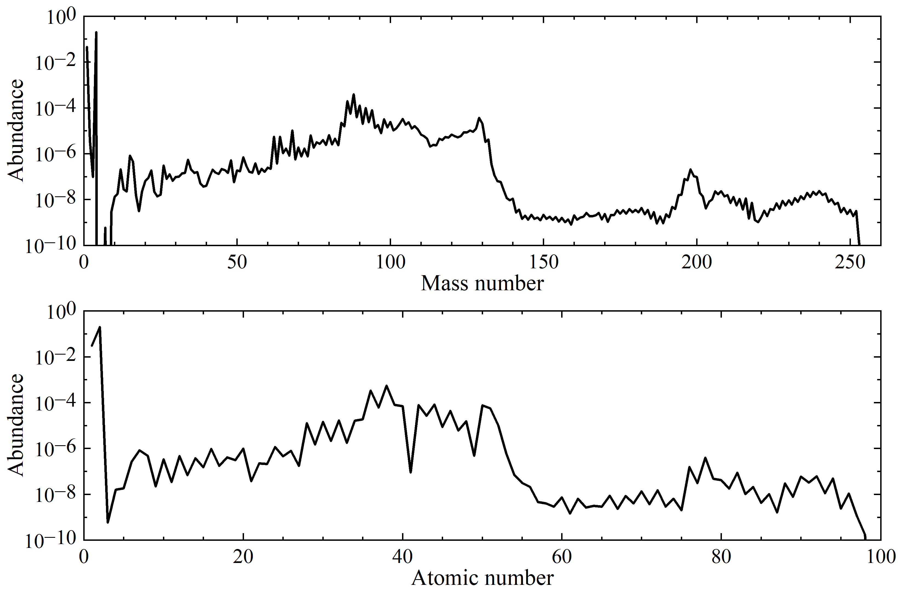
图注：Abundance patterns of nuclei synthesized in a magnetar GF as functions of mass number (top panel) and atomic number (bottom panel) at $t=10^3$~s.
对应解读：“建议重点查看的图表”第1项丰度分布图；“关键图表逐图导读”图1；详细解读中关于第一、第二 r-过程峰和第三峰缺失的核心结论。
入选理由：该图直接给出磁星巨耀发核合成产物随质量数和原子序数的分布，是判断产物是否主要集中在第一、第二 r-过程峰附近的基础证据，也决定后续不透明度、谱线核素和可探测性的物理来源。
来源与置信度：\(arxiv_source\)；high；\(arxiv_source\) / SGR.tex:figure[1]
Fig02
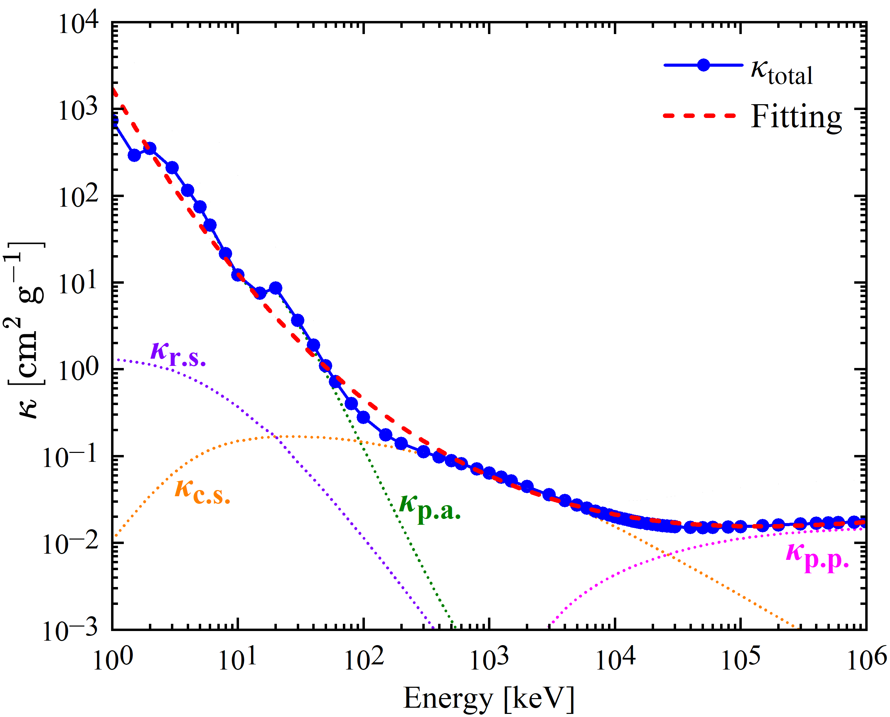
图注：Gamma-ray opacity of the $r$-process material ejected in magnetar GFs. The total opacity ($\kappa_{\rm total}$) includes contributions from four interaction processes between gamma-rays and matter: photoelectric absorption ($\kappa_{\rm p.a.}$), Compton scattering ($\kappa_{\rm c.s.}$), pair production ($\kappa_{\rm p.p.}$), and Rayleigh scattering ($\kappa_{\rm r.s.}$). The red dashed line shows the opacity obtained by fitting the XCOM data with the polynomial function (Eq.~\ref{function}).
对应解读：“建议重点查看的图表”第3项能量相关不透明度图；“关键图表逐图导读”图2；模型链条中辐射输运与逃逸率部分。
入选理由：该图明确展示总伽马不透明度及光电吸收、康普顿散射、成对产生、瑞利散射等分量随能量的变化，并包含拟合曲线，是检验 keV 波段不透明度比 MeV 波段高约三个数量级这一关键论断的最直接图表。
来源与置信度：\(arxiv_source\)；high；\(arxiv_source\) / SGR.tex:figure[2]
Fig04
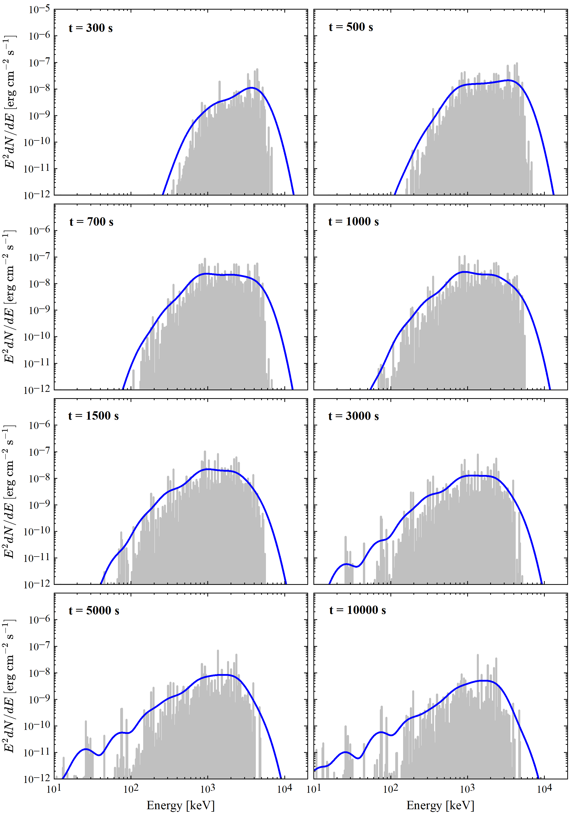
图注：Spectrum of observed gamma-ray emission produced by radioactive nuclei in magnetar GFs. The gray vertical lines mark the rest-frame gamma-ray emission lines, while the blue curve shows the observed spectrum after accounting for Doppler broadening.
对应解读：“建议重点查看的图表”第4项时间演化谱图/谱线展宽问题；“关键图表逐图导读”图3；详细解读中关于约 1 MeV 谱峰和多普勒展宽后观测谱的讨论。
入选理由：该图将静止系伽马射线谱线与考虑多普勒展宽后的观测谱同时呈现，能直接支撑论文关于 MeV 谱线、约 1 MeV 峰值以及窄线在实际观测中可能混成准连续谱的判断。
来源与置信度：\(arxiv_source\)；high；\(arxiv_source\) / SGR.tex:figure[4]
Fig05
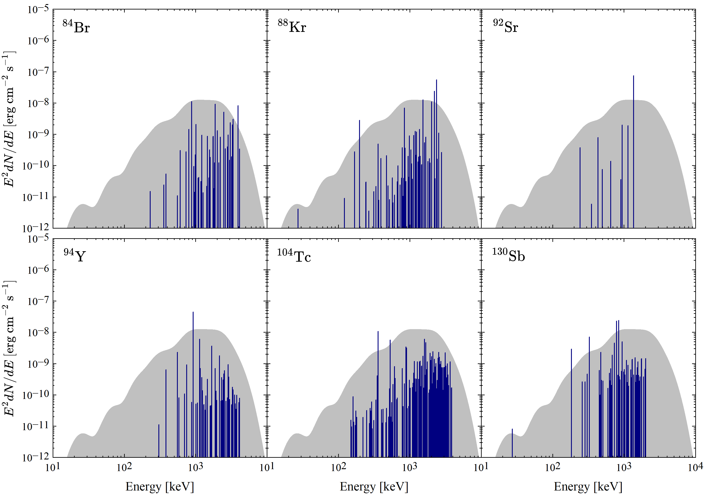
图注：Gamma-ray emission lines powered by the dominant nuclides. The gray shaded region represents the observed spectrum from a magnetar GFs at $t = 3000$~s.
对应解读：“建议重点查看的图表”第5项核素贡献分解图或线列表；“关键图表逐图导读”图4；详细解读中关于 88Kr 和 92Sr 主导亮线的结论。
入选理由：该图专门展示主导核素供能的伽马射线发射线，并与 t=3000 s 的观测谱区域对应，是确认哪些核素贡献最亮可检线、尤其是 88Kr 和 92Sr 是否支配总信号的关键证据。
来源与置信度：\(arxiv_source\)；high；\(arxiv_source\) / SGR.tex:figure[5]
Fig06
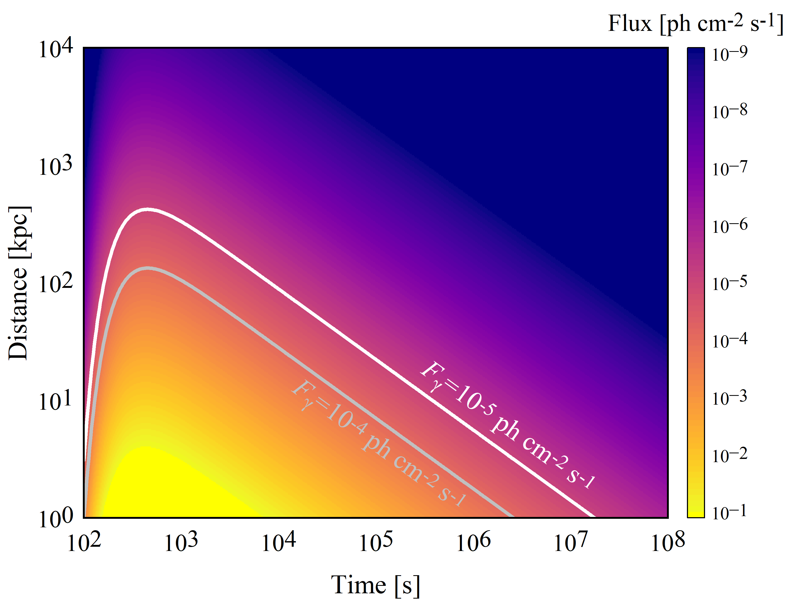
图注：Detection prospects of nuclear gamma-ray lines from radioactive nuclei in magnetar GFs with MeV gamma-ray detectors. The gray and white curves indicate flux levels of $10^{-4}$ and $10^{-5}$~ph~cm$^{-2}$~s$^{-1}$, respectively, roughly corresponding to the sensitivities of current and next-generation MeV gamma-ray detectors.
对应解读：“建议重点查看的图表”第6项可探测性比较图；“关键图表逐图导读”图5；模型拟合段落中关于仪器灵敏度、线通量阈值和观测声明条件的讨论。
入选理由：该图把模型预言的核伽马线与当前及下一代 MeV 探测器的大致灵敏度水平进行比较，直接对应论文关于线通量可能达到可探测范围的结论，是从理论预言走向观测可行性的核心图。
来源与置信度：\(arxiv_source\)；high；\(arxiv_source\) / SGR.tex:figure[6]
Fig03
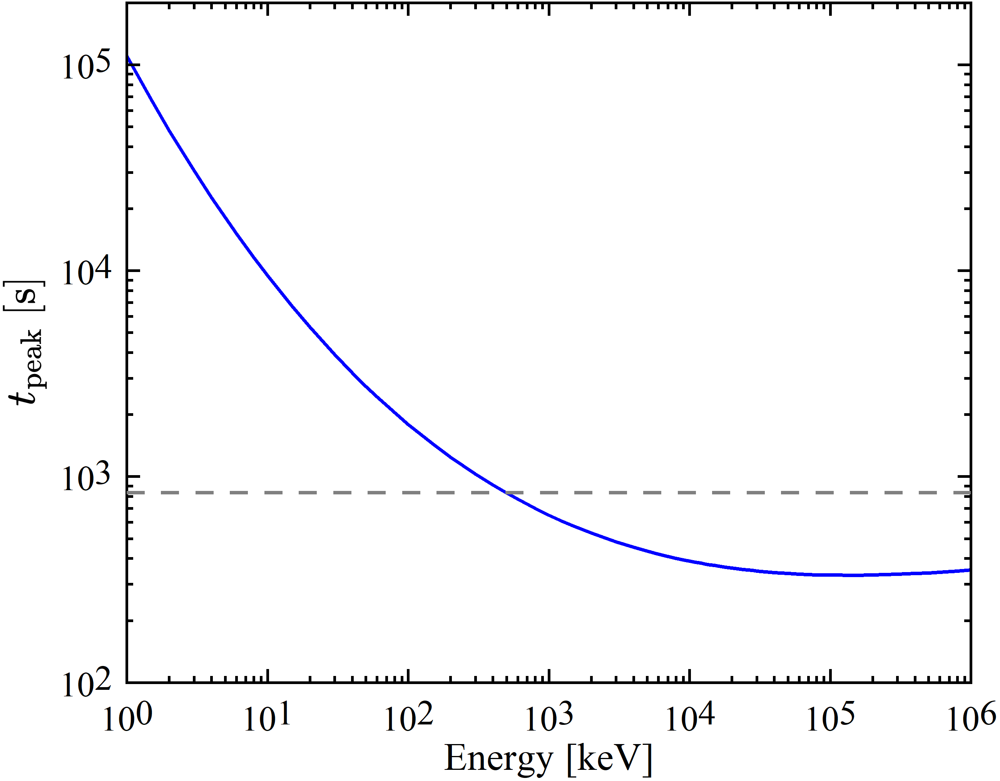
图注：Peak timescale of gamma-ray emission as a function of photon energy. The dashed line denotes the peak timescale calculated by assuming a constant gamma-ray opacity of $\kappa = 0.1~{\rm cm^{2}~g^{-1}}$. The ejecta properties are adopted to be consistent with those inferred from the gamma-ray emission of SGR~1806-20.
对应解读：“建议重点查看的图表”第7项光深或最佳观测窗口；模型拟合段落中关于 τγ(E,t)、喷出物质量和速度退化关系的讨论。
入选理由：该图给出伽马射线发射峰值时间随光子能量的变化，并与常数不透明度假设比较，可用于判断不同能段何时最容易逃逸和观测，是理解能量依赖不透明度如何转化为最佳观测窗口的重要补充。
来源与置信度：\(arxiv_source\)；high；\(arxiv_source\) / SGR.tex:figure[3]
强相关工作
同一源和同类事件方面，SGR 1806-20 的 2004 年巨耀发是最相关的历史参照，因为它提供了极端磁星巨耀发的能量尺度、时间结构和晚期高能辐射讨论。SGR 0526-66 与 SGR 1900+14 是同类原型事件，适合作为事件率和能量分布的历史样本。检索关键词可用 “SGR 1806-20 giant flare gamma-ray tail”, “magnetar giant flare baryon ejecta”, “magnetar flare r-process nucleosynthesis”。 基础理论方面，这篇文章与中子星并合 \(r\)-过程和千新星研究形成互补关系。GW170817 后的主流框架认为并合是重元素的重要来源，但第一峰、第二峰元素的相对贡献、早期银河化学演化和不同场址的频率仍有空间。检索关键词可用 “r-process sites neutron star mergers review”, “kilonova radioactive heating gamma-ray lines”, “MeV nuclear lines transients”。 可能的张力或相反观点在于：磁星巨耀发能否抛出足够多、足够富中子的物质仍不确定；巨耀发观测到的高能尾部也可能由磁层连续辐射、相对论外流冲击或其他非热过程解释，而非核衰变线。未来真正区分这些解释需要窄线、多线一致性和衰变时标，而不是单一宽带余辉。
同一事件 / 同类源线索：
- https://arxiv.org/abs/2606.17997
- https://heasarc.gsfc.nasa.gov/docs/objects/heapow/archive/compact_objects/sgr1806_swift.html
相似工作：
基础理论 / 方法工作：
相反观点 / 张力线索：
（未提供）
2. A catalogue of TeV pulsar environments
- 来源：arXiv / astro-ph.HE
- 链接：https://arxiv.org/abs/2606.17690v1
- 作者：Tina Wach, Tim Linden, Alison M. W. Mitchell, Samuel T. Spencer
- 评分：novelty 8/10，importance 8/10，relevance 10/10，final 9.70/10
- 推荐理由：汇总H.E.S.S.、MAGIC、VERITAS、HAWC、LHAASO等所有脉冲星相关TeV源并构建公开均一目录，是伽马射线PWN/TeV halo种群研究和CTA目标选择的高价值资源。
中文题目：TeV 脉冲星环境星表：把已知脉冲星相关 TeV 源放到同一把尺子上
做了什么：这篇论文整理了 H.E.S.S.、MAGIC、VERITAS、HAWC 和 LHAASO 已发表结果中所有被归类为脉冲星相关的 TeV 伽马射线源，并与 ATNF 脉冲星星表和 Fermi-LAT 脉冲星星表交叉匹配，形成一个公开、同质化的 TeV 脉冲星环境星表。最终样本包含 128 个 TeV 伽马射线源，关联到 66 颗不同脉冲星，覆盖年轻脉冲星风云、与超新星遗迹相互作用的系统，以及中年脉冲星周围的扩展 TeV halo。主要结论是：TeV 探测到的总体仍由银河面附近年轻、高自转能损率脉冲星主导，但 TeV 光度与特征年龄之间只有弱相关，说明 TeV 演化不能只用脉冲星年龄解释，环境、粒子输运和能量损失同样关键。论文还筛出 5 颗按预期应有 CTAO 可探测 PWN、但目前仍值得重点观测的脉冲星目标。
为什么重要：脉冲星环境已经是银河系 TeV 源中最重要、也最容易混淆的一类：同一个系统可能表现为紧致 PWN、偏移尾迹、与 SNR 交叠的复杂结构，或数十秒差距尺度的 TeV halo。过去不同望远镜给出的能段、形态尺度、谱指数、积分通量和源分类并不完全一致，做总体统计时很容易把仪器选择效应当成物理趋势。这篇星表的重要性在于，它把分散在多个 TeV 实验中的结果统一到可比较的格式，为研究脉冲星注入高能电子正电子、银河宇宙线传播、弥散伽马射线前景以及 CTAO 选源提供了基准样本。
理论 / 观测 / 仪器方法价值：对理论而言，星表提供了检验 PWN 和 TeV halo 演化模型的样本：如果 TeV 光度与 \(\tau_{\rm c}\) 只弱相关，那么模型必须显式处理扩散、平流、反向激波、周围辐射场和磁场，而不能只把自转能损率随时间衰减作为唯一控制量。对观测而言，它给出了跨 H.E.S.S.、MAGIC、VERITAS、HAWC、LHAASO 的源属性汇总和 pulsar cross-match，便于识别同源多命名、源混叠和候选 CTAO 目标。对方法而言，它提醒总体关系的拟合必须纳入非均匀灵敏度、角分辨率、扩展源偏置和出版选择效应。
为什么应该关注：如果你研究银河 TeV 源、PWN、宇宙线电子正电子、银河弥散辐射或 CTAO 观测规划，这个星表会成为一个实用入口：它告诉你哪些脉冲星环境已经在 TeV 被看到、哪些源可能是同一物理系统的不同观测表述、哪些经验相关关系其实并不强。它也把一个常被简化的问题摆到台面上：脉冲星年龄和当前自转能损率并不足以预测 TeV 外观，环境和输运物理可能决定了源是亮的、暗的、紧致的还是弥散的。
展开详细解读：文章讲解、背景、理论、重点章节、图表与相关工作
文章详细讲解
科学问题：论文关心的是，已知 TeV 脉冲星相关源作为一个总体到底呈现什么规律。脉冲星风云 \(\rm PWN\)、与超新星遗迹 \(\rm SNR\) 交叠的复合系统、偏移的 relic PWN，以及中年脉冲星周围的 TeV halo，过去常被分开讨论。可是对 TeV 天文来说，它们都可能来自脉冲星注入的高能 \(e^\pm\)，通过同步辐射和逆康普顿散射发光。问题在于：这些系统的 TeV 光度、谱形和空间尺度是否主要由脉冲星自身参数决定，还是由环境和粒子输运主导？
作者怎么做：作者从 H.E.S.S.、MAGIC、VERITAS、HAWC 和 LHAASO 的公开发表结果中收集所有被归类为 pulsar-associated 的 TeV 伽马射线源。然后将 TeV 源的位置、形态、谱参数、通量或光度等信息与 ATNF 脉冲星星表、Fermi-LAT 脉冲星星表中的脉冲星周期、周期导数、特征年龄、自转能损率、距离等属性交叉匹配。这样做的关键不是重新分析原始事件级数据，而是把多台仪器、多篇论文、多个能段中已经发表的结果放进一个尽量同质化的框架。
关键结果：最终星表包含 128 个 TeV 伽马射线源，关联到 66 颗不同脉冲星。样本显示，TeV 探测脉冲星环境仍主要集中在银河面附近、年轻且高自转能损率的脉冲星周围，这部分与传统 PWN 选择图像一致。但星表也纳入越来越多中年系统，尤其是 HAWC 和 LHAASO 对宽视场、扩展源更敏感后发现的 TeV halo。论文报告 TeV 光度与脉冲星特征年龄之间只有弱相关，这意味着仅用 \(\tau_{\rm c}\) 排序并不能解释 TeV 演化；同龄脉冲星可能因周围磁场、辐射场、扩散系数和 SNR 反向激波历史不同而表现出完全不同的 TeV 可见性。
局限和下一步：星表的统一化不可避免受限于原始发表结果的非均一性。不同实验的能量阈值、积分能段、角分辨率、背景估计方法和扩展源模板不同，导致同一物理源的通量、谱指数或角尺度未必能直接一一比较。源关联本身也可能存在混叠，尤其在银河面拥挤区域，一个 TeV 源可能同时靠近脉冲星、SNR、分子云或恒星形成区。下一步最有价值的方向是用 CTAO 和现有阵列的联合数据做统一似然分析，重新拟合关键复杂区域，并用该星表作为人口合成和输运模型的观测约束。
关键结果是怎么做出来的
本文最核心的证据链从样本定义开始。作者没有从全天图像重新盲搜，而是限定在 H.E.S.S.、MAGIC、VERITAS、HAWC 和 LHAASO 已发表、且源分类中已经与脉冲星环境有关的 TeV 源。这个选择保证了星表可追溯到公开文献，但也意味着它描述的是“已发表 TeV 脉冲星环境样本”，而不是严格意义上的全银河完备样本。最终条目数是 128 个 TeV 伽马射线源，关联到 66 颗脉冲星；一个脉冲星可对应多个 TeV 条目或多个仪器命名，一个 TeV 区域也可能有多个候选脉冲星。
交叉匹配的关键量来自两个方向。TeV 侧包括源位置、角延展、谱参数、积分通量或能量通量、能段和仪器来源；脉冲星侧包括周期 \(P\)、周期导数 \(\dot P\)、特征年龄 \(\tau_{\rm c}\)、自转能损率 \(\dot E\)、距离和是否为 GeV 脉冲星。读者应重点检查论文中样本分布图和参数相关图：如果 TeV 源集中在低银河纬度且 \(\dot E\) 高，这可能同时反映真实物理和探测偏置；如果中年 halo 的角尺度更大，则宽视场仪器会在样本中占更大权重。
关于相关性，论文报告 TeV 光度与 \(\tau_{\rm c}\) 之间只有弱相关。这里的结论通常不是来自单个显著性峰值，而是来自散点图、相关系数或回归趋势的整体判断。读者应看 TeV 光度的计算是否采用统一距离、统一能段换算，以及误差条是否包含距离不确定性。因为 \(L_\gamma\propto d^2F_\gamma\)，距离系统误差会在纵轴上放大，并且可能制造或抹平与 \(\tau_{\rm c}\)、\(\dot E\) 的关系。
论文另一个具体应用是筛选 5 颗预计应拥有 CTAO 可探测 PWN 的脉冲星作为未来目标。这类筛选一般依赖当前 \(\dot E\)、距离、年龄、可见天区、预期 TeV 转换效率和 CTAO 灵敏度。读者应检查这些目标是否靠近强弥散背景或已有复杂 TeV 源，因为 CTAO 对角分辨率有优势，但对非常大尺度、低面亮度 halo 的恢复仍受观测策略和背景建模限制。
稳健性方面，最需要关注的不是单个源的统计显著性，而是总体星表是否受分类和仪器选择影响。H.E.S.S. 对南天银河面和角尺度较小源有强贡献，HAWC 与 LHAASO 对北天、大尺度和高能持续源更有优势，MAGIC 与 VERITAS 常在定点深曝光中发挥作用。若不把这些选择函数纳入人口解释，样本中“年轻源多”“高 \(\dot E\) 源多”既可能是真实 TeV 物理，也可能是巡天深度、天空覆盖和扩展源灵敏度共同造成的结果。
展开背景、理论、公式、模型、章节和图表导读
背景知识
研究对象是脉冲星环境，而不是单纯的脉冲星磁层辐射。年轻中子星通过旋转能驱动相对论性风，在终止激波附近加速电子正电子，形成从射电、X 射线到 TeV 的 PWN。随着系统演化，SNR 膨胀、反向激波回撞、脉冲星本动速度和周围星际介质不均匀性会改变 PWN 的形态，使 TeV 源相对脉冲星位置发生偏移，甚至形成很大的低面亮度结构。
历史上，蟹状星云是 PWN 的标准烛光式原型，但它并不能代表多数 TeV 脉冲星环境。H.E.S.S. 在银河面巡天中发现了大量扩展 TeV 源，其中不少与年轻高 \(\dot E\) 脉冲星和 SNR 复合体有关，例如 Vela X、HESS J1825-137 等。后来 HAWC 对 Geminga 和 Monogem 周围发现宽广 TeV halo，使人们意识到中年脉冲星也可能以非常扩展的逆康普顿 halo 形式发光，并与局域 \(e^\pm\) 传播问题相关。
现在值得重新做星表，是因为 TeV 源样本已经从少数 IACT 发现的明亮 PWN，扩展到宽视场水切伦科阵列发现的高能、大尺度 halo 和 PeV 相关源。不同仪器的观测窗口互补：成像大气切伦科望远镜角分辨率好、瞬时视场小、对小尺度源敏感；HAWC 和 LHAASO 全天监测能力强、对多 TeV 至 PeV 能段和大尺度结构更有优势。没有统一星表，很难判断新发现到底改变了总体物理图像，还是只是打开了不同选择函数。
该领域常见误区之一，是把 TeV 源与最近的高 \(\dot E\) 脉冲星自动等同。实际上银河面源拥挤，TeV 形态可能叠加 SNR 壳层、PWN、分子云强子辐射和弥散背景。另一个误区是把特征年龄 \(\tau_{\rm c}\) 当作真实年龄；当初始周期不远小于当前周期、制动指数偏离 \(3\)，或有复杂自转历史时，\(\tau_{\rm c}\) 可能偏离真实动力学年龄。第三个误区是把 TeV 不探测简单解释为“没有 PWN”，而忽视距离、面亮度稀释、能量阈值、背景和环境磁场等因素。
基础理论 / 方法脉络
基础物理图像是旋转中子星损失自转能，能量通过磁层和相对论性风注入到周围环境。高能 \(e^\pm\) 在磁场中产生同步辐射，在星光、红外和宇宙微波背景光子场中通过逆康普顿散射产生 GeV-TeV 伽马射线。X 射线通常追踪较高磁场、较短寿命的电子，TeV 伽马射线则可追踪冷却较慢、传播更远的电子群，因此 TeV 形态常比 X 射线 PWN 更大、更偏移。
本文依赖的关键脉冲星量包括周期 \(P\)、周期导数 \(\dot P\)、特征年龄 \(\tau_{\rm c}\)、自转能损率 \(\dot E\) 和距离 \(d\)。\(\dot E\) 给出当前可用旋转能功率的量级，但 TeV 光度也取决于过去注入史，因为 TeV 电子寿命可达 \(10^4\) 到 \(10^5\) 年量级。\(\tau_{\rm c}\) 是方便但粗糙的年龄指标，因此本文发现 \(L_\gamma\) 与 \(\tau_{\rm c}\) 弱相关并不意外，却对过度简单的演化模型构成约束。
观测方法上，TeV 源属性通常来自两类仪器。IACT 如 H.E.S.S.、MAGIC、VERITAS 通过大气切伦科光成像重建伽马射线方向和能量，背景可用 reflected-region、ring-background 或模板方法估计；HAWC 和 LHAASO 通过地面粒子阵列持续监测大视场天空，适合发现长期稳定、多 TeV 和大尺度源。星表要合并这些结果，必须面对能段不同、点扩散函数不同、扩展源模板不同、通量阈值不同的问题。
主要退化关系包括：距离与光度退化，\(L_\gamma\) 对 \(d\) 的二次依赖会放大视差或色散量距离误差；扩散系数与注入年龄退化，大尺度 halo 既可能意味着粒子扩散快，也可能意味着源较老或长期注入；磁场与辐射场退化，同一电子谱在不同 \(B\) 和光子场能量密度下会改变同步与逆康普顿亮度比；源关联与背景退化，在银河面复杂区域，错误的背景模型可能把弥散结构吸收到扩展源中。
公式与推导
第一步从脉冲星旋转能出发。若中子星转动惯量为 \(I\)，角速度为 \(\Omega=2\pi/P\)，旋转能为
这里 \(P\) 是自转周期。对时间求导得到当前自转能损率
星表中用 \(\dot E\) 近似表征脉冲星当前给环境供能的能力，但它不等于 TeV 光度。适用前提是 \(I\) 取典型中子星值且周期演化由长期制动主导。
第二步定义常用年龄指标。若磁偶极制动且初始周期远小于当前周期，特征年龄为
更一般地，若制动律为 \(\dot\Omega=-K\Omega^n\)，真实年龄近似为
其中 \(n\) 是制动指数，\(P_0\) 是出生周期。该式说明 \(\tau_{\rm c}\) 只是特殊极限，因此用 \(\tau_{\rm c}\) 寻找 TeV 演化相关性会有天然散布。
第三步把观测通量转为光度。若观测到能量通量 \(G_\gamma\)，距离为 \(d\)，各向同性等效 TeV 光度可写为
若论文或原始文献给出的是微分谱 \(\phi(E)=dN/(dE\,dA\,dt)\)，某能段 \([E_1,E_2]\) 的能量通量为
这两式是跨文献比较 TeV 光度的基础，也解释了距离误差为什么是总体相关性分析的主要系统项。
第四步描述常用 TeV 谱模型。许多源可用幂律或带截断幂律近似：
其中 \(\phi_0\) 是归一化，\(E_0\) 是枢轴能量，\(\Gamma\) 是光子谱指数，\(E_{\rm cut}\) 是截断能量。不同仪器的有效能段不同，若只比较某一阈值以上积分通量，就必须小心 \(\Gamma\) 和 \(E_{\rm cut}\) 带来的换算差异。
第五步连接电子输运与 TeV 形态。简化的扩散冷却方程为
这里 \(n_e\) 是电子数密度，\(D(E)\) 是扩散系数，\(b(E)=-dE/dt\) 是能损率，(Q(E,t)
) 是注入项。TeV halo 的大小和谱软化主要受 \(D(E)\)、\(b(E)\) 与源年龄共同控制。
第六步估算逆康普顿辐射。电子洛伦兹因子 \(\gamma\) 散射能量为 \(\epsilon\) 的软光子，在 Thomson 极限下典型伽马射线能量为
同步与逆康普顿能损率可合写为
其中 \(U_B=B^2/(8\pi)\) 是磁场能量密度，\(U_{\rm rad}\) 是辐射场能量密度。该式说明同样的电子注入在不同环境中会有不同 TeV 可见性。
第七步给出扩展尺度的标度。若电子有效传播时间为 \(t_{\rm eff}\)，扩散长度近似为
观测角尺度为
因此大角尺度既可能来自近距离，也可能来自大物理尺度；仅凭角大小不能直接判断扩散是否异常。
第八步说明星表相关性和探测显著性的统计语言。若比较 \(\log L_\gamma\) 与 \(\log \tau_{\rm c}\)，可用线性模型
若 \(b\) 与零只弱偏离，且内禀散布 \(\sigma_{\rm int}\) 大，就支持“年龄不是唯一控制量”。对单源显著性，常见似然比检验量为
这里 \(\mathcal{L}\) 是含源模型与背景模型的似然，\(TS\) 的解释依赖自由度和边界条件；星表合并的是文献结果，因此不同实验的 \(TS\) 或显著性并非完全同质。
模型拟合 / 应用方法
这篇论文的核心不是重新拟合每个 TeV 源的事件数据，而是把文献中已经拟合出的源参数统一整理。因此“拟合量”主要来自原始实验论文：源位置、延展半径或形态模板、谱归一化、谱指数、截断能量、积分通量和显著性。星表层面的模型比较则更多体现在参数相关性和总体趋势，例如 \(L_\gamma\) 与 \(\tau_{\rm c}\)、\(\dot E\)、距离或角尺度之间是否存在可解释的关系。
若对这类样本做进一步拟合，一个合理做法是在对数空间建立层级模型，把测量误差、距离误差和内禀散布分开。比如拟合 \(\log L_\gamma\) 关于 \(\log \dot E\) 和 \(\log \tau_{\rm c}\) 的关系时，应让 \(d\) 的不确定性传播进 \(L_\gamma\)，并加入非探测上限和选择函数。否则，样本只包含“已探测源”会导致 Malmquist 型偏置，使亮源和近源过度代表总体。
残差诊断尤其重要。如果某些源在 \(L_\gamma\)-\(\dot E\) 或 \(L_\gamma\)-\(\tau_{\rm c}\) 图上明显偏离，不能马上解释为特殊加速效率；它们可能是距离错估、多个源混叠、不同能段换算不一致、或 TeV halo 低面亮度部分被不同背景方法扣除。对扩展源，源模板半径与背景区域选择会直接影响积分通量，进而影响总体趋势。
主要参数退化包括 \(d\) 与 \(L_\gamma\)、\(D(E)\) 与年龄、\(B\) 与电子归一化、以及源关联概率与空间重合。若 CTAO 后续要验证文中筛出的目标，应该用联合多波段拟合：X 射线约束高能电子和磁场，GeV 数据约束较低能电子或磁层污染，TeV 谱和形态约束扩散、冷却与注入历史。只有谱能分布和能量依赖形态同时被解释，才能把“脉冲星附近有 TeV 源”提升为可信的物理关联。
重点章节 / 结果段落怎么读
-
数据和样本定义：优先阅读作者如何定义“pulsar-associated TeV source”。要区分明确 PWN、候选 PWN、TeV halo、与 SNR 复合或仅空间关联的条目。这里决定了星表的物理纯度和后续统计结论的适用范围。
-
星表构建和交叉匹配方法：重点看 TeV 源如何与 ATNF 和 Fermi-LAT 脉冲星星表匹配，匹配半径、距离来源、重复命名和多源关联如何处理。若同一 TeV 区域被多个实验以不同形态报告，星表如何保留或合并信息会影响计数。
-
总体样本性质：重点看银河坐标分布、\(\dot E\)、\(\tau_{\rm c}\)、距离和 TeV 光度分布。这一部分告诉读者样本主要由哪些系统构成，也暴露选择效应：低纬度、近距离、高 \(\dot E\) 和高面亮度源更容易进入样本。
-
相关性分析和物理解释：重点看 \(L_\gamma\) 与脉冲星参数的散点图、相关系数或回归趋势。论文最值得记住的结论是 \(L_\gamma\) 与 \(\tau_{\rm c}\) 只有弱相关，因此环境和输运不能被视为二阶修正。
-
CTAO 目标筛选和讨论：阅读作者如何定义“应可探测但尚需观测”的 5 个目标。这里对未来观测规划最有用，但也最依赖模型假设和 CTAO 对扩展源的实际灵敏度。
建议重点查看的图表
-
全天或银河坐标分布图：检查 TeV 源是否沿银河面集中，南北天覆盖是否反映 H.E.S.S.、HAWC、LHAASO 的不同选择函数；注意不要把天空覆盖差异误读为源族物理差异。
-
\(\dot E\)、\(\tau_{\rm c}\)、距离的直方图或累积分布：看样本是否由年轻、高自转能损率、较近脉冲星主导；若有按仪器或源类型分色，应比较 IACT 源和宽视场阵列源的差别。
-
TeV 光度与 \(\tau_{\rm c}\) 的散点图：这是支撑“弱相关”的关键诊断。重点看散布大小、误差条、上限是否纳入、以及中年 halo 是否系统偏离年轻 PWN。
-
TeV 光度或效率与 \(\dot E\) 的关系图：检查是否存在 \(L_\gamma>\dot E\) 这类不物理或提示距离/通量问题的异常点；效率 \(\eta=L_\gamma/\dot E\) 的分布可暴露极端系统。
-
角延展或物理尺寸与年龄的关系图：看源是否随年龄变大，或只是近距离 halo 在角尺度上更显著；应同时关注点扩散函数和不同实验对大尺度结构的敏感度。
-
CTAO 候选目标表：检查每个目标的 \(\dot E\)、距离、预期通量、可见性和周围背景复杂度。对观测规划而言，背景和源混叠常比名义通量更限制发现能力。
关键图表逐图导读
图 1：建议首先看银河坐标分布图。横轴通常是银河经度，纵轴是银河纬度，点代表 TeV 源或关联脉冲星，颜色或符号可能区分 H.E.S.S.、MAGIC、VERITAS、HAWC、LHAASO 或源类型。主要结论应是样本强烈集中在银河面附近。读图陷阱是仪器覆盖不均：南天银河面由 H.E.S.S. 贡献大，北天高能扩展源由 HAWC 和 LHAASO 贡献大，不能把点密度直接当作银河源密度。
图 2：样本参数分布图通常展示 \(\dot E\)、\(\tau_{\rm c}\) 和距离。横轴可能为对数参数，纵轴为源数。若高 \(\dot E\) 和小 \(\tau_{\rm c}\) 端占优，说明传统年轻 PWN 仍主导 TeV 探测样本；若中年系统形成次峰或长尾，则反映 TeV halo 的加入。读图时要注意一个脉冲星可能对应多个 TeV 条目，直方图按 TeV 源计数和按脉冲星计数会不同。
图 3：\(L_\gamma\) 对 \(\tau_{\rm c}\) 的散点图是本文核心。横轴通常为 \(\log \tau_{\rm c}\)，纵轴为 \(\log L_\gamma\)，点可能按源类型或仪器分色。若回归线斜率不显著或散布远大于测量误差，就支持“年龄只提供弱预测力”。陷阱是 \(L_\gamma\) 依赖 \(d^2\)，距离误差会把点沿纵轴大幅移动。
图 4：\(L_\gamma\) 或 \(\eta=L_\gamma/\dot E\) 对 \(\dot E\) 的图可用于判断当前自转供能是否控制 TeV 发光。若 \(L_\gamma\) 随 \(\dot E\) 有宽散布，说明注入历史和环境重要；若效率在老年或低 \(\dot E\) 系统中异常高，需检查距离、源混叠和能段换算。不要把各向同性等效光度直接当成真实辐射功率的精确值。
图 5：角尺度或物理尺寸与年龄、距离的关系图有助于区分 PWN 和 halo。横轴可能是 \(\tau_{\rm c}\) 或 \(d\)，纵轴是角半径或换算物理半径。若中年系统更扩展，符合粒子长期传播图像；但宽视场仪器更容易报告大尺度结构，IACT 背景扣除可能压低超大尺度通量，这是读图时必须记住的系统差异。
图 6：CTAO 候选目标表或预测可探测性图应看预期通量相对 CTAO 灵敏度的位置。若纵轴为通量或能量通量，横轴为能量阈值、曝光时间或源延展，模型线可能代表 CTAO 灵敏度。最关键的是候选源是否在扩展源灵敏度而非点源灵敏度之上；若论文只用点源近似，实际观测难度可能被低估。
论文原图 / 可嵌入图片
Fig02
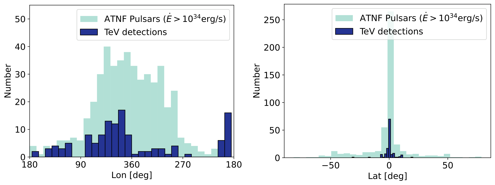
图注：Galactic position of ATNF pulsars with $\dot{E} > 10^{34}\,$erg/s, compared to the sub-population of pulsars with detected TeV nebulae or halos.
对应解读：对应“建议重点查看的图表”第1项和“关键图表逐图导读”图1：全天/银河坐标分布图。
入选理由：该图直接展示高自转能损率 ATNF 脉冲星与已探测 TeV 星云或 halo 子样本在银河坐标中的位置，是判断样本是否沿银河面集中、以及选择函数是否影响源分布解读的最核心图。相比其他候选图，它最直接支撑日报中关于银河面集中和仪器覆盖偏差的提醒。
来源与置信度：\(arxiv_source\)；high；\(arxiv_source\) / aa59403-26.tex:figure[2]
Fig01
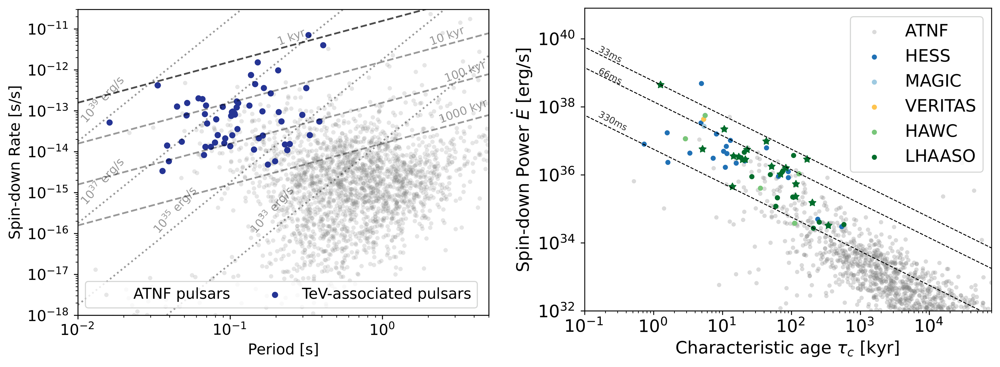
图注：Left: P-Pdot diagram for Galactic pulsars. The 66 pulsars connected to TeV $\gamma$-ray emission included in this catalogue are shown in blue, while pulsars with only low-energy emission are shown in grey. Right: The spin-down power $\dot{E}$ for TeV detected and non-detected pulsars as a function of the characteristic age, $\tau_c$. The sources detected up to ultra high energies ($>100\,$TeV) are indicated by star markers.
对应解读：对应“建议重点查看的图表”第2项，以及“关键图表逐图导读”图2中关于 \(\dot E\)、\(\tau_{\rm c}\) 分布和年轻高能脉冲星主导样本的讨论。
入选理由：该图左侧给出 P-\(\dot P\) 图，右侧直接展示 TeV 探测与非探测脉冲星的 \(\dot E\) 随 \(\tau_c\) 的关系，并标出超高能源，可用于说明 TeV 样本偏向年轻、高自转能损率脉冲星。虽然它不是直方图，但比其他候选图更直接呈现日报强调的年龄和自转能损率选择效应。
来源与置信度：\(arxiv_source\)；high；\(arxiv_source\) / aa59403-26.tex:figure[1]
Fig04
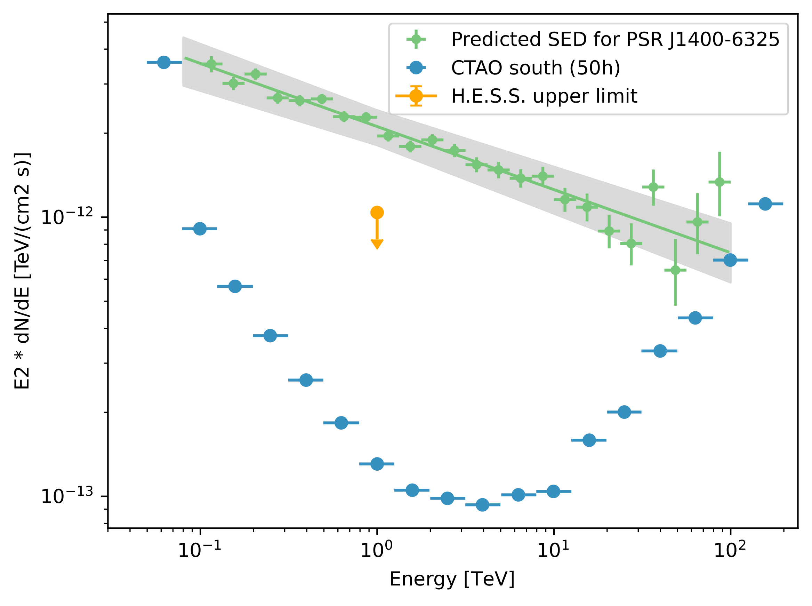
图注：Predicted SED for PSR~J1400$-$6325 compared to the 50 hour point-source sensitivity for CTAO south alpha configuration \(\citep{cta_sens}.\)
对应解读：对应“建议重点查看的图表”第6项和“关键图表逐图导读”图6：CTAO 候选目标或预测可探测性图。
入选理由：该图把 PSR J1400−6325 的预测 SED 与 CTAO south 50小时点源灵敏度进行比较，直接服务于论文筛选未来 CTAO 目标的结论。它能够检查候选源预期通量是否超过灵敏度，是日报中观测规划和可探测性讨论最相关的候选图。
来源与置信度：\(arxiv_source\)；high；\(arxiv_source\) / aa59403-26.tex:figure[4]
Fig05
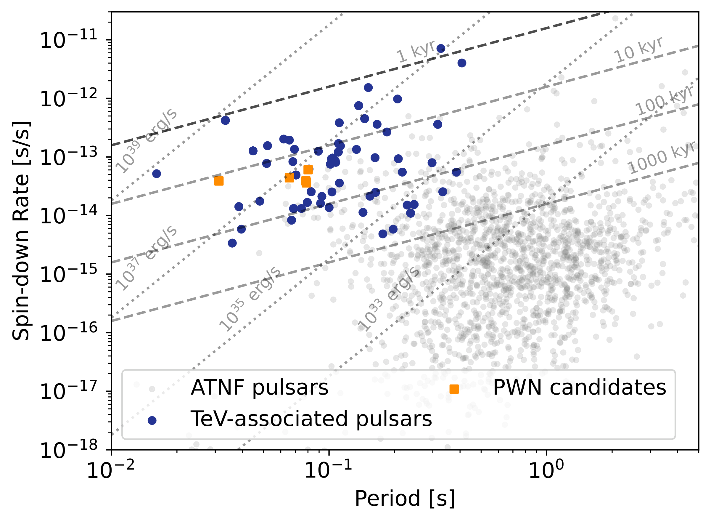
图注：$P$-$\dot{P}$-diagram showing all detected pulsars with a distance below $8\,$kpc. Powerful pulsars without any detected $\gamma$-ray emission are indicated in orange.
对应解读：对应“建议重点查看的图表”第6项中 CTAO 候选目标筛选背景，也关联“关键图表逐图导读”图2关于 \(P\)-\(\dot P\)、\(\dot E\) 和距离选择的讨论。
入选理由：该图标出距离小于 8 kpc 的脉冲星，并突出高能但尚无伽马射线探测的脉冲星，有助于理解作者如何从强脉冲星样本中寻找潜在 TeV PWN/halo 候选。它虽不是灵敏度曲线或目标表，但对解释为什么某些未探测高 \(\dot E\) 脉冲星值得 CTAO 跟进很有价值。
来源与置信度：\(arxiv_source\)；high；\(arxiv_source\) / aa59403-26.tex:figure[5]
Fig03
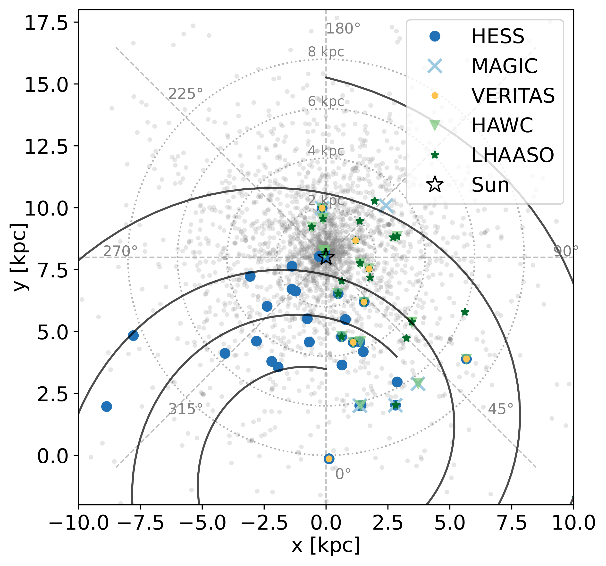
图注：Top-down view of the galaxy with a spiral-arm model presented in \(\citet{Faucher}.\) The pulsars which were identified to host $\gamma$-ray structures are over-plotted. The distance for each pulsar is taken from the ATNF \(\citep{ATNF}.\) Both TeV and ATNF pulsars are systematically found relatively close to the Sun.
对应解读：对应“建议重点查看的图表”第2项中距离分布/近距离选择效应，以及“详细解读”中样本集中在较近脉冲星附近的局限性讨论。
入选理由：该图给出银河俯视图和旋臂模型，并标出承载 TeV 结构的脉冲星位置，可视化说明 TeV 与 ATNF 脉冲星都系统性偏向太阳附近。它不能替代 \(L_\gamma\)-\(\tau_c\) 或效率图，但对解释距离选择效应和星表空间覆盖偏差有明确作用。
来源与置信度：\(arxiv_source\)；high；\(arxiv_source\) / aa59403-26.tex:figure[3]
强相关工作
这篇工作与同类 TeV 源目录和巡天论文直接相关，尤其是 H.E.S.S. Galactic Plane Survey、HAWC 高能源目录、LHAASO 高能源目录，以及各个经典 PWN/halo 的个别论文。它不是某个单一瞬变或单一源论文，而是同一类源的综合星表；因此 source context 应理解为“同类源目录、原型源和历史综述”。检索关键词建议包括：TeV pulsar wind nebula catalogue、TeV halo pulsars、H.E.S.S. Galactic Plane Survey PWN、HAWC Geminga TeV halo、LHAASO pulsar halo、ATNF pulsar catalogue、Fermi LAT pulsar catalogue。
理论背景方面，它与 PWN 演化、SNR 反向激波作用、电子正电子扩散、局域正电子超额起源等文献相连。相反或存在张力的观点主要集中在：TeV halo 是否普遍具有受抑制扩散、Geminga 类系统能否解释 AMS-02 正电子超额、以及若干银河面 TeV 源究竟是 leptonic PWN 还是 hadronic SNR/分子云相互作用。读者若要深入，应把本文星表作为入口，再回到单源多波段建模和仪器巡天论文中检查每个关键源的证据强弱。
同一事件 / 同类源线索：
- https://arxiv.org/abs/2606.17690
- https://www.atnf.csiro.au/research/pulsar/psrcat/
- https://fermi.gsfc.nasa.gov/ssc/data/access/lat/psrcat/
相似工作：
基础理论 / 方法工作：
相反观点 / 张力线索：
3. Revisiting Disk Winds in Active Galactic Nuclei as an Origin of Cosmic Gamma-ray and Neutrino Backgrounds
- 来源：arXiv / astro-ph.HE
- 链接：https://arxiv.org/abs/2606.17490v1
- 作者：Nobuyuki Sakai, Yoshiyuki Inoue, Ellis R. Owen
- 评分：novelty 7/10，importance 8/10，relevance 10/10，final 9.40/10
- 推荐理由：用Fermi-LAT Seyfert和XRISM风参数校准AGN盘风轻强子模型，约束其对GeV伽马背景和100 TeV中微子背景贡献，并给出TeV/PeV观测目标；高度契合伽马射线和高能中微子兴趣。
中文题目：重新评估活动星系核吸积盘风作为宇宙伽马射线和中微子背景起源的贡献
做了什么：这篇论文重新计算了活动星系核吸积盘风对宇宙伽马射线背景和宇宙高能中微子背景的贡献。作者没有只从理论上假设风的动能和环境密度，而是用附近被费米大面积望远镜探测到的塞弗特星系的射电与GeV伽马射线数据来校准轻子-强子混合模型，并把宇宙线在盘风前向激波和反向激波中的加速都纳入计算。结果是：在纳入较新的XRISM对超快外流参数的约束后，AGN盘风在\(10\,\mathrm{GeV}\)以上最多只贡献宇宙伽马射线背景的\(\lesssim 5\%\)，在\(100\,\mathrm{TeV}\)附近最多只贡献宇宙中微子背景的\(\lesssim 10\%\)。这意味着盘风很可能不是这两个弥散背景的主导来源，但附近带有超快外流的塞弗特星系仍是未来TeV伽马射线和TeV-PeV中微子观测的好靶标。
为什么重要：宇宙高能中微子背景和宇宙伽马射线背景的来源仍未完全解决，而AGN长期被认为是候选源。盘风模型的吸引力在于它把黑洞吸积释放的能量、星系核尺度外流、激波加速和多信使辐射自然联系起来；问题是过去预测对风功率、环境气体密度、宇宙线加速效率非常敏感，容易得到跨度很大的结论。本文的重要性在于把模型压到实际观测允许的范围内，给出一个较保守但更可检验的上限。
理论 / 观测 / 仪器方法价值：对理论而言，本文把AGN盘风多信使模型从“可调参数能解释背景”推进到“受射电、GeV伽马射线和XRISM风参数共同约束后还能贡献多少”。对观测而言，它给出了一组更具体的候选目标：附近、拥有超快外流、且可能在TeV伽马射线或TeV-PeV中微子能段有可测信号的塞弗特星系。对方法而言，文章展示了如何把单源的轻子-强子辐射建模与AGN族群合成相连，用来检验弥散背景贡献。
为什么应该关注：如果你关心IceCube中微子、Fermi弥散伽马背景、AGN反馈或未来CTA/LHAASO/KM3NeT/IceCube-Gen2目标选择，这篇文章值得看。它并没有宣布一个新主导源，而是把一个热门候选机制的贡献压低到可量化范围：盘风可能是背景的一小部分，而不是主角。这类“排除或限制主导贡献”的工作对多信使天体物理很关键，因为它能帮助我们把注意力转向真正缺失的源族群，或者重新审视AGN内部喷流、日冕、星暴核等替代通道。
展开详细解读：文章讲解、背景、理论、重点章节、图表与相关工作
文章详细讲解
科学问题：宇宙伽马射线背景和宇宙高能中微子背景都由许多未分辨源和弥散过程叠加而成。AGN吸积盘风，特别是含有超快外流的系统，能在星系核附近把大量机械能注入周围介质，并在前向激波和反向激波中加速电子与质子。若质子与气体或辐射场相互作用，就会产生\(\pi^0\)衰变伽马射线和\(\pi^\pm\)衰变中微子。因此，盘风曾被提出为同时解释宇宙伽马射线背景和宇宙中微子背景的候选机制。核心难点是：盘风的动能、持续时间、覆盖因子、环境密度和宇宙线效率都不容易直接测量，导致过去预测范围很宽。
作者怎么做：本文建立了一个轻子-强子混合的AGN盘风模型，分别考虑风驱动壳层前方的前向激波和风物质内部的反向激波。电子产生同步辐射和外康普顿辐射，质子通过强子过程产生伽马射线和中微子。与只从理论参数扫描不同，作者用附近Fermi-LAT探测到的塞弗特星系的射电与GeV伽马射线数据来校准模型，把单源辐射谱限制在不超过已有观测的范围内。同时，文章把近期XRISM对风速、柱密度和电离状态等风参数的约束纳入盘风能量学估计，使模型不再依赖过于乐观的风功率假设。
关键结果：经过校准后，AGN盘风对\(10\,\mathrm{GeV}\)以上宇宙伽马射线背景的贡献上限约为\(\lesssim 5\%\)，对\(100\,\mathrm{TeV}\)附近宇宙中微子背景的贡献上限约为\(\lesssim 10\%\)。这说明盘风不是同时主导两类弥散背景的自然解。这个结论的物理原因是多重约束共同作用：若提高强子功率以产生足够中微子，伴随的伽马射线级联和GeV-TeV辐射会受到Fermi观测限制；若调低环境密度以避免伽马射线超标，质子-质子碰撞效率又不足以产生足够中微子。
局限和下一步：这项研究依赖AGN族群合成模型、盘风占空比、超快外流发生率、源内吸收和星系际背景光吸收等假设。附近塞弗特样本的选择也可能偏向射电或伽马较亮对象，未必完全代表AGN总体。下一步最有价值的是对具体附近UFO宿主进行TeV伽马射线深度观测，并用IceCube、KM3NeT或未来IceCube-Gen2做定向叠加搜索。如果这些目标中出现与盘风能量学相符的TeV-PeV信号，盘风仍可能是局部源族的重要成员；如果继续没有探测，则弥散背景主导源的空间会进一步收缩。
关键结果是怎么做出来的
本文最重要的证据链从单源校准开始。作者选择附近Fermi-LAT探测到的塞弗特星系作为锚点，因为这些源既有GeV伽马射线约束，也通常有射电数据可限制非热电子同步辐射。样本的作用不是要统计完整AGN总数，而是用实际可观测源给盘风模型设定允许的非热辐射归一化。换句话说，模型不能任意提高宇宙线功率来解释弥散中微子，否则会先在这些近邻源的射电或GeV波段违反观测。
在每个源的建模中，作者把风驱动结构分成前向激波和反向激波。前向激波扫过宿主星系核周围介质，强子相互作用效率通常对外部气体密度敏感；反向激波处理风自身物质，受到风质量流率和速度约束。电子部分用于解释或限制射电同步辐射与GeV外康普顿分量，质子部分用于计算\(pp\)产生的伽马射线和中微子。关键统计量不是单一探测显著性，而是模型谱能量分布是否同时满足多波段上限和探测点。
随后，文章把经单源数据校准的模型嵌入AGN族群合成。族群合成需要AGN光度函数、红移演化、风发生率或覆盖因子，以及从AGN辐射光度到风机械功率的转换。弥散背景强度通过对光度和红移积分得到，并与Fermi-LAT测得的宇宙伽马射线背景以及IceCube测得的天体中微子通量比较。论文的核心数值结论是贡献比例上限：\(10\,\mathrm{GeV}\)以上CGB为\(\lesssim 5\%\)，\(100\,\mathrm{TeV}\)附近CNB为\(\lesssim 10\%\)。
支撑结论的图表应包括：单源的射电到GeV谱能量分布拟合、前向/反向激波各自的电子和强子分量、族群积分后的弥散伽马射线谱与Fermi背景比较、弥散中微子谱与IceCube通量比较，以及风参数变化对贡献比例的影响。读者应特别检查模型线是否只是贴近上限而非真正拟合探测点，因为这会影响“最大贡献”的解释。
系统误差主要来自四类：AGN盘风机械功率与辐射光度的标定、环境气体密度、宇宙线加速效率和最大能量、以及源内/源外伽马射线吸收。稳健性检验应看作者是否改变XRISM约束下的风速度和柱密度、是否分别考察前向与反向激波、是否测试AGN光度函数和红移演化的变化。只要这些变化不能把贡献稳定推到接近\(100\%\)，结论就不是“盘风完全无关”，而是“盘风难以作为主导背景源”。
展开背景、理论、公式、模型、章节和图表导读
背景知识
研究对象是AGN吸积盘风。AGN中心的超大质量黑洞通过吸积释放引力能，一部分以辐射形式出现，一部分可能通过喷流、日冕加热或盘风机械能输出。盘风可以表现为紫外/X射线吸收线，也可以在高电离、高速度情况下表现为超快外流。典型超快外流速度可达光速的若干百分之一到十分之几，这意味着即使质量流率不极端，其机械功率也可能相当可观。
历史问题在于，AGN是否是高能中微子的主要来源一直没有定论。喷流型AGN，尤其是耀变体，曾是最直观候选，但Fermi源计数和IceCube关联分析显示，明亮耀变体不太可能贡献全部中微子背景。于是非喷流AGN机制受到重视，包括AGN日冕、隐藏核区、星暴-AGN复合区和盘风激波。盘风模型有优势：它不要求喷流正对视线，并且可能在大量普通塞弗特星系中普遍存在。
观测背景来自两条线。第一条是Fermi-LAT测得的各向同性或河外伽马射线背景，其中相当一部分可由耀变体、星系形成活动和其他源族解释，但仍存在模型依赖的不确定余量。第二条是IceCube测得的\(\mathrm{TeV}\)到\(\mathrm{PeV}\)天体中微子通量，其谱形和各向同性程度表明来源可能是大量弱源或部分隐藏源。任何候选源族若产生中微子，通常也会伴随伽马射线，因此必须同时满足伽马射线背景约束。
为什么现在值得重新看：XRISM等高分辨率X射线光谱任务正在改善对AGN风参数的测量，尤其是风速、柱密度、电离参数和吸收线结构。这些量直接影响风质量流率和机械功率估计。与此同时，Fermi-LAT长期积累数据使近邻塞弗特星系的GeV约束更强，IceCube中微子谱也更稳定。理论上可调的盘风模型现在必须面对更严格的多信使交叉检验。
常见误区有两个。第一，把“AGN总能量预算足够”误读为“AGN盘风一定能解释背景”。能量预算只是必要条件，还要看相互作用效率、逃逸、吸收和伴随伽马射线是否超标。第二，把未分辨背景中的剩余部分直接归因于某类源。实际上，背景由多类源叠加，且前景扣除、源计数外推、星系际背景光级联都会引入系统误差。本文的价值正在于把盘风放回这些约束中重新估算。
基础理论 / 方法脉络
基本物理图像是一个AGN中心风以速度\(v_{\rm w}\)撞入周围介质。接触不连续面两侧形成两个激波：前向激波压缩并加热环境气体，反向激波减速风物质。若激波足够强，带电粒子可通过一阶费米加速获得近似幂律能谱。电子在磁场中产生同步辐射，也可把AGN辐射场或红外光子通过逆康普顿散射提升到X射线/伽马射线。质子若与气体碰撞，会产生介子，进而产生伽马射线、中微子和次级电子正电子。
本文的模型假设属于轻子-强子混合框架。轻子分量主要受射电和GeV谱限制，强子分量负责高能中微子和部分伽马射线。前向激波与反向激波的差别在于靶物质密度、磁场、辐射场和动力学时间不同，因此\(pp\)效率、最大粒子能量和辐射峰值也不同。若只用一个单区模型，很容易把这些差异吞进自由参数；本文显式区分两个激波区，有助于判断哪个区域更可能贡献可观中微子。
关键量包括风机械功率\(L_{\rm w}\)、风速度\(v_{\rm w}\)、质量流率\(\dot{M}_{\rm w}\)、环境密度\(n\)、非热电子和质子能量分数\(\epsilon_e\)与\(\epsilon_p\)、磁场能量分数\(\epsilon_B\)、最大能量\(E_{\max}\)以及源的红移分布。观测上，射电同步谱约束电子数量和磁场组合，GeV伽马射线约束电子逆康普顿与强子级联总和，中微子通量则主要约束质子功率乘以相互作用效率。
常见退化关系非常重要。例如较高的磁场可以用较少电子产生同样射电通量，但会改变逆康普顿分量；较高气体密度能提高\(pp\)中微子效率，但也会增强伴随伽马射线和次级电子辐射；较高宇宙线加速效率可提高中微子通量，却可能违反Fermi-LAT上限。源内伽马射线吸收可以隐藏部分高能伽马射线，但吸收能量会以电磁级联形式在较低能段再出现，因此不能无限规避背景约束。
从数据分析角度看，论文实际上是在做多波段上限约束下的族群积分。单源模型先要不过度产生已观测波段的通量，然后把每类AGN按光度函数和红移演化叠加。最后比较的是背景强度而不是单个源探测显著性。因此，读者应把本文看成“受观测校准的最大贡献估算”，而不是某个特定源的发现论文。
公式与推导
第一步是风的机械功率。若盘风质量流率为\(\dot{M}_{\rm w}\)，速度为\(v_{\rm w}\)，则动能注入率为
这里\(L_{\rm w}\)是可供激波加热和非热粒子加速的功率。XRISM等X射线光谱观测主要通过吸收线推断\(v_{\rm w}\)、柱密度和电离状态，再间接限制\(\dot{M}_{\rm w}\)与\(L_{\rm w}\)。
第二步是把风功率分配给非热粒子。若\(\epsilon_p\)和\(\epsilon_e\)分别是质子和电子加速效率，则注入功率可写为
这一步是多信使模型的核心自由度之一。提高\(\epsilon_p\)会增强中微子，但也会增强强子伽马射线；提高\(\epsilon_e\)会增强同步和逆康普顿辐射，从而受到射电和GeV数据限制。
第三步是假设激波加速产生幂律注入谱，并带有高能截断：
其中\(Q_i(E)\)是单位时间单位能量的粒子注入率，\(s_i\)是谱指数，\(E_{\max,i}\)由加速时间与冷却或逃逸时间的比较决定，\(Q_{0,i}\)由\(L_i=\int E Q_i(E)\,dE\)归一化。
第四步是质子-质子相互作用效率。对靶气体密度\(n\)、相互作用截面\(\sigma_{pp}\)、非弹性系数\(\kappa_{pp}\)和动力学时间\(t_{\rm dyn}\)，近似有
当\(t_{\rm dyn}\ll t_{pp}\)时，\(f_{pp}\approx n\kappa_{pp}\sigma_{pp}ct_{\rm dyn}\)，说明环境密度越高，中微子生产越有效。
第五步是强子通道的能量分配。粗略地，\(pp\)碰撞中约有一部分质子能量进入介子，最终中微子光度可按
系数\(1/6\)表示带电介子、衰变链和单味中微子能量分配的数量级估计。这个式子告诉读者，要在\(100\,\mathrm{TeV}\)产生中微子，需要\(\mathrm{PeV}\)量级质子。
第六步是电子同步辐射的特征频率。对电子洛伦兹因子\(\gamma_e\)和磁场\(B\)，同步辐射峰值频率近似为
射电数据由这个关系约束\(B\)和电子谱归一化的组合。如果模型为了增强强子分量而同时产生过多次级电子，也可能在射电波段超标。
第七步是外康普顿散射。若种子光子能量为\(\epsilon_{\rm ph}\)，在汤姆孙近似下散射光子能量为
这说明AGN辐射场或红外场可被相对论电子提升到X射线或GeV能段。GeV观测因此能限制电子分量，也限制强子级联产生的次级电子分量。
第八步是从单源光度到观测通量。对红移\(z\)、光度距离\(d_L\)和源内谱光度\(L_{E'}\)，观测能量\(E\)处的通量为
其中\(\tau_{\gamma\gamma}\)表示源外或传播中的伽马射线吸收光深；中微子项通常不含这个吸收因子。
第九步是族群积分得到弥散背景强度。若AGN光度函数为\(\Phi(L,z)\)，则
不同文献对\(\Phi\)的定义可能已含单位体积或单位对数光度因子，实际计算需保持量纲一致。本文的结论正来自把校准后的\(F_E\)放入此类积分，并与Fermi和IceCube背景比较。
第十步是用似然或残差判断模型是否允许。对多波段数据点\(D_j\)、模型\(M_j(\theta)\)和误差\(\sigma_j\)，常用高斯近似为
而对上限可用单边似然或要求\(M_j\)不超过给定置信水平上限。这里\(\theta\)代表\(L_{\rm w}\)、\(n\)、\(\epsilon_p\)、\(\epsilon_e\)、\(B\)等参数。本文的物理限制可理解为：所有允许的\(\theta\)中，弥散背景贡献仍只达到小比例。
模型拟合 / 应用方法
本文或同类工作的拟合首先发生在单源谱能量分布层面。拟合量包括射电通量、GeV伽马射线通量或上限，以及可能的红外/X射线外场信息。模型参数包括风机械功率、前向和反向激波半径、环境密度、磁场、电子和质子注入谱指数、最大能量、非热能量分数等。实际拟合往往不是所有参数自由变化，而是用观测或理论关系固定一部分，再扫描关键不确定量。
似然处理需要区分探测点和上限。对射电或GeV探测点，可使用近似\(\chi^2\)或对数似然评估模型与数据的一致性；对Fermi-LAT未显著探测能段或TeV上限，应使用单边约束，避免把上限当作实际通量点。由于本文目标是估算最大背景贡献，很多时候更关心“模型是否超出上限”而非最优拟合是否唯一。
参数退化是解释结果的关键。\(\epsilon_p\)与\(n\)共同决定强子效率，二者可在一定范围内互相补偿；\(\epsilon_e\)与\(B\)共同决定射电同步归一化；风功率和风发生率在族群积分中也有退化，即较少但更强的风与较多但较弱的风可能给出相似背景。XRISM风参数的价值在于减少风功率的自由度，使这些退化不能无限扩大。
残差诊断应集中在两个地方：单源SED中模型是否在射电或GeV点系统性偏高，以及族群积分后是否在Fermi背景某个能段留下过硬或过软的谱形。一个模型即使在\(100\,\mathrm{TeV}\)中微子处合适，也可能在\(10\)-\(100\,\mathrm{GeV}\)伽马射线背景中过量；反之，若为满足GeV限制而降低强子功率，中微子贡献就会不足。这种伽马-中微子联动是本文结论稳健性的核心。
模型可能失败的方式包括：源内高能伽马吸收和级联处理过于简化、AGN环境密度结构不是单一区域、风持续时间和占空比随AGN类型变化很大、样本中的GeV辐射可能来自星形成或弱喷流而非盘风。实际应用中，最好把本文给出的盘风贡献看作一个受当前数据约束的上限模板，用于未来CTA、LHAASO、KM3NeT和IceCube-Gen2的目标优先级排序，而不是最终的AGN盘风普适定律。
重点章节 / 结果段落怎么读
第一，数据和样本部分应先读。重点看作者选取了哪些附近Fermi-LAT探测塞弗特星系，射电数据来自哪些频段，GeV数据是探测点还是上限，以及这些源是否都有明确的盘风或超快外流证据。样本代表性会直接影响模型校准的保守性或激进性。
第二，盘风动力学和激波模型部分是理论核心。读者应检查前向激波与反向激波的半径、速度、密度和磁场如何设定，风机械功率如何由观测量或XRISM约束推得，非热粒子注入谱和最大能量如何计算。这里决定了中微子峰值能否到达\(100\,\mathrm{TeV}\)以上。
第三，多波段辐射计算部分要关注分量分解。应看同步辐射、外康普顿、强子\(\pi^0\)伽马射线、次级电子辐射和中微子分别占什么比例。特别要检查模型是否用电子分量解释了GeV信号，还是强子分量已经接近Fermi上限。
第四，AGN族群合成部分连接单源与背景。读者要看采用的AGN光度函数、红移演化、风发生率、光度到风功率的换算关系，以及是否区分不同AGN类型。弥散背景贡献比例对这些假设敏感，因此这是判断结论外推可靠性的重点。
第五，讨论和稳健性检验部分应重点看参数扫描。作者如何改变环境密度、风功率、宇宙线效率、最大能量、源内吸收和XRISM约束？若在极端参数下也只能达到小比例，结论很强；若小比例依赖某个窄参数选择，则需要更谨慎。
建议重点查看的图表
-
单源射电到GeV谱能量分布图：看数据点、上限和模型总谱的相对位置，尤其模型是否贴着Fermi上限。
-
前向激波与反向激波分量分解图：看哪个激波区主导同步、逆康普顿、强子伽马射线和中微子，避免把总谱误读为单一物理区。
-
粒子能谱或冷却时间图：看质子最大能量是否足以产生\(100\,\mathrm{TeV}\)中微子，电子冷却是否与射电/GeV谱形一致。
-
弥散伽马射线背景比较图：看模型积分谱与Fermi-LAT CGB/IGRB数据的比例，特别是\(10\,\mathrm{GeV}\)以上是否始终低于约\(5\%\)。
-
弥散中微子背景比较图：看模型与IceCube全味或单味通量的归一化和谱形，尤其\(100\,\mathrm{TeV}\)附近是否低于约\(10\%\)。
-
参数扫描或不确定性带：看风功率、环境密度和宇宙线效率变化时背景贡献的包络，判断结论是否由某个默认参数驱动。
-
候选源可探测性表：看哪些附近UFO塞弗特星系在TeV伽马射线或TeV-PeV中微子中最有希望被未来仪器检验。
关键图表逐图导读
图 1：如果论文首先展示样本SED，横轴通常是频率或光子能量，纵轴是\(\nu F_\nu\)或\(E^2F_E\)。数据点应包括射电和Fermi-LAT GeV通量，箭头表示上限。读图时要区分总模型线和各辐射分量线；若总线长期贴近上限，说明这是最大允许贡献而不是唯一最佳拟合。
图 2：前向激波和反向激波的分量图通常会用不同线型表示同步辐射、外康普顿、强子伽马射线和中微子。横轴跨越射电到TeV-PeV，纵轴为能量通量或光度。关键是看强子分量在哪个能段开始被GeV上限限制，以及中微子峰值是否对应\(E_\nu\sim 0.05E_p\)的预期。
图 3：若有粒子加速和冷却诊断图，横轴可能是粒子能量，纵轴是时间尺度或\(E^2N(E)\)。模型线会显示加速时间、同步冷却、逆康普顿冷却、\(pp\)损失和动力学逃逸。读图陷阱是只看最大能量而忽略相互作用效率：质子能到PeV不代表一定产生足够中微子。
图 4：弥散伽马射线背景图通常把族群积分结果与Fermi-LAT CGB或IGRB数据比较。横轴是\(E_\gamma\)，纵轴是\(E_\gamma^2 I_{E_\gamma}\)。应看\(10\,\mathrm{GeV}\)以上模型占观测背景的比例，而不是只看低能端是否接近。若模型谱形过硬，即使总能量不高，也可能在高能端受限。
图 5：弥散中微子背景图会与IceCube通量带比较，横轴是\(E_\nu\)，纵轴是\(E_\nu^2\Phi_\nu\)。重点是\(100\,\mathrm{TeV}\)附近模型是否达到观测通量的显著比例。本文结论对应模型只到约\(\lesssim 10\%\)，因此若图中有不确定性带，应检查其上边界而非中心线。
图 6：参数依赖或稳健性图可能用不同颜色表示环境密度、风功率、宇宙线效率或XRISM约束的变化。横轴可能是参数值，纵轴是CGB或CNB贡献比例。读图时要注意参数是否独立变化；现实中\(L_{\rm w}\)、\(n\)和风半径可能相关，单参数扫描可能高估允许范围。
图 7：候选目标表或灵敏度比较图若存在，通常列出源名、距离、风速度、预期TeV通量和中微子事件率。应优先关注距离近、风功率高、背景低且已有UFO证据的塞弗特星系。陷阱是把长期积分事件率误认为短时爆发显著性；盘风通常是准稳态或长时标信号。
论文原图 / 可嵌入图片
Fig05
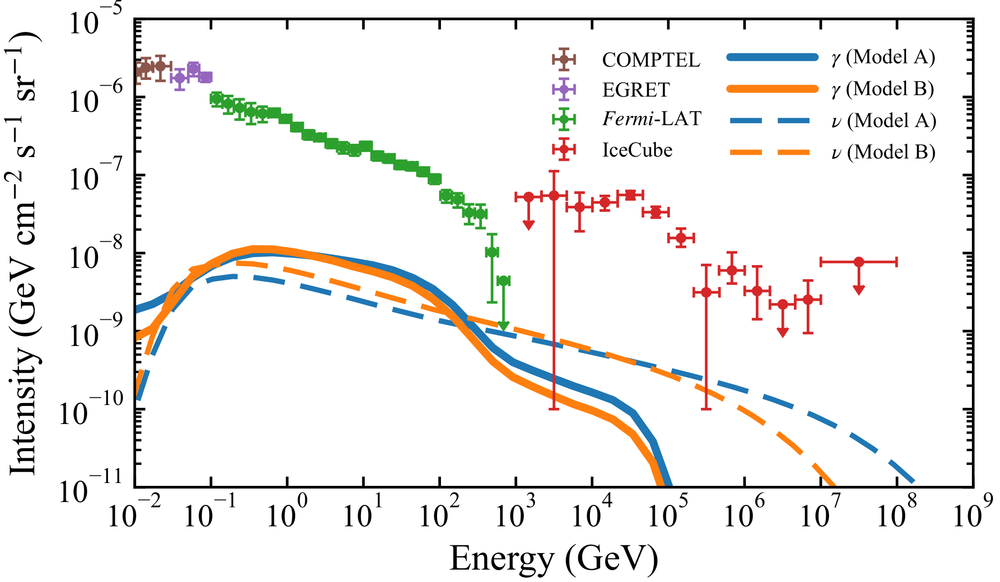
图注：Cosmic gamma-ray (solid) and neutrino (dashed) background intensities from AGN disk winds. For neutrinos, we show the total emission, summed over all flavors. Blue and orange curves correspond to our Model~A (leptonic dominated) and Model~B (hadronic dominated), respectively. For the model parameters, we adopt the median values listed in Table~\(\ref{tab:model_parameters},\) except for the wind age $t_\mathrm{w}$, where we invoke a uniform age distribution (see Equation~\ref{eq:CBR}). Brown, purple, green, and red points present the CGB spectrum measured by COMPTEL \(\citep{1996A&AS..120C.619K},\) EGRET \(\citep{1998ApJ...494..523S},\) \(\textit{Fermi}-LAT\) \(\citep{2015ApJ...799...86A},\) and the CNB spectrum measured by IceCube \(\citep{2025arXiv250722233A, 2025arXiv250722234A}.\)
对应解读：建议重点查看的图表 4、5；关键图表逐图导读 图4、图5；模型拟合段落中关于族群积分后CGB/CNB约束的核心结论。
入选理由：这是全文最直接支撑主要结论的图，同时给出AGN盘风对宇宙伽马射线背景和中微子背景的积分强度，并与COMPTEL、EGRET、Fermi-LAT和IceCube数据点比较。日报强调的“10 GeV以上CGB低于约5%”和“100 TeV附近CNB低于约10%”都需要从这张背景强度图读取，因此优先级最高。
来源与置信度：\(arxiv_source\)；high；\(arxiv_source\) / main.tex:figure[5]
Fig04
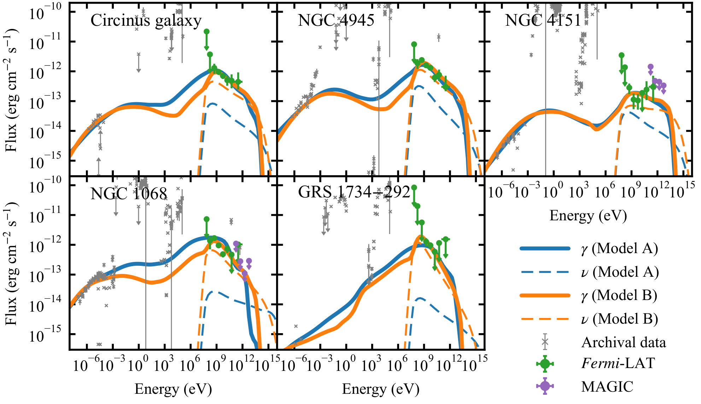
图注：Multiwavelength SEDs of photons and neutrinos ($\nu+\bar{\nu}$ per flavor) of the Circinus galaxy, NGC~4945, NGC~4151, NGC~1068, and GRS~1734-292 from top-left to bottom right. In all panels, solid and dashed blue (orange) lines show total gamma-ray and neutrino fluxes in Model~A (B). Gray, green, and purple data points are archival data from \citet{https://doi.org/10.26132/ned1}, the 4FGL-DR4 catalog of \(\textit{Fermi}-LAT\) \(\citep{2023arXiv230712546B},\) and MAGIC \(\citep\)[][for NGC~4151 and NGC~1068, respectively]{2025arXiv250716527A, 2019ApJ...883..135A}.
对应解读：建议重点查看的图表 1；关键图表逐图导读 图1；模型拟合段落中单源SED校准、Fermi-LAT数据点和上限约束。
入选理由：该图展示Circinus、NGC 4945、NGC 4151、NGC 1068和GRS 1734-292等附近Fermi-LAT塞弗特星系的多波段SED，并叠加Model A/B的伽马射线与中微子预测。它直接对应日报中“用射电到GeV数据校准单源模型、检查模型是否贴近Fermi观测约束”的解读，是理解后续背景上限不是任意调参结果的关键。
来源与置信度：\(arxiv_source\)；high；\(arxiv_source\) / main.tex:figure[4]
Fig02
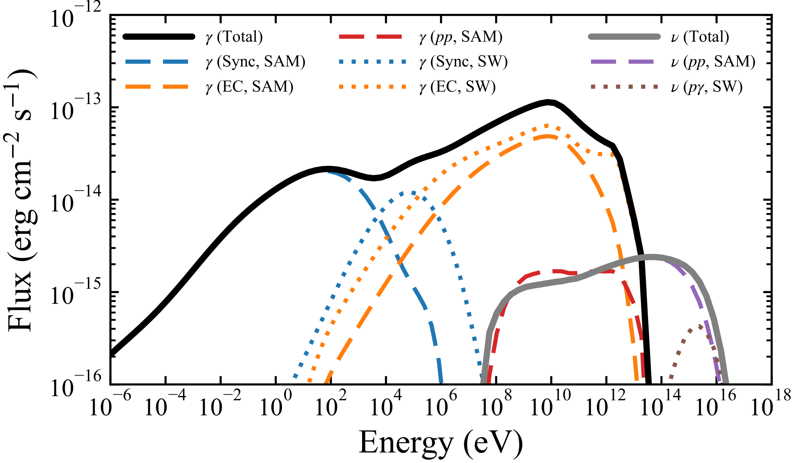
图注：SEDs of the multiwavelength photon and neutrino emission from CRs accelerated by an AGN disk wind. Calculations adopt a redshift of $z=0.02$ and the fiducial parameters in Table~\(\ref{tab:fiducial parameters}.\) Dashed and dotted lines show emission from the SAM and the SW, respectively. Blue, orange, and red lines represent photon emission from synchrotron, EC, and \(\textit{pp}\) interactions. Purple and brown lines show the sum of neutrino and antineutrino (per flavor) emission from \(\textit{pp}\) interactions and $p\gamma$ interactions, respectively.
对应解读：建议重点查看的图表 2；关键图表逐图导读 图2；详细解释中前向激波和反向激波分别产生同步、外康普顿、强子伽马射线和中微子的物理图像。
入选理由：该图按SAM和SW区域分解同步辐射、外康普顿、pp伽马射线以及pp/pγ中微子分量，正好用于避免把总SED误读为单一区域或单一辐射机制。它比单纯背景图更能解释为什么伽马射线和中微子预测相互联动。
来源与置信度：\(arxiv_source\)；high；\(arxiv_source\) / main.tex:figure[2]
Fig01
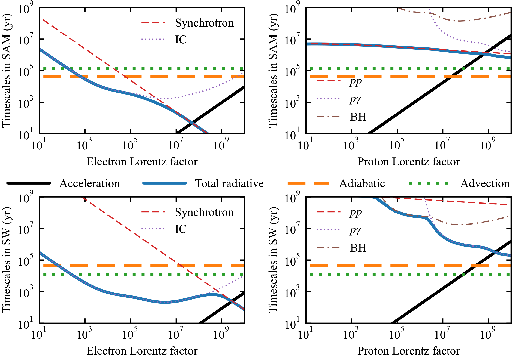
图注：Timescales for CR acceleration, advection, and energy losses in the SAM and SW regions, computed using the fiducial parameters listed in Table~\(\ref{tab:fiducial parameters}.\) The top-left, top-right, bottom-left, and bottom-right panels show the timescales for CR electrons in the SAM, CR protons in the SAM, CR electrons in the SW, and CR protons in the SW, respectively. The black solid, blue solid, orange dashed, and green dotted lines represent the timescales for acceleration, total radiative losses, adiabatic losses, and advection, respectively. For electrons (left panels), the total radiative loss consists of synchrotron (red dashed) and inverse Compton (purple dotted) cooling. For protons (right panels), the total radiative loss includes \(\textit{pp}\) interactions (red dashed), $p\gamma$ interactions (purple dotted), and BH pair production (brown dash-dotted).
对应解读：建议重点查看的图表 3；关键图表逐图导读 图3；模型拟合段落中关于最大粒子能量、冷却、pp损失和逃逸效率的诊断。
入选理由：该图展示电子和质子在SAM与SW区域中的加速、辐射损失、绝热损失和对流逃逸时间尺度，是判断质子能否达到产生TeV-PeV中微子所需能量、以及电子冷却是否能解释射电/GeV谱形的基础诊断图。它能支撑日报中“最大能量不等于足够中微子产额”的提醒。
来源与置信度：\(arxiv_source\)；high；\(arxiv_source\) / main.tex:figure[1]
Fig03
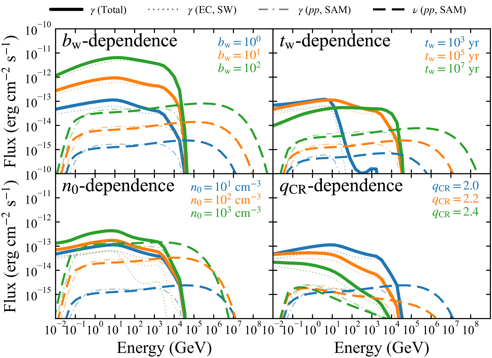
图注：Parameter dependence of the SEDs. In all panels, thick solid lines, thin dotted lines, thin dashed-dotted lines, and thick dashed lines represent total gamma rays, gamma rays from the SW via EC scattering, those from the SAM via \(\textit{pp}\) interactions, and the sum of neutrinos and antineutrinos per flavor from the SAM via \(\textit{pp}\) interactions, respectively. \(\textit{Top-Left}\): Dependence on the boost factor $b_\mathrm{w}$. Blue, orange, and green lines correspond to $b_\mathrm{w}=1$, 10, and 100, respectively. \(\textit{Top-Right}\): Dependence on the wind age $t_\mathrm{w}$. Blue, orange, and green lines correspond to $t_\mathrm{w}=10^3$~yr, $10^5$~yr, and $10^7$~yr. \(\textit{Bottom-Left}\): Dependence on the gas density $n_0$. Blue, orange, and green lines correspond to $n_0=10\ \mathrm{cm}^{-3}$, $10^2\ \mathrm{cm}^{-3}$, and $10^3\ \mathrm{cm}^{-3}$. \(\textit{Bottom-Right}\): Dependence on the CR index $q_\mathrm{CR}$. Blue, orange, and green lines correspond to $q_\mathrm{CR}=2.0$, $2.2$, and $2.4$. In each panel, the other parameters are fixed to the fiducial values (i.e., $b_\mathrm{w}=1$, $t_\mathrm{w}=10^5$~yr, $n_0=10~\mathrm{cm}^{-3}$, and $q_\mathrm{CR}=2.0$).
对应解读：建议重点查看的图表 6；关键图表逐图导读 图6；模型拟合段落中关于风功率、风龄、环境密度、宇宙线谱指数等参数退化的讨论。
入选理由：该图系统展示SED对风增强因子、风龄、气体密度和宇宙线谱指数的依赖，并区分总伽马射线、EC分量、pp分量和中微子分量。它最适合说明本文结论是否由默认参数驱动，以及强子效率、环境密度和谱形变化如何同时影响GeV约束与中微子输出。
来源与置信度：\(arxiv_source\)；high；\(arxiv_source\) / main.tex:figure[3]
Fig10
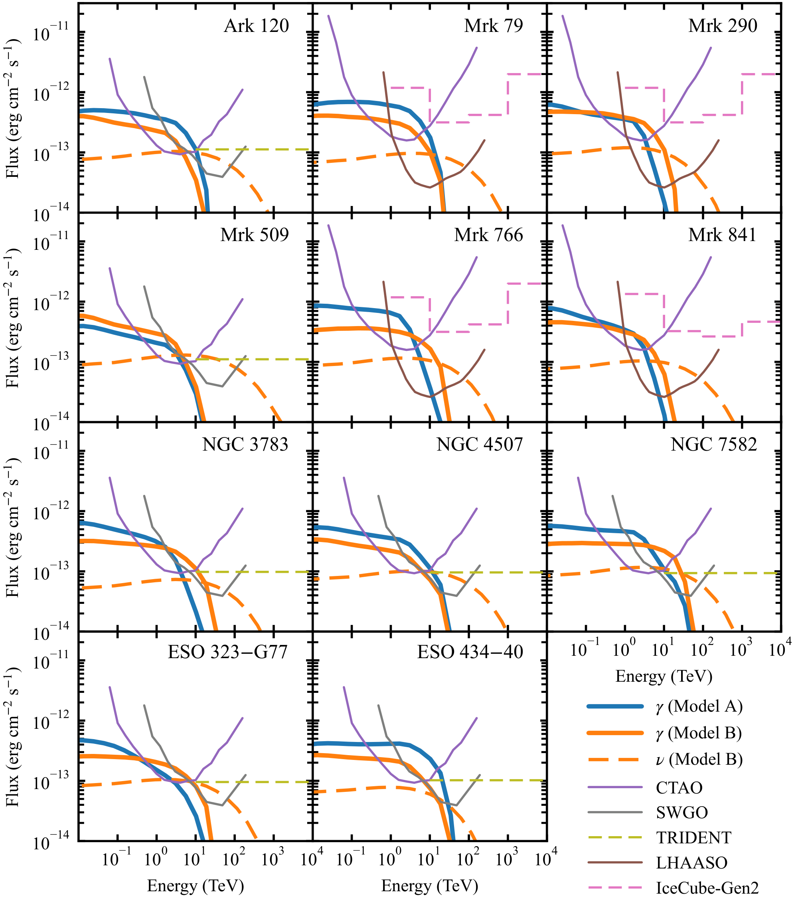
图注：Same as Figure~\(\ref{fig:TeVSEDs FermiSy}\) but for UFO-hosting Seyfert galaxies. The adopted model parameters are summarized in Table~\(\ref{tab:UFO_combined}.\)
对应解读：建议重点查看的图表 7；关键图表逐图导读 图7；详细解释中关于附近UFO宿主作为未来TeV伽马射线和TeV-PeV中微子观测目标的段落。
入选理由：该图聚焦UFO-hosting Seyfert galaxies，并叠加未来TeV伽马射线和中微子实验灵敏度，直接对应日报中“候选源可探测性”和“未来CTA、LHAASO、KM3NeT、IceCube-Gen2检验盘风模型”的内容。相比普通Fermi塞弗特灵敏度图，它更贴近论文摘要和日报强调的UFO目标优先级。
来源与置信度：\(arxiv_source\)；high；\(arxiv_source\) / main.tex:figure[10]
强相关工作
这篇工作与AGN作为多信使源的几条路线直接相关。第一类是喷流AGN和耀变体解释IceCube中微子的研究，它们受到源计数和关联分析限制；第二类是非喷流AGN模型，包括日冕、隐藏核、盘风和星暴核复合区。本文属于盘风路线，但结论偏保守：在观测校准后，盘风不是CGB和CNB的主导来源。建议检索关键词包括“AGN disk wind neutrino background”、“ultrafast outflow cosmic rays”、“Seyfert gamma-ray neutrino”、“Fermi isotropic gamma-ray background”、“IceCube diffuse astrophysical neutrino flux”。
它也与AGN反馈和UFO观测文献相连。传统AGN反馈研究关心盘风如何把能量和动量注入宿主星系，本文则追问同一机械能是否还能产生非热粒子和多信使辐射。相反观点或张力主要来自较乐观的AGN风强子模型：若假设更高的风功率、更高环境密度或更强源内伽马吸收，盘风可被推到更高背景贡献。但本文指出，一旦同时满足近邻塞弗特射电/GeV观测和XRISM风参数约束，这些乐观参数空间会明显缩小。
同一事件 / 同类源线索：
- https://arxiv.org/abs/2606.17490
- https://arxiv.org/pdf/2606.17490
- https://arxiv.org/abs/1410.3696
- https://arxiv.org/abs/1311.5238
相似工作：
基础理论 / 方法工作：
相反观点 / 张力线索：
（未提供）
4. Discovery of a Supernova Following the Einstein Probe Transient EP250302a at z = 1.131
- 来源：arXiv / astro-ph.HE
- 链接：https://arxiv.org/abs/2606.17170v1
- 作者：Brendan O'Connor, Malte Busmann, James Freeburn, Lei Hu, Noel Klingler, Daniel Gruen, Igor Andreoni, Julius Gassert
- 评分：novelty 8/10，importance 8/10，relevance 9/10，final 9.35/10
- 推荐理由：Einstein Probe快速X射线暂现源EP250302a的多波段分析并发现高红移超新星成分，直接关联FXT、GRB样喷流和大质量恒星死亡，值得重点关注。
中文题目：在红移 \(z=1.131\) 的 Einstein Probe 快速 X 射线暂现源 EP250302a 之后发现超新星迹象
做了什么：这篇文章研究 Einstein Probe 发现的快速 X 射线暂现源 EP250302a。事件位于 \(z=1.131\)，有明亮的 X 射线瞬发辐射，但没有伽马射线触发；后续光学和 X 射线观测显示早期有快速、色变的耀发，随后进入类似长伽马暴余辉的幂律衰减。作者用早期光学数据约束喷流初始洛伦兹因子，得到 \(\Gamma_0>25\)，说明外流至少是相对论性喷流；更关键的是，Gemini North 深度晚期成像在爆后 \(20\)–\(30\) 天发现光学超额，和宽线 Ic 型超新星 SN 1998bw 模板相符，亮度缩放因子为 \(k_{\rm 98bw}>0.3\)。这使 EP250302a 成为又一个支持“相当一部分 Einstein Probe 快速 X 射线暂现源来自大质量恒星死亡、可能是偏轴或低伽马效率长暴/软 X 射线暴”的案例。
为什么重要：Einstein Probe 正在打开软 X 射线快速暂现源的新样本空间，其中很多事件没有传统伽马暴卫星触发。EP250302a 的重要性在于：它把一个高红移、伽马暗弱但 X 射线明亮的快速暂现源，与长暴式余辉和晚期超新星成分联系起来。若这种联系在样本中持续成立，说明以往由 \(\gamma\)-射线触发定义的长伽马暴族群是不完整的，软 X 射线巡天可以找到更宽视角、更低 \(\Gamma\)、更低伽马效率或更高红移的喷流坍缩事件。
理论 / 观测 / 仪器方法价值：对理论而言，本文给出一个检验喷流发射机制、反向激波/刷新激波和 GRB-SN 连接的案例；对观测而言，它展示了 EP 触发后多波段快速跟进与晚期深成像如何区分余辉、主星系和超新星；对方法而言，文章把早期色变耀发、余辉衰减、洛伦兹因子下限和 SN 1998bw 模板缩放放到同一证据链中，提供了分析 EP FXT 的实用框架。
为什么应该关注：如果你关心高能暂现源、长伽马暴、喷流坍缩或未来软 X 射线巡天，这篇文章值得看，因为它说明“没有伽马射线探测”不等于“不是相对论喷流事件”。EP250302a 同时有早期喷流证据和晚期超新星证据，是连接 EP 新发现暂现源与经典 GRB-SN 物理的一块拼图，也提醒后续项目必须把快速光学跟进和 \(20\)–\(30\) 天尺度的深成像纳入标准流程。
展开详细解读：文章讲解、背景、理论、重点章节、图表与相关工作
文章详细讲解
科学问题：EP250302a 是 Einstein Probe 发现的快速 X 射线暂现源，核心问题不是简单地给它贴上“X 射线暂现源”标签，而是判断它到底属于哪类物理爆发现象。它有高亮度的瞬发 X 射线辐射，却没有伽马射线探测；这会让人想到高红移长伽马暴、低亮度伽马暴、X 射线闪、偏轴喷流、潮汐瓦解事件，甚至某些恒星爆发或致密星并合余辉。作者要解决的是：这个事件是否由大质量恒星坍缩产生的相对论喷流驱动？如果是，是否能在晚期看到与长暴类似的 Ic-BL 超新星成分？
作者怎么做：文章将 EP 的 X 射线触发与后续多波段观测连接起来。红移 \(z=1.131\) 由宿主或暂现源相关光谱/测光信息确定，使得所有时间和光度都可以转换到静止系。早期光学和 X 射线数据用于描述余辉和快速耀发；耀发具有色变特征，因此不是一个简单的无色几何增亮。作者讨论两类解释：一是离散慢壳追上减速外激波形成刷新激波，二是反向激波在早期对光学波段有显著贡献。随后，作者利用早期峰值时间或减速时间尺度约束外流初始洛伦兹因子，得到 \(\Gamma_0>25\)。
关键结果：最具辨识力的结果来自晚期 Gemini North 深成像。标准余辉模型在 \(20\)–\(30\) 天后应继续按幂律衰减，但数据中出现光学超额。作者把这个超额与红移到 \(z=1.131\)、经带通和时间膨胀修正的 SN 1998bw 模板比较，发现只要亮度缩放因子 \(k_{\rm 98bw}>0.3\)，就可以解释该超额。这不是说 EP250302a 的超新星一定与 SN 1998bw 完全相同，而是说明其晚期光学行为与长 GRB 伴随的宽线 Ic 型超新星在量级和演化上相容。
局限和下一步：局限首先来自高红移和观测窗口。\(z=1.131\) 时观测光学对应更蓝的静止系波段，尘埃消光、宿主污染、\(K\)-校正和模板选择都会影响超新星亮度缩放。其次，早期色变耀发在刷新激波和反向激波之间可能存在退化，仅靠稀疏多波段光变曲线很难唯一判定。下一步需要更密集的分钟到小时级多色光学/近红外跟进、晚期宿主模板扣除、可能的光谱确认，以及把 EP FXT 样本整体放入与 Swift、Fermi、SVOM 和地面巡天的联合选择函数中，判断这类事件在真实宇宙中的发生率。
关键结果是怎么做出来的
本文最重要的证据链从样本选择开始：EP250302a 是由 Einstein Probe 在软 X 射线波段发现的快速暂现源，而不是由传统 \(\gamma\)-射线卫星触发的 GRB。这个选择本身很关键，因为它天然偏向软谱、低 \(\gamma\)-射线效率、偏轴或高红移事件。作者随后收集 X 射线、光学以及晚期 Gemini North 成像，并将观测时间统一到爆发后时间，将光度和模板比较放在 \(z=1.131\) 的距离尺度上。
早期数据的关键特征是“快速、色变的耀发”。如果只是普通前向激波余辉，光变通常可由一个或多个无色断裂的幂律描述，不同滤波片主要只差一个谱斜率。EP250302a 的早期光学行为更复杂，作者因此比较了刷新激波和反向激波两类物理图像。刷新激波需要较慢壳层在后期追上已减速的外激波，从而注入能量；反向激波则来自喷流壳层被外介质减速时向内传播的激波，常在早期光学波段产生短暂亮峰。两者都可以导致偏离标准余辉的早期结构，但色变程度、峰时、峰后衰减和 X 射线对应关系是主要诊断。
洛伦兹因子下限来自早期光学峰或减速时标的解释。若将峰时视为外流开始显著减速的时间，则在给定各向同性等效能量、外介质密度和辐射效率假设下，可以反推出 \(\Gamma_0\) 的下限。作者给出 \(\Gamma_0>25\)，这个数值低于许多经典高亮 GRB 的 \(\Gamma_0\sim 100\)–\(1000\)，但已经足以排除普通非相对论超新星冲击 breakout 的简单解释，并支持喷流参与。
晚期结果依赖余辉外推与实际成像之间的差异。作者先用早期到中期数据建立标准 GRB 余辉衰减基线，再检查爆后 \(20\)–\(30\) 天的 Gemini North 深成像是否仍落在该基线之上。发现光学超额后，他们将 SN 1998bw 模板红移到 \(z=1.131\)，考虑观测带通与静止系波段映射，并引入亮度缩放因子 \(k_{\rm 98bw}\)。结论是 \(k_{\rm 98bw}>0.3\) 的宽线 Ic 型超新星可解释该超额。
显著性和稳健性需要从几类残差中判断。第一，看无超新星模型对晚期点的残差是否系统偏正，而不是单个边缘点驱动。第二，看加入 SN 模板后是否同时改善多个晚期滤波片或历元，而非只改善一个观测点。第三，看宿主星系扣除、银河系和宿主消光、余辉衰减斜率、模板色演化对 \(k_{\rm 98bw}\) 的影响。第四，看早期耀发参数是否会改变余辉外推，进而改变晚期超额幅度。本文摘要给出的 \(k_{\rm 98bw}>0.3\) 应理解为在这些模型假设下对 SN 成分强度的约束，而不是独立光谱确认的超新星分类。
支撑结论的图表应包括：EP X 射线和光学多波段光变曲线、早期耀发的颜色或谱指数演化、余辉加 SN 模板拟合、晚期 Gemini 图像或差分图像、以及参数约束表。读者应特别检查早期数据覆盖是否足够密集、晚期超额是否受宿主污染影响、以及不同模板或消光假设是否仍支持“有 SN 成分”而非“余辉模型外推错误”。
展开背景、理论、公式、模型、章节和图表导读
背景知识
研究对象是 Einstein Probe 快速 X 射线暂现源。EP 的优势在于软 X 射线大视场监测，能够捕捉持续时间短、谱较软、传统 \(\gamma\)-射线触发器可能漏掉的爆发。这样的源类包括长 GRB 的软端、X 射线闪、低亮度 GRB、偏轴喷流事件、激波 breakout、磁星活动、潮汐瓦解早期阶段等。EP250302a 的特殊之处是它有亮的 X 射线瞬发辐射和后续 GRB 式余辉，却没有伽马射线探测。
历史上，长 GRB 与大质量恒星死亡的联系主要来自 GRB 980425/SN 1998bw、GRB 030329/SN 2003dh 等事件。宽线 Ic 型超新星说明外层氢和氦已基本剥离，并有高速喷出物；GRB 则说明至少部分能量进入准直相对论喷流。并非所有长 GRB 都能直接看到超新星，原因包括红移太高、尘埃消光、观测太浅、余辉太亮、宿主污染和观测波段不合适。
为什么现在值得重新看？因为样本选择正在改变。Swift 和 Fermi 时代的长 GRB 主要由 \(\gamma\)-射线触发定义，而 EP、SVOM、LSST/Rubin、ZTF、GOTO 等正在提供 X 射线和光学触发的暂现源样本。若一个事件在 \(\gamma\)-射线波段不显著，但在 X 射线和光学上表现得像长 GRB 并最终显示超新星成分，它会改变我们对 GRB 族群边界和喷流成功率的估计。
常见误区之一是把“没有 \(\gamma\)-射线探测”直接等同于“没有相对论喷流”。实际上，观测不到 \(\gamma\)-射线可能来自视角、谱峰落在低能端、探测器覆盖和触发阈值、宇宙学红移、内禀低辐射效率或光子-光子不透明度。另一个误区是把 SN 1998bw 模板拟合看成严格分类。模板拟合主要说明晚期光度和颜色与 GRB-SN 族相容，但若没有光谱特征，仍应称为超新星成分或候选超新星证据。
还有一个常见误区是过度解释早期光学耀发。早期峰可以来自反向激波、刷新激波、密度结构、微物理参数演化、中心引擎长期活动或观测带穿越特征频率。色变能排除一部分简单模型，但通常不能在数据稀疏时唯一确定机制。因此本文把反向激波和刷新激波都作为可行解释，是比较稳健的处理。
基础理论 / 方法脉络
基本物理图像从相对论外流开始。大质量恒星核心坍缩后，若中心引擎把能量注入低重子污染的准直喷流，喷流可以以初始洛伦兹因子 \(\Gamma_0\) 穿出恒星并与周围介质相互作用。内部耗散或喷流 photosphere 可产生瞬发高能辐射；外部激波则在从 X 射线到射电的宽波段产生余辉。EP250302a 的 X 射线触发加后续光学/X 射线衰减，正是按这套喷流-余辉框架解释。
标准前向激波模型中，电子在激波后被加速成幂律分布，磁场被放大，同步辐射产生多波段谱。观测光变通常近似为 \(F_\nu\propto t^{-\alpha}\nu^{-\beta}\)，其中 \(\alpha\) 和 \(\beta\) 由电子谱指数、外介质密度剖面和冷却状态决定。若不同波段的光变只是同一个谱段上的余辉，颜色应相对稳定；因此 EP250302a 的早期色变耀发提示额外成分或谱断穿越。
反向激波与刷新激波是解释早期异常的两种常用机制。反向激波发生在喷流壳层被外介质减速时，其光学辐射可以短暂很亮，之后迅速衰减；刷新激波则要求喷流中存在速度分层，后发慢壳在前方物质减速后追上并重新注能。二者的可观测差别主要体现在峰值时间、峰后衰减斜率、颜色演化、与 X 射线同步性以及能量注入后余辉归一化是否上升。
洛伦兹因子约束来自减速时间。当喷流扫过的外介质静质量足以显著影响其动力学时，余辉开始进入自相似减速阶段。若早期光学峰对应减速时刻，峰时越早通常意味着 \(\Gamma_0\) 越高；若峰时只给出上限或数据未覆盖真正峰值，则可得到 \(\Gamma_0\) 的下限。本文的 \(\Gamma_0>25\) 说明外流不是普通超新星抛射物，而是至少轻度到中度相对论的喷流。
晚期超新星识别依赖余辉、宿主和 SN 三成分分解。观测通量可写成余辉幂律、宿主常量项和经红移/消光/带通修正的超新星模板之和。SN 1998bw 是 GRB-SN 研究中最常用的模板之一，亮度缩放 \(k_{\rm 98bw}\) 表示相对峰值光度，时间拉伸因子则表示光变宽度。本文摘要强调 \(k_{\rm 98bw}>0.3\)，意味着即使超新星比 SN 1998bw 暗，也能在晚期数据中留下可检测超额。
公式与推导
第一步是把观测时间转换到源静止系。若红移为 \(z\)，观测者时间 \(t_{\rm obs}\) 与静止系时间 \(t_{\rm rest}\) 的关系为
这里 \(z=1.131\)，所以观测到的 \(20\)–\(30\) 天对应静止系约 \(9.4\)–\(14.1\) 天。这个转换对判断 SN 峰值时刻和余辉衰减阶段非常关键。
第二步是从观测流量到光度。若在频率 \(\nu_{\rm obs}\) 测得通量密度 \(F_{\nu_{\rm obs}}\)，对应静止系频率为 \(\nu_{\rm rest}=(1+z)\nu_{\rm obs}\)，单色光度近似为
其中 \(D_L\) 是光度距离。该式说明高红移事件的晚期超额必须经过距离和带通修正后，才能与 SN 1998bw 这样的低红移模板比较。
第三步是余辉的基本经验形式。在单一同步辐射谱段内，前向激波常写作
其中 \(F_0\) 为归一化，\(\alpha\) 是时间衰减指数，\(\beta\) 是谱指数。若早期不同滤波片不能由同一组 \(\alpha\) 和 \(\beta\) 描述，就提示色变耀发或额外辐射成分。
第四步是把晚期观测分解为余辉、宿主和超新星：
这里 \(F_\nu^{\rm host}\) 是宿主星系通量，\(F_\nu^{\rm 98bw}\) 是经过红移、消光 \(A_\nu\) 和带通修正的 SN 1998bw 模板，\(k_{\rm 98bw}\) 是亮度缩放，\(s\) 是时间拉伸因子。本文的关键约束是 \(k_{\rm 98bw}>0.3\)。
第五步是相对论外流减速半径。对均匀外介质，若各向同性等效动能为 \(E_{\rm K,iso}\)，数密度为 \(n\)，质子质量为 \(m_p\)，初始洛伦兹因子为 \(\Gamma_0\)，减速半径量级为
这个表达来自被扫外介质能量约为初始能量的 \(1/\Gamma_0\) 阶条件，适用于球对称等效或喷流开角尚未显著影响的早期阶段。
第六步是减速时间与 \(\Gamma_0\) 的关系：
将上一式代入后可得
由于指数为 \(1/8\)，\(\Gamma_0\) 对 \(E_{\rm K,iso}\) 和 \(n\) 的不确定性不太敏感，但对峰时识别仍很敏感。本文由早期光学数据得到 \(\Gamma_0>25\)。
第七步是检验晚期超额的统计量。若第 \(i\) 个测光点为 \(F_i\)，误差为 \(\sigma_i\)，模型为 \(M_i(\theta)\)，常用高斯似然对应
这里 \(\theta\) 包括余辉参数、宿主通量、消光和 \(k_{\rm 98bw}\)。比较有无 SN 成分的模型时，关键是晚期点的残差是否显著减少。
第八步是用模型比较量化加入 SN 的必要性。若无 SN 模型的最小 \(\chi^2\) 为 \(\chi^2_0\)，加入 SN 后为 \(\chi^2_1\)，则
在近似嵌套且误差高斯时，\(\Delta\chi^2\) 可粗略转化为对新增参数的显著性；但若宿主扣除、模板选择或系统误差占主导，则应结合后验区间和替代模板稳健性，而不能只看形式显著性。
模型拟合 / 应用方法
这类分析的核心拟合量包括余辉归一化 \(F_0\)、时间衰减指数 \(\alpha\)、谱指数 \(\beta\)、宿主通量 \(F_\nu^{\rm host}\)、消光 \(A_V\)、SN 模板亮度缩放 \(k_{\rm 98bw}\) 和可能的时间拉伸 \(s\)。早期耀发还可能需要峰时、峰值通量、上升/下降指数或额外谱指数。EP250302a 的结论依赖这些分量能否在同一套多波段数据中自洽：早期异常不能破坏中后期标准余辉外推，晚期超额不能完全由宿主或余辉断裂解释。
似然通常基于多滤波片测光点的高斯误差构建，也可能对非探测使用上限似然或截断项。若数据点较少，作者可能采用模板拟合和参数扫描而非高维自由模型。实际阅读时应注意：\(k_{\rm 98bw}>0.3\) 是在模板、消光和余辉基线假设下得到的约束；若允许更复杂的余辉断裂、额外能量注入或宿主颜色不确定性，后验区间可能变宽。
主要退化关系有三类。第一，余辉衰减斜率与 SN 亮度退化：若余辉衰减比假设更慢，晚期超额会变小；若余辉更快，SN 成分会更强。第二，宿主通量与 SN 晚期尾部退化：缺少足够晚的宿主模板时，恒定宿主项可能吞掉一部分 SN 光。第三，消光与模板亮度退化：更大的宿主消光要求更高的内禀 SN 亮度，但不同波段颜色可部分打破这一退化。
残差诊断比单一最佳拟合值更重要。读者应检查无 SN 模型在 \(20\)–\(30\) 天附近是否出现同号残差；加入 SN 模板后，残差是否在多个滤波片同时减小；早期色变耀发是否被排除在余辉主拟合之外，避免污染 \(\alpha\)；以及是否有晚期非探测点限制过亮的 SN 模板。若只有一个晚期点支持超额，结论应保守；若多个历元和颜色都支持，则 SN 解释更强。
模型可能失败的地方包括：真实超新星与 SN 1998bw 的谱能分布差异较大；高红移下观测光学采样的是静止系紫外，更容易受金属线 blanketing 和消光影响；反向激波或刷新激波后的余辉并非单纯幂律；主星系有局部星形成区或未解析结构导致差分测光偏差。因此本文的物理结论应读作“EP250302a 与 GRB-SN 连接相容，并有晚期 SN 证据”，而非“已经完成与低红移 GRB-SN 同等强度的光谱分类”。
重点章节 / 结果段落怎么读
数据和样本部分应先读。重点看 EP250302a 的触发时间、X 射线定位、伽马射线非探测说明、后续观测设施、滤波片覆盖、红移 \(z=1.131\) 的来源，以及各数据点是否经过银河系消光、宿主扣除或绝对标定修正。这部分决定后面所有物理解释的可靠性。
早期多波段光变部分是理解喷流性质的关键。读者应关注早期光学耀发的时间尺度、颜色演化、与 X 射线的同步或不同步关系，以及作者为什么认为它偏离标准前向激波。若论文给出刷新激波和反向激波两种解释，应比较它们对峰后衰减、谱指数和能量注入的不同要求。
洛伦兹因子约束部分要看假设。\(\Gamma_0>25\) 很有物理意义，但它通常依赖外介质密度、各向同性等效能量、辐射效率以及峰时是否等同于减速时刻。读者应检查作者是否给出均匀介质和风介质两种情形，或者至少讨论密度假设对下限的影响。
晚期 Gemini 成像和 SN 模板拟合部分是本文最重要结果。应重点看 \(20\)–\(30\) 天的观测深度、图像相减质量、宿主星系处理、余辉外推、SN 1998bw 模板如何红移和缩放，以及 \(k_{\rm 98bw}>0.3\) 的置信区间或下限定义。这里是“发现超新星”的证据所在。
讨论和结论部分应放在 EP FXT 样本背景下读。作者把 EP250302a 与其他 EP 快速 X 射线暂现源、传统长 GRB、X 射线闪和低亮度 GRB 比较，目的是说明 EP 可能正在发现大质量恒星死亡事件的一个以前不完整的子样本。读者应注意他们是否区分了发生率、探测率和样本选择函数。
建议重点查看的图表
-
EP X 射线光变和谱信息：看瞬发 X 射线持续时间、峰值通量、谱软硬程度，以及为何没有对应 \(\gamma\)-射线触发。
-
多波段光学/X 射线光变曲线：看早期色变耀发的位置、峰值时间、不同滤波片的相对演化，以及中后期是否回到标准幂律余辉。
-
颜色或谱指数随时间演化图：看早期耀发是否真的色变，还是由非同时观测、标定误差或滤波片覆盖造成的表观变化。
-
洛伦兹因子约束图或参数表：看 \(\Gamma_0>25\) 对外介质密度、能量和减速时间假设的依赖，尤其是否给出不同环境模型的范围。
-
Gemini 晚期成像或差分图像：看暂现源位置的晚期残余是否显著，宿主背景是否平滑，点扩散函数匹配是否可靠。
-
余辉加 SN 1998bw 模板拟合图：看无 SN 模型与有 SN 模型在 \(20\)–\(30\) 天的差别，\(k_{\rm 98bw}\) 的允许范围，以及晚期点是否由多个滤波片共同支持。
-
拟合残差或参数后验图：看 \(k_{\rm 98bw}\)、\(\alpha\)、宿主通量和消光之间的退化，确认 SN 证据不是某个单一系统误差驱动。
关键图表逐图导读
图 1：通常应是发现与定位图，可能包括 EP X 射线图像、误差圆和光学对应体位置。横纵轴若为空间坐标，应检查 X 射线误差圆与光学源是否一致，以及附近是否有可能混淆的宿主或前景源。读图陷阱是把定位一致性当成物理分类；它只能说明对应体可靠，不能单独证明 GRB-SN 起源。
图 2：多波段光变曲线应是本文的核心图之一。横轴通常是爆发后观测者时间或静止系时间，纵轴是通量密度或星等；不同颜色/符号表示不同滤波片和 X 射线。应看早期耀发是否在不同滤波片有不同振幅和峰时，以及晚期 Gemini 点是否高于单纯余辉外推。读图陷阱是星等轴反向，视觉上“向上/向下”容易误解。
图 3：早期耀发模型图若存在，通常会叠加前向激波、反向激波或刷新激波模型线。读者应检查模型线是否只是经验拟合，还是有物理参数约束；还要看 X 射线是否同步出现对应结构。若光学有峰而 X 射线没有，反向激波或谱段差异解释会更自然，但并非唯一。
图 4：晚期 SN 模板拟合图应显示余辉模型、宿主项、SN 1998bw 模板缩放以及总模型。横轴是时间，纵轴是通量或星等；模型线可能包括无 SN 和有 SN 两种。关键读法是比较 \(20\)–\(30\) 天数据相对无 SN 模型的残差，并看 \(k_{\rm 98bw}>0.3\) 是否由多点支撑。陷阱是模板在高红移下对应静止系紫外，不能直接按低红移光学直觉解读。
图 5：若有二维后验或 \(\chi^2\) 轮廓，应重点看 \(k_{\rm 98bw}\) 与余辉衰减指数、消光、宿主通量的相关性。闭合的置信区间说明参数被数据约束；若只有下限，则要看上限是否由非探测、先验或模板范围决定。读图陷阱是只引用最佳值而忽略长尾后验。
图 6：若论文包含 EP FXT 与其他事件的比较图，例如 X 射线光度-持续时间、光学峰值-红移、或 SN 亮度缩放分布，应看 EP250302a 位于经典长 GRB、低亮度 GRB、X 射线闪和其他 EP 事件之间的哪个区域。这类图用于说明族群联系，但受选择效应强烈影响，不能直接读成内禀发生率。
论文原图 / 可嵌入图片
Fig03
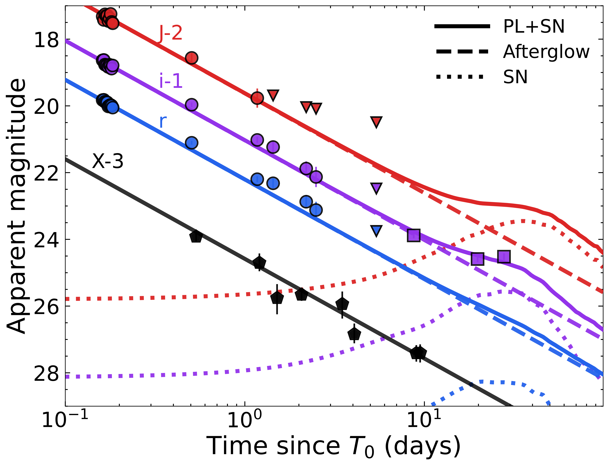
图注：Best-fit models to the multi-wavelength ($riJ$ + X-ray) lightcurve of EP250302a in the observer-frame. FTW data are shown as circles, Gemini data as squares, and X-ray data (This work and \citealt{Fu2026}) are shown as pentagons. Upper limits from FTW are shown as downward triangles. The total model (solid lines) consists of an afterglow component (dashed lines) and the addition of a supernova (dotted lines), modeled using SN 1998bw with a flux scaling factor $k_\textrm{98bw}$\,$=$\,$0.40$ (see \(\S\) \ref{sec:snmodel}).
对应解读：对应“多波段光学/X 射线光变曲线”和“余辉加 SN 1998bw 模板拟合图”，也是关键图表逐图导读中图 2/图 4 的核心内容。
入选理由：该图同时展示 riJ 与 X-ray 光变、余辉虚线、SN 1998bw 模板点线以及总模型实线，直接支撑早期色变/耀发后的余辉演化和晚期 20–30 天光学超额是否需要 SN 成分解释，是本文物理结论最关键的综合拟合图。
来源与置信度：\(arxiv_source\)；high；\(arxiv_source\) / main.tex:figure[3]
Fig04
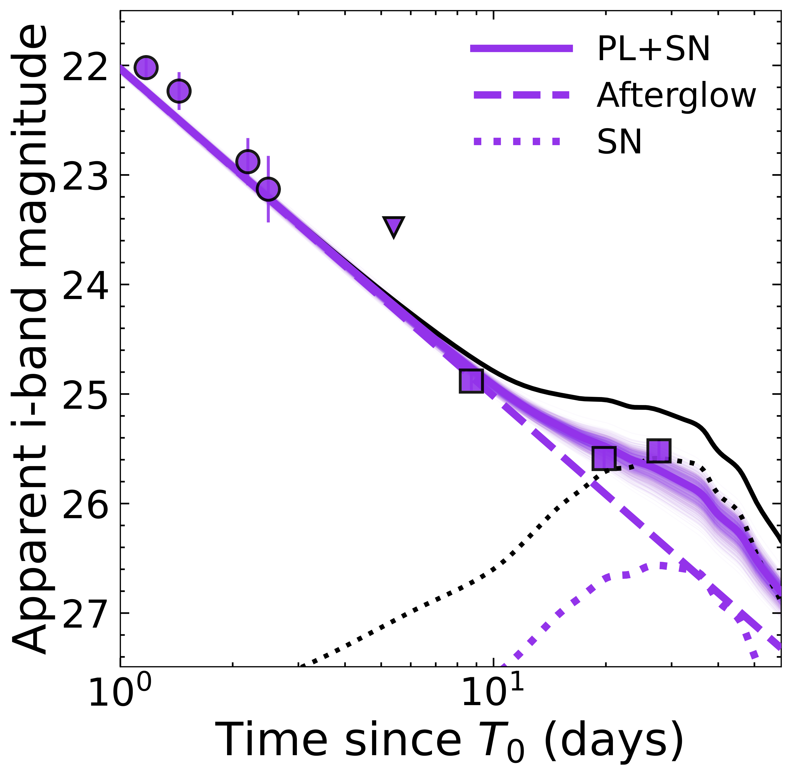
图注：Same as Figure \(\ref{fig:snmodel}\) but for only the $i$-band data and the PL+SN model (purple) which assumes there is no jet-break. The individual afterglow (dashed) and SN (dotted) components are shown along with 1000 PL+SN model iterations randomly sampled from the posterior. The SN component is produced using a SN 1998bw template \(\citep{Vincenzi2019}.\) The best-fit purple curves are shown for $k_\textrm{98bw}$\,$=$\,$0.40$. A representative case of $k_\textrm{98bw}$\,$=$\,$1.0$ is shown by the black curves.
对应解读：对应“余辉加 SN 1998bw 模板拟合图”和模型拟合段落中关于 \(k_98bw\)、无喷流折断 PL+SN 模型、后验抽样不确定性的讨论。
入选理由：该图聚焦 i 波段 Gemini 晚期点，分解显示 afterglow 与 SN 分量，并叠加 1000 条后验抽样模型曲线，还比较 \(k_98bw=0.40\) 与 \(k_98bw=1.0\)，最适合检查晚期超额和 SN 亮度缩放约束是否稳健。
来源与置信度：\(arxiv_source\)；high；\(arxiv_source\) / main.tex:figure[4]
Fig01
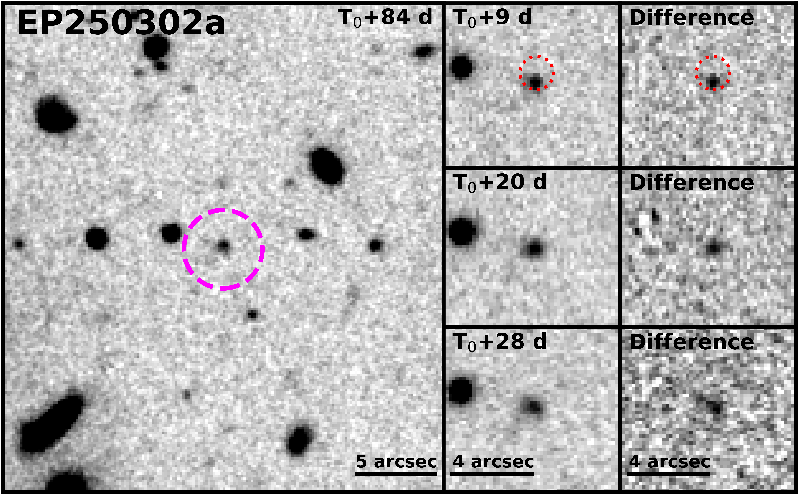
图注：\(\textbf{Left:}\) Finding chart of EP250302a using our deep Gemini GMOS-N $i$-band reference image ($i$\,$>$\,$26.3$ mag) obtained at $T_0$\,$+$\,$84$ d. The magenta circle shows the \(\textit{Swift}/XRT\) localization (\(\S\) \ref{sec:XRT}). \(\textbf{Right:}\) The six small panels display the the three initial Gemini epochs ($i$-band) at $T_0$\,$+$\,$9$ d, $20$ d, and $28$ d (observer frame) after the EP trigger. The difference images are shown on the far right panels and present a clear residual source. The red circle in the top panels shows the subarcsecond \(\textit{Chandra}\) X-ray localization (\(\S\) \ref{sec:chandra}). In all panels, North is up and East is to the left.
对应解读：对应“Gemini 晚期成像或差分图像”和关键图表逐图导读中图 1 关于定位、误差圆、晚期残余源和差分图像的检查。
入选理由：该图给出 Gemini 深参考图、Swift/XRT 与 Chandra 定位，以及 T0+9、20、28 天 i 波段原图和差分图中的清晰残余源，直接支撑晚期光学超额不是单纯模型外推产物，而有图像层面的暂现源检测依据。
来源与置信度：\(arxiv_source\)；high；\(arxiv_source\) / main.tex:figure[1]
Fig07
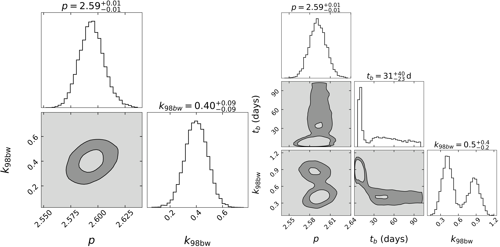
图注：Corner plots showing the results of our lightcurve modeling using the combination of an afterglow plus SN 1998bw. The left corner plot is for a single powerlaw afterglow component, while the right corner plot allows for a jet-break (see \(\S\) \(\ref{sec:afterglowfit}\) for details).
对应解读：对应“拟合残差或参数后验图”和模型拟合段落中关于 \(k_98bw\)、余辉参数、喷流折断模型之间退化关系的讨论。
入选理由：该图是 afterglow+SN 1998bw 光变建模的 corner plot，分别比较单幂律余辉与允许 jet-break 的情形，最能检查 SN 缩放因子、余辉参数和模型选择之间的相关性与约束形态。
来源与置信度：\(arxiv_source\)；high；\(arxiv_source\) / main.tex:figure[7]
Fig06
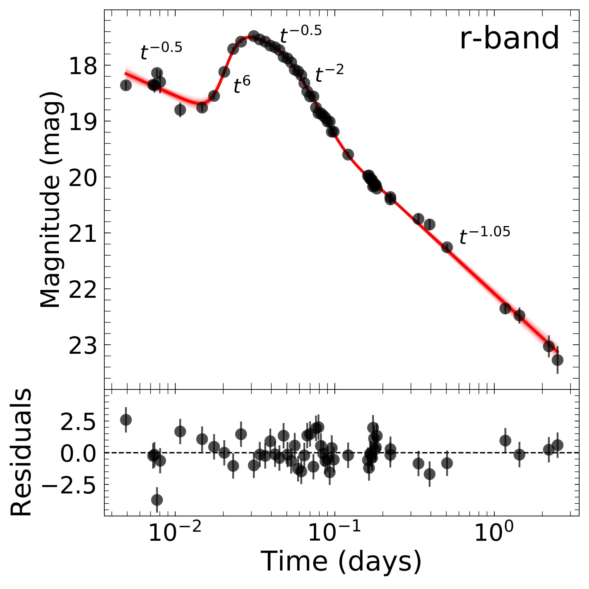
图注：Temporal fit to the observed $r$-band lightcurve of EP250302a. The best fit is shown as a thick solid red line, and 1000 lightcurves randomly sampled from the posteriors are also shown in red with lower opacity. The model residuals based on the best-fit are shown as the bottom panel. The text on the plot refers to the temporal decay in flux density $F_\nu$\,$\propto$\,$t^{-\alpha}$.
对应解读：对应“拟合残差或参数后验图”和早期耀发/余辉衰减模型拟合段落，尤其是 r 波段时间衰减指数与残差诊断。
入选理由：该图显示 r 波段时间光变最佳拟合、后验抽样曲线和底部残差，可用于判断早期再增亮/耀发是否偏离简单余辉衰减，以及拟合残差是否支持额外成分或模型复杂度。
来源与置信度：\(arxiv_source\)；high；\(arxiv_source\) / main.tex:figure[6]
Fig02
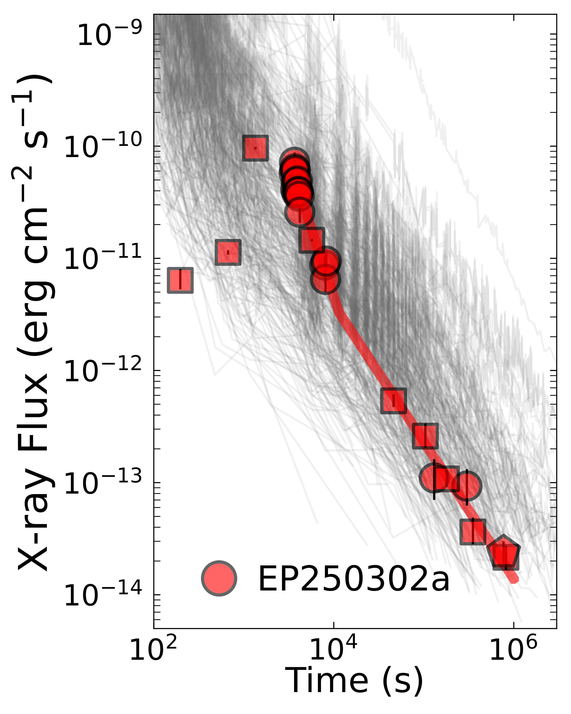
图注：Observed X-ray lightcurves ($0.3$\,$-$\,$10$ keV) of \(\textit{Swift}\) long duration ($>$\,$2$ s) GRBs versus EP250302a (red circles). The solid red line depicts the best-fit lightcurve to EP250302a. We have included data from \(\textit{Swift}\) (circles) and \(\textit{Chandra}\) (pentagon) analyzed in this work and EP/FXT (squares) data presented by \(\citet{Fu2026}.\)
对应解读：对应“EP X 射线光变和谱信息”以及关键图表逐图导读中关于 EP250302a 与 Swift 长 GRB X 射线光变比较的内容。
入选理由：该图把 EP250302a 的 0.3–10 keV X 射线光变与 Swift 长 GRB 样本比较，并包含 EP/FXT、Swift、Chandra 数据和最佳拟合线，有助于说明其 X 射线余辉行为与长 GRB 类事件的联系，但不直接展示谱信息或伽马射线未探测原因，因此优先级低于 SN 与多波段拟合图。
来源与置信度：\(arxiv_source\)；high；\(arxiv_source\) / main.tex:figure[2]
强相关工作
最直接的历史参照是 GRB 980425/SN 1998bw，它奠定了长 GRB 与宽线 Ic 型超新星联系的观测基础；另一个关键类比是 GRB 030329/SN 2003dh 等低红移长暴，它们有清楚的余辉到超新星过渡。EP250302a 的不同之处在于红移更高且没有 \(\gamma\)-射线探测，因此更接近 X 射线闪、软谱长暴或偏轴/低效率喷流事件。检索关键词可用“GRB-SN connection”、“SN 1998bw template”、“broad-lined Type Ic supernova gamma-ray burst”、“X-ray flash supernova”。
与本文同类的工作还包括 Einstein Probe 快速 X 射线暂现源的早期样本论文、Swift XRT 发现的无 \(\gamma\)-射线对应 X 射线暂现源、以及低亮度 GRB/SN 事件如 GRB 060218/SN 2006aj 和 GRB 100316D/SN 2010bh。相反或有张力的观点主要来自其他可能的 FXT 起源：潮汐瓦解事件、白矮星/中子星相关爆发、激波 breakout、磁星耀发或并合后余辉。检索关键词可用“Einstein Probe fast X-ray transient massive star death”、“gamma-ray dark GRB afterglow”、“low luminosity GRB supernova”、“shock breakout X-ray transient”、“orphan afterglow X-ray transient”。
同一事件 / 同类源线索：
相似工作：
- https://arxiv.org/abs/astro-ph/0603279
- https://arxiv.org/abs/1004.2919
- https://arxiv.org/abs/1611.07927
基础理论 / 方法工作：
- https://arxiv.org/abs/astro-ph/9806175
- https://arxiv.org/abs/astro-ph/9712005
- https://arxiv.org/abs/astro-ph/9901235
相反观点 / 张力线索：
5. GRB 250424A: A Case Study of Energy Injection with Multiwavelength Observations
- 来源：arXiv / astro-ph.HE
- 链接：https://arxiv.org/abs/2606.17444v1
- 作者：Yifang Liang, Yun Wang, WeiKang Zheng, Priyadarshini Gokuldass, Huali Li, Chenwei Wang, Riccardo Brivio, Donovan Schlekat
- 评分：novelty 7/10，importance 7/10，relevance 10/10，final 9.05/10
- 推荐理由：长GRB 250424A的多波段余辉建模，清楚给出能量注入解释和参数；属于核心GRB/高能瞬变主题，虽更像单源个案但值得读。
中文题目：GRB 250424A：多波段观测揭示持续能量注入的伽马暴余辉个例
做了什么：这篇论文对长暴 GRB 250424A 做了从瞬时伽马射线到晚期光学监测的多波段分析，并加入 Keck 10 米望远镜光谱。核心发现是：X 射线和光学余辉同时出现明显的浅衰减平台，随后以无色差方式转入正常衰减；宽波段谱能量分布可由单一幂律描述，支持同一个前向激波同步辐射起源。作者用连续能量注入的相对论前向激波模型解释光变，得到各向同性等效动能约为 \(E_{\rm K,iso}\approx 5.5\times10^{52}\,{\rm erg}\)，能量注入指数约为 \(q\approx0.34\)，注入持续到约 \(9\,{\rm ks}\)。虽然该暴红移较低，晚期光学数据没有看到清晰的伴随超新星成分，但上限还不足以排除一颗典型 GRB-SN。
为什么重要：GRB 余辉平台究竟来自中心引擎持续供能、结构化喷流、观测角效应，还是微物理参数演化，是长暴研究中的老问题。GRB 250424A 的价值在于平台在 X 射线和光学中同步出现，并且跃迁近似无色差，这比只在单一波段看到平台更直接地指向动力学能量注入，而不是单纯谱断穿越或局部辐射机制变化。
理论 / 观测 / 仪器方法价值：对理论而言，本文给出了一个相对干净的能量注入余辉个例，可用于检验 \(E\propto t^{1-q}\) 一类刷新激波模型。对观测而言，它展示了 prompt、X 射线、光学测光、光谱和晚期超新星限制如何拼成一条完整证据链。对方法而言，论文强调了同时拟合时间衰减指数、谱指数、环境密度类型和宽波段 SED 的必要性，而不是只用单波段平台形状判断中心引擎。
为什么应该关注：如果你关心 GRB 中心引擎寿命、磁星或黑洞吸积模型、余辉平台的物理分类，GRB 250424A 是一个值得放进样本库的案例。它不是极端亮暴，但正因为其多波段行为相对一致，能帮助区分真正的动力学能量注入和由观测选择效应造成的“平台”。此外，未探测到明显超新星但又不能排除典型 GRB-SN，也提醒我们低红移长暴与超新星关联的观测判据并不总是干净。
展开详细解读：文章讲解、背景、理论、重点章节、图表与相关工作
文章详细讲解
科学问题：长时标 GRB 余辉中常见的浅衰减平台是中心引擎继续向外流注入能量，还是外部介质、喷流结构、谱断移动或微物理参数变化造成的表观效应？GRB 250424A 的关键在于其 X 射线和光学光变曲线都出现了同时的浅衰减阶段，并在相近时间转入标准衰减。如果这种转折是无色差的，就很难用单一冷却频率穿过某一波段来解释，因为谱断穿越通常会先影响某一频段，并伴随谱斜率变化。
作者怎么做：论文整合了瞬时伽马射线资料、X 射线余辉、早期到晚期光学测光，以及 Keck 10 米望远镜获得的光谱。分析路线是先确定暴的基本性质和红移，再构建多波段光变曲线，测量平台前后的时间衰减指数；随后在若干时段建立宽波段 SED，检查 X 射线到光学是否可由同一个幂律谱连接。若 SED 不需要额外断裂或热成分，便可把多波段余辉归入同一同步辐射分量，从而用前向激波动力学模型解释。
关键结果：作者发现 X 射线和光学的浅衰减是同步的，转折后进入标准衰减，并且宽波段 SED 被单一幂律很好描述。这支持一个恒星形成区常见的常数密度外部介质，即 ISM-like 环境，而非必须要求风型密度剖面。采用连续能量注入的前向激波模型后，论文得到 \(E_{\rm K,iso}\approx5.5\times10^{52}\,{\rm erg}\)，注入指数 \(q\approx0.34\)，注入持续时间约 \(9\,{\rm ks}\)。这里较小的 \(q\) 表示中心引擎或慢壳层在相当长时间内以较缓慢下降的功率补充激波能量。
局限和下一步：该结果仍是个例研究，能量注入解释虽然自洽，但未必唯一。结构化喷流、视线角效应、密度跃迁和微物理参数演化在某些参数组合下也可能产生类似平台，因此需要看模型比较的统计优势和残差结构。晚期光学未见明显超新星峰，但上限不能排除典型 GRB 伴随超新星，说明宿主星系光、消光、采样深度和模板扣除仍是限制因素。下一步最有用的是把 GRB 250424A 放入具有严格选择函数的平台长暴样本中，比较 \(q\)、平台持续时间、红移、能量、宿主消光和超新星限制之间的关联。
关键结果是怎么做出来的
这篇文章的证据链首先来自样本定义：GRB 250424A 是一个长时标伽马暴，作者围绕同一事件收集了 prompt 伽马射线、X 射线余辉、光学多滤光片测光和 Keck 光谱，而不是只依赖公共 X 射线曲线。关键样本不是“大样本统计”，而是单一事件的高时间覆盖度和宽频段覆盖。这样的个例研究最怕的是不同仪器零点、滤光片转换、宿主贡献和消光校正不一致；因此读者应特别关注作者如何把光学数据统一到同一通量标度，并如何处理银河系与宿主系消光。
最重要的可观测事实是 X 射线和光学平台的同步性。作者应当通过分段幂律或平滑断裂幂律拟合各波段光变，得到平台阶段衰减指数、断裂时间和断裂后衰减指数。若 X 射线和光学断裂时间在误差内一致，且断裂前后没有显著颜色演化，就构成“无色差转折”的证据。显著性并不一定表现为一个单独的 \(5\sigma\) 数字，而更可能来自模型比较：单一幂律是否显著劣于断裂幂律，色差断裂模型是否不必要，加入能量注入后残差是否系统性减小。
SED 拟合是第二个关键环节。作者报告宽波段 SED 可由单一幂律描述，这意味着从光学到 X 射线没有强烈证据要求冷却断裂位于两者之间，也没有明显热成分或额外逆康普顿分量主导。读者应检查 SED 图中光学点是否经过消光修正，X 射线谱是否转换为同一时刻的通量密度，以及不同波段是否需要时间插值。单一幂律若成立，时间衰减指数和谱指数就可放入同步辐射 closure relations 中检验外部介质类型与能量注入指数。
能量注入模型的参数估计是第三个关键环节。论文给出 \(E_{\rm K,iso}\approx5.5\times10^{52}\,{\rm erg}\)、\(q\approx0.34\) 和注入持续到约 \(9\,{\rm ks}\)。这些值通常不是从某一个数据点直接读出，而是由光变振幅、断裂时间、谱指数、辐射效率假设、介质密度、电子能量分数 \(\epsilon_e\)、磁场能量分数 \(\epsilon_B\) 以及电子谱指数 \(p\) 共同约束。读者应检查表格中是否给出参数置信区间，以及 \(n\)、\(\epsilon_B\) 与 \(E_{\rm K,iso}\) 的退化是否被充分讨论。
晚期光学数据用于寻找伴随超新星成分。由于 GRB 250424A 红移相对较低，按长暴经验可能期待数天到数十天后出现类似 SN 1998bw 的宽峰。作者未看到清晰超新星，但强调上限不能严格排除典型 GRB-SN。这一结论依赖晚期观测深度、宿主星系扣除、滤光片对应的静止系波段以及与模板超新星的 \(k\)-校正比较。读者应检查晚期光变图中模型是否包括余辉外推、宿主常量和超新星模板三部分，以及上限相对于典型 GRB-SN 峰值究竟深多少。
系统误差和稳健性方面，最需要关注三点：第一，平台是否可能由早期光学采样不足或不同望远镜交叉定标造成；第二，SED 单幂律是否对宿主消光曲线选择敏感；第三，常数密度介质是否真的优于风型介质，还是两者在当前数据下都可接受。若论文提供了不同环境模型、不同消光律或不同固定微物理参数下的拟合比较，这些表格和残差图应被视为支撑主结论的核心材料。
展开背景、理论、公式、模型、章节和图表导读
背景知识
长时标 GRB 通常与大质量恒星坍缩有关，瞬时伽马射线来自相对论喷流内部的耗散过程，而随后的多波段余辉主要由喷流与周围介质相互作用产生的外部激波辐射。标准余辉模型预言，在给定外部介质密度剖面和电子能谱的情况下，光变曲线应按幂律衰减，谱也应呈分段幂律。因此，一旦观测到明显偏离标准衰减的浅平台，就说明动力学、几何或辐射条件中至少有一项不满足最简单模型。
Swift 时代以来，X 射线余辉平台非常常见。一个历史问题是：平台到底是不是中心引擎长寿命活动的直接证据？如果中心引擎在 prompt 结束后还继续释放能量，或者有较慢但能量可观的壳层追上前方减速激波，就会刷新外部激波，使余辉衰减变平。另一类解释包括结构化喷流的离轴观测、外部密度结构变化、微物理参数随时间演化，以及高纬度辐射或晚期内禀 X 射线活动混入。
GRB 250424A 值得重新讨论，是因为论文报告平台在 X 射线和光学中同时出现，并且宽波段 SED 由单一幂律描述。单波段平台很容易误判，例如 X 射线平台可能是内部中心引擎余辉，而光学仍由外部激波主导；或者光学平台可能受反向激波、尘埃破坏、宿主污染影响。但若两个波段同步变平又同步变陡，且谱不变，前向激波整体能量增加就成为更自然的解释。
该领域常见误区之一是把所有平台都称作“磁星平台”。磁星自旋下降当然能给出持续注入，但观测上得到的 \(q\)、平台时长和能量并不能自动唯一映射到磁星参数；黑洞吸积、慢壳层能量分布也可产生类似动力学。另一个误区是把“无色差断裂”等同于喷流断裂。喷流断裂通常会带来更陡的后期衰减，且有特定的几何解释；而本文中的无色差转折更像能量注入结束后回到标准前向激波衰减。
长暴与超新星关联也是背景的一部分。低红移长暴常常伴随宽线 Ic 型超新星，但并非每个事件都能清楚探测到。晚期超新星峰的可见性受红移、宿主消光、宿主亮度、观测深度、滤光片覆盖和余辉衰减速度控制。GRB 250424A 未见清楚超新星并不意味着“无超新星长暴”的强结论，尤其当上限还没有深到排除典型 GRB-SN 模板时。
基础理论 / 方法脉络
余辉的基本物理图像是：相对论喷流扫过外部介质，形成前向激波；被激波加速的电子在放大磁场中产生同步辐射。电子能量通常近似为幂律分布，辐射谱表现为由特征频率和冷却频率分隔的分段幂律。观测者看到的光变衰减，来自激波逐渐减速、磁场减弱、电子最小能量下降以及可见发射面积变化的组合。
在最简单的绝热 Blandford-McKee 外激波中，总能量近似守恒，因此洛伦兹因子随观测时间下降，余辉通量以固定幂律衰减。若外部介质是常数密度，常称 ISM-like 环境；若来自大质量恒星风，则密度近似 \(\rho\propto r^{-2}\)。两种环境给出不同的时间衰减指数与谱指数关系，也就是 closure relations。本文倾向常数密度环境，是因为观测到的时间和谱指数在该框架下与能量注入模型较一致。
能量注入的思想是在外激波已经开始减速后，中心引擎仍以 \(L_{\rm inj}\propto t^{-q}\) 的形式供能，或较慢壳层陆续追上前方激波。只要注入功率下降不太快，激波总能量就随时间增长，抵消一部分几何稀释和减速效应，使余辉衰减变浅。当注入在约 \(9\,{\rm ks}\) 结束后，系统回到标准绝热衰减，光变曲线出现无色差转折。
本文的关键量包括各波段衰减指数、谱指数、断裂时间、红移、消光修正后的通量密度、\(E_{\rm K,iso}\)、\(q\)、外部密度 \(n\)、电子谱指数 \(p\)、电子能量分数 \(\epsilon_e\) 和磁场能量分数 \(\epsilon_B\)。其中 \(E_{\rm K,iso}\)、\(n\) 和 \(\epsilon_B\) 常有强退化：较低 \(\epsilon_B\) 可要求更高能量来产生同样的 X 射线或光学通量。若没有射电数据或高质量多时段 SED，这类退化很难完全打破。
观测方法上，光变拟合和 SED 拟合必须相互校验。光变告诉我们时间行为是否同步、是否存在断裂；SED 告诉我们不同波段是否属于同一辐射段。如果光学和 X 射线之间存在冷却断裂，那么两者谱指数应差约 \(0.5\)，时间衰减也可能不同。本文单幂律 SED 是能量注入解释的重要支柱，但它对消光校正、X 射线吸收柱密度和非同时性插值敏感。
公式与推导
第一步，从外激波能量守恒出发。对各向同性等效外流，激波能量的量级可写为
其中 \(\Gamma\) 是激波洛伦兹因子，\(M_{\rm sw}\) 是扫掠外部介质质量，\(c\) 是光速。该式说明余辉动力学主要由激波能量、外部介质和减速程度控制；若 \(E_{\rm iso}\) 不再恒定，光变就会偏离标准衰减。
第二步，在常数密度介质中，扫掠质量近似为
其中 \(R\) 是激波半径，\(n\) 是数密度，\(m_p\) 是质子质量。观测时间与半径的关系近似为
其中 \(z\) 是红移。这两式给出标准余辉中 \(\Gamma\) 随 \(t_{\rm obs}\) 下降的标度基础。
第三步，引入连续能量注入。若注入光度为
其中 \(L_0\) 是参考时刻 \(t_0\) 的注入功率，\(q\) 是注入指数，则累计注入能量为
适用于 \(q\ne1\)。当 \(q<1\) 时，累计能量随时间显著增加；本文的 \(q\approx0.34\) 正对应较强的晚期刷新。
第四步，同步辐射电子分布通常写为
其中 \(\gamma_e\) 是电子洛伦兹因子，\(p\) 是电子谱指数，\(\gamma_m\) 是最小电子洛伦兹因子。若观测频率位于同一谱段，通量密度可写作
其中 \(\alpha\) 是时间衰减指数，\(\beta\) 是谱指数，\(t_b\) 是转折时间，\(\nu_0\) 是参考频率。本文的单幂律 SED 意味着光学到 X 射线可用同一个 \(\beta\) 描述。
第五步，能量注入会改变 closure relation。若在常数密度环境且观测频率处于 \(\nu_m<\nu<\nu_c\) 的慢冷却段，一个常用近似是
并且无能量注入时的衰减为
有能量增长时，实际 \(\alpha\) 会小于 \(\alpha_0\)，平台阶段由 \(q\) 调节。不同谱段和介质环境下具体系数不同，因此论文需要同时用 \(\alpha\) 与 \(\beta\) 判断环境和注入参数。
第六步，观测拟合通常用平滑断裂幂律描述平台结束：
其中 \(F_b\) 是转折附近归一化，\(\alpha_1\) 和 \(\alpha_2\) 分别是转折前后衰减指数，\(s\) 控制转折锐利程度。若 X 射线和光学给出的 \(t_b\) 一致，且 \(\alpha_1\)、\(\alpha_2\) 与同一 SED 的 \(\beta\) 相容，就支持无色差动力学转折。
第七步，参数估计可用高斯近似的 \(\chi^2\) 或等价似然：
其中 \(F_{\nu,i}^{\rm obs}\) 是观测通量密度，\(F_{\nu,i}^{\rm mod}\) 是模型通量密度，\(\sigma_i\) 是误差，\(\boldsymbol{\theta}\) 包含 \(E_{\rm K,iso}\)、\(q\)、\(n\)、\(p\)、\(\epsilon_e\)、\(\epsilon_B\) 和消光参数。比较有无能量注入模型时，可检查 \(\Delta\chi^2\)、信息准则或后验优势。
第八步，晚期超新星限制可表达为余辉、宿主和超新星模板的通量叠加：
其中 \(F_{\nu}^{\rm AG}\) 是余辉外推，\(F_{\nu}^{\rm host}\) 是宿主通量，\(F_{\nu}^{\rm SN98bw}\) 是模板超新星，\(k_{\rm SN}\) 是亮度因子，\(s_{\rm SN}\) 是时间伸缩因子。本文的“未探测但不排除典型超新星”可理解为数据只给出 \(k_{\rm SN}\) 的上限，而该上限仍允许 \(k_{\rm SN}\sim1\) 的模板。
模型拟合 / 应用方法
本文的拟合问题可以分为三层。第一层是经验光变拟合：对 X 射线和各光学滤光片使用单幂律、断裂幂律或平滑断裂幂律，检验平台是否真实存在。拟合量包括平台衰减指数、正常衰减指数、转折时间和归一化。读者应重点看单幂律残差是否在平台期和后期呈系统偏离；若只是少数早期点拉低斜率，平台解释就会弱得多。
第二层是 SED 拟合：把不同波段通量转换到共同参考时刻，校正银河系消光、宿主消光和 X 射线吸收，然后用单幂律或断裂幂律拟合。若单幂律足够好，说明光学和 X 射线可能处于同一同步辐射谱段；若断裂幂律显著更好，则需要考虑冷却频率 \(\nu_c\) 介于两者之间。宿主消光曲线的选择会影响光学谱斜率，因此 \(\beta\) 与 \(p\) 的推断不是完全独立的。
第三层是物理模型拟合：把前向激波动力学、能量注入和同步辐射谱结合起来，估计 \(E_{\rm K,iso}\)、\(q\)、\(n\)、\(p\)、\(\epsilon_e\)、\(\epsilon_B\) 等参数。论文给出的 \(E_{\rm K,iso}\approx5.5\times10^{52}\,{\rm erg}\) 和 \(q\approx0.34\) 应理解为在特定环境与微物理假设下的最佳值或代表值。由于 \(F_\nu\) 对 \(E_{\rm K,iso}\)、\(n\) 和 \(\epsilon_B\) 的依赖存在幂律退化，缺少射电峰值、自吸收频率或多时段冷却断裂测量时，参数区间可能相当宽。
模型比较上，应检查常数密度介质和风型介质是否都被尝试。长暴来自大质量恒星，直觉上常有人预期风型环境，但大量余辉拟合显示不少事件更接近常数密度，这可能与风终止激波、复杂星周环境或观测频段限制有关。若本文选择常数密度环境，关键不是“长暴一定在 ISM 中”，而是该事件的 \(\alpha\)-\(\beta\) closure relation 和多波段残差在常数密度模型下更自然。
超新星部分的拟合量通常包括余辉外推斜率、宿主星系常量、超新星模板亮度因子和时间伸缩因子。这里最主要的系统误差是余辉后期是否仍按同一幂律衰减、宿主是否已可靠扣除、以及观测滤光片对应的静止系波段是否能有效捕捉 Ic-BL 超新星峰。若晚期数据只有上限或采样稀疏，那么“不探测”只能转化为模板亮度上限，不能直接转化为物理缺席。
实际应用上，GRB 250424A 可作为平台余辉分类和能量注入模型校准的一个案例。将它与其他具有多波段无色差平台的 GRB 合并，可检验 \(q\) 的分布是否集中、平台结束时间是否与 prompt 能量或红移相关，以及平台样本是否支持磁星自旋下降的特定 \(q\) 形状。若未来加入射电观测或更深的晚期光学模板，最能改进的是环境密度、微物理参数和超新星限制。
重点章节 / 结果段落怎么读
-
观测与数据整理部分：读者应先看作者列出的 prompt、X 射线、光学和光谱数据来源。重点不是仪器清单，而是时间覆盖是否跨过平台开始、平台结束和晚期超新星窗口；还要看光学测光是否统一零点、是否扣除银河系消光、是否考虑宿主贡献。
-
光谱与红移部分：Keck 光谱决定事件距离和宿主/吸收线信息，是把观测通量转换为能量尺度的基础。应关注红移测量来自哪些谱线、信噪比如何，以及是否有宿主消光或吸收柱密度的约束。
-
多波段光变分析部分：这是主结论的核心。读者应比较单幂律、断裂幂律和平滑断裂幂律的拟合优劣，检查 X 射线和光学的断裂时间是否一致，平台前后的衰减指数是否在误差内支持无色差演化。
-
SED 与同步辐射解释部分：这里决定光学和 X 射线能否被视为同一物理分量。重点看单幂律是否真的足够，是否需要冷却断裂，消光校正是否合理，以及谱指数是否与后续动力学模型使用的电子谱指数一致。
-
能量注入模型与讨论部分：读者应看作者如何从观测 \(\alpha\) 和 \(\beta\) 推到 \(q\)、\(E_{\rm K,iso}\) 和环境类型。还应注意替代解释是否被认真排除，例如结构化喷流、密度变化、微物理参数演化或晚期内部 X 射线活动。
-
晚期超新星限制部分：这一节应按“余辉外推加宿主加超新星模板”的方式阅读。关键是上限相对于 SN 1998bw 类模板有多深，而不是简单看有没有晚期凸起。
建议重点查看的图表
-
多波段总光变曲线：看 X 射线和光学是否在同一时间段出现浅衰减，并在约 \(9\,{\rm ks}\) 附近同步转折；注意不同滤光片是否有垂直平移或颜色校正。
-
分段幂律拟合残差图：看单幂律残差是否系统性偏离，断裂幂律是否消除平台期和后期的趋势；残差若呈波动结构，可能提示耀发或额外成分。
-
宽波段 SED 图：看光学到 X 射线是否被单一幂律连接，是否存在冷却断裂、宿主消光导致的曲率或 X 射线吸收修正不确定性。
-
Closure relation 或 \(\alpha\)-\(\beta\) 诊断图：看观测点落在常数密度加能量注入模型的哪个区域，风型介质或无注入模型是否明显偏离。
-
物理模型拟合图：看能量注入前向激波模型是否同时复现所有波段的振幅和斜率，而不是只拟合 X 射线；注意模型线在转折前后的平滑程度。
-
参数置信区间或角图：若论文给出，应重点看 \(E_{\rm K,iso}\)、\(q\)、\(n\)、\(\epsilon_B\) 的退化方向，判断报告值是否稳健。
-
晚期光学与超新星模板比较图：看余辉外推、宿主通量和 SN 1998bw 类模板的位置；关键是上限是否低于典型模板峰值，而不是有没有肉眼可见凸起。
关键图表逐图导读
图 1：通常应是 prompt 与余辉观测概览或多波段光变。横轴多为触发后时间，常用对数坐标；纵轴为通量、通量密度或星等。读者要看早期伽马射线活动与后续 X 射线、光学采样之间是否有时间空档。读图陷阱是不同波段可能经过任意平移，不能直接把纵向距离理解为真实颜色。
图 2：多波段余辉光变及断裂幂律拟合应是本文最关键图之一。横轴为观测时间，纵轴为各波段亮度；模型线显示平台阶段和标准衰减阶段。主要结论是 X 射线与光学在平台和转折上同步。读者应检查断裂时间误差条是否重叠，以及转折后是否真的进入单一衰减，而非叠加耀发或再增亮。
图 3：SED 图应以频率为横轴、通量密度或 \(\nu F_\nu\) 为纵轴，展示光学和 X 射线点以及单幂律模型线。主要结论是同一同步辐射分量足以解释宽波段数据。读图陷阱是 SED 往往需要把非同时观测插值到同一时刻；若光变在该时刻附近变化快，插值误差会被低估。
图 4：若有 closure relation 或模型参数诊断图，横轴和纵轴可能是谱指数与时间衰减指数，或环境模型下预测的 \(\alpha\) 区间。数据点应落在能量注入、常数密度模型允许区域内。主要结论是无注入标准模型无法自然产生浅衰减。陷阱是 closure relation 依赖谱段判定，若 \(\nu_c\) 位置判断错误，模型分类会改变。
图 5：物理前向激波模型拟合图应展示能量注入模型对 X 射线和光学的同步拟合。横轴为时间，纵轴为通量；模型线在约 \(9\,{\rm ks}\) 后变陡。读者要看同一组参数是否解释所有波段，还是不同波段用了独立归一化。若需要大幅调整各滤光片归一化，说明消光或颜色演化可能未被充分处理。
图 6：晚期超新星限制图通常以时间为横轴、星等或通量为纵轴，叠加余辉外推、宿主和超新星模板。主要结论是没有明显超新星凸起，但典型 GRB-SN 未被严格排除。读图陷阱是星等坐标反向，且上限箭头容易被误读；应比较上限与模板峰值之间的差距，并确认是否已做红移和滤光片 \(k\)-校正。
论文原图 / 可嵌入图片
Fig04
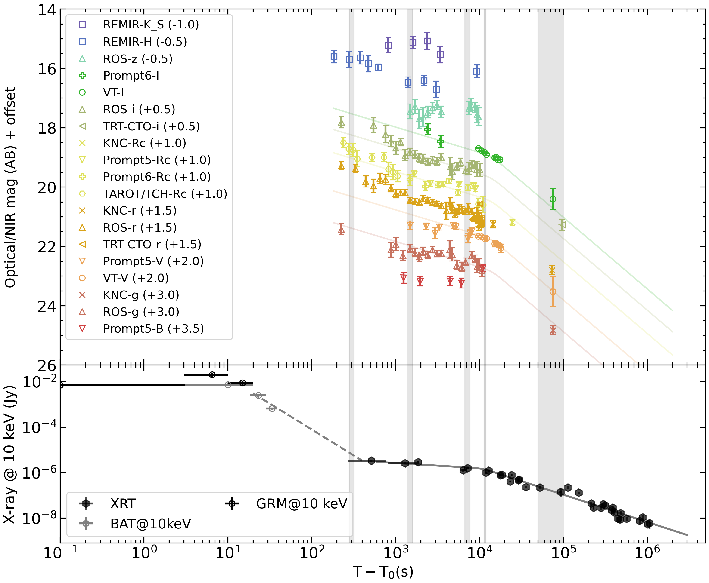
图注：Multiwavelength temporal evolution of GRB~250424A. The upper panel shows optical and NIR light curves obtained from various instruments (distinguished by different symbols) and the corresponding smoothly broken PL fits (colored lines). All magnitudes are reported in the AB system and have been vertically shifted by constant factors for clarity. The lower panel presents the X-ray light curve at 10\,keV, together with a smoothly broken PL fitting shown as solid gray line. The dashed gray line marks the rapid PL decay from the ``tail'' of the prompt phase captured by {\(\it\) SVOM}/GRM and {\(\it\) Swift}/BAT (open circle). The vertical shaded bands indicate the five epochs selected for the broadband spectral energy distribution (SED) analysis.
对应解读：“建议重点查看的图表”第1项多波段总光变曲线、第2项分段幂律拟合，以及“关键图表逐图导读”图2/模型拟合第一层经验光变拟合。
入选理由：这是判断本文核心结论的首要图：同时展示光学/NIR与10 keV X射线光变、平滑断裂幂律拟合、约9 ks附近的无色差转折，以及SED取样时段。它直接检验浅衰减平台是否在X射线和光学同步出现，比定位图、prompt分类图或宿主诊断图更能支撑能量注入解释。
来源与置信度：\(arxiv_source\)；high；\(arxiv_source\) / \(ms_1.tex\):figure[4]
Fig06
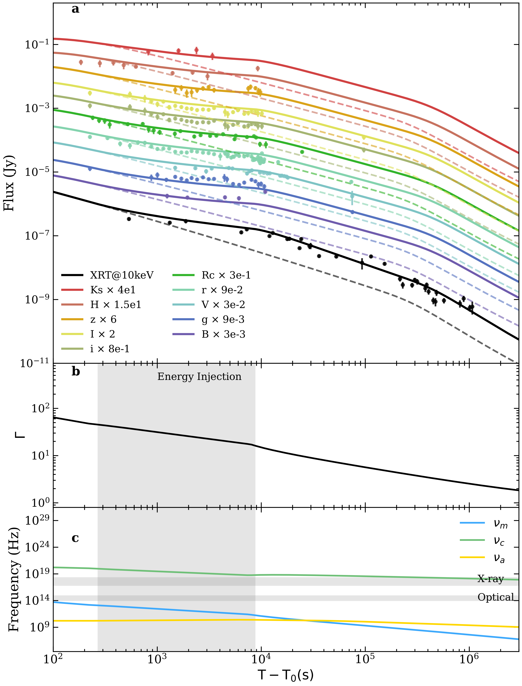
图注：Afterglow model fitting and dynamical evolution with energy injection. \(\textbf{(a)}\) Multiband afterglow light curves. Solid curves show the best-fit total model including energy injection, with different colors corresponding to different observing bands. Data points denote the observed fluxes. Dashed curves represent the model without energy injection for comparison. \(\textbf{(b)}\) Temporal evolution of the bulk Lorentz factor $\Gamma$ of the jet. \(\textbf{(c)}\) Temporal evolution of the characteristic synchrotron break frequencies, including the self-absorption frequency $\nu_a$, the injection frequency $\nu_m$, and the cooling frequency $\nu_c$. The horizontal shaded bands mark the observing frequency ranges of the optical bands ($B$--$Ks$) and the X-ray band (0.3--10\,keV). The vertical shaded regions in panels \(\textbf{b}\) and \(\textbf{c}\) indicate the time intervals during which energy injection is active.
对应解读：“建议重点查看的图表”第5项物理模型拟合图，以及“模型拟合”第三层前向激波能量注入模型。
入选理由：该图直接给出含能量注入的多波段前向激波拟合，并用无注入模型作对比，还展示洛伦兹因子和同步辐射特征频率随时间演化。它最能检验同一组物理参数是否同时复现各波段振幅、斜率和转折，是连接观测平台与q≈0.34、注入持续约9 ks等物理解释的关键图。
来源与置信度：\(arxiv_source\)；high；\(arxiv_source\) / \(ms_1.tex\):figure[6]
Fig05
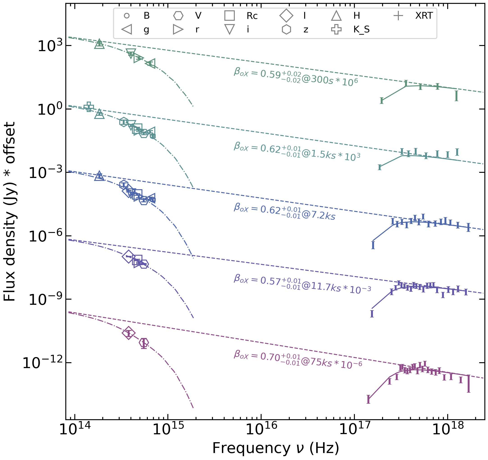
图注：Evolution of the broadband SEDs of GRB 250424A. The SEDs were constructed at five representative epochs combining optical/NIR photometry and X-ray spectral data. For visual clarity, the fluxes at different epochs have been scaled by arbitrary constant factors. Optical data points in different filters are shown with different symbols. Solid and dash-dotted lines represent the best-fit single PL models modified by Galactic and host-galaxy extinction/absorption, while dashed lines indicate the corresponding intrinsic PL spectra. The derived optical-to-X-ray spectral index $\beta_{\rm OX}$ for each epoch is labeled next to the corresponding spectrum.
对应解读：“建议重点查看的图表”第3项宽波段SED图，以及“关键图表逐图导读”图3/模型拟合第二层SED拟合。
入选理由：该图展示五个时期的光学/NIR到X射线SED、单幂律模型、消光/吸收修正和β_OX，是判断光学与X射线是否来自同一同步辐射谱段的核心证据。它直接支撑“单一幂律足以解释宽波段数据、无需明显冷却断裂”的结论。
来源与置信度：\(arxiv_source\)；high；\(arxiv_source\) / \(ms_1.tex\):figure[5]
Fig07

图注：Corner plot showing the posterior distributions of the model parameters inferred from the MCMC fitting to the multiband afterglow data using the forward-shock plus energy-injection model.
对应解读：“建议重点查看的图表”第6项参数置信区间或角图，以及“模型拟合”中关于E_K,iso、q、n、epsilon_B等参数退化的讨论。
入选理由：这是MCMC后验角图，能检查能量注入前向激波模型参数的不确定性与退化方向。相比只报告最佳拟合数值，它更适合评估E_K,iso≈5.5×10^52 erg、q≈0.34等参数是否稳健。
来源与置信度：\(arxiv_source\)；high；\(arxiv_source\) / \(ms_1.tex\):figure[7]
Fig08
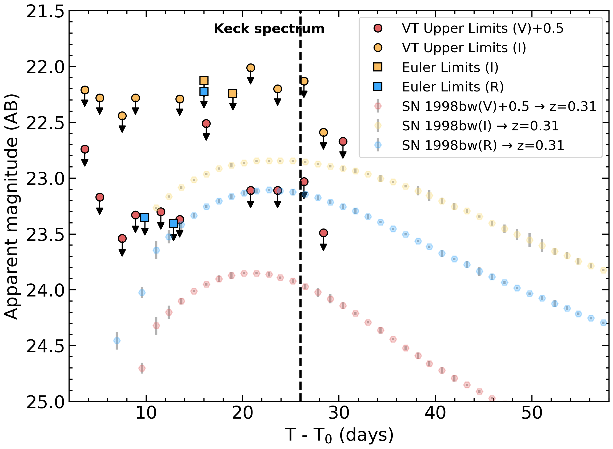
图注：Optical upper limits compared to the expected SN light curves. The plot displays the template light curves of the prototypical Type Ic-BL SN 1998bw, redshifted to $z=0.31$ and attenuated by the host-galaxy extinction derived in Section \(\ref{sec:discu_sed}.\) The SN light curves for the \(\textit{V},\) \(\textit{R},\) and \(\textit{I}\) bands are represented by red, blue, and yellow hexagons, respectively. Observational upper limits are shown in matching colors, with circles denoting {\(\it\) SVOM}/VT data and squares denoting Euler telescope data. The vertical dashed line marks the epoch of the first Keck-I spectroscopic observation ($+26$\,d observer frame).
对应解读：“建议重点查看的图表”第7项晚期光学与超新星模板比较图，以及“关键图表逐图导读”图6/超新星部分拟合。
入选理由：该图直接把晚期光学上限与红移到z=0.31并考虑宿主消光的SN 1998bw模板比较，是判断“未见明显超新星但不能严格排除典型GRB-SN”的主要图表。它特别适合检查上限箭头与模板峰值之间的关系。
来源与置信度：\(arxiv_source\)；high；\(arxiv_source\) / \(ms_1.tex\):figure[8]
Fig09
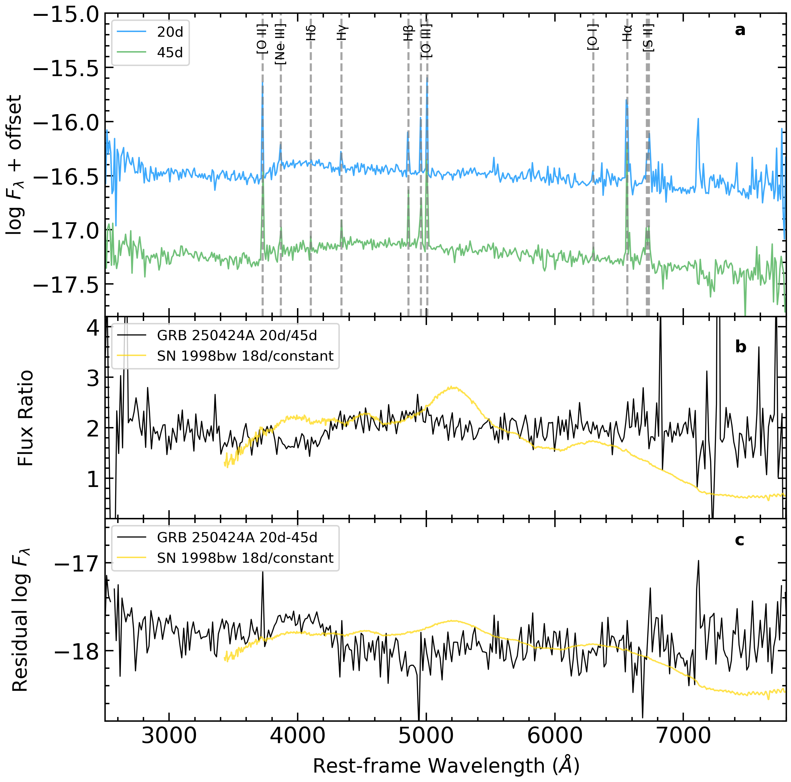
图注：Rest-frame optical spectra of GRB~250424A and a comparison with SN~1998bw. (\textbf{a}) The rebinned (10~\AA) logarithmic flux spectra at +20~d (blue) and +45~d (green) in the rest frame, with the +20~d spectrum vertically offset for clarity. Prominent host-galaxy emission lines are marked. (\textbf{b}) The ratio spectrum between the +45~d and +20~d observations, together with the scaled spectral shape of SN~1998bw at +18~d in the rest frame. (\textbf{c}) The residual spectrum obtained by subtracting the +45~d spectrum from the +20~d spectrum, compared with the scaled SN~1998bw spectrum. No obvious SN feature are seen in both panels (\textbf{b}) and (\textbf{c}).
对应解读：“详细解读”中Keck光谱与晚期无明显超新星特征的讨论，以及超新星限制部分的辅助证据。
入选理由：该图用两个时期的静止系光谱、比值谱和残差谱与SN 1998bw作比较，补充支持无明显SN谱特征的结论。虽然日报重点更偏向光变上限模板图Fig08，但Fig09能从光谱角度验证晚期超新星成分未被清楚探测到。
来源与置信度：\(arxiv_source\)；high；\(arxiv_source\) / \(ms_1.tex\):figure[9]
强相关工作
这篇工作属于“多波段余辉平台与能量注入”同类研究。应与 Swift 以来 X 射线平台统计、Zhang 与 Mészáros 关于持续能量注入的理论模型、以及 Sari、Piran 与 Narayan 的标准同步辐射余辉框架一起读。检索关键词可用 “GRB afterglow plateau energy injection achromatic break”, “refreshed shock GRB afterglow”, “closure relations ISM wind energy injection”。
同源事件方面，目前可靠公开链接可确认的是本文 arXiv 页面；GRB 250424A 作为命名瞬变，后续还应检索 GCN Circulars、Swift/BAT 或 Fermi/GBM 触发页面、以及可能的光学巡天通报。若要找历史类比，可比较 GRB 030329/SN 2003dh 这类低红移长暴伴随超新星原型，以及 GRB 130427A 这类有极好多波段覆盖的明亮长暴。不过 GRB 250424A 的重点不是极端高能，而是平台的无色差和能量注入解释。
也要注意相反观点：并非所有平台都能用外部激波能量注入解释，一些 X 射线平台可能来自内部中心引擎活动或结构化喷流几何效应。检索关键词可用 “GRB plateau internal origin”, “structured jet plateau afterglow”, “microphysical parameter evolution GRB afterglow”。在阅读本文时，应该把这些替代模型当作对照，而不是把 \(q\approx0.34\) 自动解释成唯一的中心引擎物理。
同一事件 / 同类源线索：
相似工作：
- https://ui.adsabs.harvard.edu/abs/2001ApJ...552L..35Z/abstract
- https://ui.adsabs.harvard.edu/abs/2006ApJ...642..354N/abstract
- https://ui.adsabs.harvard.edu/abs/2007ApJ...655..989Z/abstract
基础理论 / 方法工作：
- https://ui.adsabs.harvard.edu/abs/1998ApJ...497L..17S/abstract
- https://ui.adsabs.harvard.edu/abs/1999ApJ...519L..17S/abstract
- https://ui.adsabs.harvard.edu/abs/1997ApJ...476..232M/abstract
- https://ui.adsabs.harvard.edu/abs/2004ARA%26A..42..523P/abstract
相反观点 / 张力线索：
6. Optical polarization variability and its relation to gamma-ray activity in blazars
- 来源：arXiv / astro-ph.HE
- 链接：https://arxiv.org/abs/2606.17156v1
- 作者：Styliana Grigoriou, Anastasia Glykopoulou, Ioannis Liodakis
- 评分：novelty 7/10，importance 7/10，relevance 10/10，final 9.05/10
- 推荐理由：直接研究耀变体光学偏振变化与伽马射线活动关系，并给出大量新偏振角旋转识别；属于伽马射线AGN/喷流核心方向。
中文题目：耀变体光学偏振变率及其与伽马射线活动的关系
做了什么：这篇文章把三个既有耀变体光学偏振监测项目的公开数据合并，构造了 15 个耀变体的高采样偏振光变曲线，并与伽马射线活动进行对照。作者重点检查两件事：光学偏振度 \(p\) 是否随 \(\gamma\) 射线通量增强而增强，以及偏振角 \(\chi\) 的连续旋转是否对应某种特殊的喷流状态。主要结论是：单个源和不同子样本中，\(p\) 与 \(\gamma\) 射线通量都没有稳健相关；全样本共识别出 64 次偏振角旋转，其中 39 次为新识别事件；全样本层面旋转期间的 \(p\) 倾向更低，但单源层面并不普遍。这支持一个直观但重要的图像：耀变体高能辐射和偏振变率很可能不是由单一、统一的辐射区或几何机制控制。
为什么重要：光学偏振是少数能直接追踪相对论喷流磁场有序度、湍流程度和辐射区几何变化的观测量。若 \(\gamma\) 射线耀发与偏振度或偏振角旋转有稳定对应关系，就能把高能辐射区定位到喷流中的特定结构，例如激波、螺旋磁场、弯曲喷流或磁重联区。本文的否定性结果并不是“没有发现”，而是说明简单的一对一关联模型过于粗糙：同一类耀变体中可能混合了多个辐射通道、多个空间区域和不同时间尺度的随机过程。
理论 / 观测 / 仪器方法价值：对理论而言，本文给多区喷流模型、湍流单元模型、磁重联和几何摆动模型提供了更严格的统计约束：模型不能只解释少数漂亮的同步耀发个例，还要解释为什么大样本中 \(p\) 与 \(F_\gamma\) 缺少普适相关。对观测而言，本文展示了合并历史偏振监测数据、统一寻找 \(\chi\) 旋转、并按旋转期与非旋转期比较分布的实用框架。对方法而言，它提醒读者偏振角的 \(180^\circ\) 简并、采样空窗、旋转定义阈值和单源差异都会显著影响结论。
为什么应该关注：如果你关心耀变体喷流的粒子加速位置、\(\gamma\) 射线耀发触发机制或偏振监测的科学回报，这篇文章值得看。它告诉我们：更密集的偏振时间序列确实能发现大量被遗漏的偏振角旋转，但这些旋转并不自动等价于 \(\gamma\) 射线耀发的唯一指纹。未来的多信使、多波段和偏振巡天若想判定喷流物理，需要从“找对应事件”转向“比较概率分布、时间滞后和源内差异”。
展开详细解读：文章讲解、背景、理论、重点章节、图表与相关工作
文章详细讲解
科学问题：耀变体的相对论喷流几乎正对观测者，辐射受到强烈多普勒增亮，导致从射电到 \(\gamma\) 射线的强变率。长期以来，一个核心问题是：\(\gamma\) 射线活动到底与光学同步辐射偏振状态有多强联系？如果同一电子群在同一喷流区域同时产生光学同步辐射和高能逆康普顿辐射，那么光学偏振度 \(p\)、偏振角 \(\chi\) 的旋转、以及 \(\gamma\) 射线通量 \(F_\gamma\) 之间可能存在统计相关。反过来，如果这些关联很弱，就说明辐射区多重化、磁场结构随机化或几何效应占据重要地位。
作者怎么做：论文没有重新观测，而是整合三个过去的公开耀变体偏振监测项目，得到 15 个源的较密集光学偏振时间序列，并与公开 \(\gamma\) 射线光变曲线进行比较。这样的设计优点是时间基线长、事件数多，适合做偏振角旋转的系统搜索；缺点是不同项目的采样、滤光片、误差、观测节律和源选择函数并不完全一致，因此需要谨慎定义旋转事件和比较不同状态的偏振度分布。作者把偏振角旋转视为连续、同向、幅度足够大的 \(\chi\) 演化，并在全样本和单源层面分别统计。
关键结果：第一，作者没有发现单个源或子样本中 \(p\) 与 \(F_\gamma\) 的稳健相关。这意味着即便 \(\gamma\) 射线耀发期间粒子加速增强，磁场有序度也不一定同步增加，或者光学偏振区与 \(\gamma\) 射线区并不总是同一位置。第二，作者在合并数据中识别出 64 次 \(\chi\) 旋转，分布于 12 个源，其中 39 次是新识别事件，说明历史数据在统一分析后仍有大量可挖掘信息。第三，全样本层面复现了过去文献中的趋势：旋转期间的 \(p\) 往往低于非旋转期间；但逐源检查时，有些源的旋转期和非旋转期 \(p\) 分布不可区分，这削弱了单一机制解释。
局限和下一步：本文的主要限制来自异质数据合并和偏振角旋转定义。\(\chi\) 具有 \(180^\circ\) 模糊性，稀疏采样可能把随机游走误判为平滑旋转，也可能漏掉短时旋转。\(p\) 与 \(F_\gamma\) 的不相关还可能受到非同时性、时间滞后、不同能段积分方式和低信噪比时偏振度正偏差的影响。下一步需要把统一的贝叶斯时间序列模型、\(\gamma\) 射线滞后搜索、射电 VLBI 结构、光谱能量分布建模和偏振模拟结合起来，判断哪些源更接近多区湍流，哪些源可能存在稳定螺旋磁场或几何摆动。
关键结果是怎么做出来的
本文的证据链从样本构造开始。作者选择 15 个有足够光学偏振监测覆盖、且可与 \(\gamma\) 射线活动对照的耀变体，数据来自三个既有公开监测项目。样本不是无偏全天巡天样本，而是由历史监测项目中观测频繁、亮度较高、科学关注度高的源组成。因此结论最适合解释“被密集监测的亮耀变体”中的偏振行为，而不应直接外推到所有低亮度或低喷流功率活动星系核。
最直接的统计检验是比较光学偏振度 \(p\) 与 \(\gamma\) 射线通量 \(F_\gamma\) 的关系。作者在单个源、源类别或不同子样本中寻找相关性，但没有得到稳健正相关或负相关。专业读者应重点看相关系数、散点图、置信区间和是否进行了源内归一化；因为跨源合并时，明亮源会主导动态范围，而源内相关才更能说明同一喷流状态变化。若论文给出 Spearman 或 Pearson 统计量，应关注其 \(p\)-value 是否经过多重试验意识上的校正，以及结果是否由少数高通量点驱动。
偏振角旋转搜索是本文的事件统计核心。合并数据中共识别出 64 次旋转，涉及 12 个源，其中 39 次为新识别旋转。这里的“事件数”本身很重要：它把过去偏振旋转研究从少数著名个例推进到一个中等规模事件集。读者需要检查旋转定义，包括最小总旋转幅度、连续点数要求、相邻观测点最大时间间隔、单步角度变化显著性、以及如何处理 \(\chi\) 的 \(n\pi\) 展开。不同阈值会改变事件数，也会改变旋转期 \(p\) 分布。
最有物理含义的结果是旋转期与非旋转期的偏振度比较。全样本中，旋转期间 \(p\) 较低的趋势与早期工作一致，可能表示旋转不是由一个强有序磁场单元支配，而是多个湍流单元叠加时净偏振向量发生随机或半随机偏转。可是作者进一步做单源比较，发现某些源的旋转期和非旋转期 \(p\) 分布统计上不可区分。这一步避免了“全样本平均掩盖个体差异”的常见问题，也是本文支持多机制解释的关键。
显著性和稳健性方面，读者应重点看作者是否用非参数检验比较两个 \(p\) 分布，例如 Kolmogorov-Smirnov、Anderson-Darling 或置换检验；是否考虑偏振度测量的正定偏差；是否用随机游走模拟评估假旋转率；以及是否测试改变旋转判据后结论是否保持。本文摘要显示其结论不是依赖单一耀发个例，而是来自全样本趋势与单源反例并存：这使“多发射机制”解释比单一螺旋磁场或单一激波模型更自然。
展开背景、理论、公式、模型、章节和图表导读
背景知识
耀变体是喷流指向接近视线方向的活动星系核，通常分为平谱射电类星体和 BL Lac 天体。由于相对论多普勒因子 \(\delta\) 较大，喷流内较小的本征变化会被放大并压缩到较短观测时间尺度上。光学波段通常由相对论电子在磁场中产生的同步辐射主导，而 GeV \(\gamma\) 射线常被解释为同一或相邻电子群通过同步自康普顿或外康普顿过程产生。
偏振观测之所以关键，是因为总光变只告诉我们辐射功率变化，而线偏振还携带磁场投影方向和有序度信息。若喷流中的磁场非常有序，光学同步辐射可以有较高 \(p\)；若许多湍流小区的偏振向量相互抵消，净 \(p\) 会降低且 \(\chi\) 更容易随机游走。偏振角的大幅连续旋转曾被视为螺旋磁场、弯曲喷流或发射结穿过站立激波的证据，但也可能由随机过程产生。
历史上，若干著名耀变体在 \(\gamma\) 射线耀发附近出现过光学偏振角旋转，这推动了“旋转等于高能活动标志”的直觉。但后续的 RoboPol 等监测项目显示，旋转事件既可发生在耀发期间，也可发生在相对安静期；同时一些强 \(\gamma\) 射线耀发没有清楚的 \(\chi\) 旋转。因此，领域问题已经从“是否存在漂亮个例”转向“在统计样本中这种对应关系是否显著”。
现在值得重新看这个问题，是因为 Fermi-LAT 提供了长期、均匀的 GeV 监测，而多个光学偏振项目积累了十年以上的数据。把这些历史数据统一整理，可以显著增加旋转事件数，提高对源内差异的检验能力。与此同时，多区喷流模拟、湍流偏振随机游走模型和磁重联模型都已经能产生复杂偏振行为，观测上需要更细的统计判据来区分。
一个常见误区是把偏振角旋转自动理解为发射区沿螺旋磁场运动。事实上，\(\chi\) 是由 Stokes 参数 \(Q\) 和 \(U\) 的相位决定的，多个随机偏振分量叠加时也能形成看似平滑的旋转。另一个误区是把低 \(p\) 解读为“磁场弱”；更准确地说，低 \(p\) 通常表示投影磁场方向更混乱或多个分量抵消，并不必然表示磁场能量密度低。
基础理论 / 方法脉络
光学同步辐射的基本图像是：相对论电子在磁场中回旋，其加速度辐射在垂直于局部磁场投影的方向上呈线偏振。对幂律电子能谱，一个完全均匀磁场中的最大线偏振度可达几十个百分点；真实耀变体中观测到的 \(p\) 往往较低，说明观测光束内有多个磁场方向、多个辐射区或显著非偏振热成分稀释。
观测偏振通常用 Stokes 参数描述。线偏振度 \(p\) 和偏振角 \(\chi\) 并非直接测量的基本量，而是由 \(I\)、\(Q\)、\(U\) 推出。由于 \(p\geq 0\)，低信噪比时存在正偏差，需要做 debiasing 或在 \(Q\)-\(U\) 平面建模。\(\chi\) 还具有 \(180^\circ\) 简并，因此时间序列中的角度展开会影响旋转识别。
对 \(\gamma\) 射线活动的物理连接通常来自同一电子群的辐射过程。若光学同步辐射与 \(\gamma\) 射线逆康普顿辐射共空间，粒子注入或多普勒因子变化可能同时提高光学通量、\(F_\gamma\) 和偏振有序性。但如果 \(\gamma\) 射线来自不同高度、不同种子光子场或不同小区，\(p\) 与 \(F_\gamma\) 的相关会被洗掉。
本文使用的核心假设不是某个单一辐射模型，而是统计比较：如果 \(\gamma\) 射线活动与偏振状态有普适联系，那么在源内或子样本中应看到 \(p\) 与 \(F_\gamma\) 的相关，或在 \(\chi\) 旋转期看到系统性不同的 \(p\) 分布。作者发现全样本平均趋势和单源差异并存，因此更倾向于多机制解释。
主要退化关系包括：多普勒因子变化可同时改变各波段通量而不改变磁场有序度；多个偏振分量叠加可降低 \(p\) 并改变 \(\chi\)，但总通量可能变化不大；非同时光学与 \(\gamma\) 射线采样会稀释相关；宿主星系或吸积盘光会稀释光学偏振。系统误差方面，仪器零点、场星校准、滤光片差异和观测间隔都会影响旋转判定。
公式与推导
第一步从同步辐射偏振的理想上限出发。若相对论电子能谱为 \(N_e(E)\propto E^{-s}\)，在均匀磁场、光学薄同步辐射条件下，最大线偏振度近似为
这里 \(s\) 是电子能谱指数，\(\Pi_{\max}\) 给出单一区域、完全有序磁场的理论上限。实际观测的 \(p\ll \Pi_{\max}\) 通常反映磁场方向混乱、多个辐射区叠加或非偏振光稀释。
第二步把观测量写成 Stokes 参数。归一化 Stokes 参数为 \(q=Q/I\) 和 \(u=U/I\)，线偏振度和偏振角为
其中 \(I\) 是总强度，\(Q\) 与 \(U\) 描述两组相差 \(45^\circ\) 的线偏振分量。因 \(\chi\) 前有因子 \(1/2\)，偏振角天然具有 \(180^\circ\) 简并。
第三步考虑多个湍流小区叠加。若有 \(N\) 个亮度相近、偏振方向随机的小区，每个小区内在偏振度为 \(p_0\)，净偏振度的量级可写为
这个缩放说明，旋转期间若有更多相近亮度的小区参与，净 \(p\) 可能降低，同时 \(Q\)-\(U\) 向量更容易发生随机游走式转向。
第四步连接到多普勒增强。喷流辐射的观测通量可近似写成
其中 \(\alpha\) 是谱指数，\(F'_{\nu'}\) 是共动系通量，\(\Gamma\) 是 bulk Lorentz 因子，\(\beta c\) 是喷流速度，\(\theta\) 是视线夹角。几何变化可显著改变总通量，却不必然改变 \(p\)，这是 \(p\) 与 \(F_\gamma\) 不相关的一种自然来源。
第五步给出光学同步与高能逆康普顿的简化联系。若同一电子群控制两个能段，可把光学和 \(\gamma\) 射线通量写成
这里 \(n_e\) 是辐射电子密度，\(B\) 是磁场强度，\(U_{\mathrm{seed}}\) 是种子光子能量密度。若 \(n_e\) 或 \(\delta\) 主导变化，两个通量可相关；若 \(B\)、\(U_{\mathrm{seed}}\)、发射区位置或小区权重分别变化，相关会变弱。
第六步定义偏振角旋转的展开量。相邻观测的角差应按 \(n\pi\) 简并修正为
连续同号的 \(\Delta\chi_i\) 累积到足够大幅度时，可定义为一次旋转。这个公式强调旋转识别不是简单连接原始角度点，而依赖角度展开和采样间隔。
第七步描述相关性检验。源内可用秩相关统计量衡量 \(p\) 与 \(F_\gamma\) 的单调关系，例如
其中 \(d_i\) 是第 \(i\) 个观测点在两变量秩次上的差，\(n\) 是配对点数。若 \(r_s\) 接近零且显著性不足，就说明没有稳健单调相关。
第八步比较旋转期与非旋转期的偏振度分布。可用经验分布函数差异定义 Kolmogorov-Smirnov 统计量
其中 \(S_{\mathrm{rot}}(p)\) 和 \(S_{\mathrm{non}}(p)\) 分别是旋转期与非旋转期的 \(p\) 经验累积分布。若全样本 \(D_{\mathrm{KS}}\) 显著而若干单源不显著，就对应本文的核心现象：总体趋势存在，但并非每个源共享同一机制。
模型拟合 / 应用方法
这类工作的“拟合”不一定是单一物理模型的参数反演，而是时间序列统计、事件识别和分布比较。首先要从观测的 \(I\)、\(Q\)、\(U\) 或已发布的 \(p\)、\(\chi\) 及其误差构造清洗后的光变曲线。关键拟合量包括偏振度 \(p\)、偏振角 \(\chi\)、\(\gamma\) 射线通量 \(F_\gamma\)、旋转起止时间、旋转总幅度、持续时间和平均角速度。
在相关性分析中，最简单方法是对近同时的 \(p\) 与 \(F_\gamma\) 点计算 Pearson 或 Spearman 相关；更稳健的方法是考虑时间滞后，使用离散相关函数、插值交叉相关或基于高斯过程的非均匀采样建模。由于耀变体光变具有红噪声特性，显著性不应只用独立同分布点的解析公式，而应通过模拟具有相同功率谱和采样窗的光变曲线估计假阳性率。
偏振角旋转识别本质上是模型选择问题：一种模型认为 \(\chi\) 在一段时间内连续同向演化，另一种模型认为 \(Q\)-\(U\) 向量随机游走。实际应用中常用阈值判据，因为全贝叶斯分段模型成本较高。阈值包括最小连续点数、总旋转角、每步显著性、最大允许时间间隔等。残差诊断应检查被判为旋转的区间是否由一两个大误差点支撑，角度展开是否唯一，以及在 \(Q\)-\(U\) 平面是否真的呈连续轨迹。
旋转期与非旋转期 \(p\) 分布比较可用非参数检验，也可建立层级模型。例如把每个源的 \(p\) 分布看作来自不同均值和宽度的 beta 分布或截断正态分布，再估计旋转状态对分布位置的影响。这样能显式区分“全样本平均效应”和“源内效应”。本文发现全样本趋势与单源例外并存，正说明层级建模比简单合并所有点更合适。
主要系统误差包括测量误差、偏振度正偏差、采样间隔不均匀、不同项目仪器零点差异、光学与 \(\gamma\) 射线非严格同时，以及源选择偏差。参数退化方面，\(p\) 降低既可由更多湍流小区造成，也可由非偏振光稀释或两个有序分量相互抵消造成；\(F_\gamma\) 增强既可由粒子注入造成，也可由 \(\delta\) 或种子光子场变化造成。因此单靠 \(p\)-\(F_\gamma\) 散点图很难判定物理机制，必须联合光谱、VLBI 结构和时间滞后。
重点章节 / 结果段落怎么读
数据与样本部分应首先阅读。这里决定了本文结论的适用范围：15 个耀变体来自三个公开偏振监测项目，属于有良好时间覆盖的历史样本。读者应记录每个源的类型、红移、观测点数、时间基线、光学偏振误差和对应的 \(\gamma\) 射线数据处理方式，因为这些因素直接影响相关性和旋转识别。
偏振角旋转定义与搜索方法是方法部分的核心。建议重点看作者如何处理 \(180^\circ\) 简并、相邻点角度展开、最小旋转幅度、连续性标准和最大时间间隔。如果附录中有不同阈值下的旋转清单或稳健性检验，应优先阅读，因为 64 次旋转和 39 次新旋转的可靠性取决于这些细节。
\(p\) 与 \(F_\gamma\) 的相关性结果是第一组主结果。读者应区分全样本合并、按源类别合并和单源分析。跨源散点可能被源间亮度差异主导，而单源相关更接近物理因果。若文中列出相关系数表，应检查显著性最高的少数源是否经得起多重比较和异常点剔除。
旋转期与非旋转期偏振度分布比较是第二组主结果。全样本低 \(p\) 趋势复现了早期工作，但单源中存在不可区分分布，这一反差是本文最重要的解释依据。读者应特别看分布图、箱线图、累积分布函数和统计检验表，而不只看平均值。
讨论部分应围绕多机制解释来读。作者的结论并非否认螺旋磁场、激波或磁重联，而是认为没有一种机制能单独解释所有源和所有旋转。读者可以把讨论中的模型逐项映射到观测诊断：它们分别预言 \(p\)、\(\chi\)、光学通量、\(F_\gamma\) 和时间滞后如何变化。
建议重点查看的图表
-
样本光变曲线总览：检查每个源的光学偏振度 \(p\)、偏振角 \(\chi\) 和 \(\gamma\) 射线通量 \(F_\gamma\) 是否真正有足够重叠时间覆盖；特别注意采样空窗是否会影响旋转连续性。
-
\(p\) 对 \(F_\gamma\) 的散点图或相关性图：看单源点云是否有趋势，是否由少数高通量状态支配；若有回归线或置信带，应检查其斜率是否显著偏离零。
-
偏振角旋转事件示例图：看 \(\chi\) 的展开是否自然、相邻点误差是否小于角度变化、旋转是否跨越长观测间隔；同时看旋转期间 \(p\) 是否降低。
-
旋转事件清单表：检查 64 次旋转的源名、起止时间、持续时间、总幅度和是否新识别；注意事件是否集中于少数观测最密集的源。
-
旋转期与非旋转期 \(p\) 分布图：看全样本和单源的累积分布或直方图差异；重点比较中位数、低 \(p\) 尾部和高 \(p\) 尾部。
-
统计检验或稳健性表：检查 KS 检验、置换检验、相关系数显著性或阈值变化测试；如果改变旋转定义后结论明显变化，说明结果依赖方法选择。
-
源分类比较图：如果论文按 FSRQ、BL Lac 或其他子样本比较，应看类别内离散度是否大于类别间差异，避免过度解释分类趋势。
关键图表逐图导读
图 1：通常应是样本或代表源的多波段时间序列。横轴为时间，纵轴可能分成 \(F_\gamma\)、光学通量、偏振度 \(p\) 和偏振角 \(\chi\)。读图时不要只找 \(\gamma\) 射线耀发与 \(\chi\) 旋转是否肉眼同步，还要看误差棒、采样间隔和旋转区间标注。陷阱是把长时间无观测的两点直接连成平滑旋转。
图 2：可能展示 \(p\) 与 \(F_\gamma\) 的散点或源内相关性。横轴若为 \(F_\gamma\)，纵轴为 \(p\)，数据点应按源或状态区分。若没有明显单调趋势，说明高能活动并不自动伴随更有序的光学磁场。读图陷阱是跨源合并时亮源和暗源的固有差异会制造或掩盖相关。
图 3：偏振角旋转示例图最值得细读。横轴为时间，纵轴为展开后的 \(\chi\)，常用阴影标出旋转区间，并在下方面板给出 \(p\)。关键是检查每一步 \(\Delta\chi\) 是否超过误差、旋转方向是否连续、是否存在替代的 \(180^\circ\) 展开方式。若 \(p\) 在旋转中降低，可支持湍流多单元解释，但不能单独排除几何模型。
图 4：旋转事件统计图或表格应展示每个源的旋转次数、总幅度和持续时间。若事件集中在少数源，这说明源内物理或采样密度很重要；若 12 个源都有事件，则说明旋转是耀变体中常见但表现多样的现象。陷阱是把事件数直接等同于物理发生率，而忽略观测覆盖差异。
图 5：旋转期与非旋转期 \(p\) 分布图是支撑核心结论的关键。横轴为 \(p\)，纵轴可能为概率密度或累积分布，模型线或阶梯线分别对应旋转与非旋转状态。若全样本旋转期分布整体向低 \(p\) 偏移，说明总体趋势存在；若单源图中两条曲线重叠，则说明该趋势不是普适定律。
图 6：若有稳健性或阈值测试图，应看旋转判据变化后事件数、\(p\) 分布差异和相关性结论是否稳定。横轴可能是最小旋转幅度或最大间隔阈值，纵轴是事件数或显著性。读图陷阱是只引用名义显著性，而不看多重阈值扫描导致的试验因子。
论文原图 / 可嵌入图片
Fig05
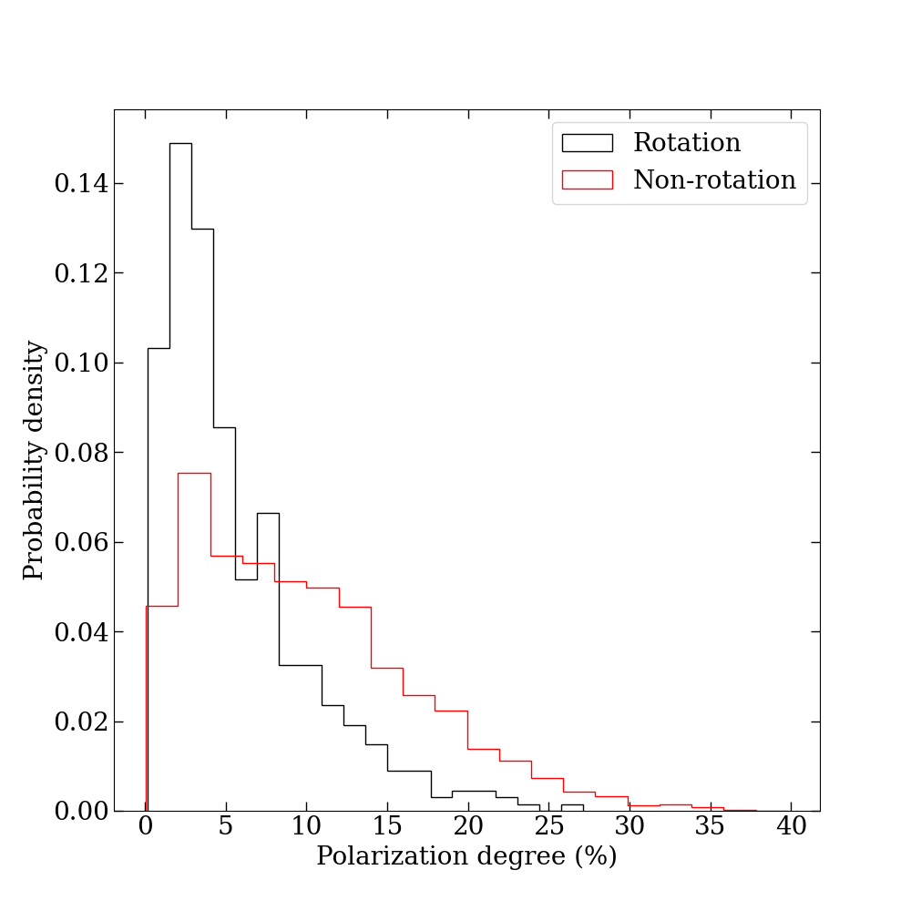
图注：Distribution of the polarization degree during the rotation and non-rotation periods of all the sources in our sample combined.
对应解读：对应“建议重点查看的图表”第5项和“关键图表逐图导读”图5：旋转期与非旋转期偏振度 p 分布比较。
入选理由：这是支撑论文核心结论的最关键图：全样本旋转期间的偏振度分布是否相对非旋转期向低 p 偏移，直接关系到作者所说“旋转期间 p 较低”的统计趋势。相比单个事件示例，它检验的是全样本层面的主要物理结论，也能帮助读者判断该趋势是否明显、是否可能由分布尾部或少数源主导。
来源与置信度：\(arxiv_source\)；high；\(arxiv_source\) / aa60588-26.tex:figure[5]
Fig02
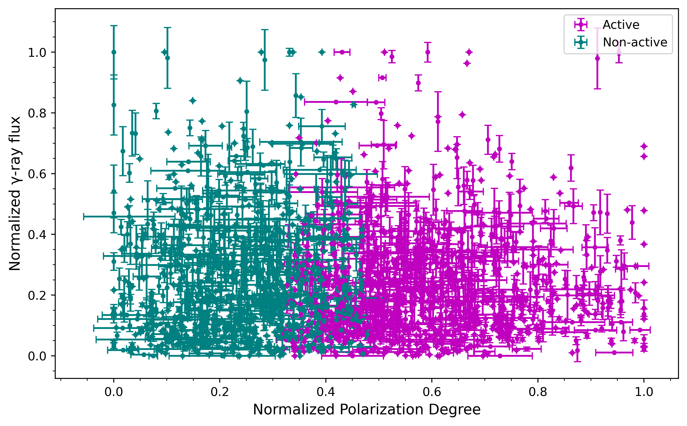
图注：Normalized $\gamma$-ray flux versus normalized polarization degree for BLLs. The colors denote the active and quiescent polarization states defined as above and below the median polarization degree. The Spearman results support neither a correlation nor an anticorrelation for the quiescent, active, or combined datasets.
对应解读：对应“建议重点查看的图表”第2项和“关键图表逐图导读”图2：p 与 gamma 射线通量 \(F_gamma\) 的相关性图。
入选理由：该图直接展示归一化 gamma 射线通量与归一化偏振度的关系，并按偏振活跃/宁静状态着色，图注明确给出 Spearman 检验不支持相关或反相关。这正对应日报中关于“p 与 \(F_gamma\) 不存在稳健相关”的核心结果，是判断高能活动与光学磁场有序度是否耦合的关键证据。
来源与置信度：\(arxiv_source\)；high；\(arxiv_source\) / aa60588-26.tex:figure[2]
Fig03
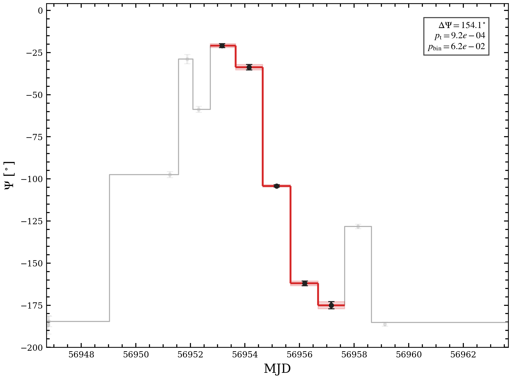
图注：Optical polarization angle rotation of about 154 degrees in CTA 102. The red line shows the identified rotation. The legend lists the p-values for the t-test and binomial tests.
对应解读：对应“建议重点查看的图表”第3项和“关键图表逐图导读”图3：偏振角旋转事件示例图。
入选理由：该图给出 CTA 102 中约 154 度的偏振角旋转，并用红线标出识别出的旋转区间，还列出 t-test 和 binomial tests 的 p 值。它最适合用于检查旋转识别是否依赖角度展开、相邻点连续性和统计显著性，是理解作者如何从时间序列中定义 64 次旋转事件的代表性图。
来源与置信度：\(arxiv_source\)；high；\(arxiv_source\) / aa60588-26.tex:figure[3]
Fig01
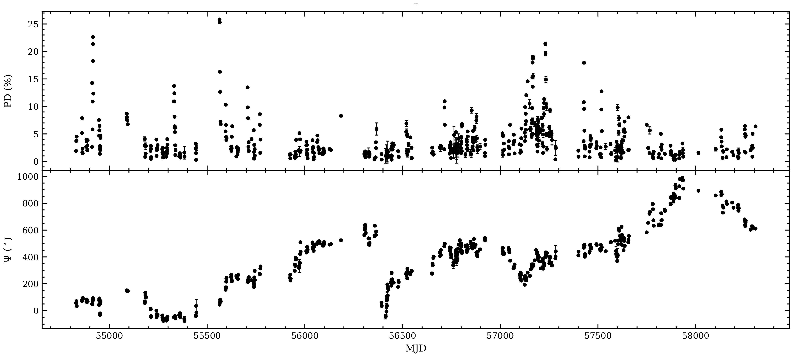
图注：Optical polarization degree (top) and angle (bottom) light curve for PKS~1510-089. The polarization angle has been corrected for the 180$^\circ$ ambiguity.
对应解读：对应“建议重点查看的图表”第1项和“关键图表逐图导读”图1：样本或代表源的偏振光变曲线总览。
入选理由：该图展示 PKS 1510-089 的光学偏振度和已校正 180 度模糊性的偏振角光变曲线，可用于检查采样密度、偏振度变化与偏振角连续演化之间的关系。虽然它没有同时展示 gamma 射线通量，但对判断偏振角旋转识别中的时间覆盖、误差和角度展开问题仍很重要。
来源与置信度：\(arxiv_source\)；high；\(arxiv_source\) / aa60588-26.tex:figure[1]
Fig04
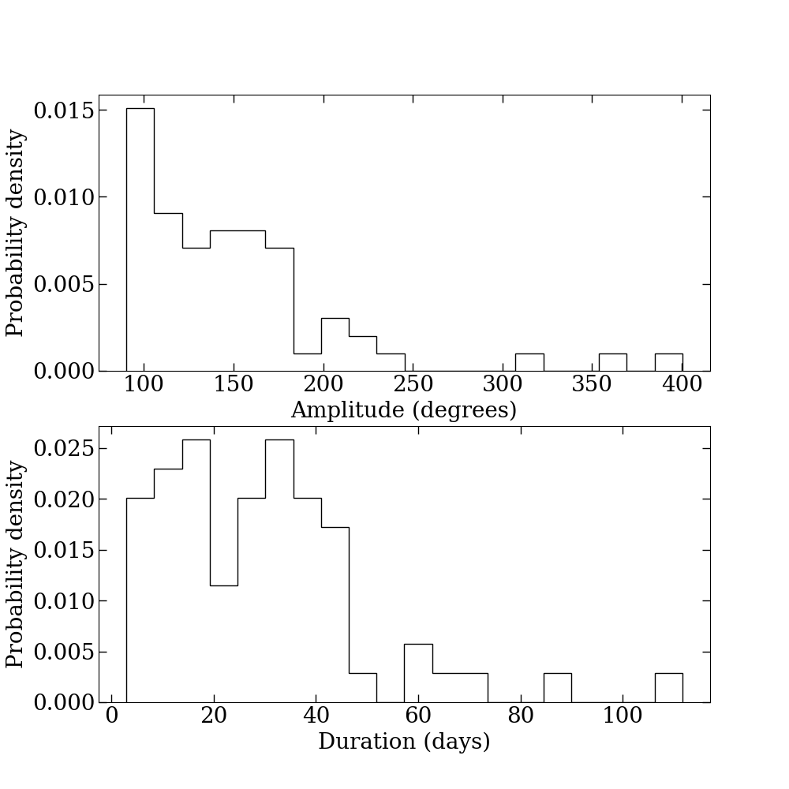
图注：Distribution of amplitudes (top) and duration (bottom) for the rotations in our sample.
对应解读：对应“建议重点查看的图表”第4项和“关键图表逐图导读”图4：旋转事件统计图。
入选理由：该图展示样本中旋转事件的幅度和持续时间分布，直接支持论文关于 64 次偏振角旋转事件总体性质的统计描述。它有助于判断旋转是否主要集中在某些幅度或时间尺度上，也能提醒读者事件数不能简单等同于物理发生率，因为持续时间分布会受到采样窗口影响。
来源与置信度：\(arxiv_source\)；high；\(arxiv_source\) / aa60588-26.tex:figure[4]
强相关工作
本文与 RoboPol 及其他光学偏振监测工作的关系最直接。早期工作通过系统监测发现，\(\gamma\) 射线响亮耀变体更容易出现偏振角旋转，且旋转期间偏振度可能较低；但也有研究指出随机游走模型能产生相当一部分看似平滑的旋转。本文的新意在于合并三个公开项目、扩大事件数，并在全样本趋势之外强调单源差异。建议检索关键词：\(\mathrm{RoboPol}\) blazar polarization rotations, optical polarization gamma-ray blazars, polarization angle rotations stochastic model。
理论上，本文处在多区湍流模型、冲击压缩磁场模型、螺旋磁场几何模型和磁重联模型之间的交叉地带。支持单一有序几何的个例通常强调 \(\chi\) 平滑旋转与 \(\gamma\) 射线耀发同步；相反观点则强调红噪声采样、随机 \(Q\)-\(U\) 游走和选择效应足以解释许多事件。本文结果更接近折中但偏多机制的结论：某些旋转可能有清楚动力学起源，另一些则可能是随机或多区叠加产物。建议检索关键词：Marscher blazar polarization rotation, turbulent extreme multi-zone model, shock-in-jet polarization, magnetic reconnection blazar polarization。
同类数据背景还应联系 Fermi-LAT 长期源表和活动星系核目录。\(\gamma\) 射线通量、光谱指数和源类别来自长期监测与目录产品，因此任何相关性分析都受到 LAT 时间 binning、曝光变化和低通量上限处理影响。若要复现或扩展本文，可从 Fermi-LAT Light Curve Repository、4FGL 和 4LAC 目录入手，再叠加 RoboPol、Steward Observatory 或其他公开偏振数据。
同一事件 / 同类源线索：
相似工作：
- https://ui.adsabs.harvard.edu/abs/2015MNRAS.453.1669B/abstract
- https://ui.adsabs.harvard.edu/abs/2016MNRAS.457.2252B/abstract
- https://ui.adsabs.harvard.edu/abs/2017MNRAS.470.1144B/abstract
基础理论 / 方法工作：
- https://ui.adsabs.harvard.edu/abs/1979ApJ...232...34B/abstract
- https://ui.adsabs.harvard.edu/abs/2008Natur.452..966M/abstract
- https://ui.adsabs.harvard.edu/abs/2010ApJ...710L.126M/abstract
相反观点 / 张力线索：
7. Chemical enrichment of the Perseus cluster core seen by XRISM/Resolve
- 来源：arXiv / astro-ph.HE
- 链接：https://arxiv.org/abs/2606.17141v1
- 作者：XRISM Collaboration, Marc Audard, Hisamitsu Awaki, Ralf Ballhausen, Aya Bamba, Ehud Behar, Rozenn Boissay-Malaquin, Laura Brenneman
- 评分：novelty 8/10，importance 8/10，relevance 8/10，final 9.00/10
- 推荐理由：XRISM/Resolve对英仙座团核心元素丰度的高分辨率测量，校正以往CCD结果并约束ICM富集历史；X射线仪器和团簇高能天体物理价值较高。
中文题目：Chemical enrichment of the Perseus cluster core seen by XRISM/Resolve
做了什么：本文使用 XRISM/Resolve 对 Perseus 星系团核心及约 250 kpc 内区域的高分辨率 X 射线光谱，测量 Fe 绝对丰度和 Si/Fe、S/Fe、Ar/Fe、Ca/Fe、Cr/Fe、Mn/Fe、Ni/Fe 等相对丰度。核心问题是：先前 CCD 观测报告的最中心强 Fe abundance drop 是否真实，以及 BCG NGC 1275 的晚期 SNIa 是否在核心留下不同的化学指纹。作者通过加入 SSM 的基线拟合、中心区域多组拟合实验、与 XMM/Chandra 历史结果比较以及核合成产额模型拟合，发现强中心 Fe drop 在基线分析中被超过 2σ 排除，X/Fe 比值在空间上高度均匀，并且最终 abundance pattern 不要求两个分离的 SNIa 富集通道即可被 SNcc+SNIa 组合满意解释。
为什么重要：本文重要性主要体现在三点。第一，它用 XRISM/Resolve 的高分辨率数据挑战或修正了 CCD 时代 Perseus 核心强 Fe drop 的解释，提示部分中心丰度异常可能来自模型和仪器系统误差。第二，它发现多种 X/Fe 比值在核心到约 250 kpc 内近似均匀，从而削弱了“近期 BCG SNIa 在中心显著改变热 ICM 化学组成”的简单图像，强调早期富集和后续混合的重要性。第三，它把精细 abundance pattern 与 SNcc/SNIa 产额模型相连，表明在当前数据和模型库下不必引入两个独立 SNIa 富集通道，为星系团化学演化模型提供了更简洁的约束。
理论 / 观测 / 仪器方法价值：这篇论文的观测价值在于把 Perseus 这种最亮、最复杂的星系团核心放到 XRISM/Resolve 微量热计分辨率下重新测量，直接检验 CCD 时代关于中心 Fe drop 的系统误差问题。其方法价值在于同时展示绝对丰度、相对丰度、拟合实验依赖和跨仪器比较，使读者能区分统计误差与模型系统误差。其物理价值在于用空间均匀的 X/Fe 比值约束 BCG 晚期 SNIa 富集和 ICM 混合效率，并用 Fe-peak 元素参与检验 SNIa 核合成通道。对未来 XRISM、Athena/X-IFU 和高分辨率星系团化学巡天而言，它提供了一个处理 AGN、SSM、多温结构和产额模型退化的范例。
为什么应该关注：值得关注这篇论文，是因为 Perseus 是 ICM 化学丰度研究的原型源之一，任何关于其中心 Fe drop 和 abundance pattern 的修正都会影响我们解释大量 relaxed clusters 的方法。Resolve 的约 5 eV 分辨率让许多过去被 CCD 混叠的谱线和系统误差得到重新评估，因此本文不仅是一个单源测量，也是在检验过去二十年星系团丰度剖面的可靠性。对于关心超新星核合成的人，Mn/Fe、Ni/Fe、Cr/Fe 等 Fe-peak 比值提供了区分 SNIa 爆炸通道的关键输入；对于关心星系团反馈的人，X/Fe 的空间均匀性则直接关系到 AGN 搅拌、金属输运和冷却核演化。
展开详细解读：文章讲解、背景、理论、重点章节、图表与相关工作
文章详细讲解
本文围绕两个紧密相连的问题展开：第一，Perseus 核心是否真的存在强 Fe abundance drop；第二，核心到约 250 kpc 的相对丰度模式是否显示出 BCG NGC 1275 近期 SNIa 富集的空间指纹。前者是对 CCD 时代中心丰度异常的复核，后者是对 ICM 化学富集时间和混合效率的约束。由于 Perseus 中心 AGN 很亮，论文没有把最中心绝对 Fe 当作简单可读数，而是通过基线模型和多组拟合实验评估其系统稳定性。
数据上，XRISM/Resolve 在性能验证阶段对 Perseus 做了四个不同指向，覆盖中心与东南、东北、西南、西北等区域，并延伸到约 250 kpc。Resolve 的高分辨率让作者可以同时测量 Fe 和 Si/Fe、S/Fe、Ar/Fe、Ca/Fe、Cr/Fe、Mn/Fe、Ni/Fe。论文把未加入 SSM 的实验 A 与加入 SSM 的基线实验 B 作对照，并进一步对中心 CC 区域做 11 种拟合实验，以量化 AGN、软成分、多温结构或拟合设定对 Fe 与若干 X/Fe 的影响。
关键结果之一是：在基线分析下，强中心 Fe drop 被超过 2σ 排除。这个说法需要精确理解为“相对于先前 CCD 报告的强下降幅度，Resolve 基线模型不支持那样显著的中心低 Fe”，而不是说中心 Fe 已被无系统误差地精确测定。Fig. 4 显示 CC 区域 Fe 对不同拟合实验高度敏感，某些实验甚至给出可能不物理的高 Fe；Fig. 5 则展示加入 SSM 后各区域 Fe 分布，使读者看到中心值、邻近区域和系统范围之间的相对关系。
第二个关键结果是 X/Fe 比值在空间上非常均匀。Fig. 6 是这条证据链的核心，因为它把多个元素的相对丰度在所有区域中并列显示，并比较有无 SSM 建模。若晚期 BCG SNIa 在中心显著增加 Fe-peak 元素，直觉上可能期望 Ni/Fe、Mn/Fe 或 Fe 相对 α 元素出现中心偏移；但论文发现这种偏移不明显。因此作者支持“来自 NGC 1275 的晚期 SNIa 富集可以忽略”或至少未在 Resolve 当前数据中留下可检测的空间梯度。
第三个结果是核合成产额模型比较。论文把最终 Perseus 丰度模式与 SNcc 和 SNIa 产额组合拟合，Fig. 10 展示简单 SNcc+SNIa 与更复杂的双 SNIa 通道组合。结论不是说只有一种 SNIa 爆炸通道存在，而是说在本文丰度点及误差下，引入 near/sub-Chandrasekhar 或 deflagration/delayed-detonation 两个分离 SNIa 通道并非必要条件；简单组合已经能令人满意地再现实测 abundance pattern。
局限性集中在中心 AGN、投影/多温结构、SSM 的物理解释、仪器响应与原子数据。绝对 Fe 丰度尤其容易受连续谱归一化、热结构错误和中心点源泄漏影响；弱线元素则可能受局部背景、线混叠和原子数据库不完备影响。下一步最有价值的修复路径包括：使用更完整的多温/DEM 模型、联合 Chandra 高角分辨率约束 AGN 和空间结构、对 Resolve PSF scattering 做更严格传播、在更多星系团核心中重复同样分析，并把丰度模型拟合中的产额库系统误差显式纳入后验。
关键结果是怎么做出来的
第一条证据链来自数据选择和区域覆盖。本文使用 XRISM/Resolve 性能验证阶段对 Perseus 的四个指向，覆盖中心到约 250 kpc、约 0.2 r500 的区域。样本不是许多星系团的统计样本，而是对一个极亮、极复杂、历史资料最丰富的星系团核心做深度光谱剖析。其强项是 Resolve 高分辨率带来的谱线分辨能力和高信噪比；限制是结论的普适性需要与 Hitomi、CHEERS 和其他 XRISM 星系团比较来支撑。
关于中心 Fe drop，论文的主结果是基线分析排除强 drop 超过 2σ。这一结论依赖对中心 CC 区域和周围区域 Fe 丰度的相对比较，以及对 SSM 的建模。Fig. 5 直接展示未加入与加入 SSM 时所有区域的 Fe abundance map；Fig. 7 则把 Resolve 结果与 XMM/EPIC MOS、pn 和 Chandra/ACIS 的历史径向 Fe 分布放到一起，显示历史 CCD 结果对能段和仪器处理很敏感。因此，论文并不是单靠一个中心点宣布“没有 drop”，而是通过 Resolve 基线测量、模型实验和历史数据重拟合/对比来削弱强 drop 解释。
统计显著性方面，摘要只给出“>2σ confidence”，读者应在正文中核查其具体定义：是相对某个强 drop 模型的 ΔC/Δχ²，还是基于 Fe 中心值与周围峰值的误差传播，或是系统实验范围内的置信判断。尤其要检查是否把模型系统误差计入置信区间。Fig. 4 表明 CC 区域 Fe 对 11 种拟合实验高度敏感，某些实验给出可能不物理的高值，因此“排除强 drop”比“精确测得中心 Fe 值”更稳健。
第二条证据链是 X/Fe 的空间均匀性。Fig. 6 显示 Si/Fe、S/Fe、Ar/Fe、Ca/Fe、Cr/Fe、Mn/Fe、Ni/Fe 在不同区域中的分布，并比较有无 SSM 建模。若晚期 BCG SNIa 在中心显著改变 ICM 化学组成，Fe-peak 元素相对 α 元素应可能在中心出现可测梯度；但论文报告这些比值空间上“remarkable uniformity”。这支持两种物理图像之一：要么晚期 BCG SNIa 对当前热 ICM 的贡献很小，要么其产物已经被 AGN 搅拌、湍流和气体运动混合到当前分辨率下近似均匀。
第三条证据链是平均 abundance pattern 与外部结果的一致性。Fig. 9 把本文区域平均结果、tied ratios 结果与 Hitomi/SXS 的 Perseus 结果以及其他星系团/样本比较。这里的重点是判断 Resolve 新测量是否延续 Hitomi 在 Perseus 中发现的近太阳相对丰度模式，以及 Perseus 是否与 Centaurus、Ophiuchus、A2029、CHEERS relaxed systems 相容。如果相容，本文的空间均匀性不只是局部偶然，而更可能指向星系团核心普遍的早期混合和相似核合成历史。
第四条证据链是核合成模型比较。Fig. 10 用 SNcc 和 SNIa 产额模型组合拟合最终 Perseus abundance pattern，并比较简单 SNcc+SNIa 与包含两个 SNIa 通道的复杂模型。论文结论是两个分离 SNIa enrichment channels 并非必要。读者应核查拟合统计量、自由度、哪些元素贡献最大残差、是否使用协方差，以及产额库选择是否改变结论。若新增通道只带来边际改善或主要改善某个误差较大的元素，就不能把它解释为强物理证据。
系统误差和稳健性检验贯穿全篇。中心 AGN 会影响连续谱和最内区绝对 Fe；多温结构会造成 Fe bias；SSM 的加入改变软谱解释；Resolve PSF、背景、能量标定和原子数据库会影响弱线元素。论文通过实验 A/B、11 种中心拟合实验、与 CCD 不同能段比较、与 Hitomi/SXS 和外部样本比较来建立稳健性。阅读时应把“绝对 Fe 的中心值”“X/Fe 的空间均匀性”“核合成通道是否必要”分成三个不同强度的结论：第一最受系统误差限制，第二较稳健，第三依赖产额模型库和统计准则。
展开背景、理论、公式、模型、章节和图表导读
背景知识
星系团内介质（intracluster medium, ICM）是星系团重子物质的主要形态之一，温度通常达到数千万至上亿 K，主要通过热制动辐射和高电离重元素线辐射在 X 射线波段被观测到。ICM 中的 Fe、Si、S、Ar、Ca、Cr、Mn、Ni 等元素不是在热气体中原位生成的，而是由星系内恒星演化、核心坍缩超新星（SNcc）和 Ia 型超新星（SNIa）在宇宙时间内注入，再经星系风、AGN 反馈、剥离、湍流混合和并合过程扩散到星系团尺度。因此，ICM 丰度分布是星系形成史、超新星核合成和星系团动力学共同留下的“化学化石”。
Perseus 星系团是研究 ICM 化学富集的标杆对象：它近、亮、核心弛豫，中心有明亮的 brightest cluster galaxy NGC 1275 和活动星系核 3C 84，同时存在气泡、冷锋、丝状结构和强烈的核心反馈。这样的优点是 X 射线信噪比极高，适合测量弱线元素；缺点是中心 AGN、投影多温结构、共振散射、非热成分和仪器散射都可能影响绝对丰度，尤其影响 Fe-L/Fe-K 诊断。本文使用 XRISM/Resolve 约 5 eV 的能量分辨率，在四个指向中覆盖 Perseus 核心到约 250 kpc、约 0.2 r500 的区域，目标正是把“亮但复杂”的核心从 CCD 时代的系统误差中分离出来。
历史上，一个核心问题是 relaxed clusters 中常见的中心 Fe 峰：外区 Fe 丰度约为 0.3 solar，提示早期、广域、较均匀的预富集；但核心 Fe 往往升高，通常被解释为 BCG 附近长期 SNIa 富集、冷却流沉积或金属被 AGN 气泡搬运后的再分布。另一个争议是某些星系团最中心报告过 Fe abundance drop，即最内核 Fe 丰度反而下降。这个现象若为真实，可能意味着尘埃耗尽、共振散射、多温偏差、AGN 污染、金属被冷相锁住或中心气体动力过程；若为假象，则可能主要来自 CCD 光谱分辨率不足、温度结构未建模、背景/PSF/能段选择或原子数据库误差。
本文的动机不是简单地“再测一次 Perseus 丰度”，而是利用微量热计分辨率直接分离谱线复合结构，测量 Fe 的空间分布以及多个 X/Fe 比值的空间均匀性。绝对 Fe 丰度对温度结构、连续谱、AGN 与 soft spectral model（SSM）处理敏感；相对 X/Fe 比值则更接近核合成产额信息，对气体密度归一化和部分校准误差不那么敏感。论文摘要中的两个关键结论——基线分析排除强中心 Fe drop 超过 2σ、X/Fe 比值空间上高度均匀——都必须放在这种“绝对丰度易受系统误差影响、相对丰度更稳健”的框架下阅读。
常见误区有三点。第一，不应把“Fe 峰”直接等同于“最近才由 BCG SNIa 产生的 Fe”，因为早期富集、AGN 搅拌和投影平均也能形成或抹平径向结构。第二，不应把 CCD 时代的中心 drop 当成已确定的物理事实；在多温等离子体中用单温模型拟合会产生 Fe bias，尤其在软能段 Fe-L 复杂谱区更明显。第三，不应把核合成模型拟合看作唯一解反演；不同 SNcc IMF、金属丰度、SNIa near-Chandrasekhar/sub-Chandrasekhar、deflagration/delayed detonation 产额之间存在退化，本文“无需两个独立 SNIa 通道”应理解为在其所用丰度矢量、误差和模型库下没有统计必要，而不是排除宇宙中存在多种 SNIa 爆炸路径。
基础理论 / 方法脉络
ICM 的 X 射线光谱可以近似看成热等离子体的连续谱加一系列碰撞激发谱线。热制动辐射主要给出温度和发射量，谱线强度则与元素丰度、离子化平衡、温度分布和原子跃迁率有关。在 Perseus 这样的热星系团中，Fe-K 复合线、Si、S、Ar、Ca、Cr、Mn、Ni 等 K 壳层线是丰度测量的主要信息来源；XRISM/Resolve 的优势在于约 5 eV 分辨率能把许多在 CCD 中混叠的线群、卫星线和相邻元素线更好分开。
从物理图像看，某一空间区域的观测谱不是单一温度、单一成分气体的直接投影，而是沿视线穿过多个半径壳层、多个温度相、可能还叠加 AGN 点源和仪器散射后的结果。光谱模型通常包含热等离子体成分、吸收、非热或 AGN 成分、背景以及仪器响应。本文最需要关注的是：中心 CC 区域的绝对 Fe 丰度对这些模型选择很敏感，论文通过 11 种拟合实验展示其系统依赖；而外侧区域及 X/Fe 比值在加入 SSM 后更稳定，这支撑其化学结论。
丰度比 X/Fe 的意义在于把总金属质量归一到 Fe 上，尽量消除气体质量、体积、距离、发射量和部分校准误差。SNcc 通常贡献较多 α 元素如 O、Ne、Mg、Si、S 等，SNIa 则对 Fe-peak 元素贡献突出；Mn/Fe、Ni/Fe、Cr/Fe 对 SNIa 爆炸密度、电子俘获和 progenitor 金属丰度尤其敏感。因此，若从中心到 250 kpc 的 Si/Fe、S/Fe、Ar/Fe、Ca/Fe、Cr/Fe、Mn/Fe、Ni/Fe 都近似均匀，就说明最近几 Gyr BCG 中的 SNIa 不能在中心产生显著不同于外区的化学指纹，或该指纹已被充分混合/被观测误差淹没。
统计上，本文的观测量是各区域中光谱通道的计数，模型预测需要经过 Resolve 响应矩阵与有效面积卷积，并与背景、AGN、SSM 等成分相加。丰度参数由似然或 C-stat/χ² 类统计量拟合得到，置信区间来自拟合统计量变化、MCMC 或误差传播。阅读时不要只看最佳值，还要看不同模型设定下的漂移：如果 Fe 在 CC 区域随实验大幅变化而 X/Fe 仍相对稳定，说明绝对归一化或连续谱/多温建模是主导系统误差；如果某些弱线元素如 Mn、Cr、Ni 对局部残差或能量校准敏感，就需要额外检查残差图和拟合能段。
核合成比较的基本方法是把观测到的 abundance pattern 写成 SNcc 与 SNIa 产额库的线性组合，拟合每种事件对各元素的相对贡献。这里的“模型”不是单次超新星爆炸的直接观测，而是对长时间、许多 progenitor 和爆炸通道平均后的有效产额组合。论文比较简单 SNcc+SNIa、一个 SNcc 加两个 SNIa 通道、near/sub-Chandrasekhar 或 deflagration/delayed detonation 的组合，结论是 Perseus 的最终丰度模式可被较简单组合满意解释，尚不需要引入两个分离的 SNIa 富集通道来改善拟合。
公式与推导
可从热等离子体发射率开始建立读图所需的公式链。对一个空间区域，能量 E 附近的体发射率可写为
其中 \(n_e\) 和 \(n_H\) 是电子与氢数密度，\(Z_X\) 是元素 X 相对某一太阳丰度表的丰度，\(\Lambda\) 是连续谱或线辐射冷却函数。该式说明丰度不是直接观测量，而是通过温度、发射量和原子物理共同反演得到。
投影到观测通量时，区域内光谱近似为沿视线积分：
其中 \(D_L\) 为光度距离，\(z\) 为红移。若同一区域存在多温相，则应写成微分发射量形式
\(Y(T)=\int n_e n_H dV/dT\) 是 differential emission measure。用单温模型替代多温分布时，Fe-L 或 Fe-K 线与连续谱不匹配会造成所谓 Fe bias，这是中心 abundance drop 争议的重要来源。
探测器记录的不是 \(F_E\) 本身，而是经过响应卷积后的通道计数：
其中 \(\mu_i\) 是第 i 个能道的模型计数，\(R_i(E)\) 为能量重分布矩阵，\(A_{\rm eff}\) 为有效面积，\(b_i\) 为背景/非 ICM 成分，\(\boldsymbol\theta\) 包括温度、归一化、丰度、AGN 和 SSM 参数。Resolve 的高分辨率通过更窄的 \(R_i(E)\) 降低线混叠。
若计数服从泊松分布，拟合常用 Cash statistic 或等价似然：
或
比较“强中心 Fe drop”模型与基线模型时，可用 \(\Delta C\) 或 \(\Delta\chi^2\) 近似换算置信度；单参数情况下 \(\Delta C\simeq4\) 对应约 2σ，但多参数和边界条件下需谨慎。
丰度比的定义通常为
若同一区域的温度和发射量系统误差同时影响 X 与 Fe，部分误差会在比值中抵消。因此 Fig. 6 中 X/Fe 的空间均匀性比 Fig. 5 中绝对 Fe 的数值更适合讨论核合成比例，但不完全免疫于温度结构和局部线残差。
一个简单的径向 Fe 模型可写为背景预富集加中心峰：
其中 \(Z_0\) 表示外区约均匀预富集水平，\(Z_c,r_c,\alpha\) 描述中心增强。所谓强中心 drop 可用最内 bin 的相对下降量表示：
本文摘要中的“排除强 drop”可理解为基线后验或置信区间不支持较大的 \(D_{\rm Fe}\)。
核合成产额比较可用线性组合表示：
或对双 SNIa 通道写成
观测上通常拟合相对 Fe 的模式：
其中 \(A_X\) 是原子量，\(y_X\) 是每次超新星产额，\(N\) 是事件数或归一化权重。
模型优劣可用
或包含协方差矩阵的形式
如果加入第二个 SNIa 通道后 \(\chi^2\) 的改善相对新增自由度不显著，就不能声称数据要求双通道。本文 Fig. 10 的核心读法正是看复杂模型是否实质性降低系统残差，而不只是多了可调参数。
模型拟合 / 应用方法
本文的光谱拟合对象是各空间区域的 Resolve 能道计数，主要自由参数包括热等离子体温度或多温成分、发射量、Fe 绝对丰度、Si/Fe、S/Fe、Ar/Fe、Ca/Fe、Cr/Fe、Mn/Fe、Ni/Fe 等相对丰度，以及吸收、AGN/非热成分、背景和 SSM 相关参数。模型预测必须与 Resolve 响应矩阵和有效面积卷积，因此拟合量不是线通量的简单积分，而是全谱 forward modelling 的结果。
似然层面应理解为泊松计数统计下的 C-stat 或近似 χ² 拟合。论文摘要未给出完整统计实现，读者应在方法节核查是否使用 XSPEC/SPEX、采用何种太阳丰度表、原子数据库版本、误差置信水平、参数是否 tied、是否包含协方差。对于“>2σ 排除强 drop”，还应查明比较的 null/alternative 模型是什么，是否只含统计误差，还是将 11 种实验的系统漂移也纳入。
残差诊断是判断丰度可靠性的核心。对 Fe，需检查 Fe-K 复合线附近数据/模型残差以及连续谱归一化；对 Si、S、Ar、Ca、Cr、Mn、Ni，需检查对应 K 壳层线附近是否有局部系统残差、能量偏移或未建模弱线。若残差在某元素线附近呈相干结构，即使全局 C-stat 可接受，单个 X/Fe 仍可能偏。Fig. 4 的离群实验提示中心 CC 区域存在模型失败模式，应优先追查这些实验的残差。
主要参数退化包括温度—Fe 退化、发射量—丰度退化、AGN 连续谱—热连续谱退化、SSM—软能段金属线退化，以及多温结构—单温丰度退化。中心区域尤其严重：AGN 越亮，热连续谱越难精确定义；多温气体越复杂，单一温度下的 Fe 线等效宽度越可能被错误解释成低 Fe 或高 Fe。相对 X/Fe 能减少部分发射量退化，但仍受温度结构和原子数据影响。
空间拟合还存在区域间耦合。Resolve 的角分辨率和 PSF scattering 可能使中心 AGN 或高亮核心光子进入邻近区域；沿视线投影使外侧 annulus/区域含有不同三维半径的气体。若模型没有完全 deproject，径向梯度会被抹平，导致真实中心峰或 drop 被低估。因此空间均匀性结论需要结合 PSF/投影评估；如果论文只做投影丰度，应把结论限定为 projected abundance ratios 的均匀性。
核合成模型拟合的参数是 SNcc 与 SNIa 各通道的权重或事件数归一化，观测向量是最终 X/Fe abundance pattern。拟合优度取决于元素误差、协方差、太阳丰度表和产额库。重要诊断是：增加第二个 SNIa 通道后 χ²、AIC/BIC 或 Bayesian evidence 是否显著改善；残差是否从多个元素系统性改善，而非只对一个弱约束元素过拟合。若未显著改善，论文“不需要两个 SNIa 通道”的统计解释成立，但不能把它外推为所有星系团或所有 SNIa 物理通道的排除。
重点章节 / 结果段落怎么读
-
Introduction：重点读两个问题的提出方式——中心 Fe peak/drop 的历史争议，以及 X/Fe 空间分布如何检验 BCG 晚期 SNIa 富集。注意作者如何区分外区约 0.3 solar 的预富集、relaxed core 的 Fe 增强和最中心 drop 这三个不同概念。
-
Observations and data reduction：重点核查四个 XRISM/Resolve 指向、区域划分、曝光、筛选、背景处理、AGN/点源处理和响应文件生成。Perseus 中心很亮，任何 PSF scattering、中心 AGN 泄漏或有效面积校准都会影响绝对 Fe，因此这一节是理解系统误差的基础。
-
Spectral modelling / fitting experiments：这是全文最应该细读的技术段落。需要列出实验 A、B 以及中心 CC 的 11 种拟合实验分别改变了什么：是否加入 SSM、温度结构如何处理、能段如何选择、AGN 或背景如何建模、丰度是否 tied。读 Fig. 4 前必须先读这一节。
-
Spatial abundance results：重点看 Fe abundance map 和 X/Fe ratio map，对应 Fig. 5 和 Fig. 6。阅读时分开记录绝对 Fe 与相对 X/Fe：前者回答中心 drop，后者回答化学均匀性和 BCG 晚期富集。
-
Comparison with previous CCD/Hitomi results：对应 Fig. 7 和 Fig. 9。重点理解为什么 XMM/Chandra 的 broad-band 或不同硬能段拟合会给出不同 Fe 径向剖面，以及本文如何与 Hitomi/SXS 的 Perseus 高分辨率结果衔接。
-
Nucleosynthesis yield modelling and discussion：对应 Fig. 10。阅读时不要只看最佳模型名称，要看模型比较统计量、自由度、元素残差和产额库假设。尤其关注作者如何从 abundance pattern 推出“不需要两个分离 SNIa 通道”，以及他们承认了哪些产额模型系统不确定性。
建议重点查看的图表
-
区域定义与指向覆盖图：先看四个 XRISM/Resolve 指向如何覆盖 Perseus 核心、CC 区域及 SE/NE/SW/NW 等外侧区域。重点核查各区域是否相互独立、是否受 AGN 或 chip/gate 区域影响、半径是否足以支撑“到约 250 kpc”的空间结论。
-
代表性光谱与残差图：检查 Fe-K、Si、S、Ar、Ca、Cr、Mn、Ni 附近的谱线是否被模型正确描述。重点看数据/模型残差是否在特定线群处成系统偏离，尤其是弱元素和 Fe-peak 元素，因为这些残差会直接影响 X/Fe。
-
Fig. 4 类拟合实验依赖图：这是中心 CC 区域系统误差诊断。重点看 Fe、Si/Fe、Ar/Fe、Ni/Fe 在 11 种实验之间的漂移幅度，哪些实验给出不物理或离群值，以及相对丰度是否比绝对 Fe 更稳定。
-
Fig. 5 类 Fe 空间分布图：检查未建模 SSM 与加入 SSM 基线结果的差别。重点看中心 Fe 是否低于周围区域、误差条是否重叠、上限如何定义，以及“排除强 drop”的统计含义是否依赖某个模型设定。
-
Fig. 6 类 X/Fe 空间分布图：逐元素检查 Si/Fe、S/Fe、Ar/Fe、Ca/Fe、Cr/Fe、Mn/Fe、Ni/Fe 是否在所有区域内一致。重点看弱线元素误差是否足够小、是否存在单一区域异常、SSM 是否改变空间趋势。
-
Fig. 7 类与 XMM/Chandra 历史结果比较图：看 Resolve 的径向 Fe 分布与 XMM/EPIC MOS、pn、Chandra/ACIS 在不同能段拟合下的关系。重点判断历史 Fe drop 是否可能由宽能段、CCD 分辨率、多温偏差或仪器交叉校准造成。
-
Fig. 9 类平均 abundance pattern 与外部样本比较图：看本文独立区域、tied ratios、Resolve+Hitomi/SXS 最终结果和 CHEERS/其他 XRISM 星系团之间的一致性。重点检查 Perseus 是否为特例，还是支持星系团核心化学组成普遍相似。
-
Fig. 10 类核合成产额拟合图：逐元素比较模型柱状贡献与观测点。重点看哪些元素驱动 χ² 或似然差异，双 SNIa 通道是否真正改善残差，以及 Mn、Ni、Ca 等诊断元素是否决定 near/sub-Chandrasekhar 解释。
关键图表逐图导读
图 1/区域与观测布局图应先作为全篇地图来读。横纵坐标通常是天球坐标或以 Perseus 中心为参考的角距离，图上会标出 Resolve 四个指向、中心 CC 区域以及 SE/NE/SW/NW 等提取区域。读者要确认每个区域的物理半径范围、是否覆盖到约 250 kpc、是否包含或避开 NGC 1275/AGN 最亮区域。陷阱是把投影区域直接当三维壳层；这些区域仍然包含沿视线的多半径贡献。
图 4 是中心拟合系统误差的关键诊断图。左图展示 CC 区域绝对 Fe 对 11 种拟合实验的依赖，浅紫色带给出周围区域在基线 SSM 模型下的 Fe 范围；右图展示 Si/Fe、Ar/Fe、Ni/Fe 等比值对同一组实验的依赖。读这张图时不要只找最佳实验，而要看模型设定导致的横向散布：如果 Fe 的散布远大于统计误差，中心 Fe 结论必须带系统条件；如果 X/Fe 散布较小，则相对丰度结论更稳健。图注中提到某些实验 Fe 超出图上端且可能不物理，这是识别失败模型的重要线索。
图 5 是绝对 Fe abundance map，也是“强中心 drop 是否存在”的主图之一。上下或左右面板比较未建模 SSM 的实验 A 与加入 SSM 的基线实验 B，各区域用颜色或点值表示 Fe 丰度。横向读法是比较中心 CC 与周围 SE/NE/SW/NW；纵向读法是比较同一区域在不同模型处理下的变化。陷阱是把中心深红上限或大误差当成精确丰度；论文明确指出 CC 区域 Fe 对拟合实验依赖较大，因此应把这张图与图 4 联合解读。
图 6 是 X/Fe 比值空间均匀性的主图。坐标通常按区域排列，每个元素一个子面板或一组点，比较无 SSM 与有 SSM 的结果。模型线若存在，通常代表区域平均或 tied-ratio 结果。应重点看各元素在误差条内是否与常数一致，是否某个方向存在系统偏高/偏低，以及加入 SSM 后是否改变趋势。陷阱是弱元素如 Cr、Mn、Ni 的误差可能较大，视觉上“均匀”未必等于强约束；需要结合统计检验或 tied-ratio 拟合优度。
图 7 把 Resolve 径向 Fe 与 XMM/EPIC MOS、pn、Chandra/ACIS 历史结果比较。左图使用较宽能段的 CCD 拟合，右图使用较硬能段以更接近 Resolve 分析。读者应看同一半径处不同仪器/能段的箱体是否一致，以及历史 broad-band 结果中的中心下降是否在硬能段或 Resolve 中减弱。陷阱是不同文献的太阳丰度表、能段、投影处理、PSF 和温度模型可能不同，不能把所有点当成完全同质测量。
图 9 是把本文 abundance pattern 放入 Hitomi/SXS、其他 XRISM 星系团和 CHEERS 样本背景中的桥梁。左图比较区域平均、加入 SSM、tied ratios 以及 Hitomi/SXS；右图比较 Perseus 最终 Resolve+SXS 结果与 Centaurus、Ophiuchus、A2029 和 CHEERS。关键是看 Perseus 的 Si/Fe 到 Ni/Fe 是否落在其他系统的分布范围内，以及本文处理 SSM/tied ratios 是否改变平均模式。陷阱是不同仪器、样本半径和分析策略会引入共同系统误差。
图 10 是核合成模型拟合图。横轴是元素或元素/Fe 比，纵轴是相对太阳的丰度比或贡献，黑点为最终 Perseus 数据，彩色柱/直方图为 SNcc 与 SNIa 贡献。左中右分别比较简单 SNcc+SNIa、一个 SNcc 加 near/sub-Chandrasekhar 两种 SNIa、以及 deflagration/delayed detonation 两种 near-Chandrasekhar 通道。读者应看模型在 Si、S、Ar、Ca、Cr、Mn、Ni 上的系统残差是否被复杂模型明显消除；若改善很小，就支持论文“无需两个独立 SNIa 通道”的判断。
论文原图 / 可嵌入图片
Fig05
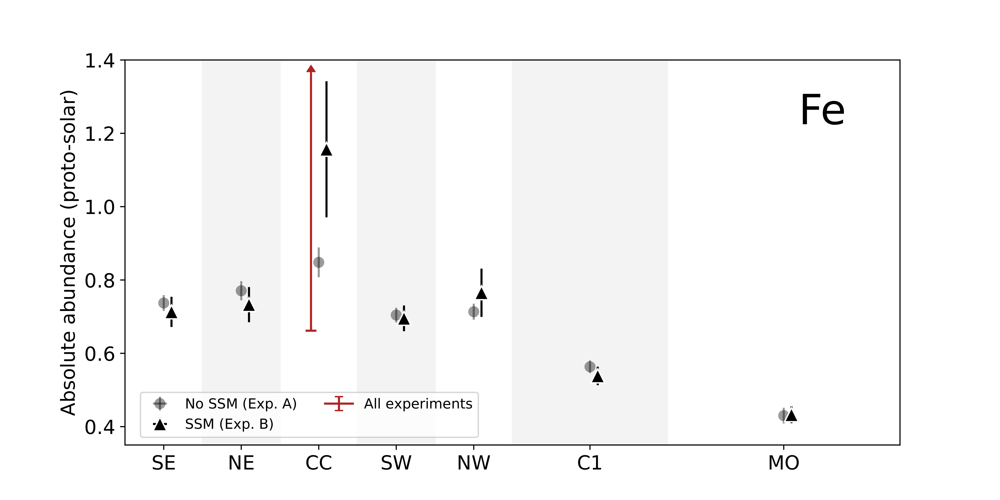
图注：Absolute Fe abundance mapped in all considered regions without and with modelling of the SSM (respectively Experiments A and B -- our baseline analysis). The upper limit of the CC region (dark red) reflects the large dependency of Fe with our fitting experiments as illustrated in Fig.~\(\ref{fig:experiments}.\)
对应解读：对应核心结果：绝对 Fe 丰度空间分布、中心 Fe 峰/是否存在中心下降，以及基线模型中是否加入 SSM 的影响。
入选理由：论文摘要的首要科学问题是 Perseus 核心 Fe 丰度是否存在强中心下降；该图直接给出各区域 Fe 丰度图，并并列比较未建模与建模 SSM 的结果，是支撑“基线分析排除强 Fe drop”的最关键图。
来源与置信度：\(arxiv_source\)；high；\(arxiv_source\) / aa59603-YY.tex:figure[5]
Fig06
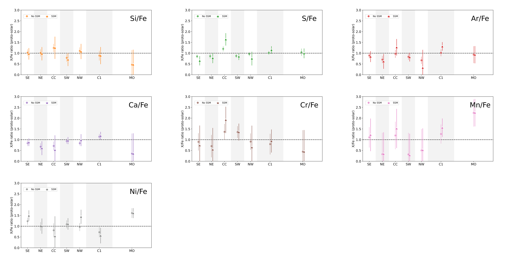
图注：X/Fe ratios mapped in all considered regions without and with modelling of the SSM (respectively Experiments A and B -- our baseline analysis).
对应解读：对应核心结果：Si/Fe、S/Fe、Ar/Fe、Ca/Fe、Cr/Fe、Mn/Fe、Ni/Fe 等 X/Fe 比值的空间均匀性。
入选理由：论文关于“X/Fe 比值高度空间均匀、晚期 BCG SNIa 富集可忽略”的结论主要依赖该图；它直接展示所有区域在有无 SSM 建模下的元素比值分布，比单个谱图或区域示意图更能支撑化学丰度解读。
来源与置信度：\(arxiv_source\)；high；\(arxiv_source\) / aa59603-YY.tex:figure[6]
Fig07
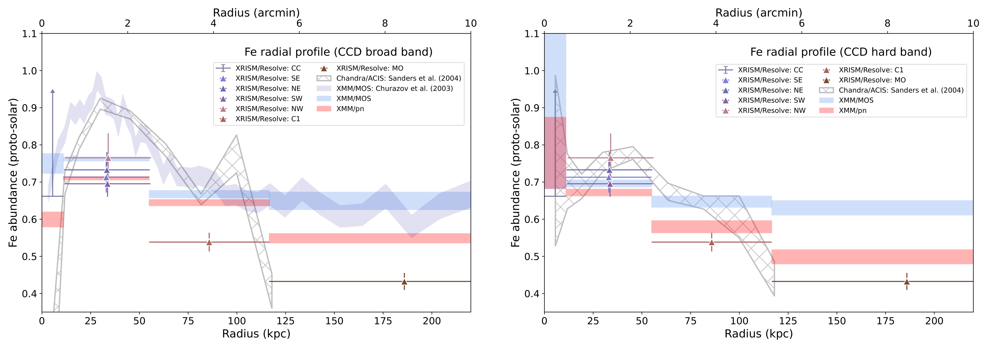
图注：The Perseus radial Fe distribution compared between our Resolve analysis (data points) and co-spatial results using \(\XMM/EPIC\) MOS and pn instruments (light blue and red boxes). \(\textit{Left:}\) Our MOS and pn spectra are fitted over the full energy band (0.45--9~keV). For comparison, we also show the broad-band, azimuthally-averaged Fe profiles from \(\citet{churazov2003}\) and \(\citet{sanders2004},\) respectively obtained with MOS and \(\chandra/ACIS.\) \(\textit{Right:}\) Our MOS and pn spectra are fitted over a harder energy band (1.9--9~keV), selected to better match the Resolve analysis. For comparison, we also show the (azimuthally-averaged) Fe profile from \(\citet{sanders2004}\) obtained with ACIS and fitted over 3--8~keV.
对应解读：对应模型/系统比较段落：Resolve 的径向 Fe 分布与 XMM/EPIC MOS、pn 以及 Chandra/ACIS 历史结果比较。
入选理由：该图把 XRISM/Resolve 的 Fe 径向测量与 CCD 仪器和不同能段拟合结果放在同一坐标系中，是判断此前中心 Fe drop 是否由仪器、能段或模型系统误差造成的关键诊断图。
来源与置信度：\(arxiv_source\)；high；\(arxiv_source\) / aa59603-YY.tex:figure[7]
Fig04
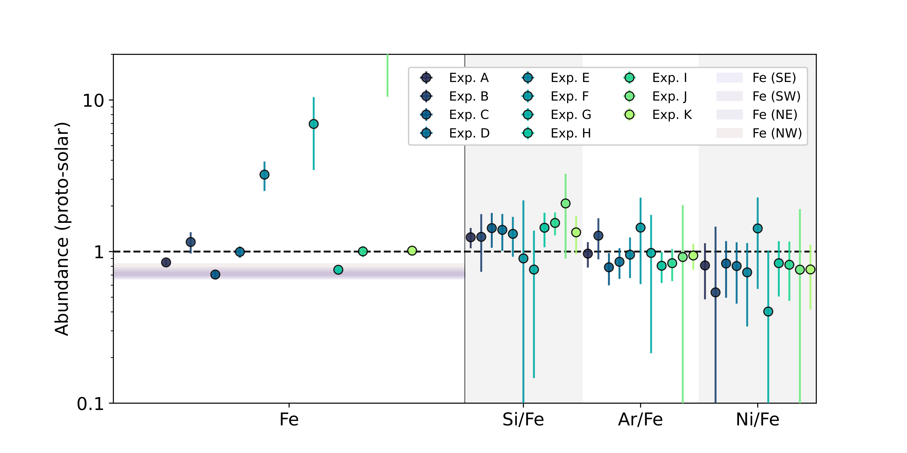
图注：\(\textit{Left:}\) Absolute Fe abundance dependencies on eleven fitting experiments in the CC region (Table~\ref{table:experiments}). The Fe values of Experiments F and J exceed the upper end of the figure and are probably not physical (see text). Fe abundance ranges measured in the surrounding SE, NE, SW, and NW regions (with SSM, i.e. following Experiment B) are indicated by light purple areas (see also Fig.~\ref{fig:Fe}). \(\textit{Right:}\) Si/Fe, Ar/Fe, and Ni/Fe dependencies on the same experiments in the CC region.
对应解读：对应系统误差与拟合实验：CC 区域 Fe、Si/Fe、Ar/Fe、Ni/Fe 对 11 种拟合实验的依赖。
入选理由：中心 AGN 和多温结构会显著影响绝对 Fe 测量；该图系统展示不同拟合设定下中心 Fe 与若干 X/Fe 的稳定性/不稳定性，是理解论文为何强调 CC 区域 Fe 上限和系统不确定性的必要图。
来源与置信度：\(arxiv_source\)；high；\(arxiv_source\) / aa59603-YY.tex:figure[4]
Fig10
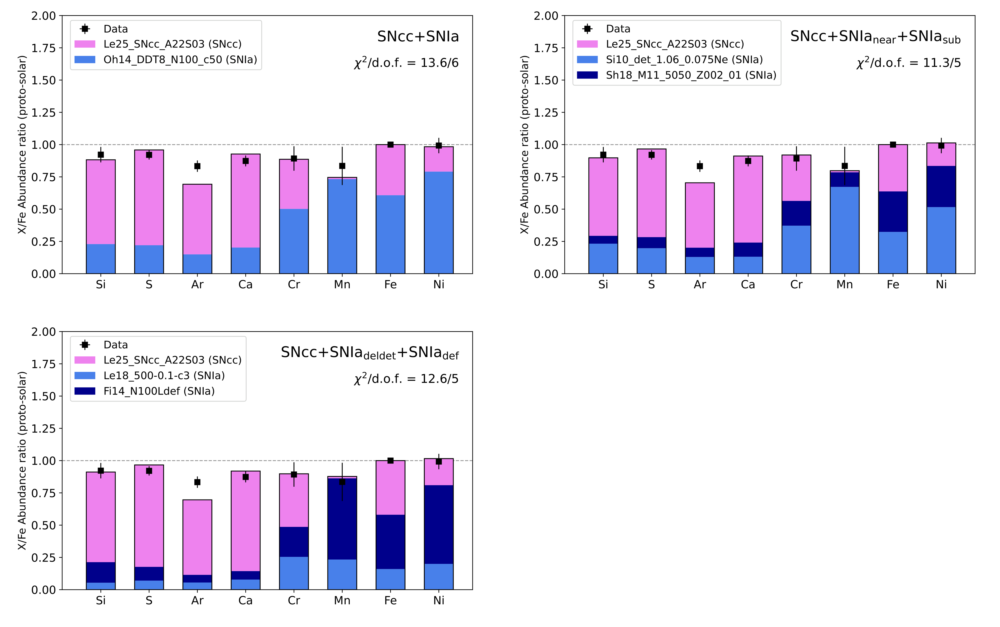
图注：Best-fit combination SNcc and SNIa yield models (colored histograms) on our Perseus final abundance pattern (black data points). SNcc contributions are pink while SNIa contributions are (light and dark) blue. \(\textit{Left:}\) Simple SNcc+SNIa model combination. \(\textit{Middle:}\) Combination of one SNcc and two SNIa models, assuming co-existence of near- and sub-Chandrasekhar SNIa explosions (SNcc+SNIa$_\mathrm{near}$+SNIa$_\mathrm{sub}$). \(\textit{Right:}\) Same as middle panel, now assuming co-existence of deflagration and delayed detonation explosions (in the near-Chandrasekhar scenario).
对应解读：对应核合成模型比较：最终 Perseus 丰度模式与 SNcc、SNIa 产额模型组合的拟合。
入选理由：论文的另一主要结论是无需引入两个独立 SNIa 富集通道即可满意解释 ICM 丰度模式；该图直接展示不同 SNcc+SNIa 模型组合及其对各元素丰度点的匹配情况。
来源与置信度：\(arxiv_source\)；high；\(arxiv_source\) / aa59603-YY.tex:figure[10]
Fig09
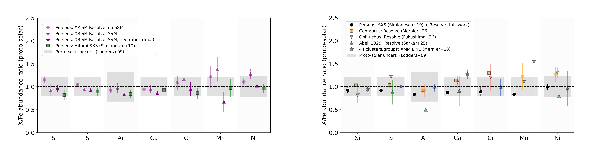
图注：\(\textit{Left:}\) Region-averaged abundance pattern evaluated (i) without SSM and independent abundances in each region, (ii) with SSM and independent abundances in each region, and (iii) with SSM and tied ratios in all regions. These measurements are compared with the \(\hitomi/SXS\) ratios obtained by \(\citet{simionescu2019}.\) \(\textit{Right:}\) Our final (Resolve+SXS) measurements are compared with central Resolve measurements of Centaurus \(\citep{mernier2026},\) Ophiuchus \(\citep{fukushima2026},\) A\,2029 \(\citep{sarkar2025},\) and of EPIC measurements of the CHEERS sample (44 relaxed systems; \citealt{mernier2018}).
对应解读：对应综合丰度模式与外部样本比较：区域平均丰度模式、Hitomi/SXS、其他 XRISM 星系团和 CHEERS 样本对比。
入选理由：该图把本文最终 X/Fe 模式与 Hitomi 及其他星系团样本相连，有助于判断 Perseus 的化学组成是否具有普遍性，并检验 tied ratios 与 SSM 处理对平均丰度模式的影响。
来源与置信度：\(arxiv_source\)；high；\(arxiv_source\) / aa59603-YY.tex:figure[9]
强相关工作
同源/同事件背景：本文研究的是具名源 Perseus cluster / NGC 1275 / 3C 84 的 ICM 化学富集，必须与同源高分辨率 X 射线工作一起读。最直接的历史基准是 Hitomi Collaboration 对 Perseus 核心的 SXS 光谱和化学丰度研究，检索关键词可用“Hitomi Perseus SXS abundance pattern ICM nucleosynthesis”。可靠入口包括 Hitomi 任务论文与 ADS/arXiv 页面，例如 https://arxiv.org/abs/1607.04487 和 https://arxiv.org/abs/1802.07875 。这些工作奠定了 Perseus 微量热计光谱、湍流速度和近太阳相对丰度模式的背景。
同源 CCD 历史工作包括 XMM-Newton/EPIC 和 Chandra/ACIS 对 Perseus Fe 径向剖面、中心 Fe drop 和冷却核结构的研究。本文 Fig. 7 明确引用 Churazov et al. 2003、Sanders et al. 2004 等历史剖面，检索关键词可用“Perseus cluster iron abundance drop Chandra ACIS XMM EPIC Churazov Sanders”。这些论文构成本文张力线索：CCD broad-band 或不同能段拟合是否导致中心 Fe 下降，以及 Resolve 是否能用高分辨率光谱修正该图像。
同类/样本比较方面，CHEERS 样本是 relaxed clusters/groups/ellipticals 的化学丰度基准之一，适合检索“CHEERS cluster abundance pattern Mernier 2018”。XRISM 早期对 Centaurus、Ophiuchus、A2029 等星系团核心的 Resolve 丰度工作也属于同类比较对象；本文 Fig. 9 已将这些结果并列。若需要公共链接，优先从 arXiv/ADS 用关键词“XRISM Resolve Centaurus abundance Mernier 2026”、“XRISM Resolve Ophiuchus Fukushima 2026”、“XRISM Resolve A2029 Sarkar 2025”检索，不应凭记忆编造编号。
基础理论工作应包括 SNcc 与 SNIa 核合成产额模型库，以及 ICM 早期富集/AGN 混合的综述。检索关键词可用“Type Ia supernova nucleosynthesis yields near Chandrasekhar sub Chandrasekhar delayed detonation deflagration”, “core collapse supernova yields IMF integrated ICM abundance”, “intracluster medium chemical enrichment review”。阅读这些文献时要特别注意产额库之间的系统差异，因为本文 Fig. 10 的模型比较结论依赖所选产额模型和误差处理。
潜在张力或反对线索主要有三类：一是先前声称中心 Fe drop 的 CCD 结果；二是认为 BCG 长期 SNIa 应显著增强中心 Fe 或 Ni/Fe/Mn/Fe 的模型；三是需要多种 SNIa 通道才能解释 Fe-peak 元素的核合成研究。检索时可把“Perseus central abundance drop”、“BCG SNIa enrichment cluster core”、“ICM Mn Ni Fe Type Ia channels”与“XRISM Resolve”组合，以判断本文的新数据是在消除旧张力，还是仅在 Perseus 的特定区域和模型设定下缓和张力。
同一事件 / 同类源线索：
（未提供）
相似工作：
（未提供）
基础理论 / 方法工作：
（未提供）
相反观点 / 张力线索：
（未提供）
8. Improving low-latency multi-messenger follow-up of neutron star-black hole mergers with mode-by-mode filtering
- 来源：arXiv / astro-ph.HE
- 链接：https://arxiv.org/abs/2606.17137v1
- 作者：Francesco Iacovelli, Digvijay Wadekar, Javier Roulet, Emanuele Berti, Alessandra Corsi
- 评分：novelty 8/10，importance 8/10，relevance 8/10，final 9.00/10
- 推荐理由：面向NSBH并合低延迟多信使随访的mode-by-mode滤波方法，可改进距离、视角和电磁可探测性判断；对高能瞬变和多信使策略有实际意义。
中文题目：用逐模滤波改进中子星—黑洞并合的低延迟多信使跟进
做了什么：这篇论文研究一个很实际的低延迟问题：引力波探测到中子星—黑洞并合后，电磁望远镜需要尽快知道源在多远、视角多大、定位体积多大、次级天体质量是否真像中子星，以及有没有可能产生可见电磁对应体。传统快速参数估计通常只使用主导的 \((2,2)\) 四极矩模式，容易留下距离—倾角—质量比之间的强退化。作者提出对 \((2,2)\)、\((3,3)\)、\((4,4)\) 模式的信噪比时间序列做逐模滤波，并在低延迟框架中边缘化高阶模信息，计算代价接近只用四极矩的做法。模拟的设计灵敏度 LIGO–Virgo 中子星—黑洞事件显示，该方法能更好约束光度距离、观测视角、三维定位体积和源系次级质量；在公开真实事件数据上，非对称且信噪比较高的 GW190814 改进最明显。
为什么重要：中子星—黑洞并合的电磁跟进是否值得启动，关键不只是二维天区面积，还包括距离、倾角、可能的潮汐瓦解条件和宿主星系优先级。高阶引力波模式正好对质量比、倾角和距离退化敏感，但完整高阶模参数估计通常太慢，不适合告警后的最初几十分钟到数小时。本文的重要性在于把高阶模信息压缩成可在低延迟中使用的逐模信噪比时间序列，让“更物理”的判断进入实时多信使决策链。
理论 / 观测 / 仪器方法价值：方法价值主要在三方面。对观测而言，它能改善距离和视角后验，从而更可靠地判断千新星、短伽马暴余辉或盘风信号是否可能被看到。对引力波数据分析而言，它提供了一条介于快速四极矩分析和昂贵完整高阶模贝叶斯推断之间的路线。对多信使调度而言，三维定位体积和源系质量约束更紧，意味着星系排序、曝光时间分配和望远镜选择都可以更有针对性。
为什么应该关注：如果你关心低延迟告警、NSBH 电磁对应体、宿主星系关联或下一代事件代理决策，这篇文章值得看。它不是单纯说“高阶模有用”，而是把高阶模如何在低延迟中被使用、代价是否可接受、在哪些事件上最有效讲清楚。尤其是非对称质量比、高信噪比、非面向观测的系统，本文方法可能直接改变告警后第一轮观测资源如何投放。
展开详细解读：文章讲解、背景、理论、重点章节、图表与相关工作
文章详细讲解
科学问题：中子星—黑洞并合的低延迟分析必须在很短时间内回答几个相互耦合的问题：源在哪里、多远、以什么倾角被看到、次级天体质量是否落在中子星范围、以及是否有足够条件产生电磁对应体。当前许多快速流程为了速度主要使用 \((2,2)\) 主导四极矩模式。这个近似在双星质量接近、信号较弱或几乎面向观测时通常够用，但在典型 NSBH 的非对称质量比情况下，高阶模 \((3,3)\)、\((4,4)\) 会携带额外的角向和质量比信息。忽略这些信息会让 \(D_L\)、\(\iota\)、质量比和源系质量的后验更宽，进而影响电磁跟进决策。
作者怎么做：论文提出“mode-by-mode filtering”，即不是把完整高阶模波形参数空间全部纳入昂贵采样，而是分别计算 \((2,2)\)、\((3,3)\)、\((4,4)\) 模式对应的信噪比时间序列，并在快速参数估计中利用这些逐模摘要量边缘化高阶模贡献。这样做保留了高阶模对倾角、质量比和距离的判别力，又避免了完整高阶模波形逐点评估的主要计算负担。作者把方法应用到设计灵敏度 LIGO–Virgo 网络中的模拟 NSBH 探测，并与四极矩-only 低延迟分析比较。
关键结果：模拟结果表明，加入逐模滤波后，光度距离 \(D_L\)、视角 \(\iota\)、定位体积、源系次级质量 \(m_{2,\mathrm{src}}\) 的后验都有改善。这里的重点不是单独二维天区一定大幅缩小，而是三维定位和物理可见性判断变得更锐利。对 NSBH 来说，\(m_{2,\mathrm{src}}\) 和质量比会影响潮汐瓦解、抛射物质量和是否可能出现千新星；\(D_L\) 和 \(\iota\) 则影响电磁通量和短伽马暴喷流可见性。因此这些改进会直接传导到望远镜是否跟、跟哪里、跟多深的策略。
论文还用公开数据验证了方法在已探测 NSBH 或类 NSBH 事件上的表现，其中 GW190814 的改善最大。GW190814 具有高信噪比和强质量不对称，正是高阶模最容易发挥作用的场景。这个验证说明方法不是只在理想注入中有效，而能接触真实数据中的校准、噪声非平稳和网络几何等问题。不过 GW190814 的次级天体性质本身存在特殊性，不应简单等同于典型有电磁对应体的 NSBH。
局限和下一步：逐模滤波仍依赖所用波形模型对高阶模振幅、相位和自旋效应的准确描述。若系统存在强进动、偏心率、潮汐效应或波形系统误差，低延迟近似可能低估不确定度。下一步需要把该方法放入真实告警管线，与天空定位、星系目录、千新星可见性模型和望远镜调度算法端到端联调；还需要在更大注入集合上量化误报、选择效应和不同网络配置下的收益。
关键结果是怎么做出来的
本文最重要的证据链从样本构造开始。作者使用模拟的 NSBH 探测，假设 LIGO–Virgo 网络达到设计灵敏度，并比较两类低延迟推断：一类只使用主导 \((2,2)\) 模式，另一类额外使用 \((3,3)\) 和 \((4,4)\) 的逐模信噪比时间序列。样本选择的核心不是穷尽所有双星黑洞，而是聚焦于多信使上最关心的 NSBH 区域：质量不对称、次级质量可能处于中子星范围、距离和倾角决定电磁可见性的事件。
统计量上，方法利用每个探测器中数据与模板的噪声加权内积构造逐模匹配滤波信噪比。随后把这些逐模信噪比作为关于到达时间、相位、振幅和模式权重的压缩数据，进入低延迟似然或边缘化过程。与完整逐点评估高阶模波形相比，这种压缩保留了不同 \((\ell,m)\) 模式随质量比和倾角变化的相对信息，因此可以打破四极矩分析中的若干退化。
结果的核心诊断应是后验宽度和可信区域的比较，而不只是最大后验点是否移动。作者报告的改善包括 \(D_L\) 后验收缩、\(\iota\) 或 viewing angle 更受限、三维定位体积减小，以及源系次级质量 \(m_{2,\mathrm{src}}\) 更清楚。这些量通常通过边缘后验、二维联合后验、体积可信区间和注入真值覆盖率来判断。若论文图表给出四极矩-only 与逐模滤波的并排角图或累积分布，读者应重点看可信区间是否系统性缩小，同时真值是否仍被合理覆盖。
显著性或置信度在这类工作中往往不是“发现一个新信号”的 \(p\)-value，而是模型比较和参数约束改进。应关注作者是否用相同注入、相同噪声、相同探测器网络和近似相同计算预算比较两种方法；是否报告 \(90\%\) 可信区间、定位体积比值、后验覆盖率或信息增益；以及是否说明改进主要来自高阶模实际可测，而不是先验或模拟设置。
真实数据验证部分以公开 NSBH 相关事件为检验对象，其中 GW190814 改进最大。这个事件的高质量比和较高信噪比使 \((3,3)\)、\((4,4)\) 更容易被数据约束，因此是方法有效性的强测试。读者应查看真实事件的后验对比是否与 LIGO–Virgo 完整离线结果方向一致，尤其是距离—倾角联合分布和质量参数是否出现合理收缩。
系统误差方面，最需要检查的是波形模型误差、校准不确定度、噪声非高斯性、模板模式截断、网络天区几何和低延迟先验。稳健性检验应包括不同注入参数区域、不同信噪比、不同倾角、不同质量比、以及可能的单探测器主导情形。若高阶模弱到不可测，方法应退化回近似四极矩结果，而不是人为收缩后验；这是判断算法可靠性的关键。
展开背景、理论、公式、模型、章节和图表导读
背景知识
中子星—黑洞并合是多信使天文学中最诱人的目标之一：引力波给出紧致双星参数，电磁辐射则可能揭示中子星被潮汐撕裂后的抛射物、吸积盘和喷流。但并非所有 NSBH 都会产生可观测电磁对应体。若黑洞太重、自旋不利或中子星在吸积前直接落入黑洞，外部物质很少，千新星和短伽马暴信号就可能很弱甚至没有。
历史上，引力波低延迟流程首先要解决的是“快”：快速定位、快速分类、快速发告警。BAYESTAR、低延迟 CBC 搜索和快速参数估计的发展使几分钟到几十分钟内给出天空定位成为可能。但多信使需求逐渐从二维定位扩展到三维定位、源分类、距离、倾角和电磁可见性概率。NSBH 尤其需要这些物理量，因为它们决定望远镜是否应该投入稀缺时间。
高阶模式问题来自广义相对论波形的角向结构。最强的 \((2,2)\) 模式常常支配信号，所以早期快速分析忽略其他模式是合理的工程折中。但当双星质量比偏离 \(1\)、系统并非面向观测、总信噪比较高时，\((3,3)\)、\((4,4)\) 等高阶模式会提供额外结构。GW190412 和 GW190814 等事件已经显示高阶模能在真实数据中被看见或影响参数推断。
现在值得重新看这个问题，是因为低延迟分析的瓶颈已经从“能否快速发现”转向“能否快速做出物理上正确的观测决策”。第三代前的 O4/O5 以及设计灵敏度网络会产生更多 NSBH 候选，电磁设施包括宽场巡天、窄场大口径望远镜和射电阵列都需要更精细的优先级。把高阶模信息纳入低延迟，不再只是改善论文中的后验图，而可能影响真实观测资源分配。
常见误区有三点。第一，认为高阶模只对双黑洞有用；实际上 NSBH 的质量不对称使高阶模非常相关。第二，认为二维天区面积是跟进成败的唯一指标；对星系靶向和曝光规划，距离和定位体积同样关键。第三，认为低延迟只能接受粗糙四极矩波形；本文展示的是通过数据压缩和逐模滤波，可在速度与物理信息之间取得更好平衡。
基础理论 / 方法脉络
引力波探测器测到的是时空应变投影到探测器臂上的响应。对准圆轨道紧致双星，辐射可以分解为不同球谐模式。\((2,2)\) 模式通常最强，频率约为轨道频率的两倍；\((3,3)\)、\((4,4)\) 等模式较弱，但它们的振幅对质量比、倾角和轨道相位有不同依赖。因此，多模式波形相当于给同一个事件提供多个角向“视角”。
低延迟参数估计的基本目标是在给定探测器数据 \(d\) 后快速得到参数 \(\theta\) 的后验 \(p(\theta|d)\)。参数包括探测器系质量、源系质量、自旋、光度距离 \(D_L\)、倾角 \(\iota\)、天空位置、并合时间和相位等。四极矩-only 分析中，波形振幅近似随 \(D_L^{-1}\) 缩放，同时 \(\iota\) 改变两个偏振的相对权重，导致远而面向观测的源与近而侧向观测的源可能产生相似信号。
高阶模帮助破除退化的原因在于不同 \((\ell,m)\) 模式的角向函数不同，并且相对振幅对质量比敏感。若只看 \((2,2)\)，距离、倾角、质量比的一部分效应会被混在总振幅和相位演化中；加入 \((3,3)\)、\((4,4)\) 后，数据不仅约束总信噪比，还约束模式间的相对强度和相位一致性。这些信息特别有助于非对称质量比的 NSBH。
逐模滤波的观测逻辑是先对每个模式分别进行匹配滤波，得到随时间变化的复信噪比序列。这个序列保留了数据中与相应模板模式相干的幅度和相位信息。之后快速推断不必每次从原始数据重新卷积完整多模波形，而可以使用这些预计算的逐模内积构造近似似然。这样计算代价与四极矩-only 方法接近，但包含更丰富的物理信息。
主要退化和系统误差包括：\(D_L\)–\(\iota\) 退化、质量比–自旋退化、探测器网络天区镜像退化、波形模型中高阶模不完备、校准振幅误差对距离的影响、以及低信噪比时高阶模被噪声偶然增强或压低的风险。对 NSBH 还要注意源系质量依赖红移校正，距离后验变化会反馈到 \(m_{2,\mathrm{src}}\) 的判断。
公式与推导
第一步是把探测器数据写成信号加噪声：
其中 \(I\) 标记探测器，\(d_I(t)\) 是应变数据，\(h_I(t;\theta)\) 是由源参数 \(\theta\) 决定的模板响应，\(n_I(t)\) 是噪声。低延迟推断通常假设在短时间内噪声可用平稳高斯近似描述，所有匹配滤波和似然都建立在噪声功率谱密度上。
探测器响应由两个偏振组合而成：
其中 \(F^I_+\) 和 \(F^I_\times\) 是天线方向图，\((\alpha,\delta)\) 是天空位置，\(\psi\) 是偏振角，\(\tau_I\) 是到达时间延迟。这个式子说明天空定位、偏振和距离倾角推断都耦合在网络响应中。
准圆并合波形可按自旋加权球谐函数分解：
其中 \(D_L\) 是光度距离，\(\lambda\) 表示质量和自旋等内禀参数，\({}_{-2}Y_{\ell m}\) 给出角向依赖。四极矩-only 相当于只保留 \((\ell,m)=(2,2)\) 及相关对称项；本文的逐模滤波显式利用 \((2,2)\)、\((3,3)\)、\((4,4)\)。
匹配滤波的噪声加权内积为：
其中 \(S_{n,I}(f)\) 是第 \(I\) 个探测器的单边噪声功率谱密度。这个内积决定数据中某个模板分量的可测程度，也决定高频模式在不同质量系统中的权重。
对每个模式可构造复信噪比时间序列：
其中 \(t_c\) 是候选并合时间，\(h^I_{\ell m}\) 是投影到探测器的单个模式模板。逐模滤波的核心就是预先计算这些 \(\zeta^I_{\ell m}\)，再把它们用于快速似然评估。
在高斯噪声下，多探测器似然可写为：
若把 \(h_I\) 写成若干模式的线性组合，似然中的 \((d|h)\) 项可由逐模信噪比重建，而 \((h|h)\) 项由模式之间的归一化和交叉项给出。这就是计算加速的来源。
模式相对振幅提供质量比和倾角信息，可用近似比例理解为：
其中 \(A_{\ell m}\) 是模式振幅，\(\eta=m_1m_2/(m_1+m_2)^2\) 是对称质量比，\(\chi\) 表示自旋组合，\(G_{\ell m}(\iota)\) 表示角向函数贡献。质量越不对称，某些高阶模越强；倾角不同，模式间相对可见性也不同。
源系质量需要用红移修正：
因此改善 \(D_L\) 后验不仅影响电磁通量估计，也会反馈到次级质量是否落入中子星区间的判断。这里 \(z(D_L)\) 依赖采用的宇宙学参数。
用于比较改进的一个直接诊断是可信体积比：
其中 \(V_{90}^{(22)}\) 是四极矩-only 的 \(90\%\) 三维定位体积，\(V_{90}^{(22+33+44)}\) 是加入逐模滤波后的对应体积。若 \(\mathcal{R}_V>1\)，说明高阶模信息压缩了定位体积；同时还必须检查真值覆盖率，避免过度自信。
模型拟合 / 应用方法
这类分析拟合的不是单一光变曲线或谱线，而是多探测器时频数据中的紧致双星参数。内禀参数包括探测器系质量 \(m_{1,\mathrm{det}}\)、\(m_{2,\mathrm{det}}\)、质量比、自旋；外禀参数包括天空位置、光度距离 \(D_L\)、倾角 \(\iota\)、偏振角、并合时间和相位。本文的关键是把高阶模信息以逐模信噪比序列形式输入拟合，使后验不再只由 \((2,2)\) 模式主导。
似然通常来自高斯噪声下的匹配滤波残差，即数据减模板后的噪声加权平方。低延迟应用会对一些外禀参数进行快速边缘化，例如相位、时间、距离或模式幅度组合。先验的选择很重要：体积均匀距离先验、各向同性倾角先验、质量范围先验都会影响边缘后验，尤其是在高阶模信噪比较低时。读者应区分“数据带来的收缩”和“先验边界造成的收缩”。
残差诊断应看两件事。第一，加入 \((3,3)\)、\((4,4)\) 后，数据中与这些模式相干的部分是否被合理解释，而不是吸收噪声涨落。第二，完整多模模型是否在主模式相位和振幅上仍与数据一致。如果高阶模模板相位有系统偏差，可能会把质量比或倾角推向错误区域。真实数据中的校准误差和非平稳噪声也会通过模式相对振幅影响距离和倾角。
参数退化是本文的中心。\(D_L\) 与 \(\iota\) 的退化来自振幅投影；质量比与有效自旋在相位演化中也部分退化；红移又把 \(D_L\) 与源系质量联系起来。高阶模的价值在于提供与这些退化方向不完全平行的信息，因此后验椭圆会旋转或收缩。最理想的事件是质量比大、倾角适中、总信噪比高，并且探测器网络能分辨偏振和到达时间。
模型可能失败的场景包括强进动、偏心轨道、潮汐效应显著但模板处理不足、次级天体性质超出波形校准范围、或者高阶模在探测器敏感频段内太弱。对低延迟管线来说，失败不一定表现为拟合完全崩溃，更多是后验过窄、宿主星系排序偏置或电磁可见性概率过高。因此实际应用中应把逐模滤波结果与更慢的完整离线参数估计、注入覆盖率和外部天文约束交叉验证。
重点章节 / 结果段落怎么读
数据/样本部分应首先看作者如何定义模拟 NSBH 探测集合：质量范围、质量比、自旋分布、距离分布、倾角分布、网络灵敏度和探测阈值。这里决定了高阶模收益是否代表典型 NSBH，还是主要来自一小部分高质量比高信噪比事件。
方法部分是全文核心。读者应仔细读逐模滤波如何从 \((2,2)\)、\((3,3)\)、\((4,4)\) 生成信噪比时间序列，如何把这些序列接入低延迟似然，哪些参数被解析或数值边缘化，以及计算成本如何与四极矩-only 方法比较。
主结果部分应关注后验改善的量化指标：\(D_L\) 可信区间、\(\iota\) 或 viewing angle 约束、三维定位体积、源系次级质量 \(m_{2,\mathrm{src}}\) 的后验宽度和覆盖率。不要只看代表性事件，还要看样本总体统计，例如改善因子的分布。
真实事件验证部分要单独读。GW190814 的结果尤其关键，因为它高信噪比且质量不对称，理论上应最受益于高阶模。读者应比较本文低延迟结果与公开离线分析之间是否方向一致，并检查 GW200105、GW200115 等更典型 NSBH 事件是否也有稳定但较小的收益。
讨论和稳健性检验部分应看作者如何处理波形系统误差、噪声非高斯性、探测器网络变化和低延迟计算预算。若附录给出不同模式组合、不同信噪比阈值或不同先验的测试，应优先阅读，因为这些决定方法能否进入真实告警管线。
建议重点查看的图表
-
模拟样本参数分布图：看质量比、次级质量、距离、倾角和网络信噪比分布，判断样本是否偏向高阶模容易被测的区域。
-
方法示意或逐模信噪比时间序列图：看 \((2,2)\)、\((3,3)\)、\((4,4)\) 的峰值时间、相位一致性和相对信噪比，确认高阶模信息不是纯噪声。
-
代表性事件角图或二维后验图：重点看 \(D_L\)–\(\iota\)、质量比–自旋、\(m_{2,\mathrm{src}}\)–\(D_L\) 的可信区间如何从四极矩-only 变为逐模结果。
-
定位体积改善分布图：看 \(V_{90}\) 或类似三维体积指标的比值分布，注意中位数、长尾和失败案例。
-
电磁可见性或宿主星系关联指标图：若论文给出，重点看是否有事件从“不值得跟”变为“值得跟”，或星系候选数显著减少。
-
真实事件对比图：尤其检查 GW190814 的距离、倾角和质量后验，确认逐模低延迟结果与完整公开分析没有明显冲突。
-
覆盖率或注入恢复诊断：看 \(50\%\)、\(90\%\) 可信区间是否具有合理频率覆盖，避免高阶模近似导致过度自信。
关键图表逐图导读
图 1：若为方法示意或逐模滤波流程图，横向通常表示从探测器数据到各 \((\ell,m)\) 模式匹配滤波，再到低延迟似然和后验输出。读图时要确认哪些量被预计算，哪些量在采样中实时变化。陷阱是把逐模滤波理解为简单相加信噪比；真正有用的是模式间相对相位、幅度和角向依赖。
图 2：若为模拟样本分布，坐标轴可能包括质量比、次级质量、距离、倾角或网络信噪比。数据点代表注入事件，颜色可能表示高阶模收益或总信噪比。主要结论应是高阶模收益集中在高质量比、高信噪比、非完全面向观测的区域。读图陷阱是忽略探测选择效应：探测到的样本本来就偏向近距离和有利倾角。
图 3：若为代表性事件的后验角图，坐标轴应包含 \(D_L\)、\(\iota\)、质量比、\(m_{2,\mathrm{src}}\) 等。四极矩-only 模型线或等高线应比逐模结果更宽，逐模结果可能沿距离—倾角退化方向明显收缩。读图时要看注入真值是否落在相应可信区间内；如果后验收缩但真值偏离，说明可能有系统偏差。
图 4：若为定位体积或参数不确定度改善因子的总体统计图，横轴可能是改善因子，纵轴是事件数或累计比例。关键不是最大改善，而是中位数和低收益尾部。若只有少数事件收益很大，而多数事件接近 \(1\)，实际告警管线需要知道何时启用高阶模最划算。
图 5：若为电磁跟进相关图，坐标轴可能是距离、视角、电磁可见性概率、宿主星系候选数或定位体积。模型线可能代表不同分析方法得到的可见性阈值。读图陷阱是把引力波参数改善直接等同于一定有电磁对应体；NSBH 电磁辐射还依赖黑洞自旋、中子星半径和核物质状态方程。
图 6：若为 GW190814 或公开事件验证图，应比较本文逐模低延迟后验与四极矩-only 后验、以及已发表离线结果。GW190814 中高阶模预期较强，因此若图上改进不明显，需要追问是网络几何、先验还是近似实现限制了收益；若改进极大，则要检查是否仍保持与公开结果的一致性。
论文原图 / 可嵌入图片
Fig02
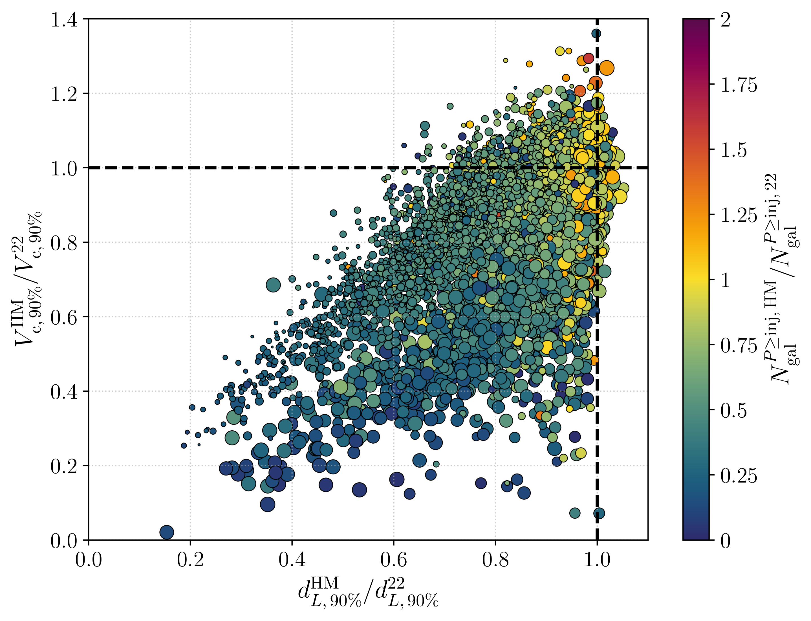
图注：Accurate distance and volume estimates determine how efficiently observers can search for EM counterparts or host galaxies. We show the HM-to-$(2,2)$ ratio of the 90\% c.l. width of the $d_L$ posterior and the 90\% c.l. localization comoving volume for all analyzed NSBH systems; color gives the corresponding ratio of candidate galaxies followed up before reaching the true host (smaller is better), and point size scales with viewing angle. Including HMs usually shrinks the distance--volume search space and reduces the host-galaxy follow-up burden.
对应解读：建议重点查看的图表第4、5项；关键图表逐图导读图4/图5；详细解读中关于三维定位、宿主星系关联和电磁跟进效率的关键结果。
入选理由：这张图直接给出高阶模相对四极矩-only 对90%光度距离宽度、90%共动定位体积和候选宿主星系数量的改善，是判断方法是否真正提升电磁跟进效率的核心证据。它同时覆盖日报强调的V90体积比值、中位趋势、长尾和宿主星系筛选负担，比单个事件后验更能支撑总体结论。
来源与置信度：\(arxiv_source\)；high；\(arxiv_source\) / Main.tex:figure[2]
Fig01
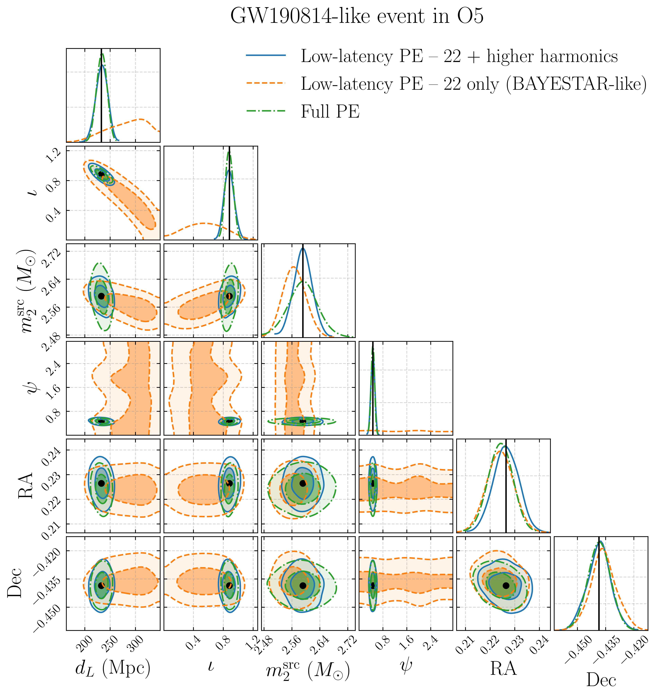
图注：Low-latency PE for a GW190814-like injected signal in a LIGO--Virgo network at O5 design sensitivity. We compare our method including higher harmonics with a quadrupole-only analysis similar to those currently used in low-latency LVK pipelines. We also show full PE results from \href{https://github.com/bilby-dev/bilby}{\texttt{bilby}}. Including HMs recovers the full-PE luminosity-distance and inclination posteriors much more faithfully, while also improving polarization and mildly improving $m_2^{\rm src}$.
对应解读：建议重点查看的图表第3项；关键图表逐图导读图3；模型拟合段落中关于D_L–倾角退化、高阶模后验收缩以及与完整PE比较的讨论。
入选理由：该图展示GW190814-like注入的低延迟高阶模、四极矩-only和完整bilby参数估计对比，直接检验高阶模是否能恢复更可信的光度距离和倾角后验。它最适合作为代表性事件二维/边缘后验图，用来说明距离—倾角退化如何被逐模滤波打破。
来源与置信度：\(arxiv_source\)；high；\(arxiv_source\) / Main.tex:figure[1]
Fig05
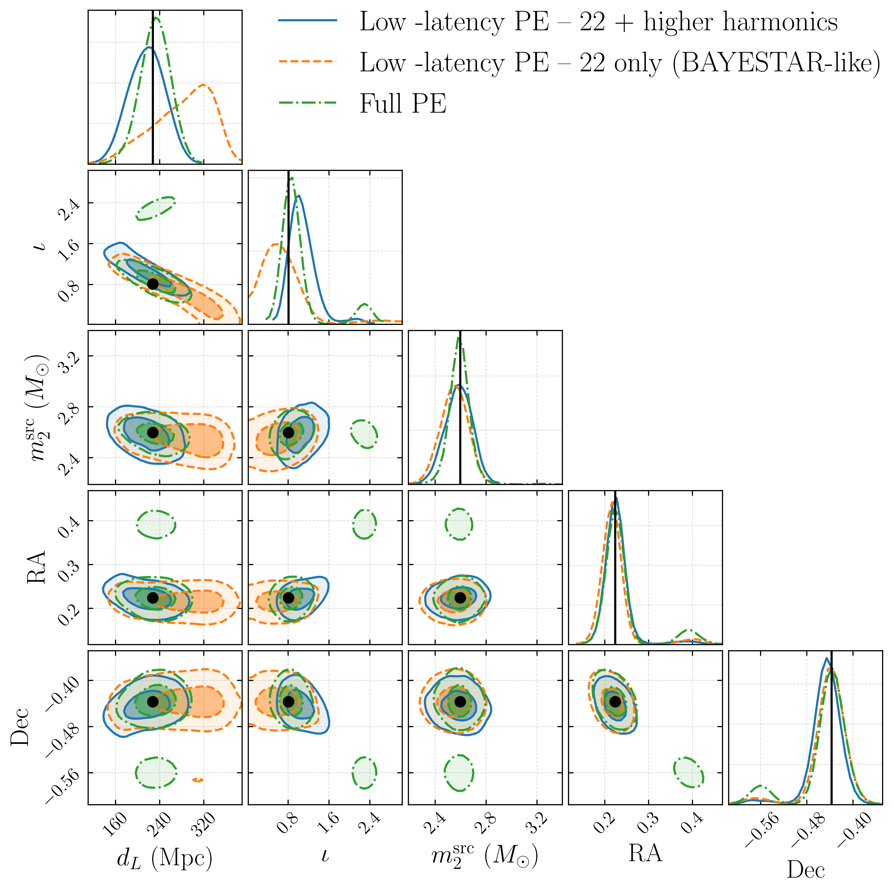
图注：We use our method on the noisy LIGO--Virgo strain data of GW190814 as a real-data test of our method. The black vertical lines show the full-PE posterior sample with the highest matched-filter SNR. We see that HMs move the low-latency posterior toward the full-PE preference for smaller distance and better constrained inclination.
对应解读：建议重点查看的图表第6项；关键图表逐图导读图6；详细解读中关于GW190814真实数据验证的段落。
入选理由：这是论文在真实LIGO–Virgo应变数据上验证方法的关键图，尤其对应日报反复强调的GW190814。它比较低延迟高阶模结果与四极矩-only及完整PE偏好的关系，可检查距离、倾角后验是否向公开完整分析靠拢，因而比纯模拟结果更能说明方法的实际可用性。
来源与置信度：\(arxiv_source\)；high；\(arxiv_source\) / Main.tex:figure[5]
Fig03
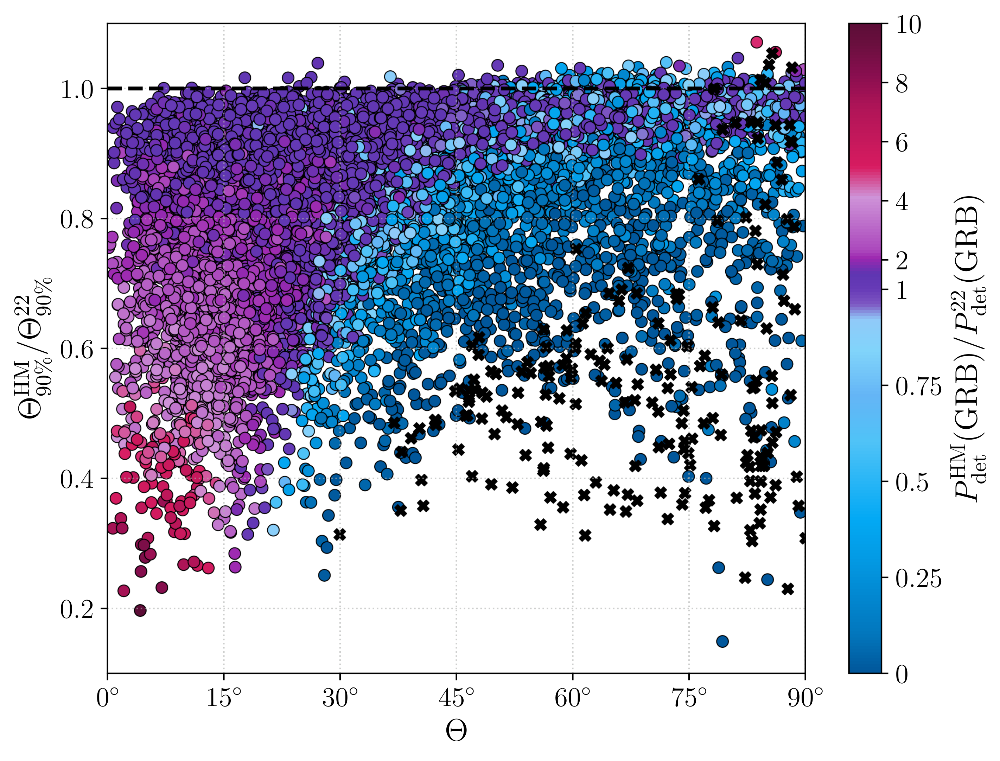
图注：The viewing/inclination angle $\Theta$ controls whether a relativistic jet is likely to be visible, so rapid constraints on $\Theta$ directly affect GRB follow-up decisions. We show the injected $\Theta$ and the HM-to-$(2,2)$ ratio of the posterior width on $\Theta$; color gives the ratio of the {\(\it\) Swift}-BAT GRB-detection probability from Eq.~\(\eqref{eq:f_grb},\) and black crosses mark events with vanishing probability in both analyses. We see that HMs sharpen viewing-angle inference and can correctly strengthen or weaken the case for rapid GRB follow-up, depending on the reconstructed orientation.
对应解读：建议重点查看的图表第5项；关键图表逐图导读图5；详细解读中关于视角、GRB可见性和快速电磁跟进决策的讨论。
入选理由：该图把视角/倾角约束改善与Swift-BAT伽暴探测概率联系起来，正好对应日报中‘是否从不值得跟变为值得跟’的电磁可见性问题。它不仅显示参数误差缩小，还展示这种缩小如何改变GRB跟进判断，是连接引力波参数估计和多信使决策的重要图。
来源与置信度：\(arxiv_source\)；high；\(arxiv_source\) / Main.tex:figure[3]
Fig04
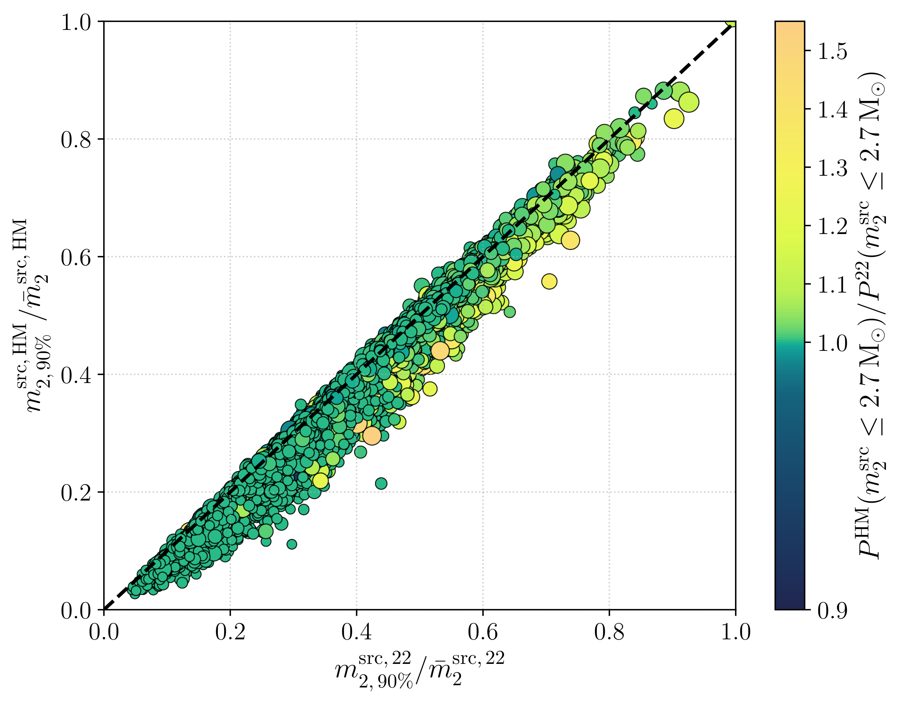
图注：The source-frame secondary mass helps determine whether the lighter object is plausibly a NS and whether tidal disruption could power a kilonova. We compare relative uncertainties on $m_2^{\rm src}$ with HMs ($y$-axis) and without HMs ($x$-axis); color gives the ratio of $P(m_2^{\rm src}<2.7\,{\rm M}_\odot)$ (larger is more accurate), and point size scales with the injected $m_2^{\rm src}$. We see that HMs give modest but useful gains in secondary-mass classification, especially for heavier $m_2^{\rm src}$.
对应解读：建议重点查看的图表第3、5项；关键图表逐图导读图5；模型拟合段落中关于源系次级质量m_{2,src}、NS分类和潮汐瓦解可能性的讨论。
入选理由：这张图直接比较加入高阶模前后源系次级质量不确定度，并用P(\(m_2^{src}<2.7\) \(M_sun\))衡量中子星分类概率变化。它支撑日报中‘m_{2,src}改善会影响电磁对应体和千新星判断’的论点，是物理分类层面的核心证据。
来源与置信度：\(arxiv_source\)；high；\(arxiv_source\) / Main.tex:figure[4]
Fig06
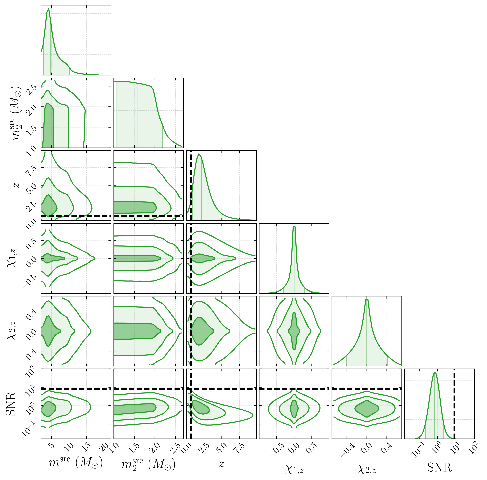
图注：In the main text, we tested our low-latency HM pipeline on mergers detected in 100 simulated one-year NSBH catalogs with O5 LIGO--Virgo design-sensitivity network. Here, we show the intrinsic parameters, redshift, and SNR of all the events (detected+undetected) in the combined set of our catalogs; dashed lines mark the furthest detected-event redshift and the SNR threshold.
对应解读：建议重点查看的图表第1项；关键图表逐图导读图2；详细解读中关于模拟NSBH样本、选择效应和高阶模收益适用区域的讨论。
入选理由：该图展示模拟星表中事件的内禀参数、红移和SNR，并标出探测阈值与最远探测红移，可用于判断样本是否偏向高质量比、高信噪比或近距离等高阶模容易发挥作用的区域。虽然它不直接展示后验改善，但对理解选择效应和结果适用范围很重要。
来源与置信度：\(arxiv_source\)；high；\(arxiv_source\) / Main.tex:figure[6]
强相关工作
这篇工作与几条文献线直接相连。第一是低延迟天空定位和参数估计，例如 BAYESTAR、LALInference、RapidPE、RIFT 等快速或半快速框架；这些工作解决的是如何从探测器网络快速得到天空位置和参数后验。本文的增量在于把高阶模信息以逐模摘要量放入低延迟场景，而不是只在离线完整参数估计中使用。
第二是高阶模在真实事件中的观测证据。GW190412 和 GW190814 都显示质量不对称系统中高阶模对参数估计有实质影响，尤其是质量比、倾角和距离。本文可看作把这些离线分析经验转译到 NSBH 多信使告警的实时需求中。检索关键词可用 “higher order modes gravitational waves”, “mode-by-mode filtering”, “NSBH electromagnetic follow-up”, “GW190814 higher modes”, “low latency parameter estimation gravitational waves”。
第三是 NSBH 电磁对应体理论和事件目录。GW200105、GW200115 是 LIGO–Virgo–KAGRA 报告的 NSBH 事件；GW170817 虽是双中子星，但建立了三维定位、电磁跟进和宿主星系关联的操作范式。本文与这些工作的关系不是重复发现事件，而是提高未来 NSBH 告警的物理可用性。
潜在相反观点或张力在于：低延迟分析是否应加入更复杂物理，还是应保持稳健、简单、保守。高阶模信息在低信噪比下可能不稳定，波形系统误差也可能让快速后验过窄。因此应检索 “waveform systematics higher modes”, “coverage low latency gravitational wave parameter estimation”, “NSBH kilonova detectability” 等关键词，关注方法收益与稳健性之间的平衡。
同一事件 / 同类源线索：
- https://arxiv.org/abs/2606.17137
- https://arxiv.org/abs/2006.12611
- https://arxiv.org/abs/2106.15163
- https://arxiv.org/abs/2111.03606
- https://arxiv.org/abs/1710.05832
相似工作：
- https://arxiv.org/abs/1508.03634
- https://arxiv.org/abs/2004.08342
- https://arxiv.org/abs/2006.12611
- https://arxiv.org/abs/2106.15163
基础理论 / 方法工作：
- https://arxiv.org/abs/0805.1726
- https://arxiv.org/abs/0907.0700
- https://arxiv.org/abs/1304.0670
- https://arxiv.org/abs/1710.05832
相反观点 / 张力线索：
9. Are neutrinos Majorana? Fixed-target and high-energy astrophysical searches decide
- 来源：arXiv / astro-ph.HE
- 链接：https://arxiv.org/abs/2606.17132v1
- 作者：Gabriela Barenboim, Mauricio Bustamante, Qinrui Liu
- 评分：novelty 8/10，importance 8/10，relevance 8/10，final 9.00/10
- 推荐理由：提出用GeV HNL实验与TeV--PeV天体中微子味组成联合判定Majorana性质；虽偏粒子物理，但明确涉及高能天体中微子望远镜和可观测信号。
中文题目：中微子是 Majorana 粒子吗？用固定靶实验和高能天体中微子联合判定
做了什么：这篇文章提出一种不依赖无中微子双贝塔衰变的 Majorana 判据：如果存在 \(\mathrm{GeV}\) 量级重中性轻子 \(N\)，且轻中微子是 Majorana 粒子，那么在足够高能的中微子散射中，\(N\) 可被“解析”出来，导致有效的活动味混合比例在高能端发生可观测偏移。作者设想先由 SHiP 这类束流 dump 实验发现 \(N\) 并测量它与 \(\nu_e,\nu_\mu,\nu_\tau\) 的混合，再由 \(\mathrm{TeV}\)–\(\mathrm{PeV}\) 天体中微子望远镜测量到达地球的味比例偏移。若两类实验给出相关信号，将构成 Majorana 性质的直接证据；若 SHiP 看见 \(N\) 而高能味比例不出现相应偏移，则倾向 Dirac 情形。
为什么重要：Majorana 问题通常被等同于寻找无中微子双贝塔衰变，但该通道主要探测电子味，并可能因相位抵消或质量排序造成“盲区”。本文重要之处在于把判据转移到 \(\mu\) 味和 \(\tau\) 味更敏感的高能散射与天体中微子味组成上，给出一个与传统核过程互补、且原则上能避开 \(0\nu\beta\beta\) 盲区的检验。
理论 / 观测 / 仪器方法价值：对理论而言，文章把重中性轻子混合矩阵、轻中微子 Majorana/Dirac 性质和高能味传播联系成一个可检验的框架。对观测而言，它把 SHiP 的实验室测量与 IceCube-Gen2、KM3NeT、Baikal-GVD 等下一代中微子望远镜的味分辨能力连接起来。对方法而言，它强调不能只问“源端味比例是什么”，而要寻找一种对未知源端组成仍稳健的能量依赖味偏移。
为什么应该关注：如果你关心中微子质量起源、轻子数是否守恒、跷跷板机制或高能中微子天文学，这篇文章值得看，因为它把一个粒子物理根本问题变成了多信使高能观测中的可测量量。它也提醒天体中微子味比例不只是源物理诊断工具，还可能携带超出标准模型的中微子传播和相互作用信息。
展开详细解读：文章讲解、背景、理论、重点章节、图表与相关工作
文章详细讲解
科学问题：中微子到底是 Dirac 费米子还是 Majorana 费米子，等价地说，轻子数 \(L\) 是否是严格守恒量。传统主战场是无中微子双贝塔衰变 \(0\nu\beta\beta\)，它寻找 \((A,Z)\to(A,Z+2)+2e^-\) 而没有反中微子的过程。如果发生，就说明 \(\Delta L=2\)，从而轻中微子有 Majorana 成分。但 \(0\nu\beta\beta\) 的有效质量主要由电子味矩阵元控制，可能在参数空间中因 Majorana 相位抵消而变小；即使中微子是 Majorana，也可能长时间看不到信号。
作者怎么做：本文引入 \(\mathrm{GeV}\) 量级重中性轻子 \(N\) 作为新探针。这样的 \(N\) 可在束流 dump 实验 SHiP 中通过衰变或散射信号被发现，并可测量其与活动味 \(\nu_e,\nu_\mu,\nu_\tau\) 的混合强度。关键思想是：如果轻中微子和 \(N\) 处在 Majorana 框架下，高能天体中微子与物质散射时可以解析中间的 \(N\) 自由度，使味空间中的有效传播或相互作用结构在高能端发生改变；如果是 Dirac 情形，同样的高能味偏移不存在或不以同样方式出现。
关键结果：作者声称，实验室固定靶测得的 \(N\) 混合模式与高能天体中微子味比例偏移之间存在可计算的相关性。天体中微子源端味组成通常未知，例如可能接近 pion beam 的 \((\nu_e:\nu_\mu:\nu_\tau)_S\simeq(1:2:0)\)，也可能是 muon-damped 或 neutron-beam 类型；本文强调其 proposed observable 可以在相当程度上不依赖源端未知组成，因为 Majorana 引起的是能量相关的 flavor-shift，而不是单一静态 flavor point。最敏感的方向落在 \(\mu\) 味和 \(\tau\) 味扇区，因此与 \(0\nu\beta\beta\) 的电子味限制互补。
局限和下一步：这个方案依赖两个条件同时成立：\(\mathrm{GeV}\) 量级 \(N\) 位于 SHiP 可达参数空间内，且下一代高能中微子望远镜能够以足够精度测量味比例及其能量依赖。实际观测还会受源模型混合、探测器对 track/cascade/double-bang 的分类误差、地球吸收、截面不确定性和大气背景影响。下一步需要把 SHiP 的预期后验、天体中微子事件级似然、不同源族群的能谱与红移分布，以及系统误差统一进联合 forecast，而不仅是展示理想化参数区。
关键结果是怎么做出来的
本文最重要的证据链不是一个已经观测到的事件，而是一个可检验的联合判据。第一步是假设存在 \(\mathrm{GeV}\) 量级重中性轻子 \(N\)，其质量 \(m_N\) 和混合 \(|U_{\alpha N}|^2\) 落在 SHiP 这类高强度质子束 dump 实验的灵敏区间内。SHiP 可通过重味介子、轻介子或 \(\tau\) 衰变产生 \(N\)，再通过其在下游探测器中的可见衰变道重建质量、寿命和味耦合。论文的逻辑是：先由固定靶实验把 \(N\) 的存在和低能混合矩阵部分钉住。
第二步是把这些混合参数带入高能天体中微子的散射和有效味演化。高能天体中微子样本通常按沉积能量、到达方向和事件形态分成 track、cascade、可能的 \(\tau\) 双亮斑或其他 \(\tau\) 候选。本文关注的不是总通量异常，而是到达地球的味比例 \(f_{e,\oplus}, f_{\mu,\oplus}, f_{\tau,\oplus}\) 随能量出现与 \(N\) 混合结构相关的偏移。由于标准三味振荡在宇宙学基线下相干性已平均，标准情形给出近似能量无关的味映射；任何与 \(m_N\) 阈值或解析尺度相关的高能偏移都更容易被识别为新物理。
第三步是统计判别。论文所设想的检验可表述为比较两个假设：\(H_M\) 为 Majorana 中微子并含有可解析 \(N\) 所导致的高能味偏移，\(H_D\) 为 Dirac 情形或无该偏移。实际 forecast 会使用 flavor triangle 中的置信区域、事件形态计数似然，或能量分箱的多项式/泊松似然来计算 \(\Delta\chi^2\)、似然比或贝叶斯因子。关键不是单个 flavor point 是否偏离标准值，而是 SHiP 测得的 \(|U_{\alpha N}|^2\) 是否预言了与中微子望远镜相同方向、相同能量尺度的偏移。
支撑结论的图表应包括三类：第一类是 \((m_N, |U_{\alpha N}|^2)\) 平面上 SHiP 可发现区域与现有限制；第二类是 flavor triangle 或 flavor-ratio band，显示 Dirac 与 Majorana 预测是否可分；第三类是随能量变化的 flavor-shift 或显著性曲线，说明为什么 \(\mathrm{TeV}\)–\(\mathrm{PeV}\) 样本能解析效应。稳健性检验应围绕源端味组成、不同天体源模型、标准振荡参数误差、望远镜有效面积和事件误分类展开。
主要系统误差来自两个端点。SHiP 端的系统误差包括 \(N\) 产生率的强子产生不确定性、衰变分支比、探测器几何接受度和背景估计；天体端则包括中微子-核截面、地球传播、能谱形状、各向同性假设、源族群混合和 \(\tau\) 识别效率。本文主张该判据对未知源端 flavor composition 不敏感，但读者应检查这种不敏感性是否在极端源模型、宽能谱和有限统计下仍成立。
展开背景、理论、公式、模型、章节和图表导读
背景知识
研究对象是中微子 Majorana 性质和重中性轻子。若中微子是 Dirac 粒子，左手中微子和右手反中微子是不同自由度，通常可赋予守恒轻子数。若中微子是 Majorana 粒子，粒子与反粒子在中性费米子意义上相同，质量项本身可违反轻子数 \(\Delta L=2\)。这不仅是分类问题，还直接关系到轻中微子质量为什么远小于其他费米子质量。
历史上，最经典的检验是 \(0\nu\beta\beta\)。该过程的优点是概念清楚：若发现，轻子数守恒被破坏，Schechter-Valle black-box 定理保证中微子具有 Majorana 质量项。缺点是它主要探测电子味组合 \(m_{\beta\beta}=|\sum_i U_{ei}^2 m_i|\)，对 \(\mu\) 味和 \(\tau\) 味信息间接；同时核矩阵元、同位素背景和 Majorana 相位抵消使解释并不简单。
重中性轻子 \(N\) 是许多中微子质量模型的自然产物，尤其是低尺度跷跷板、inverse seesaw、linear seesaw 或更一般的 sterile-neutrino 扩展。\(\mathrm{GeV}\) 质量区间特别有实验吸引力，因为它既可由强子或重味介子衰变产生，又可能在长寿命粒子探测器中留下 displaced decay。SHiP、DUNE near detector、NA62、FASER2、MATHUSLA 等实验都在不同区域寻找这类粒子。
为什么现在值得重新看：IceCube 已经建立了天体中微子通量，且下一代探测器将显著增加 \(\mathrm{TeV}\)–\(\mathrm{PeV}\) 事件数并改善 flavor tagging。过去天体中微子 flavor 多用于区分源端加速机制，例如 pion beam、muon-damped 或 neutron beam；本文把它提升为检验中微子本性的工具。与此同时，固定靶实验将给出实验室可控的 \(N\) 参数测量，使天体端不再只是无模型搜索。
常见误区之一是把“没有看到 \(0\nu\beta\beta\)”理解成“中微子不是 Majorana”。这并不成立，因为 \(m_{\beta\beta}\) 可能因相位和质量排序而很小，或者主导机制并非轻中微子交换。另一个误区是认为天体中微子 flavor 测量只能告诉我们源端组成；实际上，只要传播或相互作用包含新自由度，flavor ratio 也会成为新物理探针。还有一个误区是把 sterile neutrino 和 HNL 一概而论；不同质量、寿命、混合和宇宙学约束使其物理图像差异很大。
基础理论 / 方法脉络
基础图像从三味振荡开始。天体中微子传播距离远大于振荡相干长度，因而相位平均，源端味比例 \(f_{\alpha,S}\) 到地球味比例 \(f_{\beta,\oplus}\) 的映射由 \(P_{\alpha\beta}=\sum_i |U_{\alpha i}|^2 |U_{\beta i}|^2\) 控制。这一标准映射基本不随能量变化，因此在 flavor triangle 上给出相对窄的一片区域。
引入重中性轻子 \(N\) 后，活动味态不再只投影到三个轻质量本征态，还含有很小的重态成分。混合参数通常写作 \(U_{\alpha N}\)，其中 \(\alpha=e,\mu,\tau\)。在低能弱过程里，\(|U_{\alpha N}|^2\) 控制 \(N\) 的产生率和衰变率；在高能散射中，如果动量转移足以解析 \(m_N\)，重态可作为真实或虚中间态改变有效味结构。
Dirac 与 Majorana 的差别在于可允许的手征、轻子数和粒子-反粒子通道。Majorana \(N\) 同时耦合到中微子和反中微子型通道，因此会打开某些 \(\Delta L=2\) 或等效的 flavor-reshuffling 贡献；Dirac 情形中轻子数守恒会禁止或抵消这些贡献。本文利用的是这种“只有 Majorana 才有”的高能 flavor shift，而不是单纯寻找一个 sterile state。
观测上，天体中微子的 flavor 不是逐个事件精确测量，而是由事件形态统计反推。\(\nu_\mu\) charged-current 事件偏向长 track，\(\nu_e\) charged-current 和大多数 neutral-current 事件偏向 cascade，\(\nu_\tau\) 在高能可出现 double-bang、lollipop 或特定 cascade 拓扑。flavor inference 因此依赖有效面积矩阵、能量响应、角分辨率、背景模型和截面模型。
主要退化包括源端 flavor composition 与传播新物理的退化、能谱指数与 flavor 分箱的退化、\(\nu\) 与 \(\bar\nu\) 比例的退化、以及 \(\tau\) 识别效率与 \(f_{\tau,\oplus}\) 的退化。本文的策略是用 SHiP 先约束 \(N\) 参数，再要求天体端出现相关能量依赖特征，从而压缩这些退化。
公式与推导
第一步是标准三味相干平均传播。设源端 flavor fraction 为 \(f_{\alpha,S}\)，满足 \(\sum_\alpha f_{\alpha,S}=1\)。宇宙学基线下振荡相位平均后，地球端为
这里 \(U_{\alpha i}\) 是 \(3\times3\) PMNS 矩阵元。该式给出无新物理时 flavor triangle 中的基准区域。
第二步加入一个重中性轻子 \(N\)。弱相互作用味态可写成轻态与重态叠加，近似为
这里 \(m_N\) 是重态质量，\(U_{\alpha N}\) 控制 \(N\) 与带电轻子 \(\ell_\alpha\) 或活动中微子的耦合强度。低能实验主要测 \(|U_{\alpha N}|^2\)，高能散射则可能对 \(m_N\) 阈值敏感。
第三步是固定靶产生和衰变的缩放关系。若母粒子 \(M\) 通过弱衰变产生 \(N\)，粗略有
其中 \(N_M\) 是母粒子数，\(\epsilon_{\rm det}\) 是探测效率，\(P_{\rm dec}\) 是 \(N\) 在衰变体积内衰变的概率。通常 \(\mathrm{Br}(M\to \ell_\alpha N+X)\propto |U_{\alpha N}|^2\)。
第四步是长寿命粒子的几何概率。若 \(N\) 的实验室衰变长度为 \(\lambda_N=\gamma_N\beta_N c\tau_N\)，从屏蔽区后 \(L_1\) 到衰变体积末端 \(L_2\) 的概率为
寿命 \(\tau_N\) 又由总宽度 \(\Gamma_N\) 决定，\(\tau_N=1/\Gamma_N\)。在 \(\mathrm{GeV}\) 质量区间常有 \(\Gamma_N\) 随 \(m_N^5\sum_\alpha |U_{\alpha N}|^2\) 近似增长。
第五步是 Majorana 与 Dirac 对高能 flavor kernel 的区别。可把新物理写成能量依赖的传播或散射核
本文的核心是 \(\Delta P_{\alpha\beta}^{M}(E)\neq0\) 且可与 \(U_{\gamma N}\) 相关，而 Dirac 情形中相应项 \(\Delta P_{\alpha\beta}^{D}(E)\) 缺失、受抑或具有不同结构。
第六步可用一个解析阈值因子表示高能可解析性，例如
其中 \(C_{\alpha\beta}\) 汇集手征和通道系数，\(R(E,m_N)\) 描述当散射不变量 \(s\) 或动量转移 \(Q^2\) 足够接近 \(m_N^2\) 时的增强或开启。这个式子不是普适精确公式，而是帮助读者理解为什么 flavor shift 与 SHiP 测得的混合强度相关。
第七步把 flavor fraction 转成望远镜事件数。对事件类别 \(c\) 和能量分箱 \(k\)，期望计数为
其中 \(T\) 是曝光时间，\(\Phi_\beta(E)=f_{\beta,\oplus}(E)\Phi_{\rm tot}(E)\)，\(A_{\beta c}^{\rm eff}\) 是有效面积与分类响应，\(b_{ck}\) 是背景。
第八步是统计判别。对分箱计数 \(n_{ck}\)，泊松似然为
比较 Majorana 假设 \(H_M\) 与 Dirac 假设 \(H_D\) 可用
若 \(H_M\) 的 \(m_N\) 和 \(U_{\alpha N}\) 同时被 SHiP 与天体 flavor 数据支持，而 \(H_D\) 无法拟合同一能量依赖偏移，就形成本文所谓的判定性相关信号。
模型拟合 / 应用方法
这类工作的拟合可分为实验室端和天体端。实验室端的参数是 \(m_N\)、\(|U_{eN}|^2\)、\(|U_{\mu N}|^2\)、\(|U_{\tau N}|^2\)，以及可能的相位、衰变分支比和总寿命。SHiP 的观测量包括候选衰变顶点数、重建不变质量、衰变长度分布和末态 flavor 组成。似然通常是带有背景项的泊松计数似然，并乘以形状信息，例如顶点位置和不变质量分布。
天体端的拟合量包括总通量归一化、谱指数、可能的 cutoff、源端 flavor fraction、到达地球的 flavor fraction，以及新物理参数给出的 \(Δ P_{\alpha\beta}^{M,D}(E)\)。事件级分析会用每个事件的能量代理、天顶角、拓扑类别和质量变量；简化 forecast 则使用 track/cascade/\(\tau\)-tag 分箱计数。关键诊断是残差是否集中在 flavor-sensitive categories，而不是只表现为总通量归一化偏差。
参数退化非常重要。源端 \((1:2:0)_S\)、\((0:1:0)_S\) 和 \((1:0:0)_S\) 经标准振荡后在地球端相差有限，有限统计下可能互相混淆。谱指数变硬或变软会改变不同能量分箱中的事件权重，从而伪装成能量依赖 flavor shift。\(\nu_\tau\) 识别效率、neutral-current 事件比例和大气 muon 背景也会与 \(f_{\tau,\oplus}\) 或 \(f_{\mu,\oplus}\) 相关。
本文方案的优势是联合拟合：SHiP 端给出 \(N\) 的先验或测量后验，天体端只需检验相应的 flavor-shift pattern。实际应用中可构造联合似然 \(\mathcal{L}_{\rm joint}=\mathcal{L}_{\rm SHiP}\mathcal{L}_{\nu\,\rm astro}\mathcal{L}_{\rm ext}\)，其中 \(\mathcal{L}_{\rm ext}\) 包含现有束流、峰值搜索、弱衰变、宇宙学或电弱精密限制。若联合后验在 Majorana 模型中收敛，而 Dirac 模型需要极端源端 flavor 或探测器 nuisance 才能解释，就构成强证据。
模型可能失败的方式也很清楚。若 HNL 有额外暗衰变通道，SHiP 测得的寿命和可见分支比不再直接映射到天体散射核。若有多个近简并 \(N\) 态，Dirac-like pseudo-Dirac 结构可能部分恢复轻子数守恒，使 Majorana 信号受抑。若天体中微子来自多个源族群混合，且各族群 flavor 和谱形不同，简单的单源端 fraction 模型会低估系统误差。
重点章节 / 结果段落怎么读
-
引言和物理动机：应重点看作者如何界定 \(0\nu\beta\beta\) 的盲区，以及为什么 \(\mu\) 味、\(\tau\) 味扇区的 Majorana 检验有独立价值。这里不要只看“互补”这个词，要检查互补性具体来自 flavor 结构还是来自实验系统误差不同。
-
HNL 模型设置：读者应找出作者采用的是单个 \(\mathrm{GeV}\) 量级 \(N\)，还是更一般的 sterile sector；Majorana 与 Dirac 情形如何在拉氏量、混合矩阵或允许散射通道中区分；\(|U_{\alpha N}|^2\) 是否被当作独立参数，是否满足现有限制。
-
SHiP 灵敏度和参数重建：这一部分要关注 \(N\) 的产生通道、衰变通道、几何接受度和背景假设。特别要看作者是否只是使用公开灵敏度曲线，还是模拟了 flavor mixing reconstruction；后者对联合判据更关键。
-
高能天体中微子 flavor shift：这是全文核心。应检查 flavor shift 如何随 \(E\)、\(m_N\) 和 \(U_{\alpha N}\) 变化，是否真的对源端 flavor composition 稳健，以及 Dirac/Majorana 两类预测在 flavor triangle 或事件分类空间中是否分离。
-
统计显著性和展望：读者应看作者采用了哪些下一代望远镜假设，例如曝光时间、有效面积、\(\tau\) 识别能力和能量分辨率。还应检查系统误差是否被 profile 或 marginalize，而不是只用理想统计误差。
建议重点查看的图表
-
\((m_N, |U_{\alpha N}|^2)\) 灵敏度图：看 SHiP 可发现区域、现有限制、以及本文 flavor-shift 可检验区域是否真的重叠。
-
HNL flavor mixing pattern 图：看 \(|U_{eN}|^2:|U_{\mu N}|^2:|U_{\tau N}|^2\) 的不同组合如何影响 Majorana 判据，尤其是否偏向 \(\mu\) 和 \(\tau\) 扇区。
-
高能 flavor triangle：看标准三味振荡区域、Dirac 预测区域和 Majorana 预测区域是否分离；注意置信椭圆是否包含源端不确定性。
-
flavor shift 随能量变化曲线：看偏移是否在 \(\mathrm{TeV}\)–\(\mathrm{PeV}\) 真实可观测范围内达到最大，还是只在统计很差的极高能端显著。
-
事件类别计数或残差图：看 track、cascade、\(\tau\)-tag 事件的残差方向是否与 flavor shift 一致，而不是可由总通量或谱指数吸收。
-
显著性或 \(\Delta\chi^2\) 图：看 Majorana 与 Dirac 模型比较是否经过 look-elsewhere、nuisance profiling 和源端 flavor marginalization。
-
系统误差稳健性表：看改变源模型、有效面积、\(\tau\) 识别效率、截面和背景后，结论是否仍保持。
关键图表逐图导读
图 1：通常应是 \(m_N\) 横轴、\(|U_{\alpha N}|^2\) 纵轴的参数空间图。数据线可能包括现有束流限制、峰值搜索、LEP 或弱衰变限制，以及 SHiP projected sensitivity。读图时要看本文需要的参数点是否位于“可发现”而非仅“可排除”的区域；还要注意不同 flavor mixing 假设下曲线会明显移动。
图 2：若论文展示 HNL 混合模式或 benchmark points，应检查三味混合的归一化方式。坐标可能是 \(|U_{eN}|^2\)、\(|U_{\mu N}|^2\)、\(|U_{\tau N}|^2\) 或其比值。主要结论应是 Majorana flavor shift 对 \(\mu\) 与 \(\tau\) 混合更敏感。陷阱是只看总混合 \(U^2=\sum_\alpha |U_{\alpha N}|^2\) 会掩盖 flavor pattern。
图 3：高能天体中微子 flavor triangle 是关键图。三个顶点对应纯 \(\nu_e\)、纯 \(\nu_\mu\)、纯 \(\nu_\tau\) 到达地球比例，标准振荡会把常见源模型映射到中心附近。应看 Majorana 预测带是否偏离标准区域，并且这种偏离是否大于下一代望远镜的置信区间。读图陷阱是 flavor triangle 上的视觉距离不等于实际似然距离，因为不同方向的实验响应不同。
图 4：能量依赖 flavor-shift 图应以中微子能量 \(E\) 为横轴，以 \(\Delta f_\alpha(E)=f_{\alpha,\oplus}^{M}(E)-f_{\alpha,\oplus}^{D/\rm std}(E)\) 或类似量为纵轴。应关注偏移出现的能区是否与有效面积最大、背景最低、\(\tau\) 识别可行的能区重合。若偏移只在事件数很少的 \(\mathrm{PeV}\) 以上出现，统计意义会被削弱。
图 5：若有事件计数或 residual plot，横轴通常是能量分箱或事件类别，纵轴是观测/预期比值、pull 或残差。Majorana 信号应在 flavor-sensitive categories 中呈现一致模式，例如 track 与 cascade 的相对变化、\(\tau\) 类事件的增减。陷阱是总通量归一化、谱指数变化或 detector acceptance 误差也能产生类似单调残差，需要看 nuisance parameters 是否已 profile。
图 6：显著性图可能展示 \(\Delta\chi^2\)、置信水平或 discovery reach 随 \(m_N\)、\(|U_{\alpha N}|^2\)、曝光时间变化。应读出在何种望远镜配置下可达到 \(3\sigma\) 或 \(5\sigma\) 区分，以及这个结论是否依赖乐观的 \(\tau\)-tagging。若图中未包含源端 flavor marginalization，显著性通常偏乐观。
论文原图 / 可嵌入图片
Fig05
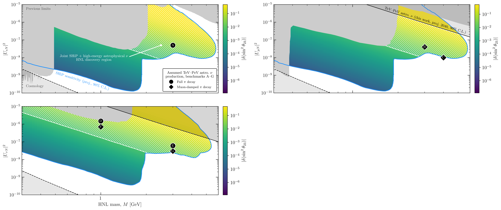
图注：\(\textbf{Joint SHiP and high-energy astrophysical neutrino HNL discovery window.}\) The color fill shows the mass-threshold correction to the neutrino mixing angle $|\delta(\sin^2\theta_{23})|$, restricted to the interior of the SHiP 90\%~C.L. sensitivity~\(\cite{SHiP:2018xqz}.\) Previous limits are from colliders and cosmology, as summarized in \(\Refe\)~\(\cite{Fernandez-Martinez:2023phj}\); we use \(\Refe\)~\(\cite{hnl_github}\) to import them. The new projected limits from TeV--PeV astrophysical neutrinos are derived in Sec.~\(\ref{sec:limits_and_discovery-results}\); we show them specifically assuming neutrino production via full pion decay. The joint discovery region is where SHiP-measured HNL parameters imply shifts to the flavor composition of astrophysical neutrinos that are allowed by present measurements and discoverable by future ones. Benchmark points A--G (Table~\ref{tab:benchmark_points}) are selected to illustrate joint HNL discovery prospects later. See Sec.~\(\ref{subsec:window}\) for details.
对应解读：“建议重点查看的图表”第1项；“关键图表逐图导读”图1；联合 SHiP 与天体中微子 discovery window 段落。
入选理由：这张图直接给出横轴 HNL 质量、纵轴主动-惰性混合强度参数空间，并叠加 SHiP 90% C.L. 灵敏度、既有限制、TeV–PeV 天体中微子投影限制和本文定义的 joint discovery region，是判断固定靶发现区与 flavor-shift 可检验区是否重叠的核心证据。相比单独展示阈值修正或 flavor 比例的图，它最能支撑日报关于“实验室端与天体端相关信号”的主结论。
来源与置信度：\(arxiv_source\)；high；\(arxiv_source\) / main.tex:figure[5]
Fig12
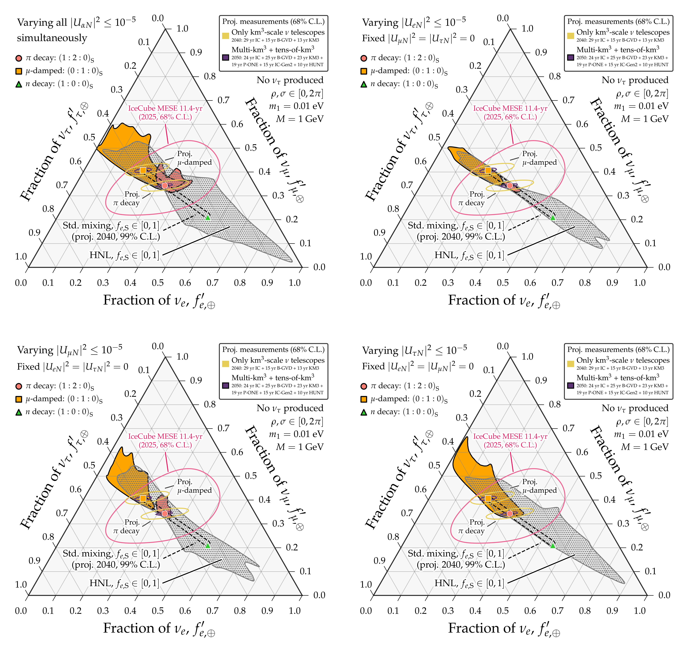
图注：\(\textbf{Allowed regions of high-energy neutrino flavor composition at Earth induced by mixing with a heavy neutral lepton (HNL).}\) The electron flavor composition at the sources is varied over all possible values, $f_{e, {\rm S}} \in [0,1]$, assuming no initial $\nu_\tau$ production ($f_{\tau,S} = 0$). \(\textit{Top left:}\) All three active-sterile mixing parameters $|U_{\alpha N}|^2$ are varied simultaneously up to $10^{-5}$. \(\textit{Other panels:}\) Only a single parameter---$|U_{e N}|^2$ (\textit{top-right}), $|U_{\mu N}|^2$ (\textit{bottom-left}), or $|U_{\tau N}|^2$ (\textit{bottom-right})---is varied, while the other two are fixed to zero. The flavor ratios, $f_{\alpha, \oplus}^\prime$, are averaged over $Q$ and renormalized following \(\equ{renormalized_fraction}.\) The allowed regions are generated for $M=1$~GeV and $m_1=0.01$~eV, varying the CP-violation Majorana phases, $\rho, \sigma \in [0, 2\pi]$.
对应解读：“建议重点查看的图表”第3项；“关键图表逐图导读”图3：高能天体中微子 flavor triangle 与源端不确定性。
入选理由：该图展示 HNL 混合诱导的到达地球 flavor composition 允许区域，并显式扫描源端电子味比例以及 Majorana 相位，能检验日报中强调的源端 flavor 不确定性是否已被纳入。四个面板分别对应全 flavor 混合和单一 e、μ、τ 混合，尤其适合说明 muon/tau 扇区对 flavor 区域的影响。
来源与置信度：\(arxiv_source\)；high；\(arxiv_source\) / main.tex:figure[12]
Fig08
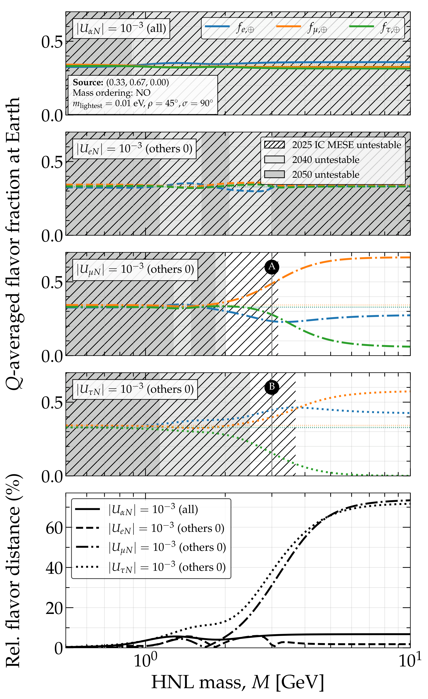
图注：\textbf{Dependence of the flavor composition at Earth on the heavy neutral lepton (HNL) mass, $M$.} In this plot, we assume neutrino production via full pion decay and set nonzero couplings to an illustrative value of $10^{-3}$. \(\textit{Top panel:}\) Assuming flavor-universal couplings, \(\ie,\) $|U_{e N}| = |U_{\mu N}| = |U_{\tau N}|$. \(\textit{Next three panels:}\) Assuming electron-philic (only $|U_{e N}|$ nonzero), muon-philic (only $|U_{\mu N}|$ nonzero), and tau-philic ($|U_{\tau N}|$ nonzero) couplings. \(\textit{Bottom panel:}\) Relative flavor distance. Shaded gray bands denote regions where the predicted flavor shift induced by the threshold correction falls below projected multi-detector flavor measurements in the years 2040 and 2050. The mass ordering is normal (NO) and the standard mixing parameters are set to their NuFIT 6.1 best-fit values (with Super-Kamiokande atmospheric data). \(\textbf{For production via full pion decay, the muon- and tau-philic scenarios yield large effects, while the flavor-universal and electron-philic scenarios remain untestable.}\) Points A and B mark examples for which we produce results later. See Sec.~\(\ref{sec:astro_flavor-numerical_results}\) for details.
对应解读：“建议重点查看的图表”第2项和第4项；“关键图表逐图导读”图2与图4；高能 flavor shift 随 HNL 质量和 flavor pattern 的变化。
入选理由：这张图按 flavor-universal、electron-philic、muon-philic、tau-philic 情形比较地球端 flavor composition，并标出未来 2040/2050 多探测器 flavor 测量可分辨区域。它直接支持日报中“Majorana flavor shift 对 μ 和 τ 扇区更敏感、electron-philic 或 universal 情形较难检验”的解读，且用 full pion decay 源模型给出可观测性判断。
来源与置信度：\(arxiv_source\)；high；\(arxiv_source\) / main.tex:figure[8]
Fig07
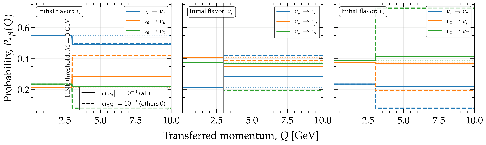
图注：\textbf{Momentum-transfer dependence of the flavor-transition probabilities, $P_{\alpha\beta}(Q)$.} The exact $Q$-dependent probabilities evaluated across the HNL mass threshold ($M = 3$~GeV) with coupling magnitudes of $10^{-3}$. Below the kinematic threshold ($Q < M$), scattering fails to resolve the HNL, and the transitions match the standard-mixing expectation (dotted lines). At $Q = M$, the Majorana correction is triggered, instantly shifting the mixing matrix. A flavor-universal coupling induces modest, flavor-symmetric shifts, while a $\tau$-philic coupling reorganizes the matrix, driving $P_{\tau\tau}$ towards 1.
对应解读：“建议重点查看的图表”第4项；“关键图表逐图导读”图4：阈值触发的能量/动量转移依赖 flavor shift。
入选理由：该图展示 flavor-transition probabilities 随动量转移 Q 穿越 HNL 质量阈值时的变化，明确区分 Q<M 的标准混合与 Q=M 后触发的 Majorana 修正。虽然横轴是 Q 而非直接的天体中微子能量 E，但它是论文中解释 TeV–PeV 散射解析 HNL 后 flavor shift 如何出现的关键诊断图。
来源与置信度：\(arxiv_source\)；high；\(arxiv_source\) / main.tex:figure[7]
Fig03
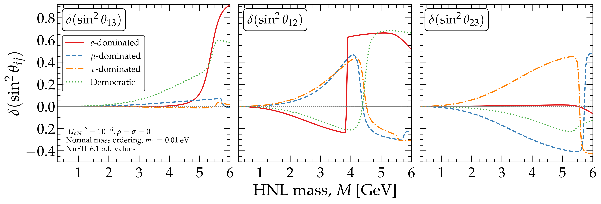
图注：\(\textbf{Majorana mass threshold correction of the neutrino mixing angles.}\) Threshold corrections $\delta(\sin^2\theta_{13})$ (\textit{left}), $\delta(\sin^2\theta_{12})$ (\textit{center}), and $\delta(\sin^2\theta_{23})$ (\textit{right}) as functions of the HNL mass, $M$, computed via full Autonne-Takagi diagonalization. Results are for four benchmark flavor scenarios: electron-philic (only $|U_{e N}|^2$ nonzero), muon-philic (only $|U_{\mu N}|^2$ nonzero), tau-philic (only $|U_{\tau N}|^2$ nonzero), and flavor-democratic (all $|U_{\alpha N}|^2$ nonzero and equal). In all cases, we fix the nonzero $|U_{\alpha N}|^2 = 10^{-6}$ and $\rho = \sigma = 0$ for illustration, and the standard mixing parameters to their best-fit values from NuFIT~6.1~\(\cite{NuFIT6}\) (assuming normal neutrino mass ordering, with Super-Kamiokande atmospheric data). The flavor fingerprint on the corrections is clearly visible: a muon- or tau-philic HNL drives $\delta(\sin^2\theta_{23})$, while an electron-philic HNL drives $\delta(\sin^2\theta_{13})$ and $\delta(\sin^2\theta_{12})$.
对应解读：“建议重点查看的图表”第2项；“关键图表逐图导读”图2：HNL flavor mixing pattern 与混合角阈值修正。
入选理由：该图分别给出 δ(sin²θ13)、δ(sin²θ12)、δ(sin²θ23) 随 HNL 质量 M 的变化，并比较 electron-philic、muon-philic、tau-philic、flavor-democratic 四种 benchmark。它清楚显示 μ/τ 型 HNL 主要驱动 θ23 修正、e 型 HNL 主要影响 θ13 和 θ12，是解释 flavor fingerprint 的基础图。
来源与置信度：\(arxiv_source\)；high；\(arxiv_source\) / main.tex:figure[3]
Fig06
图注：\(\textbf{Mass-threshold correction of the active neutrino mixing angles for a muon-philic HNL.}\) The corrections are $\delta(\sin^2 \theta_{12})$ (\textit{top}), $\delta(\sin^2 \theta_{23})$ (\textit{center}), and $\delta(\sin^2 \theta_{13})$ (\textit{bottom}). In the muon-philic scenario shown here, $|U_{\mu N}|$ is the only non-zero active-sterile mixing element. The SHiP sensitivity and limits are the same as in \(\figu{discovery_window},\) and we retain NO and the best-fit values of the standard mixing parameters from NuFIT~6.1 (with Super-Kamiokande atmospheric data). See Sec.~\(\ref{subsec:sensitivity}\) for details and Figs.~\(\ref{fig:discovery_window_var_angles_UeN}\) and \(\ref{fig:discovery_window_var_angles_UtauN}\) in Appendix \(\ref{app:var_angles_UeN_UtauN}\) for analogous results in the electron- and tau-philic HNL cases.
对应解读：“建议重点查看的图表”第1项和第6项；模型拟合中关于 \(m_N\)、|\(U_{αN}\)|² 与可观测混合角修正的参数依赖。
入选理由：该图在 muon-philic 情形下把 δ(sin²θ12)、δ(sin²θ23)、δ(sin²θ13) 映射到 HNL 参数空间，并叠加 SHiP 灵敏度和既有限制。它比 Fig02 更接近观测可达参数区，也比单点 fingerprint 图更能展示在 SHiP 可发现区域内哪些混合角修正足够大，适合作为 Fig05 的补充。
来源与置信度：\(arxiv_source\)；high；\(arxiv_source\) / main.tex:figure[6]
强相关工作
这篇工作与三个方向直接相关。第一是无中微子双贝塔衰变文献，包括轻中微子交换、重粒子交换、核矩阵元和 Schechter-Valle black-box 定理。检索关键词可用“neutrinoless double beta decay Majorana phases blind spot effective mass”。这些工作提供传统 Majorana 判据，也说明为什么电子味盲区是真问题。
第二是 HNL 和束流 dump 搜索，尤其是 SHiP 对 \(\mathrm{GeV}\) 量级长寿命中性轻子的灵敏度。检索关键词包括“SHiP heavy neutral lepton sensitivity”, “GeV sterile neutrino beam dump”, “heavy neutral leptons review”。本文与这类工作不同之处在于，它不止把 SHiP 当发现机器，还把 SHiP 测得的 flavor mixing 用作天体中微子预测的输入。
第三是天体中微子 flavor composition。IceCube 已对 flavor ratio 给出早期约束，IceCube-Gen2 和 KM3NeT 预计会显著改善。检索关键词包括“astrophysical neutrino flavor composition IceCube”, “neutrino flavor triangle new physics”, “IceCube-Gen2 tau neutrino flavor”. 相关张力主要来自源端 flavor 不确定性和探测器 flavor 识别能力；本文的主张是能量依赖相关信号可以缓解这些退化。
同一事件 / 同类源线索：
相似工作：
基础理论 / 方法工作：
相反观点 / 张力线索：
10. What an Amortized X-ray Posterior Cannot See: Gain Shifts, Silent Miscalibration, and Where Nested Sampling Still Earns Its Cost
- 来源：arXiv / astro-ph.HE
- 链接：https://arxiv.org/abs/2606.17098v1
- 作者：Karan Akbari
- 评分：novelty 8/10，importance 8/10，relevance 8/10，final 9.00/10
- 推荐理由：系统基准测试X射线谱神经后验估计在增益漂移、漏线和校准失效下的盲点，并与嵌套采样证据比较；对高能X射线数据分析方法很实用。
中文题目：摊销式 X 射线后验看不见什么：增益漂移、静默误定标，以及嵌套采样为何仍值得付出代价
做了什么：这篇文章评估神经后验估计在 X 射线光谱拟合中的可靠边界。作者用一个真实的 XMM-Newton EPIC-pn 响应矩阵，模拟五参数吸收连续谱，在约 \(100\)、\(1000\)、\(10000\) 计数三个亮度档下测试四类模型失配，并用精确泊松似然下的嵌套采样作为参照。主要结论很直接：摊销式后验可以非常快，但后验恢复指标和后验预测检验并不能保证发现所有错误；未建模的 \(6.4\,\mathrm{keV}\) 发射线容易被后验预测检验抓住，而 \(3\%\) 探测器增益漂移几乎对逐谱诊断不可见，却会扭曲连续谱参数，只有证据 \(Z\) 的下降能稳定报警。
为什么重要：X 射线天文学正在越来越多地把神经网络、simulation-based inference 和摊销推断引入大样本光谱分析。速度提升是真实的：从嵌套采样的分钟级到神经后验的毫秒级。但这篇文章强调，一个给出漂亮后验的快速模型不等于一个已校准、已通过拟合优度检查的统计推断流程。对于仪器响应、能标、背景和谱线复杂性都可能出错的真实 X 射线数据，这种区别会直接影响物理结论。
理论 / 观测 / 仪器方法价值：方法价值在于它把 SBI 社区的校准和可靠性诊断带入了实际 X 射线光谱场景，并明确比较了神经后验估计、后验预测检验、恢复指标、覆盖率诊断、split-conformal 修正和传统嵌套采样证据的互补作用。对观测和仪器分析而言，本文给出了一个很实用的结论：摊销式推断可以作为快速拟合引擎，但仍需要基于精确似然或证据的抽查，尤其是在可能存在响应误定标时。
为什么应该关注：如果你正在做 XMM-Newton、Chandra、XRISM、Athena 或 eROSITA 大样本光谱拟合，这篇文章关心的是一个非常实际的问题：神经网络给你的后验是否只是快，还是也可信？它说明有些失配，例如强谱线残差，会在后验预测中暴露；但有些失配，例如小幅增益漂移，可能静默地把连续谱参数推偏，同时传统残差式诊断不报警。你应该关注它，因为这决定了未来自动化高能天文管线中哪些环节可以交给摊销网络，哪些环节仍必须保留慢但有统计校验能力的推断。
展开详细解读：文章讲解、背景、理论、重点章节、图表与相关工作
文章详细讲解
科学问题：本文研究的是摊销式神经后验估计在 X 射线光谱拟合中到底能相信到什么程度。NPE 的吸引力在于，一旦训练完成，它可以把观测到的计数谱几乎瞬时映射到物理参数的后验分布；这对大巡天、源表重分析和时间分辨光谱非常诱人。但 X 射线光谱不是理想的高斯数据：它通过响应矩阵卷积，计数服从泊松统计，校准误差、未建模谱线和背景形状都会把模型假设打破。因此本文的核心问题不是“神经网络能不能拟合”，而是“当模型或仪器有错时，它知道自己不知道吗”。
作者怎么做：作者构造了一个受控但接近实际的基准测试。数据不是用任意玩具响应生成，而是使用一个真实 XMM-Newton EPIC-pn 响应，物理模型是五参数吸收连续谱，覆盖约 \(100\)、\(1000\)、\(10000\) 计数三个计数水平。作者引入四类失配情形，并把 NPE 输出和在精确泊松似然上运行的嵌套采样结果对照。比较的重点包括参数恢复、后验覆盖率、后验预测检验、逐谱异常分数、ROC AUC，以及嵌套采样给出的贝叶斯证据变化。
关键结果：未建模的 \(6.4\,\mathrm{keV}\) 发射线是后验预测检验擅长发现的失配；在约 \(1000\) 计数以上，ROC AUC 可达 \(0.97\)，说明这种局部谱线残差在数据空间中足够显著。它还会产生具体物理偏差：在高计数情况下，遗漏谱线可使光子指数偏高约 \(+0.20\)。相反，\(3\%\) 的探测器增益漂移对三个逐谱诊断分数几乎不可见，AUC 约为 \(0.50\)，相当于随机猜测；但嵌套采样的证据能够给出警报，中等计数时 \(\Delta \log Z\approx -7.8\)。这说明有些系统误差不一定表现为简单的显著残差，却会改变全局谱形与参数解释。
另一项关键结果是校准与恢复不是一回事。文中有一个 flow 模型通过了所有 recovery check，却仍然有明显边际覆盖率偏差，marginal coverage deviation 为 \(0.113\)。作者通过重新随机种子和不设上限的再训练追踪到这是单个 flow 欠训练的问题，而不是计数水平本身导致的不可避免失败。split-conformal 修正把偏差从 \(0.113\) 降到 \(0.026\)，说明覆盖率可以被后处理改善，但这并不能替代对模型失配和证据的检查。
局限和下一步：这是一篇基准测试而不是通用天文源物理论文。它使用一个 EPIC-pn 响应、一个五参数连续谱模型和特定的失配族，因此结论不能直接外推到所有仪器、所有背景处理方案或复杂多温等离子体模型。下一步自然是把同样框架推广到带背景联合拟合、多响应多观测、时间变响应、pile-up、扩展源、非平稳增益漂移，以及更真实的源族先验。本文真正的贡献是给出一条工作原则：摊销后验可以进入生产管线，但必须和校准诊断、后验预测检验及少量基于精确似然的证据抽查共同使用。
关键结果是怎么做出来的
本文的证据链从一个受控模拟样本开始。作者选用真实 XMM-Newton EPIC-pn 响应矩阵，而不是理想化对角响应，这一点很重要，因为能量重分布和有效面积结构正是 X 射线光谱拟合中误定标最容易隐身的地方。模拟源模型是五参数吸收连续谱，样本按总计数分为约 \(100\)、\(1000\)、\(10000\) 三档，对应从低信噪比源到明亮源的不同统计限制。所有 NPE 输出都与在同一精确泊松似然上运行的嵌套采样比较，因此参照标准不是另一个神经网络，而是传统贝叶斯光谱拟合的数值积分结果。
第一个重要结果来自未建模 \(6.4\,\mathrm{keV}\) 发射线。作者用 posterior predictive check 生成模型条件下的预测计数谱，再把真实观测谱与预测分布比较。由于窄线在能道空间产生局部过量，约 \(1000\) 计数以上诊断已经有足够统计功效，ROC AUC 达到约 \(0.97\)。这不是只看肉眼残差，而是把一组 per-spectrum score 用于二分类意义上的异常检测：真阳性是含未建模线的谱，假阳性是模型正确谱。结果说明后验预测检验对局部、能量定位明确的谱形失配很敏感。
物理偏差也被量化。遗漏 \(6.4\,\mathrm{keV}\) 线不只是增加 \(\chi\)-like 残差，它会让连续谱参数代偿局部光子过量。文摘给出的代表性数值是，在亮源计数下，光子指数被偏置约 \(+0.20\)。这对高能天文并不小：它可能改变吸积态分类、硬度-光度关系、吸收-斜率相关性，或不同源族的谱指数分布。读者应在论文图表中重点查看含线与无线情形下 \(\Gamma\) 的后验偏移，以及 posterior predictive residual 是否集中在 \(6.4\,\mathrm{keV}\) 附近。
第二个、也是更警醒的结果来自 \(3\%\) 探测器增益漂移。作者报告三个逐谱分数在全部 \(36\) 个测试单元中基本只有机会水平，AUC 约 \(0.50\)。这意味着如果只依赖 NPE 后验加常规 per-spectrum score，管线可能完全不把这种响应错误标记出来。然而同一批数据在嵌套采样证据上出现明显下降，中等计数时 \(\Delta \log Z\approx -7.8\)。证据下降的意义是，正确响应假设下的模型对整个观测计数分布的边际解释能力变差；这种全局的似然体积惩罚不一定能被局部残差分数捕捉。
第三个结果是校准问题。一个 flow 通过了常见 recovery check，却有边际覆盖率偏差 \(0.113\)，说明真实参数落入标称可信区间的频率与标称水平不一致。作者用 reseed 和 uncapped retrain 把问题定位为单个 flow 的欠训练，而非低计数或参数退化本身。split-conformal 后处理把偏差修正到 \(0.026\)，这是一个很实际的工程结论：即使架构和模拟器正确，训练随机性和优化截断也足以产生静默误校准，因此生产管线应保留覆盖率验证集和 conformal 校准步骤。
稳健性方面，本文最值得看的不是单个漂亮后验，而是不同计数档、不同失配族、不同诊断之间的交叉表。若某一诊断只在亮源中有效，它不能作为巡天全样本质量控制；若某一恢复指标通过但覆盖率失败，它不能作为后验可信的充分条件；若某一失配只有证据能抓住，则快速 NPE 管线必须设计嵌套采样或其他精确似然抽查。本文的主要统计主张就是这些诊断之间并不等价。
展开背景、理论、公式、模型、章节和图表导读
背景知识
X 射线光谱拟合的传统做法通常从物理光谱模型出发，经由星际吸收、仪器有效面积和能量重分布矩阵卷积，得到每个探测器能道的期望计数，然后用泊松似然、Cash statistic 或其变体估计参数。对于低计数源，简单高斯近似会失效；对于复杂响应，模型评估本身也不便宜。因此，嵌套采样和 MCMC 虽然稳健，却在大样本或时间分辨分析中计算成本很高。
神经后验估计属于 simulation-based inference 的一类。它不直接在每个观测上反复采样似然，而是先从先验和模拟器中生成大量训练对 \((\theta,x)\)，学习条件分布 \(p(\theta\mid x)\)。训练完成后，一个新的观测 \(x_{\mathrm{obs}}\) 可以快速得到后验样本。这种摊销成本非常适合未来的大数据 X 射线天文学，但前提是模拟器、先验、训练覆盖和神经密度估计都足够可靠。
历史上，天文界对快速机器学习拟合的担心主要有两类。第一类是插值或回归误差：网络是否能恢复传统拟合给出的最佳值。第二类更深，是统计校准：网络给出的 \(68\%\) 区间是否真的在重复实验中覆盖真实参数 \(68\%\) 的时间。本文强调第二类问题不能被第一类问题替代。一个模型可以在点估计上看似准确，却给出过窄、过宽或形状错误的后验。
为什么现在值得重新看？因为高能天文进入了自动化和大规模联合分析阶段。eROSITA 等巡天、XMM 和 Chandra 档案重分析、XRISM 高分辨谱、未来 Athena 的大吞吐量都会产生海量谱产品。每个谱都用嵌套采样全量分析很昂贵；每个谱都只用黑箱神经后验又有风险。本文正处在这两个需求之间：用真实仪器响应测试哪些诊断能发现哪类错误。
一个常见误区是把 posterior predictive check 当成万能拟合优度。它确实能发现很多数据空间的失配，尤其是局部谱线、强背景残差或明显形状错误。但如果失配可以被参数调整吸收，或者表现为响应轴上的系统变换，后验预测分数可能并不敏感。另一个误区是把恢复测试等同于覆盖率测试；本文的 flow 案例说明，通过 recovery check 并不意味着后验概率已经校准。
基础理论 / 方法脉络
物理图像从光子计数开始。天体源的本征光谱经过吸收后到达望远镜，探测器并不直接记录真实光子能量，而是通过有效面积、曝光时间和能量重分布把入射光谱映射到离散能道计数。每个能道的计数是随机变量，在低计数 X 射线场景下泊松统计是自然选择。光谱拟合的目标就是从这些离散计数反推出连续谱参数、吸收柱密度和归一化等物理量。
本文的基础模型是吸收连续谱。可以把本征光子谱理解为幂律或相近的连续辐射形状，吸收项按能量依赖截面削弱软 X 射线，仪器响应再把真实能量 \(E\) 的光子分配到观测能道 \(i\)。五个参数的具体设定以论文为准，但统计结构是典型的：参数 \(\theta\) 决定每个能道期望计数 \(\lambda_i(\theta)\)，观测计数 \(n_i\) 围绕 \(\lambda_i\) 泊松涨落。
NPE 的假设是：我们可以从先验 \(p(\theta)\) 抽取参数，用同一个前向模拟器生成计数谱 \(x\)，然后训练一个神经条件密度模型 \(q_\phi(\theta\mid x)\) 逼近真实后验 \(p( heta\mid x)\)。这里 \(\phi\) 是神经网络参数，通常用 normalizing flow 表示复杂后验。它的速度来自摊销：昂贵训练只做一次，之后每个观测只需要一次前向传播或很少的采样。
后验预测检验的逻辑是，若后验和生成模型都可信，那么从 \(q_\phi(\theta\mid x_{\mathrm{obs}})\) 抽样参数，再模拟出的预测谱应与观测谱在统计意义上相容。未建模的 \(6.4\,\mathrm{keV}\) 线会造成局部系统残差，因此这种检验有效。增益漂移则更微妙：它相当于把能量轴或响应映射轻微拉伸/平移，连续谱参数可以部分吸收这种变化，使逐谱分数难以区分正常谱和误定标谱。
嵌套采样的角色不只是给出后验样本，还给出贝叶斯证据 \(Z\)。证据是似然在先验体积上的积分，对模型整体解释能力和参数空间可用体积都敏感。当响应误定标使最佳拟合附近的可接受体积变小或整体似然降低时，\(\log Z\) 会下降。本文因此把证据视为 NPE 管线中仍值得付费保留的质量控制量。
主要退化关系包括吸收柱密度与光子指数之间的软能段退化、归一化与斜率之间的计数分配退化、能量增益漂移与谱形弯曲之间的响应-物理退化。系统误差包括响应矩阵不确定性、能标漂移、背景建模、训练模拟器覆盖不足、flow 欠训练和后验校准偏差。本文的诊断设计正是围绕这些退化是否能被发现展开。
公式与推导
第一步是从入射光子谱到能道期望计数。设源模型的光子通量为 \(S(E;\theta)\)，单位可理解为 \(\mathrm{ph}\,\mathrm{cm}^{-2}\,\mathrm{s}^{-1}\,\mathrm{keV}^{-1}\)，曝光时间为 \(T\)，有效面积和重分布合并为响应 \(R_i(E)\)，则能道 \(i\) 的期望计数为
这里 \(b_i\) 是背景期望计数。这个式子是 X 射线光谱统计推断的前向模型，本文的真实 EPIC-pn 响应就进入 \(R_i(E)\)。
吸收连续谱可写成一个典型形式
其中 \(K\) 是归一化，\(\Gamma\) 是光子指数，\(N_{\rm H}\) 是氢柱密度，\(\sigma(E)\) 是光电吸收截面，\(C(E;\eta)\) 表示额外连续谱形状参数。论文称为五参数吸收连续谱，具体参数化可能比这个示意式更细，但统计作用相同：\(\theta\) 通过谱形和响应决定 \(\lambda_i\)。
低计数下观测计数 \(n_i\) 的采样分布应使用泊松形式：
这就是嵌套采样参照所用的精确泊松似然。它避免了把小计数能道强行高斯化，也保留了响应卷积造成的非线性参数依赖。
常用的 Cash 型统计量来自负对数似然，去掉与模型无关的常数后可写为
最小化 \(C(\theta)\) 等价于最大化泊松似然。对本文而言，NPE 不逐个谱显式最小化这个量，但嵌套采样参照和证据计算都建立在同一个似然结构上。
贝叶斯后验为
这里 \(p(\theta)\) 是先验，\(Z\) 是贝叶斯证据。NPE 学习的是 \(p(\theta\mid n)\) 的近似 \(q_\phi(\theta\mid n)\)，而嵌套采样同时估计后验和 \(Z\)。本文中增益漂移的报警主要来自 \(\Delta\log Z\)。
神经后验估计的训练目标可表示为最小化条件密度的负对数损失：
若模拟器覆盖真实数据生成过程且优化充分，\(q_\phi\) 应逼近真实后验。本文的 flow 欠训练案例说明，即使恢复测试看似通过，有限训练和随机初始化仍可能使 \(q_\phi\) 的概率校准出错。
后验预测分布由
给出。实际计算中从 \(q_\phi\) 抽样 \(\theta\)，再用响应和泊松噪声生成重复谱 \(n^{\rm rep}\)。若观测谱在 \(6.4\,\mathrm{keV}\) 附近系统超出预测分布，则 posterior predictive score 会升高。
增益漂移可用一阶能量映射表示为
当 \(g=0.03\) 时，响应实际应为漂移后的 \(R_i(E;g)\)，但拟合仍用 \(R_i(E;0)\)。对平滑连续谱，一阶效应近似为谱形斜率和吸收参数的代偿，因此局部残差分数可能接近随机。
覆盖率诊断可写成
其中 \(C_\alpha(n_j)\) 是标称可信度为 \(\alpha\) 的后验区域，\(N\) 是验证样本数。理想校准要求 \(\widehat{c}(\alpha)\approx \alpha\)。本文报告某 flow 的边际覆盖率偏差为 \(0.113\)，split-conformal 后降为 \(0.026\)。
模型比较或异常报警可用证据差表示：
当中等计数增益漂移给出 \(\Delta\log Z\approx -7.8\) 时，说明在假定响应下，模型对数据的边际解释能力显著下降。这个量与逐谱 posterior predictive score 互补，因为它整合了整个参数空间的似然体积。
模型拟合 / 应用方法
本文涉及两套拟合体系。第一套是传统的精确泊松似然加嵌套采样：给定响应、源模型和先验，计算每个参数点的 \(\lambda_i( heta)\)，用泊松似然评价观测计数谱，再由嵌套采样同时得到后验样本和证据 \(Z\)。这套方法慢，但优势是目标函数明确，证据可以用于模型失配或响应问题的全局诊断。
第二套是 NPE。训练阶段从先验抽取五参数连续谱，经过真实 EPIC-pn 响应模拟不同计数水平的计数谱，训练 flow 近似 \(q_\phi(\theta\mid x)\)。推断阶段对单个谱几乎毫秒级输出后验。拟合量不是传统意义上的 \(C\)-stat 最小点，而是条件后验密度的样本、边际分布、可信区间以及由这些后验样本生成的 posterior predictive 分布。
参数估计中最需要检查的是覆盖率和偏差，而不仅是中位数误差。若真实参数在模拟验证集中落入标称可信区间的频率不对，说明后验概率不能按字面解释。本文的一个 flow 通过 recovery check 但 marginal coverage deviation 达 \(0.113\)，这说明点估计或排序关系正常并不等于概率校准正常。split-conformal 的作用是用验证集重标定可信集合，使经验覆盖率更接近标称值。
残差诊断应分两类看。一类是数据空间残差，例如 posterior predictive score 对未建模 \(6.4\,\mathrm{keV}\) 线很敏感，因为残差局域且难以被平滑连续谱完全吸收。另一类是模型空间或证据诊断，例如增益漂移导致的整体响应错配。这类问题可能让连续谱参数发生系统偏移，但逐谱分数 AUC 仍接近 \(0.50\)。因此，好的拟合流程不能只输出后验，还要输出残差图、PPC 分数、覆盖率曲线和证据抽查结果。
主要退化关系包括 \(N_{\rm H}\) 与 \(\Gamma\) 在软能段的耦合、\(K\) 与 \(\Gamma\) 在总计数和硬度上的耦合、增益漂移与谱形弯曲之间的耦合，以及未建模线通量与连续谱斜率之间的代偿。低计数时泊松噪声会掩盖这些退化，高计数时系统误差反而成为主导。本文的三个计数档设计正是为了分辨统计误差与系统误差的相对作用。
实际应用中，可以把 NPE 作为第一层快速后验生成器，用于大样本源表、初筛和实时分析；再把高风险谱、异常谱、代表性子样本或科学结论敏感的谱交给嵌套采样复核。若 NPE 与嵌套采样在参数后验上明显不一致，应检查训练覆盖和校准；若 posterior predictive 通过但证据下降，应优先怀疑响应、背景或模型族假设；若 recovery 通过但覆盖率失败，应重新训练或使用 conformal 校准。
重点章节 / 结果段落怎么读
-
引言和问题设定：读者应关注作者如何区分“快速得到后验”和“后验经过校准并具备拟合优度信息”。这一部分的重点不是宣传 NPE，而是说明 NPE 在 X 射线谱中缺少嵌套采样那种似然和证据层面的保障。
-
模拟器、响应和样本构造：这是全文可信度的基础。需要看清楚使用的是哪个真实 EPIC-pn 响应、五参数吸收连续谱如何设定、先验范围如何选、三个计数档如何归一化，以及四类 misspecification family 分别是什么。任何先验过窄或模拟器过理想化都会影响结论外推。
-
NPE 训练与诊断指标：这一部分应重点读 flow 架构、训练停止标准、验证集、recovery check、posterior predictive score、ROC AUC 和覆盖率定义。尤其要区分 recovery metric、coverage metric 和 goodness-of-fit metric，因为本文的核心结论之一就是三者不能互相替代。
-
与嵌套采样参照的比较：这里是结果核心。读者应看 NPE 后验与精确泊松似然嵌套采样后验在不同计数档是否一致，以及证据 \(Z\) 在模型正确与误定标情况下如何变化。增益漂移的 \(\Delta\log Z\approx -7.8\) 是理解论文标题中“nested sampling still earns its cost”的关键。
-
失配案例结果：未建模 \(6.4\,\mathrm{keV}\) 线和 \(3\%\) 增益漂移应分开读。前者展示 posterior predictive check 的能力，后者展示其盲区。建议读者在这一节对照参数偏差、ROC 曲线和残差分数表，而不是只看作者给出的文字结论。
-
校准失败、重训和 conformal 修正：这一节说明即使没有物理模型失配，神经密度估计本身也可能失校准。重点看 marginal coverage deviation 从 \(0.113\) 到 \(0.026\) 的修正过程，以及作者如何通过 reseed 和 uncapped retrain 排除计数水平本身的解释。
建议重点查看的图表
-
模拟数据和响应示意图：检查 EPIC-pn 响应、能道范围、有效面积结构，以及三个计数档的典型谱形。重点看 \(6.4\,\mathrm{keV}\) 附近响应是否足以分辨局部谱线残差。
-
NPE 与嵌套采样后验对比图：应查看五个参数的边际和二维相关分布，尤其是 \(N_{\rm H}\)-\(\Gamma\) 与 \(K\)-\(\Gamma\) 退化。注意 NPE 是否只在中位数上对齐，还是可信区间和尾部也对齐。
-
posterior predictive residual 或 score 分布：对比模型正确谱与含未建模 \(6.4\,\mathrm{keV}\) 线谱。重点看残差是否局域在铁线能量附近，以及不同计数档下分布分离程度如何变化。
-
ROC 曲线或 AUC 汇总表：检查四类失配、三个计数档和多个 per-spectrum score 的 AUC。尤其要确认未建模线在约 \(1000\) 计数以上 AUC 约 \(0.97\)，而增益漂移 AUC 约 \(0.50\)。
-
增益漂移下的参数偏差图：重点看连续谱参数如何系统偏移，是否存在 \(\Gamma\)、\(N_{\rm H}\) 或归一化的代偿方向。不要只看残差不显著就认定无影响。
-
证据 \(\Delta\log Z\) 图或表：检查不同计数档下模型正确与增益漂移情形的证据差。中等计数下 \(\Delta\log Z\approx -7.8\) 是关键诊断量，应看其不确定性和是否对先验范围敏感。
-
覆盖率曲线：查看标称可信度与经验覆盖率的关系。通过 recovery check 的 flow 若覆盖率曲线偏离对角线，说明后验概率未校准。
-
split-conformal 修正前后对比：检查 marginal coverage deviation 从 \(0.113\) 到 \(0.026\) 的改善是否均匀发生在各参数，还是只改善了某些边际分布。
关键图表逐图导读
图 1：建议首先看模拟与仪器响应设置图。横轴通常应是能量或探测器能道，纵轴可能是有效面积、响应强度或计数率。模型线展示五参数吸收连续谱经 EPIC-pn 响应后的预期谱，数据点展示不同计数档的泊松 realization。读图陷阱是不要把观测能道能量当作真实光子能量；响应重分布会把窄特征展宽并移动到多个能道。
图 2：NPE 与嵌套采样的后验 corner plot 或边际分布对比应是核心图之一。坐标轴是五个物理参数或其变换，等高线代表可信区域，点或线代表真实模拟参数。主要看 NPE 的中心、宽度和相关方向是否与嵌套采样一致。陷阱是只看一维边际重合而忽略二维退化方向；欠校准常常先在联合分布形状中暴露。
图 3：未建模 \(6.4\,\mathrm{keV}\) 线的 posterior predictive 图应显示观测谱相对于预测带的偏离。横轴为能量或能道，纵轴为计数、归一化残差或 posterior predictive 分位数。若观测点在铁线附近持续高于预测带，而其他能段基本一致，就说明 PPC 抓住的是局部谱线失配。陷阱是低计数档下单个能道涨落可能伪装成线，因此需要结合 AUC 和样本统计看。
图 4：ROC 曲线或 AUC 热图应把不同计数档和不同失配族并列。横轴是假阳性率，纵轴是真阳性率；AUC 越接近 \(1\) 越好，接近 \(0.5\) 表示无区分能力。关键结论是未建模线在约 \(1000\) 计数以上 AUC 约 \(0.97\)，而 \(3\%\) 增益漂移在多个分数上接近 \(0.50\)。陷阱是把某一失配上的高 AUC 外推为所有系统误差都可被 PPC 发现。
图 5：增益漂移下的参数偏差图可能以箱线图、后验中位数偏移或真值-估计值散点表示。横轴可为计数档或失配强度，纵轴为参数偏差，例如 \(\Delta\Gamma\)。重点看参数是否沿连续谱退化方向系统移动，而不是随机散开。陷阱是残差分数无效并不代表参数未偏；本文正是展示这种静默误定标。
图 6：证据差 \(\Delta\log Z\) 图应把嵌套采样的模型整体解释能力可视化。横轴可能是失配类型或计数档，纵轴为 \(\Delta\log Z\)。若中等计数增益漂移达到 \(\Delta\log Z\approx -7.8\)，表示被测试模型相对参考情况受到明显惩罚。读图时要注意证据依赖先验体积，因此应查看作者是否在相同先验和同一似然下比较。
图 7：覆盖率曲线应以标称覆盖率为横轴、经验覆盖率为纵轴，对角线代表完美校准。偏离对角线的幅度对应 coverage deviation。本文中某 flow 的偏差 \(0.113\) 说明区间概率不能直接解释；split-conformal 后降到 \(0.026\) 则应表现为曲线更贴近对角线。陷阱是 recovery scatter plot 漂亮并不保证这张图漂亮。
论文原图 / 可嵌入图片
Fig02
图注：(a) Empirical coverage (mean over the five marginals) versus nominal credibility for the miscalibrated production flow. Faint and medium sit on the diagonal; the bright raw curve sags below it (over-confident, deviation $0.113$) and split-conformal recalibration (dotted) pulls it back to within $0.026$. The shaded band is the raw-coverage envelope of three reseeds and the uncapped retrain (deviation $0.014$--$0.033$), each near the diagonal. (b) Detection ROC at the medium ($\sim$1000-count) level, the best per-spectrum detector per family at its strongest grid point; B4 (gain shift) sits on the chance diagonal. D3 (dotted grey) is overlaid as the population-separability statistic.
对应解读：对应“覆盖率曲线”“split-conformal 修正前后对比”、模型拟合段落中 recovery check 通过但 coverage deviation 达 0.113、修正后降至 0.026 的核心论点；同时包含中等计数下 ROC 对比和增益漂移 B4 接近 chance diagonal 的诊断。
入选理由：这张图直接呈现本文最关键的校准结论：生产 flow 在 bright 档经验覆盖率低于标称覆盖率，表现为过度自信，marginal coverage deviation 为 0.113；split-conformal 后降至 0.026，并与 reseed/uncapped retrain 的近对角线结果对照。它还在同一图中给出 medium 计数下各失配族最佳逐谱 detector 的 ROC，显示 B4 gain shift 仍在随机猜测附近，因此同时支撑“后验概率未必校准”和“增益漂移难被 per-spectrum score 发现”两条主结论。
来源与置信度：\(arxiv_source\)；high；\(arxiv_source\) / main.tex:figure[2]
Fig01
图注：Detection ROC AUC for the three detectors (rows) across the four misspecification families (columns), one panel per count level. Brighter cells are more detectable; $0.5$ is chance. The B4 gain-shift column stays at chance for all three detectors at every count level. D3 is the supervised population statistic and carries a non-$0.5$ control-cell floor (Section~\ref{sec:detection}).
对应解读：对应“ROC 曲线或 AUC 汇总表”和关键图表逐图导读中的图 4：四类失配、三个计数档、三个 detector 的 AUC 汇总，尤其用于确认未建模线可检测而 B4 增益漂移 AUC 约 0.50。
入选理由：这张图是检测性能的全局汇总，按 count level、misspecification family 和 detector 系统展示 ROC AUC。它最适合支撑日报中关于 posterior predictive/score 诊断适用边界的解读：某些局部谱线失配在较高计数下可被可靠识别，而 B4 gain-shift 列在所有计数和三个 detector 上都接近 0.5，说明 3% 增益漂移会形成‘静默误定标’，不能仅凭逐谱残差分数排除。
来源与置信度：\(arxiv_source\)；high；\(arxiv_source\) / main.tex:figure[1]
强相关工作
这篇文章属于 X 射线光谱统计推断、simulation-based inference 和神经密度估计交叉方向。相关的同类工作应检索关键词包括 “simulation-based inference X-ray spectra”, “neural posterior estimation astronomical spectra”, “amortized Bayesian inference X-ray astronomy”, “posterior predictive check X-ray spectral fitting”, “nested sampling evidence calibration errors”。它与传统 XSPEC/Sherpa 生态中的 Cash statistic、贝叶斯嵌套采样和响应矩阵校准问题直接相关，但重点不是提出新源模型，而是给 NPE 管线做可靠性压力测试。
基础理论方面，应把本文放在 SBI 校准诊断、simulation-based calibration、posterior predictive checking、conformal prediction 和 normalizing flows 的文献背景中看。相反或张力观点不是“神经网络不能用于光谱拟合”，而是“只要恢复测试通过就足够用于科学后验”的工程乐观主义。本文给出的反例是，一个 flow 可以通过 recovery check 但覆盖率偏差为 \(0.113\)，以及一个 \(3\%\) 增益漂移可以让逐谱诊断 AUC 约 \(0.50\) 却被证据发现。
从同一事件或同一源角度看，本文不研究某个命名天体源、瞬变、超新星、GRB、中微子事件、脉冲星、SNR、PWN 或 AGN，而是方法学基准测试。因此没有同源或同事件论文需要链接。应关注同类方法论文、XMM-Newton EPIC-pn 校准资料、X 射线谱拟合统计综述和 SBI 综述。
同一事件 / 同类源线索：
- https://arxiv.org/abs/2606.17098
- https://arxiv.org/pdf/2606.17098
- https://www.cosmos.esa.int/web/xmm-newton/epic
相似工作：
基础理论 / 方法工作：
- https://ui.adsabs.harvard.edu/abs/1979ApJ...228..939C/abstract
- https://ui.adsabs.harvard.edu/abs/2004AIPC..735..395A/abstract
- https://ui.adsabs.harvard.edu/abs/2006MNRAS.493.3132B/abstract
- https://arxiv.org/abs/0809.3437
相反观点 / 张力线索：
（未提供）
11. Detailed Timing, Spectral, and Polarimetric Analysis of Magnetar 1RXS J170849.0-400910
- 来源：arXiv / astro-ph.HE
- 链接：https://arxiv.org/abs/2606.18127v1
- 作者：Rachael Stewart, George Younes, Alice Harding, Hoa Dinh Thi, Matthew Baring, Zorawar Wadiasingh, Michela Negro, Alex Van Kooten
- 评分：novelty 7/10，importance 8/10，relevance 8/10，final 8.70/10
- 推荐理由：利用XMM-Newton、NuSTAR和IXPE对磁星进行宽能段相位分辨谱偏振分析，给出非热高偏振和辐射机制约束，是高能致密天体和X射线偏振的重要观测结果。
中文题目：磁星 1RXS J170849.0-400910 的宽能段计时、能谱与偏振精细分析
做了什么：这篇文章把 XMM-Newton、NuSTAR 和 IXPE 数据合在一起，对磁星 1RXS J170849.0-400910 做了从 \(0.5\) 到 \(70\,\mathrm{keV}\) 的脉冲轮廓、相位分辨能谱和 X 射线偏振分析。作者发现它不是一个简单的“热斑加幂律尾”系统：软 X 射线脉冲、硬 X 射线脉冲和偏振峰值在相位上彼此错开，脉冲形态随能量从单峰变双峰再回到单峰。相位平均谱可用吸收黑体加两个幂律描述，黑体温度约为 \(kT=0.468\pm0.003\,\mathrm{keV}\)，软幂律光子指数为 \(\Gamma_{\rm soft}=2.63\pm0.04\)，硬幂律光子指数为 \(\Gamma_{\rm hard}=0.5\pm0.1\)。最重要的是，\(4\)–\(8\,\mathrm{keV}\) 非热峰附近偏振度达到 \(64\pm10\%\)，支持磁层量子对同步辐射或类似高偏振非热机制；而 \(2\)–\(3\,\mathrm{keV}\) 偏振度与强度反相关，更像磁化大气热辐射的几何效应。
为什么重要：磁星硬 X 射线尾、软热辐射和偏振角的相位关系，是区分表面热斑、磁化大气、共振康普顿散射、磁层电流和量子对级联模型的关键。这项工作的重要性在于，它不是只拟合一条相位平均谱，而是把“能量—相位—偏振”三维信息放在一起，显示同一颗磁星在不同能段可能由多个辐射区和机制叠加。对磁星辐射物理来说，这类数据能直接约束辐射产生位置、磁场几何和真空双折射/磁层传播效应。
理论 / 观测 / 仪器方法价值：对观测方法的价值在于，它展示了 IXPE 偏振数据必须与 XMM-Newton 的软 X 射线高信噪比和 NuSTAR 的硬 X 射线覆盖联合解读；单独看任一能段都会漏掉相位错位和谱硬化—硬脉冲关联。对理论的价值在于，\(4\)–\(8\,\mathrm{keV}\) 的高偏振度给非热磁层模型提供了强约束，而 \(2\)–\(3\,\mathrm{keV}\) 偏振—强度反相关则要求表面热辐射模型包含磁化大气和几何投影。对仪器和数据分析的价值在于，它说明未来 eXTP、AMEGO-X 或更高能偏振任务应优先追求相位分辨偏振灵敏度，而不仅是相位平均最小可探测偏振度。
为什么应该关注：如果你关心磁星硬 X 射线尾从哪里来，这篇文章给出一个很清楚的观测事实：硬尾不是软热成分的简单延伸，而是随相位出现、随谱硬化增强、并伴随高偏振的独立成分。如果你做中子星大气、磁层辐射转移或 QED 真空双折射，这个源提供了可用于反推几何和辐射机制的相位分辨偏振基准。如果你做高能观测，这篇文章也是一个很好的案例，说明宽能段联合拟合如何把“看起来能谱可接受”的模型进一步拆成多个物理成分。
展开详细解读：文章讲解、背景、理论、重点章节、图表与相关工作
文章详细讲解
科学问题：1RXS J170849.0-400910 是一颗经典持续辐射磁星，长期以来以稳定的软 X 射线脉冲和显著硬 X 射线尾著称。问题不只是它的相位平均谱长什么样，而是不同能段的脉冲峰、热成分、软非热成分、硬非热成分和偏振信号是否来自同一几何区域。若所有辐射都来自单一热斑经磁层散射加工，那么相位峰值、谱硬化和偏振角应有较强同步性；若存在多个磁层或表面区域，能量依赖的脉冲形态和偏振会更复杂。
作者怎么做：论文联合使用 XMM-Newton、NuSTAR 和 IXPE。XMM-Newton 负责软 X 射线高信噪比计时和能谱，NuSTAR 覆盖 \(3\)–\(70\,\mathrm{keV}\) 的硬尾，IXPE 提供 \(2\)–\(8\,\mathrm{keV}\) 偏振信息。作者先进行宽能段相位平均谱拟合，再把自转相位切分，分别检查脉冲轮廓、脉冲分数、相位分辨谱参数、硬通量与软谱指数的关联，以及不同能带 Stokes 参数和偏振度的相位变化。
关键结果：脉冲轮廓随能量剧烈演化。\(<3\,\mathrm{keV}\) 由宽软脉冲主导，并有一个逐渐发展为弱 interpulse 的前肩；\(3\)–\(20\,\mathrm{keV}\) 轮廓变得更接近双峰；更高能又回到单峰。脉冲分数在 \(4\,\mathrm{keV}\) 附近降到约 \(20\%\)，而在 \(>25\,\mathrm{keV}\) 升到约 \(42\%\)。相位平均谱由吸收黑体加软、硬两个幂律描述，其中黑体温度为 \(kT=0.468\pm0.003\,\mathrm{keV}\)，软幂律较陡，硬幂律极平。相位分辨谱显示热调制主要来自投影发射面积约 \(5\) 倍变化，而不是温度大幅变化；软幂律有两个相位峰，硬通量与软幂律光子指数强反相关，即谱越硬，硬 X 射线脉冲越强。
偏振结果是本文最有判别力的部分。\(2\)–\(3\,\mathrm{keV}\) 偏振度与强度反相关，这符合磁化大气中不同正常模和非常模辐射随视角变化导致的几何调制。\(4\)–\(8\,\mathrm{keV}\) 在非热幂律主导的脉冲相位偏振度达到 \(64\pm10\%\)，远高于一般非相干、多区叠加辐射容易保留的水平，因此作者将其与磁层量子对同步辐射联系起来。这个结果说明高能非热辐射区可能具有相对有序的磁场和有限的相位窗口。
局限和下一步：IXPE 的有效能段有限，\(>8\,\mathrm{keV}\) 偏振无法直接测量，因此硬尾最高能部分的偏振仍需外推。相位分辨谱拟合存在模型非唯一性，例如黑体加双幂律是有效表征，不等同于唯一物理分解；热斑数量、磁轴倾角、观测倾角、磁层散射光深和辐射传播中的真空双折射都可能相互退化。下一步需要更深 IXPE 或未来硬 X 射线偏振观测，并把本文的相位分辨 Stokes 曲线与具体三维磁层辐射转移模型直接拟合，而不是只比较偏振度和能谱趋势。
关键结果是怎么做出来的
本文的证据链从样本选择开始很清楚：对象只有一颗源，即磁星 1RXS J170849.0-400910，但数据覆盖多个任务和宽能段。XMM-Newton 给出 \(0.5\)–\(10\,\mathrm{keV}\) 的软 X 射线计时和能谱，NuSTAR 把非热硬尾延伸到 \(70\,\mathrm{keV}\)，IXPE 在 \(2\)–\(8\,\mathrm{keV}\) 提供相位分辨偏振。由于这是周期源，核心“样本量”不是源的数量，而是相位 bin、能量 bin 和每个 bin 内的光子统计；作者通过把事件折叠到自转相位，比较不同能带的脉冲轮廓、脉冲分数、谱参数和 Stokes 参数。
第一个关键结果由能量分辨脉冲轮廓支撑。作者在多个能带折叠光变曲线，发现 \(<3\,\mathrm{keV}\) 的宽软峰带有前肩，约 \(3\,\mathrm{keV}\) 附近前肩发展为弱副峰；\(3\)–\(20\,\mathrm{keV}\) 双峰结构更明显；更高能又以单峰硬脉冲为主。脉冲分数曲线不是单调上升，而是在 \(4\,\mathrm{keV}\) 附近下降到约 \(20\%\)，随后在 \(>25\,\mathrm{keV}\) 达到约 \(42\%\)。这排除了“同一成分随能量逐渐变强”的简单解释，更支持至少两个相位不同的辐射分量叠加。
第二个关键结果来自宽能段谱拟合和相位分辨谱。相位平均上，吸收黑体加两个幂律能同时描述软热峰、软非热连续谱和硬尾，参数为 \(kT=0.468\pm0.003\,\mathrm{keV}\)、\(\Gamma_{\rm soft}=2.63\pm0.04\)、\(\Gamma_{\rm hard}=0.5\pm0.1\)。相位分辨后，热成分的主要变化表现为投影发射面积约 \(5\) 倍起伏，而温度变化较小；软幂律出现两个峰，并且其相位和能量演化不同。作者还报告 \(10\)–\(70\,\mathrm{keV}\) 通量与软幂律光子指数强反相关，意味着硬通量增强时软非热谱变硬，这把硬脉冲与谱硬化直接联系起来。
第三个关键结果是偏振。IXPE 数据可用相位和能段分箱后的 Stokes \(Q\)、\(U\) 或等价偏振度 \(\Pi\) 与偏振角 \(\psi\) 描述。论文指出 \(2\)–\(3\,\mathrm{keV}\) 偏振度与强度轮廓反相关，这不是简单统计噪声造成的同相变化，而是磁化大气中不同视角和辐射模混合的可预期行为。\(4\)–\(8\,\mathrm{keV}\) 在非热峰相位出现 \(64\pm10\%\) 的高偏振度；若把误差近似看作高斯，这相当于该相位段的偏振检出非常显著，且远高于许多多区散射模型自然给出的平均偏振。
稳健性方面，读者应重点检查不同相位 bin 下谱参数误差是否与成分交叉主导区重合，以及偏振度是否受背景、相位对齐、不同仪器交叉归一化和能带选择影响。本文的结论不是依赖单一总谱的 \(\chi^2\) 最优值，而是由多种诊断互相支撑：脉冲轮廓的能量演化、脉冲分数的非单调行为、硬通量—软谱指数反相关、以及偏振度在热主导和非热主导能段的不同相位行为。最需要谨慎的是物理解释层面：黑体加双幂律是现象学模型，高偏振支持有序磁层辐射，但还不能唯一指定粒子分布、辐射高度或磁场拓扑。
展开背景、理论、公式、模型、章节和图表导读
背景知识
1RXS J170849.0-400910 是银河系内较早被系统研究的持续辐射磁星之一。磁星通常被理解为具有超强外部偶极或内部环向磁场的中子星，其 X 射线辐射不是由旋转能损失主导，而是由磁能释放、壳层加热、磁层电流和粒子加速驱动。这个源长期显示稳定的 X 射线脉冲和硬 X 射线尾，因此很适合作为“非爆发态磁星辐射机制”的实验对象。
历史问题在于，磁星软 X 射线谱常可用黑体加幂律描述，但这种拟合非常现象学。黑体可近似代表表面热区，幂律可代表磁层散射或非热辐射；然而相位平均谱会把不同经度、不同高度、不同磁力线区域的辐射混在一起。硬 X 射线尾尤其麻烦：它在 \(10\)–\(100\,\mathrm{keV}\) 可非常平，不能简单看作软热光子的 Wien 尾，也未必只是低能幂律的延伸。
观测背景方面，XMM-Newton、Chandra 和 RXTE 等任务积累了软 X 射线计时谱资料，INTEGRAL、Suzaku 和 NuSTAR 推进了硬 X 射线尾研究。IXPE 的出现改变了问题设置，因为偏振能提供强度和能谱以外的几何信息。在强磁场中，普通模和非常模的辐射截面不同，真空双折射会使偏振方向在较大半径处“冻结”，因此偏振相位曲线能直接检验磁场几何和辐射高度。
为什么现在值得重新看？因为单独的能谱拟合已经不足以区分模型。共振康普顿散射、表面磁化大气、薄束或扇束发射、磁层同步辐射、以及量子对级联都可能给出相似的相位平均连续谱。宽能段加相位分辨偏振能打破部分退化：若硬峰、谱硬化和高偏振在同一相位出现，就提示硬成分来自有序磁层区域；若软偏振与强度反相关，则提示热辐射几何和模混合很重要。
该领域常见误区之一是把“黑体半径”直接解释为真实热斑面积。磁化大气会改变谱形和各向异性，距离、吸收柱密度、温度分布和引力弯曲都会影响推断面积。另一个误区是把高偏振度自动等同于真空双折射的单独证据；事实上高偏振也需要辐射区本身足够有序，且相位平均不会过度抵消。第三个误区是把相位平均硬尾看成一个独立常数成分，本文显示硬尾和软谱参数随相位紧密耦合。
基础理论 / 方法脉络
基础物理图像从旋转中子星开始。磁星有强磁场和自转调制的可见辐射区，观测到的脉冲来自表面热区投影面积、辐射束形、广义相对论光线弯曲和磁层吸收/散射的共同作用。若一个热斑随自转进入和离开视线，温度不变也能产生通量起伏；若发射不是各向同性，而是磁化大气中的角分布辐射，脉冲形态和偏振会更复杂。
能谱上，软 X 射线热成分常以黑体或磁化大气近似描述。黑体模型的关键量是温度 \(kT\)、归一化或等效面积，以及吸收柱密度 \(N_{\rm H}\)。非热成分常以幂律表示，光子指数 \(\Gamma\) 越小表示谱越硬。本文用一个黑体加软、硬两个幂律的现象学模型，是为了在 \(0.5\)–\(70\,\mathrm{keV}\) 同时追踪热峰、软连续谱和硬尾，而不是声称这三个函数就是唯一物理成分。
偏振的基础量是 Stokes 参数 \(I\)、\(Q\)、\(U\)。IXPE 通过光电子发射方向重建入射 X 射线偏振，测得的是调制曲线而非直接“看见电矢量”。相位分辨偏振要求把事件按自转相位折叠，再在每个相位和能量 bin 中估计 \(Q/I\)、\(U/I\)、偏振度 \(\Pi\) 和偏振角 \(\psi\)。在低计数或低偏振时，\(\Pi\) 有正定偏差，因此可靠分析通常要在 Stokes 空间或似然空间处理误差。
本文的关键假设是：不同能段中主要辐射成分的相位行为可通过联合计时、谱和偏振来分离。热成分若由表面区域主导，其温度和投影面积应随相位有特定变化；非热硬成分若由磁层粒子辐射主导，应在硬通量、谱硬化和高偏振之间显示关联。常见退化包括 \(N_{\rm H}\) 与软谱斜率退化、黑体温度与面积退化、两个幂律在 \(3\)–\(10\,\mathrm{keV}\) 的交叉退化，以及仪器交叉归一化造成的硬尾归一化偏移。
系统误差也很关键。XMM-Newton、NuSTAR 和 IXPE 的绝对时钟、能量响应、背景处理和相位零点必须一致，否则相位错位可能被夸大或抹平。NuSTAR 在高能端背景占比上升，IXPE 在窄相位 bin 中计数有限，XMM-Newton 在软能段对吸收和尘埃散射敏感。读者应把本文的物理结论理解为由多诊断一致性支持，而不是由单一参数精度决定。
公式与推导
第一步是把观测到的相位依赖通量写成若干辐射成分之和。对自转相位 \(\phi\) 和光子能量 \(E\)，一个最小现象学表达为
这里 \(\sigma(E)\) 是星际吸收截面，\(N_{\rm H}\) 是氢柱密度，三个括号内成分分别代表热成分、软幂律和硬幂律。这个式子说明相位分辨谱的核心不是只测总通量，而是看各成分归一化和斜率如何随 \(\phi\) 变。
第二步，热成分在黑体近似下可写为
其中 \(A_{\rm proj}(\phi)\) 是投影发射面积，\(D\) 是距离，\(h\) 是普朗克常数，\(c\) 是光速。本文发现热调制主要来自 \(A_{\rm proj}(\phi)\) 约 \(5\) 倍变化，而不是 \(T(\phi)\) 的大幅变化，这正是该式中面积项和温度项可分辨的物理意义。
第三步，幂律成分可写成
其中 \(K(\phi)\) 是相位相关归一化，\(E_0\) 是参考能量，\(\Gamma(\phi)\) 是光子指数。对软幂律和硬幂律分别使用 \(K_{\rm s}\)、\(\Gamma_{\rm s}\)、\(K_{\rm h}\)、\(\Gamma_{\rm h}\)，就能检验本文所说的 \(10\)–\(70\,\mathrm{keV}\) 通量与 \(\Gamma_{\rm s}\) 反相关。
第四步，某能带内脉冲分数可用最大最小值近似定义为
其中 \(C_{\max}\) 和 \(C_{\min}\) 是该能带折叠光变曲线的峰值和谷值计数率。也可使用均方根脉冲分数。本文报告 \(PF\) 在 \(4\,\mathrm{keV}\) 附近约为 \(20\%\)，在 \(>25\,\mathrm{keV}\) 上升到约 \(42\%\)，说明不同谱成分的相位叠加会造成非单调能量依赖。
第五步，探测器实际记录的是模型通量经响应矩阵卷积后的计数。第 \(i\) 个能道和第 \(j\) 个相位 bin 的期望计数为
其中 \(t_j\) 是曝光，\(R_i(E)\) 是能量重分布，\(A_{\rm eff}(E)\) 是有效面积，\(b_{ij}\) 是背景。联合 XMM-Newton、NuSTAR 和 IXPE 时，不同仪器有不同的 \(R_i(E)\)、\(A_{\rm eff}(E)\) 和交叉归一化。
第六步，谱拟合通常最大化泊松似然或最小化相应统计量：
其中 \(n_{ij}\) 是观测计数。高计数近似下可转为 \(\chi^2\) 诊断，但相位分辨和偏振 bin 中低计数更适合保留泊松或 Stokes 似然。
第七步，偏振由归一化 Stokes 参数得到：
这里 \(I\) 是总强度，\(Q\) 和 \(U\) 描述线偏振方向。本文的 \(4\)–\(8\,\mathrm{keV}\) 非热峰 \(\Pi=64\pm10\%\) 表明 Stokes 向量在该相位段很长，且方向没有被多区域平均严重抵消。
第八步，IXPE 的调制曲线可理想化为
其中 \(\alpha\) 是光电子方位角，\(\mu(E)\) 是仪器调制因子。若 \(\Pi\) 高，调制振幅大；若多个相位或辐射区的 \(\psi\) 混合，振幅会下降。这个式子把 IXPE 事件级测量与论文给出的相位分辨偏振度联系起来。
第九步，硬通量与软光子指数的反相关可用相关系数或回归表示为
其中 \(k\) 标记相位 bin。若 \(\rho<0\)，硬通量越高，软幂律越硬。本文的这一关系是连接谱硬化和硬脉冲的关键诊断。
模型拟合 / 应用方法
本文的拟合分为相位平均和相位分辨两层。相位平均谱用吸收黑体加两个幂律描述，拟合量包括 \(N_{\rm H}\)、\(kT\)、黑体归一化、\(\Gamma_{\rm soft}\)、软幂律归一化、\(\Gamma_{\rm hard}\)、硬幂律归一化，以及不同仪器的交叉归一化常数。这个模型的目标是用最少的连续谱成分覆盖 \(0.5\)–\(70\,\mathrm{keV}\)，并为后续相位分辨分解提供基线。
相位分辨拟合中，作者关心的是参数随自转相位的变化，而不是单个相位 bin 的最佳拟合数值本身。热成分中，\(kT\) 与归一化高度相关；若温度允许自由变化，黑体面积的不确定性会变大。本文结论认为热调制主要来自投影面积变化，因此读者应查看不同相位中 \(kT\) 是否稳定、面积是否显著变化，以及两者误差椭圆是否允许另一种解释。
两个幂律之间存在明显退化，尤其在 \(3\)–\(10\,\mathrm{keV}\) 过渡区。软幂律变硬、硬幂律归一化变化、或者交叉归一化偏移，都可能影响硬通量和软光子指数的相关性。因此模型拟合需要检查残差：软端是否有系统波纹，硬端是否背景主导，相位 bin 之间是否存在一致的谱形变化而非单个 bin 的异常点。
偏振拟合最好在 Stokes 空间理解。直接拟合偏振度 \(\Pi\) 容易受到正定偏差影响，尤其在低信噪比 bin 中；更稳健的做法是拟合 \(Q\) 和 \(U\)，再推导 \(\Pi\) 和 \(\psi\)。本文报告的 \(4\)–\(8\,\mathrm{keV}\) 高偏振度若与非热峰相位重合，就要求模型不仅拟合强度，还要在相同相位给出足够一致的偏振角。
实际应用上，这类模型可作为更物理化计算的入口。例如先用黑体加双幂律确定哪些相位和能段由热、软非热、硬非热主导，再用磁化大气模型替换黑体，用共振康普顿散射或同步辐射模型替换幂律，最后联合拟合 Stokes 曲线。模型可能失败的地方包括：源存在时间变异而不同任务非同时观测；尘埃散射晕影响软 X 射线通量；硬 X 射线背景处理不足；或真实磁场不是简单偶极，导致几何参数无法用低维模型概括。
重点章节 / 结果段落怎么读
数据与观测部分应先读。重点看 XMM-Newton、NuSTAR 和 IXPE 的观测时间、曝光、数据筛选、背景区域、能段选择和相位对齐方法。对于磁星这类周期源，绝对相位连接和周期解非常重要；如果不同任务的相位零点不一致，后面的峰位比较会失去物理意义。
计时分析部分是理解全文的骨架。读者应关注不同能带脉冲轮廓如何从软 X 射线单宽峰演化为中能双峰，再到硬 X 射线单峰；同时检查脉冲分数随能量的曲线，尤其是 \(4\,\mathrm{keV}\) 附近的低谷和 \(>25\,\mathrm{keV}\) 的上升。
相位平均谱与相位分辨谱部分应一起读。相位平均拟合给出黑体加双幂律的基准参数，但真正的物理信息在相位分辨图中：黑体面积约 \(5\) 倍变化、软幂律双峰、硬通量与软光子指数反相关。读者应注意参数误差、成分交叉能量和残差图。
偏振分析部分是本文的判别核心。重点看 \(2\)–\(3\,\mathrm{keV}\) 与 \(4\)–\(8\,\mathrm{keV}\) 的相位分辨偏振度和偏振角是否跟强度峰同相或反相。低能偏振—强度反相关和高能非热峰高偏振，是作者区分磁化大气热辐射与磁层非热辐射的主要依据。
讨论部分应带着“模型是否唯一”的问题读。作者把高偏振非热峰与磁层量子对同步辐射联系起来，但这仍需要更具体的几何和辐射转移模型验证。读者应区分观测事实、现象学拟合结论和物理模型解释三层。
建议重点查看的图表
-
多能带脉冲轮廓图：看横轴自转相位、纵轴归一化计数率或通量；重点检查软峰、前肩、副峰和硬峰的相位是否连续演化。
-
脉冲分数随能量图：看 \(PF\) 在 \(4\,\mathrm{keV}\) 附近是否确有低谷，以及 \(>25\,\mathrm{keV}\) 的上升是否超过误差条和背景系统误差。
-
相位平均宽能段谱与残差图：看黑体、软幂律、硬幂律分别在哪些能段主导；残差是否在 \(3\)–\(10\,\mathrm{keV}\) 或高能端有系统结构。
-
相位分辨谱参数图：看 \(kT\)、黑体归一化或投影面积、\(\Gamma_{\rm soft}\)、软幂律通量、硬通量如何随相位变化；重点检查热面积约 \(5\) 倍变化是否显著。
-
硬通量与软幂律光子指数相关图：看横轴若为 \(\Gamma_{\rm soft}\)、纵轴为 \(10\)–\(70\,\mathrm{keV}\) 通量，数据点是否呈清楚负相关；注意误差相关性。
-
IXPE 偏振相位曲线：看 \(2\)–\(3\,\mathrm{keV}\) 和 \(4\)–\(8\,\mathrm{keV}\) 的 \(\Pi\) 与强度轮廓关系；高能非热峰 \(64\pm10\%\) 是否来自单个相位 bin 或多个相邻 bin。
-
Stokes 平面或偏振角图：看 \(Q/I\)、\(U/I\) 或 \(\psi\) 是否随相位平滑变化，避免把统计涨落误读成偏振角旋转。
关键图表逐图导读
图 1：建议把它理解为宽能段相位折叠光变曲线。横轴通常是自转相位 \(\phi\)，纵轴是计数率、归一化强度或背景扣除通量，不同颜色代表不同能段。读图重点是峰位而不只是峰高：\(<3\,\mathrm{keV}\) 的宽峰和前肩、中能段的双峰化、以及高能段回到单峰，说明至少两个相位错开的成分在不同能量权重下轮流占优。陷阱是不同能带归一化方式可能隐藏绝对通量差异。
图 2：脉冲分数随能量变化图。横轴为能量或能带中心，纵轴为脉冲分数 \(PF\)。主要结论是 \(PF\) 不是简单随能量增加，而是在约 \(4\,\mathrm{keV}\) 附近降到 \(\sim20\%\)，再在硬 X 射线达到 \(\sim42\%\)。这类曲线最怕背景和能带边界影响，特别是 NuSTAR 高能端；因此应查看误差条和背景系统误差是否足以解释上升。
图 3：相位平均谱图。横轴为能量 \(E\)，纵轴常为 \(EF_E\)、\(E^2N_E\) 或计数谱，模型线分解为吸收黑体、软幂律和硬幂律。读图时看三成分交叉位置：黑体支配软端，软幂律连接中能段，硬幂律解释 \(10\)–\(70\,\mathrm{keV}\) 尾。残差面板比主图更重要，若残差在成分交叉处系统偏离，说明现象学模型可能过于简单。
图 4：相位分辨谱参数图。横轴为 (
\(\phi\))，纵轴可能包括 \(kT\)、黑体面积、幂律指数和各成分通量。关键结论是热调制主要来自投影面积变化，软幂律有两个峰，硬通量与谱硬化相伴。陷阱是相邻参数并非独立；例如黑体面积和温度、软幂律指数和归一化可能共享误差椭圆。
图 5：硬通量—软谱指数关系图。横轴可为 \(\Gamma_{\rm soft}\)，纵轴为 \(F_{10-70\,\mathrm{keV}}\)，每个点代表一个相位 bin。若数据呈负斜率，表示谱越硬时硬通量越强。读者应检查是否由少数相位点驱动，是否给出相关系数、置信区间或排除零相关的显著性，以及误差条是否考虑参数协方差。
图 6：IXPE 偏振度与强度相位曲线。横轴为 \(\phi\)，纵轴分别为归一化强度、偏振度 \(\Pi\) 和可能的偏振角 \(\psi\)。\(2\)–\(3\,\mathrm{keV}\) 中 \(\Pi\) 与强度反相关支持磁化大气解释；\(4\)–\(8\,\mathrm{keV}\) 非热峰达到 \(64\pm10\%\) 是高偏振磁层辐射的关键证据。陷阱是 \(\Pi\) 为正定量，低信噪 bin 应优先查看 Stokes 置信区间。
图 7：若论文给出 Stokes 平面或偏振角随相位图，应重点看点云是否显著偏离原点、误差椭圆是否跨过零偏振，以及偏振角是否与强度峰同步旋转。Stokes 平面比单独 \(\Pi\) 更能判断偏振检出是否稳健，也能发现相位平均导致的偏振抵消。
论文原图 / 可嵌入图片
Fig09

图注：\ixpe\ energy-resolved pulse profiles (top row), polarization degree (middle row) and polarization angle (bottom row) of \src\ binned inhomogeneously according to three energy bands, i.e., 2--3 (left), 3--4 (center), and 4--8 keV (right). The soft peak of the energy-integrated (0.5--70 keV) pulse profile is denoted by the light red vertical band, the location of the hard peak is marked by the light blue band, and the off peak is shown in purple (see also Figure \(\ref{fig:spectralparams}\) top row). The corresponding MDP$_{99\%}$ for each given energy range is overlaid atop the PD profiles.
对应解读：建议重点查看的图表第6、7项；关键图表逐图导读图6；偏振拟合段落。
入选理由：这张图直接给出IXPE分能段相位脉冲轮廓、偏振度和偏振角，覆盖2–3、3–4、4–8 keV三段，并标出软峰、硬峰和off-peak相位以及MDP99%。它最能检验日报强调的2–3 keV偏振度与强度反相关、4–8 keV非热峰高偏振，以及偏振角是否随相位平滑变化。
来源与置信度：\(arxiv_source\)；high；\(arxiv_source\) / main.tex:figure[9]
Fig06
图注：Phase-resolved spectral parameters from an absorbed BB+2PL Xspec model used to fit \nustar+\xmm\ spectral data of \(\src\)~ divided into 14 phase-bins. The top panels show the repeated \nustar\ 3--70 keV normalized intensity pulse profiles for reference. The vertical bands correspond to the soft peak (red), hard peak (blue), and the off peak (purple) of the pulse profile. In descending order, the left column displays the pulse profile, total 0.5--10 keV unabsorbed flux, total 0.5--70 keV unabsorbed flux, the flux associated with the BB component of our spectral model, the flux of the soft power law component, and lastly the flux of the hard power law component. Likewise (in descending order), the right column displays the pulse profile, total 10--70 keV unabsorbed flux, blackbody emission $R^2$, BB temperature, the soft power law index, and the hard power law index. All fluxes are in units of erg s$^{-1}$ cm$^{-2}$. See text for more detail.
对应解读：建议重点查看的图表第4项；关键图表逐图导读图4；相位分辨拟合段落。
入选理由：这张图集中展示14个相位bin的BB+2PL相位分辨谱参数，包括总通量、黑体通量、软/硬幂律通量、10–70 keV通量、黑体R^2、kT、软/硬幂律指数，并叠加软峰、硬峰和off-peak相位区间。它是检验热面积约5倍变化、温度是否稳定、软幂律双峰和硬通量随相位增强的核心图。
来源与置信度：\(arxiv_source\)；high；\(arxiv_source\) / main.tex:figure[6]
Fig04
图注：{\(\sl\) Top panel.} $\nu F_{\nu}$ phase-averaged spectra of \src\ as observed with \(\xmm,\) shown in red, and \nustar\ FPMA and FPMB shown in black and blue, respectively. The solid lines represent the best-fit absorbed BB+2PL model while the dashed lines depict the best-fit of each additive model component. The points show the spectral data with the folded model and their respective uncertainties. {\(\sl\) Middle panel.} Ratio of the data to the best-fit BB+2PL model. {\(\sl\) Bottom panel.} Ratio of the data to the best fit 2BB+PL model. See text for more details.
对应解读：建议重点查看的图表第3项；关键图表逐图导读图3；相位平均谱模型拟合段落。
入选理由：这张图给出XMM与NuSTAR的相位平均νFν宽能段谱，包含吸收BB+2PL最佳拟合、各加性成分虚线分解，以及BB+2PL和2BB+PL两种模型的残差比值面板。它最适合支撑日报中关于黑体、软幂律、硬幂律分别主导能段及成分交叉处残差是否存在系统结构的解读。
来源与置信度：\(arxiv_source\)；high；\(arxiv_source\) / main.tex:figure[4]
Fig02
图注：Energy-dependent pulse profiles of \(\src.\) \xmm\ are shown in red and \nustar\ FPMA + FPMB are shown in black. All pulse profiles are folded into 20 bins apart from the last three (20--25, 25--35, and 35--70 keV) which are binned to 15 phase bins.
对应解读：建议重点查看的图表第1项；关键图表逐图导读图1。
入选理由：这张图是能量分辨脉冲轮廓，直接展示XMM和NuSTAR多个能带下的相位折叠轮廓。它能检验日报强调的低能宽软峰和前肩、中能段双峰化、20 keV以下峰形演化以及高能段回到单峰等关键时序现象，比只给能量积分轮廓的Fig01更有诊断价值。
来源与置信度：\(arxiv_source\)；high；\(arxiv_source\) / main.tex:figure[2]
Fig03
图注：Energy dependent, background-subtracted RMS PF of simultaneous \xmm\ (red) and \nustar\ (black) observation of \(\src.\)
对应解读：建议重点查看的图表第2项；关键图表逐图导读图2。
入选理由：这张图给出随能量变化的背景扣除RMS脉冲分数，正对应日报关注的约4 keV附近PF低谷和25 keV以上PF升高。它可以直接查看误差条下PF是否非单调变化，是连接脉冲形态演化与能量依赖调制幅度的关键证据。
来源与置信度：\(arxiv_source\)；high；\(arxiv_source\) / main.tex:figure[3]
Fig07
图注：Panel a: Spearman-Rank correlation matrix of the phase-resolved BB+2PL spectral parameters. The colorbar displays the log-scale of p-values. A single asterisk indicates values with significance levels exceeding 3$\sigma$. Panel b: Plots of correlated parameters with significance higher than 3$\sigma$ as shown in the correlation matrix.
对应解读：建议重点查看的图表第5项；关键图表逐图导读图5；模型拟合中关于参数相关性和协方差的讨论。
入选理由：这张图给出相位分辨BB+2PL参数的Spearman相关矩阵以及超过3σ显著性的相关参数散点图，最贴近日报要求检查的硬通量与软幂律光子指数负相关。相比单独的相位参数曲线，它更能判断相关性是否显著、是否由少数相位点驱动，并呼应模型拟合中对参数退化和误差相关性的提醒。
来源与置信度：\(arxiv_source\)；high；\(arxiv_source\) / main.tex:figure[7]
强相关工作
这篇工作属于同一源 1RXS J170849.0-400910 的后续精细观测研究，应与早期软 X 射线计时谱、INTEGRAL/Suzaku/NuSTAR 硬 X 射线尾研究，以及磁星总目录一起读。检索关键词可用 “1RXS J170849.0-400910 hard X-ray tail”, “1RXS J170849 phase-resolved spectroscopy”, “magnetar persistent emission NuSTAR”, “magnetar IXPE polarization”。同一源历史论文能帮助判断本文发现的脉冲形态和硬尾是否为长期稳定特征，还是受观测时段或源状态影响。
在同类源层面，它应与 IXPE 对 4U 0142+61、1E 2259+586、SGR 1806-20 等磁星或异常 X 射线脉冲星的偏振研究比较。共同问题是软热成分和非热成分的偏振角是否正交、偏振度是否随能量上升、以及相位平均偏振是否被几何抵消。若其他磁星也在非热主导相位显示高偏振，将支持有序磁层辐射和强场 QED 传播效应；若不同源表现差异很大，则说明磁场拓扑、扭曲磁层和观测几何是主控因素。
基础理论方面，应回到磁星模型、扭曲磁层、共振康普顿散射、磁化大气和强磁场 QED 辐射转移文献。相反或有张力的观点包括：硬 X 射线尾可能来自共振逆康普顿而非同步辐射；相位平均高偏振可能来自真空双折射增强而非辐射区本征高偏振；黑体加幂律分解可能只是经验函数而非真实成分。检索关键词可用 “resonant Compton scattering magnetars”, “magnetized neutron star atmosphere polarization”, “vacuum birefringence magnetar IXPE”, “pair synchrotron magnetar hard X-rays”。
同一事件 / 同类源线索：
- https://arxiv.org/abs/2606.18127
- https://simbad.u-strasbg.fr/simbad/sim-id?Ident=1RXS%20J170849.0-400910
- http://www.physics.mcgill.ca/~pulsar/magnetar/main.html
相似工作：
基础理论 / 方法工作：
- https://arxiv.org/abs/astro-ph/0605426
- https://arxiv.org/abs/1703.00068
- https://arxiv.org/abs/1503.06313
相反观点 / 张力线索：
（未提供）
12. Can a Slow and Strong Phase Transition in Neutron Stars Relieve Major Compact-Star Observation Tensions?
- 来源：arXiv / astro-ph.HE
- 链接：https://arxiv.org/abs/2606.17231v1
- 作者：Chen Zhang
- 评分：novelty 7/10，importance 8/10，relevance 8/10，final 8.70/10
- 推荐理由：用慢强一阶相变混合星分支同时讨论HESS J1731--347、XTE J1814--338、GW190814等致密星张力；对中子星EOS和高能致密天体读者有较高相关性。
中文题目：慢而强的一阶相变能否缓解致密星观测中的主要张力？
做了什么：这篇论文问的是：如果中子星内部发生强一阶强子—夸克相变，而且相变转换时间比径向振荡周期更慢，那么由此产生的“慢转换稳定混合星分支”能否同时解释几类看似互相冲突的致密星观测。作者用分段多方过程状态方程作为主模型，并用声速参数化作交叉检验，扫描普通强子分支和混合星分支，比较它们与GW170817、NICER、HESS J1731--347、XTE J1814--338以及GW190814次级天体质量尺度的相容性。核心结论是：在某些强一阶相变参数区间内，慢转换可以显著扩展混合星稳定分支，给出两类可行图景；一种是同一个状态方程的强子分支解释GW190814尺度大质量和HESS J1731--347小半径，而慢稳定混合分支解释XTE J1814--338；另一种是大质量仍在强子分支上，而HESS J1731--347和XTE J1814--338分别落在不同相变强度的慢稳定分支上。
为什么重要：它重要在于把几个近年来最难同时放进标准中子星图像的观测放到同一个状态方程框架里处理：低质量小半径源要求软状态方程，GW190814次级天体如果是中子星则要求极高最大质量，GW170817和NICER又限制半径和潮汐形变不能太自由。传统快速相变稳定性判据通常会让强一阶相变后的分支很短或不稳定；本文强调如果相变是慢转换，稳定性条件会改变，混合星分支可能被显著延长，从而打开原先被认为排除的参数空间。
理论 / 观测 / 仪器方法价值：对理论的价值是明确展示了微观相变动力学时间尺度会改变宏观质量—半径曲线的可用稳定分支，因此不能只用静态状态方程和快速相变判据判断混合星是否可行。对观测解释的价值是给出了一套可检验的分类：哪些异常源可能落在纯强子分支，哪些可能落在慢稳定混合星分支。对方法的价值是用分段多方过程和声速参数化互相验证，避免把结论完全绑在某一种状态方程表示上。
为什么应该关注：如果你关心中子星内部是否存在夸克物质，这篇文章值得读，因为它把“相变是否强”之外的另一个问题——“相变是否足够慢”提升为可观测后果的关键变量。如果你做引力波或X射线质量半径约束，它提醒你在把异常源排除为中子星之前，需要检查稳定性判据背后的相变动力学假设。如果未来HESS J1731--347、XTE J1814--338或GW190814次级天体的质量半径判断被加强或推翻，这类模型会很快面临清晰检验。
展开详细解读：文章讲解、背景、理论、重点章节、图表与相关工作
文章详细讲解
科学问题：论文针对的是致密星观测中的一个多方向张力。HESS J1731--347和XTE J1814--338被解释为中子星时倾向于较小半径，尤其在较低质量或中等质量区间内要求状态方程较软；但GW190814的次级天体质量约在太阳质量的两倍半量级，如果它是中子星或中子星类天体，则要求状态方程在高密度下非常硬。与此同时，GW170817的潮汐形变和NICER的脉冲轮廓建模又给半径留下有限窗口。一个单调、普通、无强相变的状态方程往往难以同时满足这些要求：低质量小半径喜欢低压，高质量极限喜欢高压。
作者怎么做：作者引入强一阶强子—夸克相变，并特别采用“慢相变转换”的径向稳定性图像。所谓慢，是指相界面处的物质相变转换时间长于恒星径向振荡周期，因此扰动过程中相界面两侧的相成分不能瞬时达到化学平衡。这会改变通常的稳定性判据，使得在传统快速转换下可能被认为不稳定的混合星分支，在慢转换条件下仍可能稳定。作者以分段多方过程参数化为基准，扫描强子段、相变强度和混合段参数，并用独立的声速参数化检查结论是否依赖具体表示。
关键结果：论文找到了两类可行图景。第一类可称为“一次性解决”方案：同一个状态方程的纯强子分支既能达到GW190814次级天体所需的大质量尺度，又可覆盖HESS J1731--347倾向的小半径区域；而XTE J1814--338则位于慢转换稳定的混合星分支上。第二类方案中，高质量GW190814尺度对象仍由强子分支支持，但HESS J1731--347和XTE J1814--338不必在同一相变强度分支上解释，而是分别对应不同相变强度区域中的慢稳定分支。这说明慢转换不仅是一个细节修正，而可能改变异常致密星源的分类。
局限和下一步：这项工作是参数化状态方程扫描，而不是从某个唯一的微观量子色动力学有效模型出发；因此它证明的是可行性和参数空间结构，而不是给出唯一物理状态方程。另一个关键不确定性是相变转换时间本身，它依赖界面张力、成核率、弱相互作用和输运过程，目前很难从观测直接确定。下一步需要把慢转换稳定分支与冷却、转动、并合动力学、后并合振荡、脉冲轮廓系统误差以及未来更精确的质量半径观测结合起来，检查这些可行图景是否仍然存活。
关键结果是怎么做出来的
本文最重要的证据链从样本选择开始：作者不是只拟合单个源，而是把几类约束放在同一质量—半径图上比较。约束包括GW170817给出的潮汐形变和半径倾向，NICER对若干毫秒脉冲星的质量—半径后验，HESS J1731--347和XTE J1814--338的小半径解释区间，以及GW190814次级天体所暗示的高质量尺度。这里的“事件数”不是瞬变统计意义上的大样本，而是少数高权重致密星观测约束的联合筛选；因此关键不在泊松计数，而在状态方程族是否能穿过多个二维后验或置信区域。
作者先生成大量分段多方过程状态方程。每个候选状态方程必须满足基本物理条件，例如压力随能量密度单调增加、因果性和足够大的最大质量。随后通过求解Tolman--Oppenheimer--Volkoff方程得到质量—半径序列，并在发生一阶相变的位置构造混合星分支。普通快速转换稳定性通常看质量随中心密度的变化；慢转换情况下，作者采用适用于相界面冻结或非瞬时转换的稳定分支判据，允许某些传统判据下的负斜率或延伸分支仍作为径向稳定候选。
显著性或置信度的处理更接近“参数空间相容性筛选”而非单一似然最大化。论文检查状态方程曲线是否进入各观测对象给出的质量—半径允许区，以及是否满足GW170817和NICER的全局限制。读者应特别关注质量—半径图中强子分支、快速混合分支和慢稳定混合分支的区别：如果慢分支被去掉，许多小半径目标区间可能无法同时保留大质量端；如果慢分支保留，曲线可以在相变后延伸到更紧致区域。
支撑结论的图表通常应包括参数扫描后的质量—半径曲线族、可行状态方程在压力—能量密度或声速—密度平面中的分布、以及两种场景对应的代表性曲线。本文的关键不是某一条最佳曲线，而是可行曲线在参数空间中形成了两种模式：场景1把HESS J1731--347放在强子分支、XTE J1814--338放在慢混合分支；场景2则允许HESS J1731--347和XTE J1814--338在不同相变强度下由慢分支解释。
主要系统误差来自两端。观测端，HESS J1731--347和XTE J1814--338的质量半径后验依赖距离、热谱模型、大气成分、脉冲轮廓几何和吸收等假设；GW190814次级天体是否真为中子星也未定。理论端，分段多方过程或声速参数化未必覆盖所有微观可能性，慢转换判据还依赖未知相变速率。作者用声速参数化做独立比较，属于稳健性检验：如果两种参数化都出现类似可行模式，说明结论不只是分段多方过程的人工产物。
展开背景、理论、公式、模型、章节和图表导读
背景知识
研究对象是冷、致密、强引力下的中子星及可能的混合星。普通中子星主要由强子物质构成，但在中心密度达到数倍核饱和密度时，夸克自由度可能变得重要。如果强子物质到夸克物质的转变是一阶相变，恒星内部可能出现密度不连续和夸克核心，质量—半径曲线也可能出现第三族、孪生星或断裂分支。
历史问题在于状态方程必须同时软和硬。软状态方程能给出小半径和较大紧致度，但往往降低最大质量；硬状态方程能支撑两倍太阳质量以上的脉冲星甚至更高质量，却容易给出过大的半径和潮汐形变。自两倍太阳质量脉冲星、GW170817和NICER结果出现后，这个问题变得更尖锐：状态方程在一到两倍太阳质量附近不能太硬，但在更高中心密度又要迅速变硬。
近年的异常源让这个问题值得重新看。HESS J1731--347的中心致密天体如果其质量和半径估计成立，可能是非常轻且半径偏小的中子星；XTE J1814--338也有偏小半径解释；GW190814次级天体则处于普通中子星最大质量和低质量黑洞之间的尴尬区域。它们分别从低质量小半径、中等质量小半径和极高质量端挑战常规图像，组合起来对单一状态方程非常苛刻。
一个常见误区是把“强一阶相变”简单等同于“星体更不稳定”。在快速相变假设下，相界面扰动能迅速达到相平衡，强相变确实容易触发不稳定。但如果相变过程慢于径向振荡，相界面在振荡中近似冻结，稳定性条件不同，可能保留更长的混合星分支。另一个误区是把所有质量—半径异常都看作同一种微观机制的直接证据；实际上观测系统误差、源距离、表面辐射模型和选择效应都可能改变后验区域。
基础理论 / 方法脉络
基础物理图像从静力平衡开始。冷中子星可近似看作球对称、广义相对论流体，其结构由状态方程连接压力和能量密度，再由TOV方程决定质量和半径。给定中心能量密度，积分到压力为零的表面即可得到一颗星；改变中心能量密度得到一条质量—半径序列。
一阶相变的核心特征是压力在相变点附近满足相平衡，而能量密度发生跳变。强子相和夸克相在某个转变压力处具有相同化学势和压力，但密度不同。这个能量密度跳变会改变恒星中心的可压缩性和引力束缚，可能使质量—半径曲线出现不连续、回弯或额外稳定分支。相变强度越大，对稳定性的影响越剧烈。
本文特有的关键假设是相变转换时间尺度。快速转换指流体元在径向扰动中能立即跨相转化，慢转换则指相界面附近的物质在振荡周期内不能完成相变。两者对应不同的边界条件和径向模稳定性判据。对观测者来说，同一个静态状态方程在快速和慢转换假设下可允许不同的稳定星族，因此质量—半径曲线中哪些段可被视为真实可观测对象并非只由静态曲线决定。
本文使用的两个状态方程表示各有优点。分段多方过程用若干密度区间中的幂律压力近似未知高密度物质，直观且便于扫描；声速参数化则直接控制声速随能量密度的变化，更接近讨论因果性、硬化和软化的位置。两者共同面对的退化包括：相变压力与低质量半径退化、能量密度跳变与混合分支长度退化、高密度声速与最大质量退化，以及观测半径系统误差与理论软硬程度之间的退化。
观测约束的逻辑是把每个候选状态方程转化为质量—半径曲线和潮汐形变预测，再与引力波和X射线后验比较。GW170817主要约束一到两倍太阳质量附近的潮汐形变，从而约束半径；NICER通过旋转热斑脉冲轮廓给出质量—半径联合后验；HESS J1731--347和XTE J1814--338提供可能的小半径目标区；GW190814提供极高质量端的压力要求。
公式与推导
第一步是静态球对称星的广义相对论平衡。给定状态方程，结构由TOV方程决定：
这里\(P\)是压力，\(\varepsilon\)是能量密度，\(m(r)\)是半径\(r\)内的引力质量，\(G\)和\(c\)分别为引力常数和光速。选定中心能量密度\(\varepsilon_c\)，积分到\(P=0\)得到\(M\)和\(R\)。
第二步是分段多方过程近似。一个常用写法为
其中\(\rho\)是重子质量密度，\(K_i\)和\(\Gamma_i\)分别是第\(i\)段的归一化和多方指数。连续性要求在分段边界满足\(K_i\rho_{i+1}^{\Gamma_i}=K_{i+1}\rho_{i+1}^{\Gamma_{i+1}}\)。它让低密度半径、高密度最大质量和相变前后刚度可被分开调节。
第三步是一阶相变的理想化表示。在Maxwell构造中，相变压力为\(P_t\)，能量密度从\(\varepsilon_-\)跳到\(\varepsilon_+\)：
其中\(\Delta\varepsilon\)衡量相变强度。\(\Delta\varepsilon\)越大，恒星刚形成夸克核心时引入的额外重力负担越大，传统快速转换下越容易失稳。
第四步是用声速参数化检查高密度刚度。声速满足
这里上界是因果性约束。若在相变后\(c_s^2\)迅速升高，混合相或夸克相可以在小半径之后重新变硬，从而支撑较大\(M_{\max}\)。这正是小半径与大质量同时出现所需的基本机制。
第五步是静态序列的普通稳定性指标。对单相或快速平衡序列，常用近似判据是沿固定状态方程序列
对应基频径向模稳定，而转折点\(dM/d\varepsilon_c=0\)附近通常标志稳定性改变。这里\(\varepsilon_c\)是中心能量密度。需要强调的是，本文关注的慢转换情形会修改这个简单判据的适用范围。
第六步是相变初始稳定性的Seidov型尺度。对快速形成小核心的强相变，一个常见临界量可写成近似形式
时，刚出现新相核心的构型倾向于不稳定。这个关系说明相变压力\(P_t\)和密度跳变\(\Delta\varepsilon\)共同控制混合分支能否接续强子分支。慢转换不简单受这个快速平衡极限支配，因此可保留额外稳定段。
第七步是潮汐形变与半径约束的连接。单星无量纲潮汐形变为
其中\(k_2\)是Love数，\(M\)和\(R\)是恒星质量和半径。由于\(\Lambda\)对\(R\)近似五次方敏感，GW170817能强烈约束\(1\)到\(2\)倍太阳质量附近的半径，进而筛掉过硬的低中密度状态方程。
第八步是双星并合中实际测到的组合潮汐量：
这里\(M_1\)、\(M_2\)和\(\Lambda_1\)、\(\Lambda_2\)分别为双星两成员的质量和潮汐形变。候选状态方程必须给出与GW170817后验相容的\(\tilde{\Lambda}\)，否则即使能解释某个小半径源也不合格。
第九步是把观测约束写成筛选或似然。若用二维质量—半径后验近似，可写
其中\(\theta\)表示状态方程参数，\(p_j\)是第\(j\)个观测源的质量—半径后验密度，\(\Theta\)是阶跃函数，用来要求最大质量超过某个阈值\(M_{\rm req}\)。这概括了本文“状态方程曲线是否穿过观测允许区并满足最大质量”的核心诊断。
第十步是慢转换的时间尺度条件。可用量级关系表示为
其中\(\tau_{\rm conv}\)是相界面或相成核转换时间，\(\tau_{\rm osc}\)是径向基模振荡周期，\(\omega_0\)是基模角频率。当该条件成立，扰动期间相组成近似冻结，径向稳定性边界与快速化学平衡情形不同；这就是本文能够获得扩展慢稳定混合分支的物理入口。
模型拟合 / 应用方法
本文的“拟合”更像是高维状态方程参数扫描和多观测约束筛选。分段多方过程模型中需要拟合或扫描的量包括各密度段的\(K_i\)、\(\Gamma_i\)、相变压力\(P_t\)、能量密度跳变\(\Delta\varepsilon\)以及相变后高密度段刚度。声速参数化中则直接扫描\(c_s^2(\varepsilon)\)的形状、软化位置和再硬化幅度。每个参数点都会生成一条或多条稳定分支，然后与观测区域相交性比较。
似然层面，如果严格贝叶斯化，可以把GW170817、NICER和各个候选源的质量—半径后验相乘，再乘以物理先验，如因果性、热力学稳定性、最大质量下限和低密度核物理约束。本文摘要显示其主要目标是寻找可行模式，因此更强调通过/不通过和代表性曲线，而不是给出某个唯一后验峰值。读者应把结论理解为“存在可行状态方程族”，而不是“已经测定了相变参数”。
残差或诊断应看质量—半径曲线与观测椭圆/等概率轮廓的相对位置。若曲线只是擦过某个后验尾部，解释力度弱；若曲线穿过高概率区域，同时潮汐形变和最大质量都合格，才更有说服力。对于GW170817，不能只看半径，还应看\(\tilde{\Lambda}\)是否落在允许范围；对于GW190814尺度对象，不能只看最大质量，还要问达到该质量的分支是否稳定、是否违反因果性，以及是否需要极端高声速。
主要退化关系包括：降低低密度压力可以减小低质量半径，但可能影响普通\(1.4M_\odot\)星的潮汐形变；增大相变跳变可制造小半径混合星，但过强会破坏快速稳定性；提高相变后声速可恢复最大质量，但可能逼近因果极限。慢转换假设进一步引入动力学退化：同一静态状态方程在快速和慢转换边界条件下可给出不同可观测分支。
模型可能失败的地方也很明确。如果未来HESS J1731--347或XTE J1814--338的半径后验向普通半径移动，本文要解释的张力会减弱；如果GW190814次级天体被确定为黑洞，则高质量中子星需求也会降低。相反，如果未来发现更多低质量小半径星且同时存在极高质量非黑洞致密星，本文机制会更有吸引力。理论上，如果微观计算显示相变转换总是远快于径向振荡，则慢稳定分支会失去物理基础。
重点章节 / 结果段落怎么读
第一，读引言和观测张力设定时，应记录每个异常源在质量—半径平面上扮演的角色：HESS J1731--347偏低质量小半径，XTE J1814--338偏小半径，GW190814次级天体要求极高质量，GW170817和NICER提供全局限制。不要把这些约束混为一个单一半径数字。
第二，读状态方程参数化部分时，要看分段多方过程如何设置低密度强子段、相变段和高密度混合段，以及物理先验如何施加。特别注意因果性、单调性、最大质量下限和相变强度范围，这些决定可行空间是否被人为放宽。
第三，读慢转换稳定性方法部分时，应弄清作者如何定义慢稳定分支、它与快速转换稳定分支的差异，以及哪些质量—半径曲线段在普通判据下会被丢弃但在慢转换下被保留。这是全文的物理核心。
第四，读主结果部分时，应把场景1和场景2分开。场景1是同一状态方程内强子分支和慢混合分支共同覆盖多个异常源；场景2则把不同小半径源分配到不同相变强度区域。两者对未来观测的预言不同。
第五，读声速参数化和稳健性检验部分时，要看结论是否依赖分段多方过程的自由度。如果声速参数化也需要极端接近\(c_s^2=c^2\)才成立，那物理可信度会下降；如果较宽参数范围都可行，则说明机制更稳健。
建议重点查看的图表
-
质量—半径总览图：检查强子分支、快速混合分支和慢稳定混合分支是否用不同线型标出；看曲线是否真正穿过HESS J1731--347、XTE J1814--338、NICER和GW190814尺度区域。
-
代表性场景1曲线：重点看同一状态方程如何让强子分支覆盖大质量端和HESS J1731--347，而慢混合分支覆盖XTE J1814--338；注意曲线是否只是触及后验边缘。
-
代表性场景2曲线或参数区图：检查不同相变强度如何分别对应HESS J1731--347和XTE J1814--338，避免误读成单一状态方程同时解释所有源。
-
压力—能量密度或声速—能量密度图：看相变处\(\Delta\varepsilon\)有多大、相变后\(c_s^2\)是否迅速升高、是否接近因果极限。
-
潮汐形变诊断图：检查\(\Lambda(M)\)或\(\tilde{\Lambda}\)是否与GW170817一致；有些状态方程在质量—半径图上好看，但潮汐形变可能失败。
-
参数扫描通过/失败图：看可行点是否形成连续区域还是孤立微调点；连续区域意味着模型不太依赖精细调参。
-
快速与慢转换稳定性对比图：这是本文最关键的诊断之一，应看慢转换到底增加了多少可观测分支长度，以及这些新增分支是否正好落在小半径源区域。
关键图表逐图导读
图 1：如果论文给出观测约束总览，横轴通常是半径\(R\)，纵轴是质量\(M\)。数据区域可能包括NICER质量—半径轮廓、HESS J1731--347和XTE J1814--338的允许带，以及GW190814次级天体质量水平线。读图时要看各观测区域是否彼此紧张：小半径区域与高质量水平线通常难以由普通单分支状态方程同时穿过。陷阱是把不同置信水平的轮廓当成同等权重。
图 2：代表性质量—半径曲线应区分纯强子分支和混合星分支，慢稳定分支可能用实线或特殊颜色显示。横轴为\(R\)，纵轴为\(M\)。主要结论是慢转换允许相变后曲线继续存在并进入更小半径区域。读图陷阱是只看曲线几何形状而忽略稳定性标记；虚线或灰线可能表示快速转换下不稳定的段。
图 3：参数空间图可能以相变压力\(P_t\)和能量密度跳变\(\Delta\varepsilon\)为坐标，或以相变强度和高密度声速为坐标。数据点/色块表示满足不同观测组合的状态方程。主要应看场景1和场景2的可行区域是否分离，以及是否需要极端参数。陷阱是把扫描密度当成后验概率；除非作者明确给出先验和归一化，否则点多不等于概率高。
图 4：声速—能量密度图的横轴通常是\(\varepsilon\)或重子密度，纵轴是\(c_s^2/c^2\)。模型线显示相变前软化、相变后硬化。关键是看相变后硬化是否超过共形极限\(c_s^2/c^2=1/3\)，以及是否接近因果上限\(1\)。陷阱是把超过共形极限直接视为不物理；在强相互作用致密物质中这不是严格禁忌，但需要解释。
图 5：潮汐形变图若存在，横轴为质量\(M\)，纵轴为\(\Lambda\)或双星组合量\(\tilde{\Lambda}\)。模型线必须落在GW170817允许范围附近。主要结论应是可行状态方程既能制造小半径，又不让\(1.4M_\odot\)星的潮汐形变过大。陷阱是只检查最大质量而忽略\(\Lambda\)对半径的高次敏感性。
图 6：稳健性或对比图可能展示分段多方过程与声速参数化给出的可行曲线。读者应看两种参数化是否给出相同物理图像：强一阶相变、相变后再硬化、慢转换稳定分支延长。如果只有一种参数化能实现，结论更像模型构造；若两者一致，说明机制更一般。
论文原图 / 可嵌入图片
Fig01
图注：$M$--$R$ scans in the BPS+$\chi$EFT(soft)+PP benchmark after the FLT and the $M_{\max}>2.55\,\Msun$ filters. Transitions are fixed at $M_t=2.51$ (stars) and $2.60\,\Msun$ (boxes), with $\csssq=1$. Black curves show the selected pure-hadronic branches up to $M_{\rm TOV}$, and thin gray curves show other passing hadronic branches from general parameter scans. Panels (a) and (b) highlight the benchmark branches with moderate- and highest-$M_{\rm TOV}$, $2.64\,\Msun$ and $3.22\,\Msun$, respectively.
对应解读：建议重点查看的图表1、2、7；关键图表逐图导读中的图2；模型拟合段落关于质量—半径曲线与观测区域相交性的诊断。
入选理由：这是分段多方过程基准、软χEFT低密度输入下的核心质量—半径扫描，直接展示强子分支、相变点以及慢稳定混合分支能否同时触及GW190814尺度大质量端和小半径候选源区域。相比其他候选图，它最贴近日报中“代表性场景1曲线”和“快速与慢转换稳定性对比”的主线，是判断慢转换是否真的延长可观测混合分支的首选图。
来源与置信度：\(arxiv_source\)；high；\(arxiv_source\) / mainv2.tex:figure[1]
Fig02
图注：$M$--$R$ scans in the BPS+$\chi$EFT(stiff)+PP benchmark after the FLT and the $M_{\max}>2.55\,\Msun$ filters. Transitions are fixed at $M_t=2.51$ (stars) and $2.60\,\Msun$ (boxes), with $\csssq=1$. Black curves show the selected pure-hadronic branches up to $M_{\rm TOV}$, and thin gray curves show other passing hadronic branches from the general parameter scans. Panels (a) and (b) highlight the benchmark branches with moderate- and highest-$M_{\rm TOV}$, $2.79\,\Msun$ and $3.24\,\Msun$, respectively.
对应解读：建议重点查看的图表1、2、3、7；关键图表逐图导读中的图2和图3；模型拟合段落关于不同低密度刚度与可行模式的比较。
入选理由：该图给出硬χEFT低密度输入下的分段多方过程质量—半径扫描，可与Fig01对照检验结论是否依赖低密度核物理刚度。它同样包含高最大质量筛选、相变位置符号和混合分支信息，有助于区分场景1/场景2中强子分支承担GW190814尺度质量、慢混合分支解释小半径源的结构。
来源与置信度：\(arxiv_source\)；high；\(arxiv_source\) / mainv2.tex:figure[2]
Fig03
图注：Tidal deformability $\Lambda(M)$ for the benchmark scans of Fig.~\(\ref{fig:hebeler-xte},\) using the same color and symbol conventions. The cyan dashed segment marks $\Lambda_{1.4\,\Msun}<800$ (GW170817~\cite{Abbott2017GW170817}).
对应解读：建议重点查看的图表5；关键图表逐图导读中的图5；模型拟合段落关于GW170817潮汐形变约束的诊断。
入选理由：这是与Fig01同一基准扫描对应的潮汐形变Λ(M)图，并明确标出Λ1.4<800的GW170817约束。日报特别强调不能只看质量—半径图，还要检查潮汐形变是否合格；因此该图是验证软χEFT可行曲线没有在GW170817约束下失败的关键补充。
来源与置信度：\(arxiv_source\)；high；\(arxiv_source\) / mainv2.tex:figure[3]
Fig04
图注：Tidal deformability $\Lambda(M)$ for the benchmark scans of Fig.~\(\ref{fig:hebeler-xte-stiff},\) using the same color and symbol conventions. The cyan dashed segment marks $\Lambda_{1.4\,\Msun}<800$ (GW170817~\cite{Abbott2017GW170817}).
对应解读：建议重点查看的图表5；关键图表逐图导读中的图5；模型拟合段落关于硬χEFT情况下GW170817一致性的检查。
入选理由：该图是Fig02硬χEFT质量—半径扫描的Λ(M)对应诊断，能检验较硬低密度输入在满足高质量和小半径源时是否导致1.4太阳质量附近潮汐形变过大。它与Fig03组成必要对照，直接支撑日报中关于“质量—半径上好看但潮汐形变可能失败”的提醒。
来源与置信度：\(arxiv_source\)；high；\(arxiv_source\) / mainv2.tex:figure[4]
Fig05
图注：$M$--$R$ scans in the BPS+$\chi$EFT(soft)+CS comparison after the FLT and the $M_{\max}>2.55\,\Msun$ filters. Transitions are fixed at $M_t=2.51$ (stars) and $2.60\,\Msun$ (boxes), with $\csssq=1$. Black curves show the selected pure-hadronic branches up to $M_{\rm TOV}$, and thin gray curves show other passing hadronic branches. Panels (a) and (b) highlight the benchmark branches with moderate- and highest-$M_{\rm TOV}$, $2.717\,\Msun$ and $2.886\,\Msun$, respectively.
对应解读：建议重点查看的图表6；关键图表逐图导读中的图6；模型拟合段落关于分段多方过程与声速参数化稳健性比较。
入选理由：这是软χEFT条件下独立声速参数化的质量—半径扫描，用于检查PP基准得到的强一阶相变、相变后硬化和慢稳定分支延长是否只是参数化构造。虽然它不是潮汐或参数空间图，但它直接对应日报要求的“稳健性或对比图”，科学价值高于只改变声速数值的附录式对比。
来源与置信度：\(arxiv_source\)；high；\(arxiv_source\) / mainv2.tex:figure[5]
Fig07
图注：The same case as Fig.~\(\ref{fig:hebeler-xte}\) but with $\csssq=0.8$, using the same color and symbol conventions. The reduced quark-matter stiffness shortens the slow stable branches relative to the $\csssq=1$ benchmark.
对应解读：建议重点查看的图表4和7；关键图表逐图导读中的图4、图6；模型拟合段落关于相变后声速、因果极限和慢稳定分支长度的退化关系。
入选理由：该图在与Fig01相同设置下把相变后声速刚度从css²=1降到0.8，图注明确说明慢稳定分支会缩短。它最直接展示高密度夸克物质刚度对新增慢稳定分支长度的影响，能支撑日报中关于“提高相变后声速可恢复最大质量但可能逼近因果极限”的讨论。
来源与置信度：\(arxiv_source\)；high；\(arxiv_source\) / mainv2.tex:figure[7]
强相关工作
这篇工作与三类文献直接相连。第一类是异常致密源的观测论文，包括GW190814次级天体的性质、HESS J1731--347中心致密天体的小质量小半径解释、XTE J1814--338的质量半径推断，以及NICER对毫秒脉冲星的脉冲轮廓建模。检索关键词可用“GW190814 secondary neutron star maximum mass”、“HESS J1731-347 compact object radius”、“XTE J1814-338 mass radius NICER burst oscillation”、“NICER mass radius constraints”。
第二类是混合星、第三族和强一阶相变文献。传统工作常讨论Maxwell构造、Seidov判据、孪生星和相变后高声速如何恢复最大质量；本文的区别是把相变动力学的快慢放进稳定性判断。检索关键词可用“slow phase conversion hybrid stars radial stability”、“rapid versus slow phase transitions neutron stars”、“third family compact stars strong first order phase transition”、“Seidov criterion hybrid stars”。
第三类是状态方程参数化和多信使约束文献。分段多方过程、谱表示和声速参数化都被广泛用于把核物理、引力波和X射线观测合并。本文与这些工作的关系是：它不是单纯收紧普通中子星状态方程，而是展示当稳定星族定义改变后，原本被多信使数据压缩的参数空间会重新打开。若要找相反观点，可检索“GW190814 secondary black hole interpretation”、“HESS J1731-347 systematic uncertainties”、“hybrid star stability rapid phase transition constraints”。
同一事件 / 同类源线索：
- https://arxiv.org/abs/2606.17231
- https://arxiv.org/abs/2006.12611
- https://arxiv.org/abs/1710.05832
- https://arxiv.org/abs/2207.07138
相似工作：
- https://arxiv.org/abs/1912.05702
- https://arxiv.org/abs/1912.05705
- https://arxiv.org/abs/2105.06980
- https://arxiv.org/abs/2105.06979
基础理论 / 方法工作：
相反观点 / 张力线索：
13. Discovery of a quasi-periodic oscillation non-harmonically related to the Type-C QPO in the hard intermedidate state of MAXI J1820+070
- 来源：arXiv / astro-ph.HE
- 链接：https://arxiv.org/abs/2606.18004v1
- 作者：Pei Jin, Mariano Méndez, Federico García, Diego Altamirano, Ruican Ma
- 评分：novelty 8/10，importance 8/10，relevance 7/10，final 8.65/10
- 推荐理由：在MAXI J1820+070硬中间态发现与Type-C非谐波相关、可能演化为Type-B的QPO，对黑洞X射线双星状态转变、喷流和QPO物理有较高价值。
中文题目：MAXI J1820+070 硬中间态中发现一个与 Type-C QPO 非谐波相关的准周期振荡
做了什么：这篇论文用 NICER 对黑洞 X 射线双星 MAXI J1820+070 从硬中间态到软中间态转变前后的观测做了精细时变分析。作者在转变前约半天、仍处于硬中间态时，在 \(2\text{--}12\,\mathrm{keV}\) 功率谱中发现一个频率约 \(3.5\text{--}5.9\,\mathrm{Hz}\) 的额外 QPO，它与同时存在的 Type-C QPO 不是简单谐波关系，并且随后似乎平滑演化为转变后的 Type-B QPO。这个结果重要之处在于，它挑战了“Type-B QPO 只在软中间态、并且与离散射电抛射直接相连”的常见图像，提示 Type-B-like 振荡可能在喷流形态突变之前已经出现。
为什么重要：黑洞 X 射线双星的状态转变是吸积盘、热冕和喷流耦合最剧烈的阶段，而 Type-C QPO、Type-B QPO、宽带噪声衰减和射电喷流抛射经常被放在同一物理链条中解释。本文的关键价值在于把时间顺序拆开：一个 Type-B-like 的 QPO 候选体在 HIMS-to-SIMS 转变前已经出现，而明亮的、光学薄的离散射电抛射出现在转变附近。这使得 Type-B QPO 与离散抛射之间的因果关系不再显得必然，迫使模型区分“内流几何变化”“喷流准直结构变化”和“射电亮化”这几个过程。
理论 / 观测 / 仪器方法价值：对理论来说，这个发现给 Lense-Thirring 进动、盘-冕振荡、喷流基部振荡和 spine-sheath 外流结构模型提供了新的约束：同一时段可能并存两个非谐波 QPO，说明单一刚体进动模式未必足够。对观测来说，论文展示了如何用能段分解的功率谱、rms--频率图和跨状态时间演化来识别短暂的弱 QPO 成分。对方法来说，它提醒我们在强 Type-C QPO 和宽带噪声背景下，不能只按传统 Type-A/B/C 标签分类，而要检查 Lorentzian 组分的连续演化、能量依赖和与射电事件的相对时序。
为什么应该关注：如果你关心黑洞双星喷流如何开启和关闭，这篇文章值得看，因为它把一个经常被合并讨论的现象链拆成了更细的时间序列。如果你做 QPO 理论，它提供了一个难处理但有诊断力的案例：在硬中间态里同时存在 Type-C QPO 和另一个非谐波 QPO。如果你做观测分类，它说明 Type-B QPO 的出现条件可能比教科书式状态图更宽，传统按状态命名的 QPO 分类可能掩盖了真实的物理连续性。
展开详细解读：文章讲解、背景、理论、重点章节、图表与相关工作
文章详细讲解
科学问题：MAXI J1820+070 是一个非常亮、观测覆盖极好的黑洞 X 射线暂现源。它在 2018 年爆发期间经历了典型的硬态、硬中间态、软中间态和软态演化，并伴随射电喷流性质变化。长期以来，Type-C QPO 通常被认为与硬态或硬中间态中的强宽带噪声、几何厚的热内流或喷流基部有关；Type-B QPO 则通常出现在软中间态，常被经验性地与快速状态转变和离散射电抛射联系起来。本文要问的是：在 HIMS-to-SIMS 转变之前，是否已经能看到 Type-B-like 的时变信号？如果能，它与 Type-C QPO、宽带噪声和射电抛射的时间关系是什么？
作者怎么做：作者选取 NICER 在 MAXI J1820+070 由 HIMS 进入 SIMS 前后的高时间分辨率 X 射线观测，对 \(2\text{--}12\,\mathrm{keV}\) 总能段以及软、硬子能段分别计算功率密度谱。功率谱用多个 Lorentzian 组分描述，包括宽带噪声、Type-C QPO、可能的谐波以及新发现的额外 QPO。作者重点追踪每个组分的中心频率、宽度、品质因子和 fractional rms，并把它们放到宽带 rms 与 QPO 频率的诊断图上，与 GX 339-4、GRO J1655-40 等源中已知 Type-B QPO 的经验分布比较。
关键结果：论文报告在转变前约半天的 HIMS 中，在 \(2\text{--}12\,\mathrm{keV}\) 功率谱里探测到一个 \(3.5\text{--}5.9\,\mathrm{Hz}\) 的 QPO。它不是 Type-C QPO 的简单基频、二次谐波或半频谐波，而是与 Type-C QPO 同时存在的额外窄峰。更重要的是，这个额外峰的频率和 rms 演化似乎能自然连接到转变后立即出现的 Type-B QPO；在宽带 rms--QPO 频率平面上，它落在其他黑洞双星 Type-B QPO 所占区域附近。与此同时，HIMS-to-SIMS 转变本身伴随宽带噪声在软、硬能段中的急剧下降、Type-C QPO 消失、稳态光学厚紧致射电喷流被淬灭，以及光学薄离散射电抛射出现。
局限和下一步：这类结论的困难在于，QPO 分类不是一个由第一性原理定义的量，而是依赖功率谱形态、rms、频率范围、相位滞后和状态信息的综合判断。额外 QPO 是否就是 Type-B QPO 的前身，还需要更严格的能量依赖、相位滞后、协方差谱和跨源样本检验。论文提出的 spine-sheath 外流解释目前更像物理图像而非唯一模型：一个外层 sheath 仍可支持 Type-C-like 振荡，内层 spine 或喷流基部可能产生 Type-B-like 振荡。下一步应在 MAXI J1820+070、Swift J1727.8-1613 和其他高信噪比爆发源中系统搜索类似的转变前 QPO，并把 X 射线时变与射电、红外快速监测严格对时。
关键结果是怎么做出来的
本文最核心的证据链从样本选择开始：作者没有分析整个爆发，而是聚焦 HIMS-to-SIMS 转变附近的 NICER 观测。这一选择很关键，因为在更早的硬态中 Type-C QPO 和宽带噪声过强，弱的额外 QPO 容易被淹没；而在转变后，Type-C QPO 已经消失，Type-B QPO 的识别反而缺少与前身信号的直接比较。作者利用转变前后连续或准连续的 NICER pointings，构建随时间演化的功率谱序列，寻找 Lorentzian 峰的出现、消失和频率漂移。
事件数或样本量在这里不是伽马暴或中微子论文意义上的离散事件数，而是多个 NICER 观测段和功率谱频率 bin 的联合约束。关键数据产品是每个观测段的 \(2\text{--}12\,\mathrm{keV}\) 功率谱，以及软、硬能段分开的功率谱。作者在这些功率谱中拟合宽带噪声和多个窄峰，发现额外 QPO 的中心频率位于 \(3.5\text{--}5.9\,\mathrm{Hz}\)，并且在 Type-C QPO 尚未消失时已经存在。判断“非谐波相关”的依据是其频率不等于 Type-C QPO 的整数倍或简单分数倍，且随时间演化轨迹也不跟随谐波组分的预期。
显著性和置信度的核心来自功率谱模型比较：加入额外 Lorentzian 后，拟合残差中窄峰结构被移除，统计量改善，并且该组分具有有限宽度和可测 fractional rms。读者应该重点检查论文中展示单个观测功率谱拟合的图，以及参数随时间演化的表或图。真正支撑结论的不是某一个频率 bin 的尖峰，而是额外 QPO 在相邻观测中的连续频率范围、相对稳定的窄峰形态，以及它和转变后 Type-B QPO 在频率--rms 平面上的连接。
模型比较方面，作者实际比较的是“只含 Type-C QPO、谐波和宽带噪声”的模型与“再加入一个独立 QPO”的模型。需要注意的是，在强红噪声背景下，用简单白噪声显著性估计会高估窄峰意义，因此 Lorentzian 背景建模非常重要。本文的证据强度还依赖背景组分是否过度拟合、频率搜索范围是否事后选择、以及相邻观测中峰是否可重复。对专业读者来说，应特别关注额外 QPO 的品质因子 \(Q\)、积分 rms、频率误差和与 Type-C 谐波位置的距离。
系统误差主要来自 NICER 低能响应、背景估计、死时间修正、观测窗口函数、以及功率谱分段长度的选择。由于 MAXI J1820+070 很亮，源光子统计通常不是主要限制，反而是非平稳性和状态快速演化会影响功率谱平均。若一个观测段内部频率漂移明显，平均功率谱会把窄峰展宽，进而影响 \(Q\) 和 rms。论文通过能段分解和与转变后 Type-B QPO 的连续性比较来增强稳健性，但未来仍需要相位滞后和频率解析能谱来验证该 QPO 是否与传统 Type-B QPO 属于同一物理模态。
展开背景、理论、公式、模型、章节和图表导读
背景知识
黑洞 X 射线双星在爆发中会沿硬度--强度图形成近似 q 形轨迹。硬态通常由硬 X 射线幂律和强宽带噪声主导，并伴随稳定、光学厚、部分自吸收的紧致射电喷流；软态则由热盘辐射主导，快速时变和稳态射电喷流被显著压低。中间态是最有诊断力也最复杂的阶段，因为吸积流几何、热冕、喷流和盘风都可能在小时到天尺度上快速变化。
低频 QPO 是黑洞双星时变研究的经典工具。经验上，Type-C QPO 频率范围宽、品质因子高、rms 强，常伴随强平顶噪声；Type-B QPO 多在几 Hz 附近，rms 较低，通常出现在软中间态；Type-A QPO 更弱更宽。这个分类体系有用，但它是经验分类，不是严格物理本征模态列表。许多争论恰恰来自把经验标签过度实体化，例如直接说“Type-B QPO 就是喷流抛射”或“Type-C QPO 就是唯一的 Lense-Thirring 进动”。
MAXI J1820+070 是重新审视这些问题的理想源。它的爆发非常亮，多波段覆盖密集，NICER 提供了高时间分辨率和高计数率 X 射线数据，射电阵列也跟踪到紧致喷流淬灭和离散抛射。相比许多老源只有稀疏的 RXTE 或射电采样，MAXI J1820+070 让人可以按更细时间顺序比较 X 射线 QPO、宽带噪声和喷流变化。
这个问题现在值得重新看，还有一个原因是 Swift J1727.8-1613 等新近明亮暂现源中也报告了类似的转变前 Type-B-like 行为。如果多个源都显示 Type-B-like QPO 可在 SIMS 前出现，那么它就不是 MAXI J1820+070 的偶然特例，而可能说明状态分类边界与物理边界并不重合。换言之，HIMS 与 SIMS 的经验划线可能滞后或领先于某些内部流结构变化。
领域中常见误区包括：第一，把 QPO 频率接近几 Hz 就等同于 Type-B，而忽略宽带噪声、rms 和相位滞后；第二，把射电亮化时间当作喷流形成时间，但射电光学深度和传播延迟会改变观测峰值时间；第三，把谐波识别看得过于简单，实际上非正弦波形、频率漂移和多模态叠加都可能制造复杂峰结构。本文的“非谐波相关”判断正是为了避免把额外峰误认为 Type-C QPO 的谐波。
基础理论 / 方法脉络
从物理图像看，低频 QPO 是吸积流中某种准相干结构反复调制 X 射线辐射的表现。调制可以来自几何效应，例如倾斜内流的进动改变照射角和投影面积；也可以来自内流或喷流基部的本征振荡，改变 Compton 化区域的温度、光学深度或种子光子通量。功率谱中的 QPO 不是无限窄的周期信号，而是在有限相干时间内保持相位记忆的随机振荡，因此通常用 Lorentzian 而不是 delta 函数描述。
Type-C QPO 的常见理论解释是截断盘内侧的热厚内流发生 Lense-Thirring 进动。随着源由硬态向软态演化，冷盘内缘向内移动，进动区域半径缩小，Type-C QPO 频率通常升高，同时宽带噪声减弱。这个框架能解释很多频率--硬度--rms 相关性，但它面对两个非谐波 QPO 共存时会变得紧张，因为单一刚体进动模态通常只给出一个主频和其谐波。
Type-B QPO 的物理解释更不确定。它可能与喷流基部、内盘-冕耦合、盘震荡模态或快速重构的内流有关。经验上 Type-B QPO 常在 SIMS 出现，并与射电离散抛射时间接近，因此曾被认为与喷流发射有关。但从观测逻辑上，时间接近不等于同一机制：QPO 可能标记内流结构改变，而射电抛射可能是该改变的后果，也可能只是同时由状态转变触发的另一个通道。
本文使用的关键量包括 QPO 中心频率 \(\nu_0\)、半高半宽 \(\Delta\)、品质因子 \(Q=\nu_0/(2\Delta)\)、积分 fractional rms、宽带噪声强度和 X 射线能段依赖。功率谱拟合通常把不同物理或经验组分写成 Lorentzian 之和，再用统计准则判断是否需要额外组分。这里的核心不是只看一个峰的频率，而是看额外 QPO 是否在频率、rms 和状态演化上连接到转变后的 Type-B QPO。
主要退化和系统误差包括：宽带噪声弯折频率与弱 QPO 宽度的退化；Type-C 谐波与独立 QPO 的混淆；观测段内非平稳频率漂移导致的峰展宽；以及能段选择改变 QPO 可见性。NICER 的高计数率有利于短时间分辨，但强源观测也要注意仪器背景、死时间、pile-up 类效应和低能校准。对这种论文，读者应把功率谱残差和时序演化看得和单次显著性同样重要。
公式与推导
第一步是把光变曲线写成平均流量加涨落。若 \(x(t)\) 是某能段计数率，\(\bar{x}\) 是平均值，则离散傅里叶变换可写为
这里 \(N\) 是时间 bin 数，\(t_k\) 是采样时刻，\(j\) 对应傅里叶频率。这个式子把时域涨落分解成频域功率，是识别 QPO 的起点。
第二步是构造 rms 归一化的功率密度谱。常用形式可写为
其中 \(\Delta t\) 是时间分辨率，\(P(\nu_j)\) 的积分给出 fractional variance。采用这种归一化后，不同观测段或不同能段的 QPO 强度可以用 fractional rms 直接比较。
第三步是用 Lorentzian 描述一个有限相干的 QPO 或噪声组分：
这里 \(\nu_i\) 是中心频率，\(\Delta_i\) 是半宽度，\(r_i\) 是该组分积分 fractional rms。若对正频率积分近似覆盖整个峰，则积分面积与 \(r_i^2\) 对应，因而 \(r_i\) 可作为该 QPO 对总变率的贡献。
第四步是定义品质因子：
\(Q_i\) 越大，峰越窄、相干性越强。Type-C 和 Type-B QPO 通常都要求有一定 \(Q_i\)，但它们在宽带噪声强度、rms 和状态关联上不同。本文额外 QPO 的独立性要通过 \(\nu_i\)、\(Q_i\) 和 rms 与 Type-C 组分的比较来判断。
第五步是检查谐波关系。若额外峰只是 Type-C QPO 的谐波或次谐波，应满足近似关系
其中 \(n=2,3,\ldots\)，\(\nu_{\rm C}\) 是 Type-C QPO 频率，\(\nu_{\rm add}\) 是额外 QPO 频率。本文强调二者非谐波相关，意味着频率比及其时间演化不能用简单整数倍或分数倍解释。
第六步是把总功率谱写成多个组分之和：
其中 \(C_{\rm P}\) 表示泊松噪声或其修正项，\(L_i\) 包括宽带噪声、Type-C QPO、可能谐波和额外 QPO。加入 \(L_{\rm add}(\nu)\) 后若系统性残差消失，且参数稳定，就支持存在独立 QPO。
第七步是用似然或等价统计量比较模型。对平均后的功率谱，在近似高自由度情况下可使用类似 \(\chi^2\) 的诊断：
其中 \(P_{\rm obs}\) 是观测功率，\(\sigma_j\) 是功率谱误差。比较有无额外 Lorentzian 的 \(\Delta\chi^2\) 可以量化模型改进，但要考虑新增参数和搜索试验因子。
第八步是把 QPO 强度与宽带噪声联系起来。宽带 fractional rms 可写为
本文用宽带 rms--QPO 频率平面比较 MAXI J1820+070 的额外 QPO 与 GX 339-4、GRO J1655-40 的 Type-B QPO。若 \(r_{\rm broad}\) 和 \(\nu_{\rm add}\) 落在 Type-B 区域，就支持 Type-B-like 解释。
第九步是连接到几何进动的尺度估计。在简单 Lense-Thirring 图像中，特征频率可按半径近似标度为
其中 \(a_*\) 是黑洞无量纲自旋，\(M\) 是黑洞质量，\(R\) 是产生进动的特征半径。这个比例说明 Type-C QPO 频率升高常被解释为内流半径变小；但若同时出现非谐波 \(\nu_{\rm add}\)，单一半径的单一进动模态就不够，需要额外区域或额外模态。
第十步是对射电时序作物理解释时要考虑传播和光学深度。若抛射物以速度 \(v\) 传播到射电 photosphere，观测射电峰值延迟可粗略写为
其中 \(R_{\tau\sim 1}\) 是射电光学深度约为一的位置，\(\beta=v/c\)，\(i\) 是视线倾角。因此 QPO 出现时间与射电峰值时间不完全同步并不必然排除联系，但本文发现额外 QPO 早于明亮离散抛射，削弱了“Type-B QPO 等同于离散抛射瞬间”的简单说法。
模型拟合 / 应用方法
本文的拟合对象是 NICER 光变曲线导出的功率密度谱，而不是能谱。典型流程是把观测切成若干时间段，计算每段功率谱并平均，然后用常数泊松噪声项加多个 Lorentzian 组分拟合。拟合参数包括每个 Lorentzian 的中心频率 \(\nu_i\)、宽度 \(\Delta_i\)、归一化或积分 rms，以及宽带噪声的低频形状。对读者而言，最重要的是看加入额外 QPO 后残差是否仍有结构，而不仅是参数表中是否给出一个显著数值。
参数估计常见做法是最小化 \(\chi^2\) 或最大化适用于功率谱分布的似然。若功率谱经过足够多段平均，误差分布可近似高斯；若平均段数较少，功率服从缩放的 \(\chi^2\) 分布，严格似然会略有不同。本文这类强源时序分析的统计误差通常较小，因此系统选择，例如频率范围、重新分 bin、Lorentzian 数量和观测段划分，对结论的影响必须认真检查。
主要退化关系发生在三个层面。第一，宽带噪声的弯折或驼峰可以与宽 QPO 混淆，尤其当 \(Q\) 不高时。第二，Type-C QPO 的谐波、次谐波和独立 QPO 的频率可能接近，需要通过频率比、时间演化和相干性区分。第三，状态转变期间 QPO 频率可能在一个观测内漂移，平均功率谱会让峰变宽，使 \(Q\) 变小并改变积分 rms。因此动态功率谱或更短时间窗拟合是重要稳健性检查。
残差诊断应该围绕三个问题展开：没有额外 Lorentzian 时，\(3.5\text{--}5.9\,\mathrm{Hz}\) 附近是否存在连续的正残差？加入额外组分后，Type-C QPO 和其谐波参数是否发生不合理跳变？软、硬能段中该峰是否以符合物理预期的方式出现，而不是只在某个受仪器系统误差影响的能段出现？如果这些检查都通过，额外 QPO 的解释就更可信。
实际应用上，这种拟合框架可用于建立“转变前 Type-B-like QPO”样本。可以对多个黑洞双星爆发统一计算宽带 rms、QPO 频率、能量依赖和射电时序，再在层级模型中估计 Type-B-like 前身出现的概率。模型也可能失败：若某些源中类似峰只在特定分 bin 方案下出现，或其频率严格锁定在 Type-C 谐波附近，那么它可能不是独立模态。本文的重要性在于提供了一个高信噪比案例，值得用更统一的统计框架复查。
重点章节 / 结果段落怎么读
数据与状态选择部分应首先阅读。这里要确认作者如何定义 HIMS-to-SIMS 转变时刻，使用了哪些 NICER 观测，软、硬能段如何划分，以及是否引用了同步或近同步射电信息。状态转变定义会直接影响“额外 QPO 出现在转变前约半天”这一关键时间顺序。
功率谱构建和拟合方法部分是判断可靠性的核心。读者应看分段长度、时间分辨率、频率范围、功率谱归一化、泊松噪声处理和 Lorentzian 组分选择。尤其要检查作者如何判定一个峰是独立 QPO，而不是宽带噪声起伏或 Type-C 谐波。
主结果部分应重点读额外 QPO 的发现图、参数演化图和 rms--频率图。关键不是单次探测，而是 \(3.5\text{--}5.9\,\mathrm{Hz}\) 组分是否连续演化，并且在转变后连接到 Type-B QPO。若论文给出了与 GX 339-4、GRO J1655-40 的比较图，那是判断 Type-B-like 性质的中心证据。
多波段和状态转变讨论部分应看作者如何排列 Type-C QPO 消失、宽带噪声下降、紧致喷流淬灭、离散射电抛射和 Type-B QPO 出现的相对时间。本文的物理结论主要来自这些现象之间的先后关系，而不只是 X 射线功率谱本身。
讨论和解释部分可作为模型约束来读，而不是定论。spine-sheath 外流结构是一个有启发性的解释：不同外流区域可能承载不同振荡模态。但读者应注意这仍是推测性图像，需要相位滞后、偏振、快速射电/红外时变或更多源的统计样本支持。
建议重点查看的图表
-
状态演化图或硬度--强度图：检查 HIMS、SIMS 的分界位置，以及额外 QPO 出现的观测点是否确实位于转变前。
-
代表性功率密度谱：重点看 \(2\text{--}12\,\mathrm{keV}\) 中 \(3.5\text{--}5.9\,\mathrm{Hz}\) 附近的窄峰、Type-C QPO 峰和可能谐波的位置关系。
-
功率谱拟合残差图：比较有无额外 Lorentzian 时残差是否显著改善，避免把红噪声波动误判为 QPO。
-
QPO 参数随时间演化图：看 Type-C QPO 的频率和 rms 如何变化，额外 QPO 是否平滑连接到转变后的 Type-B QPO。
-
宽带 fractional rms 随时间或状态变化图：确认 HIMS-to-SIMS 转变时宽带噪声是否在软、硬能段中同时急剧下降。
-
宽带 rms--QPO 频率比较图：看 MAXI J1820+070 的额外 QPO 是否落在 GX 339-4、GRO J1655-40 中 Type-B QPO 的经验区域。
-
射电/X 射线时序对照图或表：检查紧致喷流淬灭、离散抛射和 X 射线 QPO 转变的相对时间，注意射电峰值可能受光学深度延迟影响。
-
能段分解功率谱：看额外 QPO 在软、硬 X 射线中的强度是否一致，是否存在能量依赖导致的选择效应。
关键图表逐图导读
图 1：若论文给出光变曲线、硬度--强度图或状态演化图，横轴通常是时间或硬度，纵轴是计数率、强度或硬度比。读图时要定位 HIMS-to-SIMS 转变的标记，并看额外 QPO 所在观测点相对于该标记的位置。陷阱是状态边界并非绝对物理边界，不同作者用硬度、rms 或 QPO 类型定义时可能略有偏移。
图 2：代表性功率谱通常以频率为横轴、功率密度或 \(\nu P(\nu)\) 为纵轴，叠加多个 Lorentzian 模型线。应检查 Type-C QPO、其谐波候选和额外 QPO 是否能在同一图中区分开。读图陷阱是 log 坐标会压缩残差视觉效果，必须结合残差面板和参数误差，而不能只凭峰看起来尖不尖。
图 3：QPO 频率、rms 和 \(Q\) 随时间演化图是本文最重要的证据之一。横轴应为观测时间或相对于转变的时间，纵轴分别为频率、fractional rms 或品质因子。若额外 QPO 在转变前从 \(3.5\,\mathrm{Hz}\) 附近演化到 \(5.9\,\mathrm{Hz}\) 附近，并与转变后 Type-B QPO 连续，就支持“前身”解释。陷阱是观测采样不连续可能让“平滑演化”看起来比实际更确定。
图 4：宽带 rms--QPO 频率图通常横轴为 QPO 频率，纵轴为宽带 fractional rms，可能同时画出 MAXI J1820+070 与 GX 339-4、GRO J1655-40 的点。应看额外 QPO 是否与已知 Type-B QPO 点云重合，而不是落在 Type-C 轨迹上。陷阱是不同源质量、倾角、能段和仪器响应不同，rms 的绝对值比较存在系统偏差。
图 5：若有软、硬能段功率谱或 rms 分解图，横轴仍是频率或时间，纵轴是功率或 rms。读者应看宽带噪声下降是否在两个能段都出现，以及额外 QPO 是否主要出现在硬能段或全能段。能量依赖可提示振荡来自 Compton 化区域、盘成分还是喷流基部，但也可能受 NICER 有效面积和背景影响。
图 6：射电与 X 射线事件时间线若存在，通常横轴为日期或 MJD，标出紧致喷流、射电耀发、Type-C 消失和 Type-B 出现。本文关于“Type-B-like QPO 不必与离散抛射直接因果相连”的判断依赖这张图或相应表格。陷阱是射电观测频率不同导致光学深度和峰值时间不同，射电峰不一定等于抛射发射时刻。
论文原图 / 可嵌入图片
Fig03
图注：PDS and real and imaginary parts of the CS for four PDS classes near the transition from the HIMS to the SIMS in MAXI~J1820$+$070: Class-1 in the upper-left panel (Interval~#1), Class-2 in the upper-right panel (Interval~#2), Class-3 in the lower-left panel (Interval~#5), and Class-4 in the lower-right panel (Interval~#6). The soft band is 0.5$-$1.5 keV and the hard band is 2.0$-$12.0 keV. To improve visibility, we scale the soft-band PDS by the multiplicative constants indicated in the legends. We plot the contribution of each Lorentzian to the PDS and CS and highlight the Type-C QPO in red and the additional QPO component in the HIMS and the Type-B QPO in blue. In the lower-left panel, we rebin the plot by an extra factor of 5.
对应解读：对应“代表性功率密度谱”“功率谱拟合残差/模型组分诊断”和关键图表导读中的图2、模型拟合段落。
入选理由：这张图直接展示转变附近不同 PDS 类别的软、硬能段功率谱以及实部/虚部交叉谱，并叠加各 Lorentzian 组分；Type-C QPO 用红色、额外 QPO/Type-B QPO 用蓝色高亮，是判断 3.5--5.9 Hz 窄峰是否独立于 Type-C 及其谐波的核心证据。相比其他候选图，它最直接支撑“额外 QPO 的探测与拟合分解”这一论文主结论。
来源与置信度：\(arxiv_source\)；high；\(arxiv_source\) / main.tex:figure[3]
Fig02
图注：Dynamical power spectra (top panels) and light curves (bottom panels) of MAXI~J1820$+$070 for ObsID 1200120197: 0.5$-$1.5 keV (left) and 2.0$-$12.0 keV (right). The segments in the X-axis of the dynamical PDS have a duration of $\sim$128 seconds. Compactified time in the bottom panels is the true elapsed time since MJD 58305.02704, with the gaps in the data removed from the plot. We do not show the time gaps between observations to produce a more compact plot; the time gaps can be seen in Fig.~\(\ref{fig:light_curve}.\) The black and green lines in both panels indicate the trace of the frequency of the Type-C QPO and its harmonic, respectively. The black vertical line marks the time of the HIMS-to-SIMS transition. The red vertical lines mark the presence of time gaps.
对应解读：对应“QPO 参数随时间演化图”“宽带噪声随时间变化图”和关键图表导读中的图3、图5。
入选理由：动态图功率谱同时给出软、硬能段随时间的频率结构，并标出 HIMS-to-SIMS 转变时刻、Type-C QPO 轨迹及其谐波轨迹。它能直观看到 Type-C QPO 在转变前后的演化和消失，以及宽带噪声/功率谱结构随状态变化的时间顺序，是验证额外 QPO 是否发生在转变前的重要上下文图。
来源与置信度：\(arxiv_source\)；high；\(arxiv_source\) / main.tex:figure[2]
Fig05
图注：Broadband rms vs. QPO frequency relation for the QPOs in MAXI~J1820$+$070. The red circles are the Type-C QPO in the HIMS, the blue circles are the additional QPO component in the HIMS, and the blue squares are the Type-B QPO in the SIMS.
对应解读：对应“宽带 rms--QPO 频率比较图”和关键图表导读中的图4。
入选理由：这张图把 MAXI J1820+070 中 Type-C QPO、HIMS 中额外 QPO 以及 SIMS 中 Type-B QPO 放在同一个 broadband rms--QPO frequency 平面上，是判断额外 QPO 是否更接近 Type-B 经验区域、而不是 Type-C 轨迹的关键诊断图。它直接支撑摘要中关于额外 QPO 与 Type-B QPO 可能相连的论断。
来源与置信度：\(arxiv_source\)；high；\(arxiv_source\) / main.tex:figure[5]
Fig01
图注：X-ray Light curves and hardness ratio of MAXI~J1820$+$070 for ObsID 1200120197 on MJD 58305. Upper panel: the 0.5$-$1.5~keV light curve. Middle panel: the 2.0$-$12.0~keV light curve. Bottom panel: the hardness ratio between the 2.0$-$12.0 keV and 0.5$-$1.5~keV light curves. The blue dotted line marks the transition from the HIMS to the SIMS~\(\citep{2020ApJ...891L..29H}.\) The shaded regions indicate the intervals for which we apply the joint-fitting method to model the PDS and CS. Each point is 64 seconds.
对应解读：对应“状态演化图或硬度--强度图”和关键图表导读中的图1。
入选理由：该图给出 0.5--1.5 keV、2--12 keV 光变曲线和硬度比，并用蓝色虚线标出 HIMS-to-SIMS 转变，同时标出用于 PDS/CS 联合拟合的时间区间。它是确认额外 QPO 所在观测段相对于状态转变位置的基础图，能为后续所有时序诊断提供时间坐标。
来源与置信度：\(arxiv_source\)；high；\(arxiv_source\) / main.tex:figure[1]
Fig04
图注：Frequency of the additional QPO component versus that of the Type-C QPO in MAXI~J1820$+$070 when both features appear simultaneously. The red line is the best fitting linear model to the data. The black line shows the fit with a fixed intercept of zero Hz.
对应解读：对应“代表性功率密度谱中 Type-C 与额外 QPO 位置关系”和详细解读中‘非谐波相关’的核心论证。
入选理由：这张图专门比较额外 QPO 频率与同时存在的 Type-C QPO 频率，并给出线性拟合及零截距拟合。它比单张 PDS 更清楚地检验额外峰是否只是 Type-C 的固定谐波或次谐波，对论文标题中的“non-harmonically related”判断非常关键。
来源与置信度：\(arxiv_source\)；high；\(arxiv_source\) / main.tex:figure[4]
Fig06
图注：Fractional-rms (left panels) and phase-lag (right panels) spectra of the Type-C QPO (red) and the Type-B QPO (blue) of MAXI~J1820$+$070 in Intervals~#1-6 in Fig.~\(\ref{fig:light_curve},\) with 1$\sigma$ errors.
对应解读：对应“能段分解功率谱”和关键图表导读中关于能量依赖、phase lag 与 QPO 分类的讨论。
入选理由：该图展示 Type-C 与 Type-B/蓝色 QPO 的 fractional-rms 能谱和相位滞后谱，并给出 1σ 误差，可用于判断不同 QPO 组分的能量依赖和时滞性质是否一致或不同。虽然不如 PDS 和 rms--频率图直接，但它为区分 Type-C 与 Type-B-like 额外 QPO 提供了重要的物理诊断。
来源与置信度：\(arxiv_source\)；high；\(arxiv_source\) / main.tex:figure[6]
强相关工作
同一源背景方面，MAXI J1820+070 是 2018 年爆发的高亮黑洞 X 射线双星，已有大量关于其硬态内盘反射、喷流、射电成像、QPO 和状态转变的论文。检索时可用关键词 “MAXI J1820+070 NICER Type-B QPO”, “MAXI J1820+070 HIMS SIMS transition”, “MAXI J1820+070 radio ejection”。这些是同一源、同一爆发的上下文工作，读者应把本文结果放在已有射电监测和 X 射线时变研究的时间轴中比较。
同类源方面，GX 339-4 和 GRO J1655-40 是黑洞双星 QPO 分类和状态转变研究的标准样本，本文也用它们的 Type-B QPO 在 rms--频率平面上的位置作比较。Swift J1727.8-1613 是近年同类明亮暂现源中值得特别检索的对象，因为其转变前 Type-B-like QPO 报告与本文形成直接呼应。建议检索关键词 “GX 339-4 Type-B QPO rms frequency”, “GRO J1655-40 Type-B QPO”, “Swift J1727.8-1613 Type-B QPO precursor”。
基础理论方面，应联系黑洞双星状态转变综述、低频 QPO 分类、以及 Lense-Thirring 进动模型。相反或有张力的观点主要包括：Type-B QPO 与离散射电抛射存在直接因果联系的经验解释；Type-C QPO 和 Type-B QPO 是完全不同状态中互斥现象的传统分类；以及单一内流进动模型能解释所有低频 QPO 的简化说法。本文并不彻底否定这些模型，但要求它们解释 HIMS 中 Type-C 与 Type-B-like 非谐波 QPO 的短暂共存。
同一事件 / 同类源线索：
相似工作：
（未提供）
基础理论 / 方法工作：
相反观点 / 张力线索：
（未提供）
14. Kes 75 with IXPE: Detection of Nebular X-ray Polarization and Change in Pulsar Lightcurve
- 来源：arXiv / astro-ph.HE
- 链接：https://arxiv.org/abs/2606.17980v1
- 作者：Josephine Wong, Jack T. Dinsmore, Roger W. Romani, Stefano Silvestri, Shumeng Zhang, Ruolan Jin, Matteo Bachetti, C. Y. Ng
- 评分：novelty 8/10，importance 7/10，relevance 8/10，final 8.65/10
- 推荐理由：IXPE首次测量Kes 75中PSR/PWN复合体X射线偏振，并发现可能的脉冲轮廓变化；对PWN磁场几何和高能辐射区诊断有价值。
中文题目：IXPE 观测 Kes 75：探测到星云 X 射线偏振，并发现脉冲星光变曲线变化
做了什么：这篇文章用两次各约 \(500\,\mathrm{ks}\) 的 IXPE 观测研究超新星遗迹 Kes 75 中的 PSR/PWN 复合体，给出了该源首次 X 射线偏振测量。2025 年第二次观测在 \(2\text{--}8\,\mathrm{keV}\) 探测到相位平均偏振，偏振度为 \(9.9\%\pm2.5\%\)，偏振角为 \(36.8^\circ\pm7.3^\circ\)，指向与脉冲星风云对称轴相关的环向磁场结构；但 2024 年第一次观测只给出偏振上限，同时在脉冲相位 \(\Delta\phi\approx0.5\) 处出现一个额外脉冲成分，显著性约 \(3.7\sigma\)。作者用未分箱相位分辨偏振分析和旋转矢量模型解释：第一历元可能存在高偏振、偏振角随相位快速扫过的脉冲成分，导致相位平均后偏振相互抵消。
为什么重要：Kes 75 含有年轻高能脉冲星 PSR J1846-0258 和明亮 PWN，是研究年轻中子星磁层、相对论性风和星云磁场几何的关键系统。IXPE 的结果把以往主要依赖 Chandra 形态学和光谱学的图像，推进到直接测量 X 射线偏振的层面；更重要的是，两次观测之间的偏振和脉冲轮廓差异暗示该系统的磁层或近星云辐射成分可能在月份尺度上变化。
理论 / 观测 / 仪器方法价值：对理论而言，论文给出了 PWN 环向磁场和脉冲星磁层偏振角扫掠模型的直接约束；对观测而言，它展示了在强扩展星云背景中提取脉冲星/PWN 偏振信号、并用未分箱相位信息避免相位平均稀释的实际方法；对仪器和数据分析而言，这是 IXPE 在年轻 PWN 复合系统中处理低计数、背景、相位调制和偏振矢量相加问题的一个很有代表性的案例。
为什么应该关注：如果你关心年轻脉冲星如何把自转能转化为相对论性粒子和磁化星云，Kes 75 是少数能同时看见脉冲星、紧凑 PWN 和外层 SNR 的实验场。本文最值得关注的不是单个 \(\sim10\%\) 的偏振度数值，而是同一目标在两次深曝光中表现出不同的相位平均偏振和脉冲形态：这提示我们，PWN 偏振测量不能简单当作静态磁场图像，脉冲星相位结构和暂现脉冲成分可能会显著改变最终观测到的偏振。
展开详细解读：文章讲解、背景、理论、重点章节、图表与相关工作
文章详细讲解
科学问题：Kes 75 是一个年轻的超新星遗迹，中心是高自转能损失率的脉冲星 PSR J1846-0258 及其脉冲星风云。过去 Chandra 等 X 射线成像已经显示出紧凑星云、喷流/环状结构和明确的对称轴，但形态学只能间接推断磁场方向。IXPE 能直接测量 X 射线偏振，因此本文要回答两个紧密相关的问题：星云的硬 X 射线同步辐射是否有可测偏振？偏振角是否与 PWN 形态轴一致，从而支持环向磁场图像？脉冲星本身的相位相关辐射会不会污染或重塑相位平均偏振结果？
作者怎么做：作者分析了 2024 年 10/11 月和 2025 年 4 月两次 IXPE 深曝光，每次名义曝光约 \(500\,\mathrm{ks}\)，能段集中在 \(2\text{--}8\,\mathrm{keV}\)。他们对 PSR/PWN 复合体提取事件，结合 IXPE 的事件调制角信息估计 Stokes 参数，并与源区、背景和相位选择相联系。论文不仅做了相位平均偏振，还检查了脉冲星光变曲线，特别关注两次历元之间脉冲轮廓是否一致。对于第一历元中疑似异常脉冲成分，他们进一步使用未分箱相位分辨分析，避免粗相位 bin 抹掉偏振角随相位的变化。
关键结果：第二历元给出显著的相位平均 X 射线偏振，\(\mathrm{PD}=9.9\%\pm2.5\%\)，\(\mathrm{PA}=36.8^\circ\pm7.3^\circ\)。偏振角与 PWN 形态推断的对称方向相符，作者解释为以环向磁场为主的星云同步辐射。第一历元相位平均偏振未显著探测到，只能给出上限；但这并不一定意味着星云磁场突然无序化。作者发现该历元光变曲线在 \(\Delta\phi\approx0.5\) 附近多出一个脉冲成分，显著性约 \(3.7\sigma\)。如果这个成分具有高偏振且偏振角随相位按旋转矢量模型扫过，那么把所有相位相加时，Stokes 矢量会部分抵消，从而自然解释为什么第一历元相位平均偏振消失。
局限和下一步：目前最主要的局限是统计量仍然有限，异常脉冲成分的显著性约为 \(3.7\sigma\)，属于值得认真对待但仍需确认的水平；偏振角扫掠模型在文摘中说明采用了由 PWN 形态推断的角度固定条件，因此几何参数不是完全由 IXPE 数据独立决定。另一个局限是 PSR 与 PWN 在 IXPE 角分辨率下不能像 Chandra 那样干净分离，脉冲星相位、星云扩展发射和背景之间存在混合。下一步需要更多 IXPE 历元、更高统计量的相位分辨偏振，以及与 Chandra/NuSTAR/射电计时同步的多波段观测，以判断异常脉冲是磁层暂现事件、星云局部变化，还是统计涨落与系统效应的组合。
关键结果是怎么做出来的
本文的证据链从样本选择开始：目标不是整个 Kes 75 壳层，而是中心的 PSR/PWN 复合体，能段选择在 IXPE 最有效的 \(2\text{--}8\,\mathrm{keV}\)。两次观测分别约 \(500\,\mathrm{ks}\)，时间相隔约半年，因此作者能够同时比较偏振测量和脉冲轮廓的历元变化。由于 IXPE 的偏振信息来自每个事件的光电子发射方位角，分析的核心样本是通过空间区域、能量范围、事件质量和脉冲相位共同筛选后的事件列表，而不是传统意义上的一维光谱点。
最重要的正探测来自第二历元。作者从相位平均事件中估计归一化 Stokes 参数 \(q\) 和 \(u\)，再换算成偏振度 \(\mathrm{PD}\) 与偏振角 \(\mathrm{PA}\)。结果为 \(\mathrm{PD}=9.9\%\pm2.5\%\)，\(\mathrm{PA}=36.8^\circ\pm7.3^\circ\)。从误差大小看，\(\mathrm{PD}/\sigma_{\mathrm{PD}}\) 约为 \(4\) 的量级，但真实显著性需要考虑偏振度正定量的统计偏差、背景和调制因子；因此论文应当通过 Stokes 平面置信区间或似然轮廓来支撑“显著探测”的表述。读者应重点检查 \(q\)-\(u\) 置信椭圆是否明显避开原点，以及不同背景处理下是否稳定。
第一历元的关键不是简单的非探测，而是非探测与光变曲线异常同时出现。作者报告在 \(\Delta\phi\approx0.5\) 处有一个额外脉冲成分，显著性约 \(3.7\sigma\)。这类显著性通常要比较基准脉冲轮廓模型与加入额外峰后的模型，或在相位直方图中计算相对于平滑模板的偏离；读者需要检查是否考虑了搜索相位位置、峰宽和能段选择带来的 trials factor。如果 \(3.7\sigma\) 是局部显著性，实际全局显著性会低一些；如果它是在预定义相位窗口中得到的，则可信度更高。
为解释第一历元相位平均偏振为何消失，作者采用未分箱相位分辨偏振分析，而不是把事件粗略分成几个相位 bin。这个做法很关键，因为偏振是矢量量：不同相位的 \(Q\) 和 \(U\) 会相加，偏振角若扫过足够大角度，平均偏振度会显著降低。作者报告一个高偏振度的旋转矢量模型偏振角扫掠在约 \(99.5\%\) 置信水平上受到支持，并且模型中的角度固定为由 PWN 形态推断的值。支撑该结论的图表应包括相位轮廓、相位相关 \(\mathrm{PA}\) 模型曲线、Stokes 残差或似然提升曲线。
系统误差方面，最需要关注的是 PSR 与 PWN 的空间混合、IXPE 点扩散函数带来的区域串扰、非偏振背景、调制因子能量依赖、脉冲星星历折叠误差，以及两个历元的仪器响应是否完全一致。稳健性检验应包括改变源区/背景区、改变能段、排除可能污染的相位范围、比较三台探测器单独结果，以及使用相同流程重分析两个历元。若第二历元的 \(\mathrm{PA}\) 与形态轴在这些检验下保持一致，而第一历元的异常脉冲也在不同选择下存在，那么本文关于“星云偏振探测加上相位平均抵消”的解释就相当有说服力。
展开背景、理论、公式、模型、章节和图表导读
背景知识
Kes 75 是银河系内一个年轻的核心坍缩超新星遗迹，中心源 PSR J1846-0258 具有很高的自转能损失率，周围有明亮的脉冲星风云。PWN 的 X 射线辐射主要来自相对论电子/正电子在磁场中的同步辐射，因此它天然应该带有线偏振。偏振角和偏振度提供的是磁场投影方向和有序程度的信息，和单纯的亮度图像互补。
历史上，Kes 75 一直是年轻高磁场脉冲星与 PWN 研究中的特殊对象。PSR J1846-0258 虽通常归类为旋转供能脉冲星，但它曾表现出类似磁星的爆发现象，这使它成为连接普通年轻脉冲星与磁星行为的桥梁。中心 PWN 的形态也显示出明显轴对称结构，常被解释为由脉冲星自转轴、终止激波和环向磁场共同塑造。
在 IXPE 之前，研究者主要通过 Chandra 的高角分辨成像、XMM-Newton/NuSTAR 的光谱和计时能力，以及射电/红外资料来理解 Kes 75。形态学可以告诉我们哪里有喷流、环或亮弧，光谱可以告诉我们粒子能谱和冷却，但二者都不能直接测量磁场方向。X 射线偏振之所以现在值得重新看，是因为 IXPE 首次能对这类暗弱扩展高能源做成像偏振，尽管角分辨率和有效面积仍有限。
该领域常见误区之一是把 PWN 偏振度简单等同于磁场有序度。实际观测到的偏振度还会被视线积分、不同空间区域的偏振角混合、脉冲星相位平均、背景稀释和仪器调制因子影响。另一个误区是认为相位平均偏振非探测意味着源本身未偏振；本文第一历元正好说明，如果一个高偏振成分的偏振角随相位旋转，矢量平均后可以接近零。
还需注意，PWN 的“环向磁场”说法通常指在轴对称风和终止激波下，磁场在星云内部以绕自转轴的方向占优；投影到天球后，偏振角与形态轴之间的关系取决于同步辐射电矢量与磁场投影垂直这一事实、源的倾角、相对论性流动造成的 Doppler 增亮，以及观测孔径内不同区域的加权。
基础理论 / 方法脉络
同步辐射的基本图像是：相对论带电粒子在磁场中螺旋运动，辐射集中在速度方向附近，并且天然线偏振。对于幂律电子能谱，均匀磁场中的本征线偏振度可以很高，常达到几十个百分点；但真实 PWN 中磁场方向、粒子谱和速度场都随位置变化，观测孔径内的矢量叠加会降低净偏振。
IXPE 测量 X 射线偏振的原理不是直接测电场方向，而是利用光电效应：入射 X 射线被吸收后，光电子发射方位角相对于入射光偏振方向呈 \(\cos 2\psi\) 调制。对每个事件记录方位角后，可以估计 Stokes 参数 \(Q\) 和 \(U\)。偏振度 \(\mathrm{PD}\) 是 Stokes 平面中矢量长度，偏振角 \(\mathrm{PA}\) 是矢量方向的一半，因为线偏振具有 \(180^\circ\) 周期。
本文的特殊之处在于目标是 PSR/PWN 复合体。星云发射基本上是非脉冲的，脉冲星磁层发射则随自转相位变化；二者在 IXPE 的空间分辨率下会混合。若只做相位平均，星云的近似固定偏振与脉冲星的相位相关偏振会在 \(Q\)-\(U\) 平面中相加。一个额外脉冲峰即使只占部分相位，如果偏振度高且偏振角与星云偏振不同，也足以显著改变净偏振。
旋转矢量模型的物理图像来自脉冲星磁极附近辐射束扫过视线时，磁场投影方向随相位有规律地转动。模型参数通常包括磁轴与自转轴夹角、视线与自转轴夹角、相位零点和偏振角零点。本文文摘说明作者把角度固定为由 PWN 形态推断的值，等于利用星云几何对磁层偏振模型施加先验约束。
主要退化关系包括：偏振度与背景稀释退化，星云固定偏振与脉冲星相位变偏振退化，源区选择与 PSF 串扰退化，以及几何角度与偏振角零点退化。系统误差则包括 IXPE 调制因子标定、能量响应、背景估计、星历折叠精度和相位窗口选择。理解这些退化，是判断第一历元非探测是否真的需要物理变化的关键。
公式与推导
第一步从同步辐射的特征频率出发。相对论电子洛伦兹因子为 \(\gamma\)，磁场垂直速度分量为 \(B_\perp\)，其辐射特征频率近似为
这里 \(e\) 是元电荷，\(m_e\) 是电子质量，\(c\) 是光速。该式说明 IXPE 的 \(2\text{--}8\,\mathrm{keV}\) 光子对应高能电子和局部磁场的组合，因此偏振测量主要追踪年轻 PWN 中最近加速、尚未完全冷却的粒子群。
若电子能谱为幂律 \(N(E)\,dE=K E^{-p}\,dE\)，均匀磁场下同步辐射谱指数满足 \(\alpha=(p-1)/2\)，本征线偏振度为
这里 \(\Pi_0\) 是理想有序磁场中的最大偏振度。观测到的 \(\mathrm{PD}\approx10\%\) 远低于 \(\Pi_0\)，通常意味着存在磁场无序、空间混合、相位混合或背景稀释。
IXPE 的单事件方位角分布可写为
其中 \(\psi\) 是光电子方位角，\(\mu(E)\) 是能量相关调制因子，\(\Pi\) 是入射线偏振度，\(\psi_0\) 是偏振角。这个公式连接了物理偏振和仪器可观测的角分布。
对事件列表估计 Stokes 参数时，可用加权和表示为
其中 \(w_i\) 可包含能量、有效面积、背景或调制因子权重。归一化后得到
这里 \(I\) 是总强度或加权总计数，\(\bar{\mu}\) 是有效平均调制因子。
偏振角由 Stokes 矢量方向给出：
前面的因子 \(1/2\) 来自线偏振的 \(180^\circ\) 对称性。判断探测显著性时，应在 \(q\)-\(u\) 平面考察原点是否被排除，而不是只看 \(\mathrm{PD}\) 的正值，因为 \(\mathrm{PD}\ge0\) 会产生 Rice 偏差。
如果源由星云和脉冲星两部分组成，观测到的 Stokes 矢量是通量加权和：
其中 \(\vec{S}=(I,Q,U)\)，\(\phi\) 是脉冲相位。若背景近似非偏振，\(\vec{S}_{\rm bkg}\) 主要增加 \(I\)，从而稀释 \(\mathrm{PD}\)。若 \(\vec{S}_{\rm PSR}(\phi)\) 的方向随相位旋转，则积分项可能抵消星云项。
旋转矢量模型常写为
这里 \(\alpha\) 是磁轴与自转轴夹角，\(\zeta\) 是视线与自转轴夹角，\(\phi_0\) 是最近掠过磁轴的相位，\(\mathrm{PA}_0\) 是几何零点。本文的相位分辨解释正是利用这类 \(\mathrm{PA}(\phi)\) 扫掠来产生相位平均偏振抵消。
未分箱似然可表示为
这里每个事件保留其相位 \(\phi_i\)、方位角 \(\psi_i\) 和调制因子 \(\mu_i\)。比较固定偏振模型、无偏振模型和旋转矢量模型，可用
作为似然比统计量；在满足渐近条件时，\(\mathrm{TS}\) 可近似映射为显著性或置信水平，但边界条件和 trials factor 会使简单 \(\chi^2\) 近似需要谨慎使用。
模型拟合 / 应用方法
本文涉及两类拟合：一类是相位平均偏振拟合，另一类是相位分辨脉冲/偏振几何拟合。相位平均分析的拟合量主要是 \(q\)、\(u\)、\(\mathrm{PD}\) 和 \(\mathrm{PA}\)，需要同时考虑源计数、背景计数、调制因子和能量响应。读者应关注作者是否在 Stokes 空间给出置信区间，因为 \(\mathrm{PD}\) 是正定量，低信噪比下直接高斯化会偏高。
脉冲轮廓拟合需要先有可靠星历，把事件折叠到相位 \(\phi\)。基准模型可以是历史模板、平滑傅里叶分解或若干峰函数；第一历元异常峰的显著性取决于加入额外峰后似然或 \(\chi^2\) 的改善。若额外峰的位置和宽度是事后搜索出来的，必须用模拟或 trials correction 修正显著性；如果峰的位置由物理模型预先指定，则 \(3.7\sigma\) 更接近真实证据强度。
相位分辨偏振模型的关键参数包括脉冲星成分的相位相关强度、偏振度 \(\Pi(\phi)\)、偏振角 \(\mathrm{PA}(\phi)\)，以及 PWN 的固定 Stokes 分量。旋转矢量模型将 \(\mathrm{PA}(\phi)\) 与几何角 \(\alpha\)、\(\zeta\)、\(\phi_0\)、\(\mathrm{PA}_0\) 联系起来。文摘指出部分角度固定为 PWN 形态推断值，这相当于用外部先验减少自由度；好处是低计数下模型可约束，风险是若形态轴不等于真实自转轴投影，置信度会被高估。
残差诊断应包括相位轮廓残差、\(q\)-\(u\) 残差、不同相位段的偏振角残差，以及各 IXPE 探测器之间的一致性。一个好的模型不仅要解释第一历元的非探测，还要在第二历元不给出虚假的抵消；也就是说，同一套物理图像要能容纳两个历元不同的脉冲成分强度或相位行为。
主要退化关系是通量分解与偏振分解的退化。IXPE 难以在空间上彻底分离 PSR 和 PWN，因此高偏振脉冲星弱成分与低偏振星云强成分可能产生相似的相位平均 \(q\)、\(u\)。背景非偏振会降低 \(\mathrm{PD}\)，而偏振背景或未建模的壳层发射则可能改变 \(\mathrm{PA}\)。能段选择也会改变 PSR/PWN 比例，因为脉冲星磁层和星云同步辐射的谱形不一定相同。
实际应用上，这篇文章提供了一个模板：对年轻 PWN 做 IXPE 偏振时，不能只报一个相位平均 \(\mathrm{PD}\) 和 \(\mathrm{PA}\)，而应把计时信息纳入似然。对于 Crab、Vela、MSH 15-52、G21.5-0.9 等 PSR/PWN 系统，同样需要检查相位平均偏振是否被磁层脉冲成分稀释或旋转。
重点章节 / 结果段落怎么读
-
数据和观测设置：首先读两次 IXPE 观测的曝光、时间、能段和源区定义。这里决定了后文所有偏振量的统计基础。特别要看两个历元是否使用相同筛选条件、背景区如何选取、是否排除高背景时段，以及 PSR/PWN 区域是否参考了 Chandra 形态。
-
相位平均偏振结果：这一部分给出第二历元的核心探测 \(\mathrm{PD}=9.9\%\pm2.5\%\)、\(\mathrm{PA}=36.8^\circ\pm7.3^\circ\)，以及第一历元的上限。读者应重点看 Stokes 参数、置信区间、最小可探测偏振和背景修正，而不仅是最终 \(\mathrm{PD}\) 数值。
-
光变曲线和异常脉冲成分：这是理解两次历元差异的关键。应检查作者如何构造脉冲轮廓、使用何种星历、如何定义 \(\Delta\phi\approx0.5\) 的额外成分，以及 \(\sim3.7\sigma\) 是局部还是全局显著性。
-
未分箱相位分辨偏振分析：这一节是论文方法上最有价值的部分。读者应看似然函数如何写、哪些参数固定、哪些参数自由，旋转矢量模型相对于无偏振或固定偏振模型的似然提升是多少，以及 \(99.5\%\) 置信水平如何计算。
-
物理解释和讨论：最后读作者如何把第二历元的偏振角与 PWN 对称轴和环向磁场联系起来，以及如何解释第一历元相位平均偏振消失。这里要特别区分稳健结论和推测性结论：第二历元星云偏振探测较稳健，异常脉冲的物理本质仍需要更多观测确认。
建议重点查看的图表
-
IXPE/Chandra 叠加的源区图：检查源区、背景区、PWN 对称轴和可能污染区域。关键是看 IXPE 孔径中 PSR、PWN 和 SNR 壳层混合到什么程度。
-
两个历元的相位平均 Stokes 或偏振置信图：看 \(q\)-\(u\) 平面置信椭圆是否避开原点，第一历元上限与第二历元探测之间的差异是否显著。
-
偏振角与 PWN 形态轴对比图：看 \(\mathrm{PA}=36.8^\circ\pm7.3^\circ\) 与星云对称轴之间的角度差，以及误差范围是否支持环向磁场解释。
-
两个历元的脉冲轮廓：重点看 \(\Delta\phi\approx0.5\) 处额外峰是否只在第一历元出现，峰宽和峰高是否对能段或背景选择敏感。
-
未分箱相位分辨偏振模型图：看旋转矢量模型的 \(\mathrm{PA}(\phi)\) 扫掠是否覆盖异常脉冲相位，数据点或似然带是否真的偏好该扫掠。
-
模型比较或显著性诊断表：检查无偏振、固定偏振、RVM 扫掠模型之间的 \(\Delta\ln\mathcal{L}\)、自由度、置信水平和 trials correction。
-
稳健性检验图或表：看改变源区、背景区、能段、探测器组合后，第二历元偏振和第一历元异常峰是否保持。
关键图表逐图导读
图 1：通常应是 Kes 75 中心区图像和 IXPE 提取区域示意。横纵轴多为天球坐标，底图可能来自 Chandra 或 IXPE，叠加源区、背景区和 PWN 对称轴。读图时要关注 IXPE 的角分辨率远低于 Chandra，因此图上看似分开的脉冲星和紧凑星云在偏振提取中可能混合；不要把 Chandra 形态细节误认为 IXPE 可直接分辨的结构。
图 2：应重点查看相位平均偏振结果，可能以 \(q\)-\(u\) 置信等高线、偏振矢量叠加图或 \(\mathrm{PD}\)-\(\mathrm{PA}\) 轮廓形式呈现。横轴和纵轴若为归一化 Stokes 参数，原点代表无偏振；第二历元置信区域若明显避开原点，就是偏振探测的直接证据。第一历元若覆盖原点，则只应解读为上限，而非证明源无偏振。
图 3：两次历元的脉冲轮廓是本文物理解释的转折点。横轴为脉冲相位 \(\phi\) 或相位差 \(\Delta\phi\)，纵轴为计数率、归一化强度或加权事件数。读者应看额外成分在 \(\Delta\phi\approx0.5\) 的峰值相对于统计误差有多突出，以及是否有历史模板或第二历元轮廓作为对照。陷阱是相位 bin 的选择会改变视觉显著性，因此最好结合未分箱检验。
图 4：相位分辨偏振或 RVM 扫掠图应显示 \(\mathrm{PA}\) 随 \(\phi\) 的变化。横轴为相位，纵轴为偏振角，模型线为固定几何参数下的旋转矢量模型。关键是看异常脉冲相位附近模型是否给出快速角度变化，以及该变化如何让 \(Q\) 和 \(U\) 在相位平均中抵消。注意 \(\mathrm{PA}\) 有 \(180^\circ\) 周期，图上的跳变可能只是角度包裹造成的。
图 5：若论文给出模型比较或似然曲线，应把它当作判断 \(99.5\%\) 置信水平的核心图。横轴可能是偏振度、几何角或额外峰幅度，纵轴可能是 \(-2\Delta\ln\mathcal{L}\) 或后验概率。读图时要看自由参数数量和先验固定条件；若模型复杂度增加很多，单纯似然提升并不等同于强物理证据。
图 6：稳健性检验图/表若存在，应检查不同能段、背景、探测器和区域选择下的 \(\mathrm{PD}\)、\(\mathrm{PA}\) 和额外峰显著性。最可靠的结论应该在这些选择下方向一致；如果只有某一个选择给出强信号，就需要警惕系统误差或 a posteriori 选择。
论文原图 / 可嵌入图片
Fig03
图注：2--8 keV PWN phase-integrated polarization for the Oct/Nov 2024 (Ep1), April 2025 (Ep2), and merged IXPE observations, and the off-pulse ($\Delta = 0.75-1$) Ep2 polarization. Inner/outer contours represent $1\sigma$/$3\sigma$ uncertainties, respectively.
对应解读：“建议重点查看的图表”第2项；“关键图表逐图导读”图2；相位平均偏振拟合段落。
入选理由：这是验证论文核心结论的最直接图：给出 Ep1、Ep2 和合并数据的 2--8 keV PWN 相位平均偏振置信等高线，可直接检查第二历元置信区是否避开无偏振原点、第一历元是否只给出上限，以及 Ep2 off-pulse 结果是否支持星云偏振解释。
来源与置信度：\(arxiv_source\)；high；\(arxiv_source\) / main.tex:figure[3]
Fig06
图注：Phase-binned polarization (8 independent bins) for the two IXPE observations. Only includes 2-8 keV events within $r < 30''$ from the pulsar, and no DC-subtraction has been performed. Best-fit RVM model (including contributions from nebula and both pulses, see Section \ref{sec:rvm_sec1}) for Ep1 (measured at ${\sim}\,99.5\%$ CL) is represented by dashed olive-green. No bins are significantly measured so PD-PA covariance is significant; the 1D error bars are plotted only for reference. $\rm MDP_{99}$ (orange) and smoothed lightcurve (black) lines are overlaid.
对应解读：“建议重点查看的图表”第5项；“关键图表逐图导读”图4；相位分辨偏振模型和 RVM 拟合段落。
入选理由：该图展示两个 IXPE 历元的相位分箱偏振，并叠加 Ep1 最佳 RVM 模型、MDP99 和光变曲线，是理解高偏振旋转 PA 扫掠如何导致相位平均 Stokes 抵消的关键图。它直接对应摘要中约 99.5% 置信的 RVM PA sweep。
来源与置信度：\(arxiv_source\)；high；\(arxiv_source\) / main.tex:figure[6]
Fig02
图注：IXPE and NICER binned pulse profiles using 2--8\,keV events $< 30''$ from the pulsar in the deflared dataset. Profiles are mean-subtracted and normalized by total counts. The NICER lightcurve (purple) is offset by +0.011 and the April 2025 (Ep2) IXPE lightcurve (green) is offset by $-0.011$. Error bars represent $1\sigma$ uncertainties. \(\cite{Gotthelf2021}\) model lightcurve derived from 2017 NuSTAR data is drawn for reference. Observations are aligned so that main pulse peak is located at $\phi=0.32$.
对应解读：“建议重点查看的图表”第4项；“关键图表逐图导读”图3；脉冲轮廓拟合段落。
入选理由：该图比较 Ep1、Ep2 IXPE 与 NICER/NuSTAR 参考脉冲轮廓，最适合检查第一历元在 Δφ≈0.5 附近的额外脉冲成分是否相对第二历元和历史模板异常，是全文物理解释转折点。
来源与置信度：\(arxiv_source\)；high；\(arxiv_source\) / main.tex:figure[2]
Fig01
图注：IXPE (left), Chandra (middle), and eVLA (right) observations of Kes 75. \(\textbf{IXPE}\): 2--8 keV counts, combining all detectors and observations, overlaid with PWN, PWN+SNR, SNR shells, and background extraction regions (the black PWN circle also represents IXPE's $\rm 30''$ resolution; refer to Section \(\ref{sec:pol}\) for exact radii specifications). The white (+gray) vector indicates the PWN polarization angle (+error) detected in the second IXPE observation. \(\textbf{Chandra}\): Merged 2023 observations with intensity contours. \(\textbf{eVLA}\): 2--4 GHz intensity map (Jy/beam) with ${>}\,3\sigma$ cyan polarization vectors rotated by $90^\circ$ to indicate magnetic field direction. Negative intensity values have been masked out. IXPE PWN and Chandra intensity contours included for reference. White dashed $\rm d=10''$ circle: here \(\cite{Becker1983}\) measured $\rm PD=10\%$ and $\rm PA=80^\circ$ at 21 cm.
对应解读：“建议重点查看的图表”第1项和第3项；“关键图表逐图导读”图1；偏振角与 PWN 形态轴对比段落。
入选理由：该图同时给出 IXPE、Chandra 和 eVLA 视图、源区/背景区、IXPE 30角秒分辨率尺度以及 Ep2 偏振角矢量，可用于判断 PSR/PWN/SNR 混合程度，并检查 X 射线 PA 与 PWN/射电磁场形态的对应关系。
来源与置信度：\(arxiv_source\)；high；\(arxiv_source\) / main.tex:figure[1]
Fig07
图注：1$\sigma$ and 3$\sigma$ polarization contours for coarse phase-binned analysis of Ep1 (orange, green) and Ep2 (purple, red). Main Pulse Bin' andAnomalous Bin' correspond to $\phi=(0, 0.5)$ and $\phi=(0.5,1)$ in Figure \(\ref{fig:phased_simple}.\) For Ep1, the two bins differ by ${>}\,3\sigma$, with the anomalous pulse detected at $\rm PD=17.7\%\,\pm\,5.2\%$ at a significant angle relative to the main pulse. Ep2 second bin is marginally detected above $\rm MDP_{99}$ at $\rm PD = 15.9\% \pm 5.5\%$ and $\rm PA=40.0^\circ\pm9.9^\circ$, and is consistent with the main pulse bins of Ep1 and Ep2 at ${\sim}\,2\sigma$.
对应解读：“建议重点查看的图表”第2项和第5项；相位分辨偏振与 Stokes 置信区间诊断段落。
入选理由：该图用粗相位 bin 的 1σ/3σ 偏振等高线比较主脉冲与异常脉冲相位，明确显示 Ep1 两个相位段偏振差异超过 3σ，并给出异常 bin 的 PD 和 PA，有助于判断相位平均非探测是否来自不同相位 Stokes 矢量抵消。
来源与置信度：\(arxiv_source\)；high；\(arxiv_source\) / main.tex:figure[7]
Fig04
图注：Distribution of Kuiper's Statistic $k$ from 3000 Monte Carlo datasets, sampled from the best-fit pulse profile for NICER (aqua), Oct/Nov 2024 (Ep1, yellow), and April 2025 (Ep2, red) observations. Measured $k$ are indicated with the vertical dashed lines in the corresponding colors; these are at the 24.5th, 99.9th, and 20.5th percentiles, respectively.
对应解读：“建议重点查看的图表”第6项；“关键图表逐图导读”图5；脉冲轮廓显著性和模型比较诊断段落。
入选理由：该图给出 Kuiper 统计量的 Monte Carlo 分布及实测位置，Ep1 位于 99.9 百分位，而 NICER 和 Ep2 不异常，是检验第一历元光变曲线变化显著性、避免仅凭分箱视觉判断的重要诊断。
来源与置信度：\(arxiv_source\)；high；\(arxiv_source\) / main.tex:figure[4]
强相关工作
这篇工作属于同一源 Kes 75/PSR J1846-0258/PWN 的新型偏振观测，与过去 Chandra 形态学、XMM-Newton/NuSTAR 计时光谱以及 PSR J1846-0258 类磁星爆发研究直接相关。建议检索关键词包括 “Kes 75 Chandra PWN morphology”, “PSR J1846-0258 magnetar-like outburst”, “Kes 75 pulsar wind nebula X-ray”, “IXPE pulsar wind nebula polarization”。这些文献能帮助判断本文采用的 PWN 对称轴、几何角和历史脉冲轮廓是否合理。
同类源方面，应把本文与 IXPE 对 Crab、Vela、MSH 15-52、G21.5-0.9 等 PWN/脉冲星系统的偏振结果放在一起看。相似点是都用 X 射线偏振追踪同步辐射磁场结构；差异是 Kes 75 的脉冲星具有高磁场和类磁星活动史，且本文出现了历元相关的异常脉冲成分。相反观点或张力主要在于：相位平均偏振非探测究竟是物理变化、相位抵消、背景/区域混合，还是统计涨落。检索关键词可用 “IXPE PWN phase-resolved polarization”, “rotating vector model X-ray pulsar polarization”, “phase-averaged polarization cancellation”。
同一事件 / 同类源线索：
相似工作：
- https://arxiv.org/search/astro-ph?query=IXPE+pulsar+wind+nebula+polarization&searchtype=all
- https://arxiv.org/search/astro-ph?query=Kes+75+PSR+J1846-0258&searchtype=all
基础理论 / 方法工作：
- https://arxiv.org/search/astro-ph?query=Imaging+X-ray+Polarimetry+Explorer+IXPE&searchtype=all
- https://arxiv.org/search/astro-ph?query=synchrotron+radiation+polarization+pulsar+wind+nebula&searchtype=all
相反观点 / 张力线索：
15. High-energy Particle Transport in Three-dimensional Anisotropic Turbulent Magnetic Fields
- 来源：arXiv / astro-ph.HE
- 链接：https://arxiv.org/abs/2606.17818v1
- 作者：Daniela Maci, Rony Keppens, Fabio Bacchini
- 评分：novelty 8/10，importance 7/10，relevance 8/10，final 8.65/10
- 推荐理由：三维各向异性湍流磁场中高能粒子输运研究直接关联宇宙线传播和散射理论，指出无导场强湍流下不同于传统俯仰角扩散的机制，值得宇宙线方法读者关注。
中文题目：三维各向异性湍流磁场中的高能粒子输运
做了什么：这篇文章用合成的三维各向异性强湍流磁场来直接积分高能带电粒子轨道，研究粒子散射是否仍能用传统的相关长度、导引磁场和俯仰角扩散图像来描述。作者使用 BxC 工具生成外观接近真实湍流的磁场实现，分别考察没有均匀背景磁场和加入导引磁场的情形。核心结论是：在没有均匀导引场的强湍流中，散射过程并不由通常意义上的湍流相关长度控制；即使加入导引场，结果也显示出不同于强导引场准线性理论中标准俯仰角扩散的散射机制。
为什么重要：高能粒子在湍流磁场中的扩散系数决定宇宙线传播、太阳高能粒子事件、耀斑粒子逃逸、超新星遗迹加速区的回馈以及星际介质中非热粒子的空间分布。很多天体物理模型仍把复杂三维磁湍流压缩成一个相关长度和一个标量扩散系数，但本文强调：在强湍流、各向异性且缺少清晰导引场的环境里，这种简化可能抓错了控制散射的物理尺度。
理论 / 观测 / 仪器方法价值：文章的价值主要在方法和物理判据上：它把更真实的三维各向异性合成湍流场与全轨道粒子追踪结合起来，而不是只在理想化谱模型中计算准线性扩散系数。对理论而言，它提示需要超越标准俯仰角扩散和单一相关长度标度；对数值模拟而言，它提供了检验粒子输运闭合关系的实验台；对观测解释而言，它影响从宇宙线各向异性、太阳粒子扩散到高能辐射源形态建模时对扩散系数的选择。
为什么应该关注：如果你在模型中使用 \(D\sim v\lambda/3\)、把 \(\lambda\) 与湍流相关长度 \(L_{\rm c}\) 直接挂钩，或者默认强导引场下的 \(D_{\mu\mu}\) 足够描述散射，这篇文章值得看。它指出在许多真实天体环境中，尤其是 \(\delta B/B_0\gtrsim 1\) 或根本没有明确 \(B_0\) 的情况下，粒子看到的是局域、弯曲、间歇的三维磁结构，而不是围绕一条固定平均磁场做小扰动回旋。
展开详细解读：文章讲解、背景、理论、重点章节、图表与相关工作
文章详细讲解
科学问题：高能带电粒子在湍流磁场中的输运通常被归结为随机散射和空间扩散。传统图像里，如果存在强均匀背景磁场 \(B_0\)，粒子沿 \(B_0\) 回旋，湍流涨落 \(\delta B\) 使俯仰角 \(\mu\) 缓慢扩散，进而得到平行和垂直扩散系数。但很多空间和天体环境并不满足 \(\delta B/B_0\ll 1\)：例如太阳风局地结构、星际湍流、超新星遗迹下游区、脉冲星风星云边界以及喷流剪切区。本文问的是，在强湍流和三维各向异性磁结构中，粒子散射到底由什么尺度控制；尤其是在没有全局导引场时，所谓湍流相关长度 \(L_{\rm c}\) 是否仍是决定散射平均自由程的关键量。
作者怎么做：论文使用 BxC toolkit 生成合成磁湍流场。这里的重要点不是简单叠加少数平面波，而是构造三维、各向异性、具有现实湍流外观的磁场实现，并在其中直接追踪高能粒子的洛伦兹运动。作者比较了两类设置：一类没有均匀背景或导引磁场，即 \(B_0=0\)，粒子只在强湍流磁场中运动；另一类加入有限导引场，用来检验当全局方向重新出现时，散射是否回到常规强导引场俯仰角扩散框架。通过改变湍流相关尺度、各向异性程度、粒子刚度或回旋半径相对于湍流尺度的比例，作者考察均方位移、速度方向去相关、俯仰角统计和有效扩散行为。
关键结果：在 \(B_0=0\) 的情形下，作者发现散射过程没有被 \(L_{\rm c}\) 简单控制。这意味着粒子的方向随机化不只是每穿越一个相关胞就发生一次，而可能受局域磁场曲率、场强间歇性、各向异性结构以及粒子回旋半径与局地梯度尺度之间的关系支配。加入导引场后，粒子运动当然会出现相对于平均磁场的平行和垂直分解，但论文仍发现散射机制与标准俯仰角扩散不同。换言之，即便可以定义 \(\mu=v_\parallel/v\)，粒子输运也未必等价于一个局域马尔可夫过程 \(\partial f/\partial t=\partial_\mu(D_{\mu\mu}\partial_\mu f)\)。
局限和下一步：这类工作依赖合成磁场，优点是可控，缺点是未必完整包含真实磁流体湍流的动力学相干性、速度场、电场、压缩模和耗散区物理。若粒子能量足够高，忽略感应电场可能近似合理；但在加速或能量扩散问题上，电场不可忽略。下一步最自然的是把这种轨道追踪与自洽 MHD 或 kinetic 模拟场连接，系统扫描 \(\delta B/B_0\)、谱斜率、压缩性、间歇性和粒子刚度，并把得到的非标准散射律转化为可用于宇宙线传播或辐射源形态模拟的闭合扩散张量。
关键结果是怎么做出来的
本文最重要的证据链来自数值实验设计本身：作者没有从预设的 \(D_{\mu\mu}\) 或 \(\lambda\) 出发，而是在给定三维磁场实现中直接积分粒子轨道，然后从轨道集合反推出散射和扩散诊断量。样本通常应包括大量不同初始位置、速度方向和可能不同刚度的测试粒子，以便把单条轨道的混沌性平均掉。读者应重点看作者如何定义湍流相关长度 \(L_{\rm c}\)、如何改变它、以及粒子回旋半径 \(r_{\rm L}\) 相对于 \(L_{\rm c}\) 的范围；这些决定了“相关长度不控制散射”这个结论是否有充分参数空间支撑。
对于 \(B_0=0\) 的结果，关键不是简单报告某个扩散系数数值，而是比较不同磁场实现或不同相关长度下的散射时间、速度自相关衰减和均方位移增长。如果 \(L_{\rm c}\) 改变后，散射时间 \(t_{\rm sc}\) 或有效平均自由程 \(\lambda_{\rm eff}\) 没有按 \(L_{\rm c}\) 线性或近似线性缩放，那么传统“粒子每走一个相关长度随机化一次”的图像就被削弱。支持这一点的图通常会展示 \(\langle \Delta x_i^2(t)\rangle\)、速度方向相关函数 \(\langle \mathbf{v}(t)\cdot\mathbf{v}(0)\rangle\) 或从这些量导出的 \(D_i(t)\)。
加入导引场后的证据链应关注两件事。第一，是否存在相对于 \(B_0\) 明确的各向异性扩散，即 \(D_\parallel\) 与 \(D_\perp\) 是否分离；第二，俯仰角分布 \(f(\mu,t)\) 的演化是否能由一个普通的 \(D_{\mu\mu}(\mu)\) 描述。如果论文显示 \(\mu\) 的变化存在非局域跳变、长记忆、与局地磁场方向而非全局 \(B_0\) 更相关，或者在 \(\mu\approx 0\) 附近行为不符合准线性预期，那么“不同于通常俯仰角扩散”的结论就有实质含义。
显著性在这类数值论文中通常不是天文观测中的 \(5\sigma\) 检出，而是参数扫描和统计误差控制。读者要看每个诊断量是否给出粒子数收敛、不同随机种子磁场实现的离散度、时间窗口选择对扩散系数的影响，以及弹道阶段、过渡阶段和渐近扩散阶段是否被清楚分开。若只在短时间段拟合 \(\langle \Delta x^2\rangle\propto t\)，可能会把暂态超扩散或亚扩散误认为常规扩散。
主要系统误差包括：合成湍流是否严格满足 \(\nabla\cdot\mathbf{B}=0\)，有限网格和插值是否改变小尺度磁曲率，周期边界是否让粒子重复采样同一结构，粒子回旋半径是否接近网格尺度或盒子尺度，以及磁场谱和各向异性的设定是否过窄。稳健性检验应包括改变粒子数、时间步长、磁场随机种子、盒子大小、导引场强度和湍流谱参数；如果结论在这些变化下仍成立，才说明它不是数值构造的伪效应。
展开背景、理论、公式、模型、章节和图表导读
背景知识
研究对象是高能带电粒子在湍流磁场中的运动。粒子受到洛伦兹力，速度方向会因磁场方向和强度的空间变化而改变；大量粒子或长时间平均后，这种确定性混沌运动常被描述成散射和扩散。这个问题贯穿空间物理和高能天体物理：太阳高能粒子如何沿行星际磁场传播，银河宇宙线如何在星际介质中扩散，超新星遗迹激波附近粒子如何被多次散射并加速，都是同一个基础输运问题的不同表现。
历史上最常用的是准线性理论。它假设存在强平均磁场 \(B_0\)，湍流涨落 \(\delta B\) 是小扰动，粒子与满足回旋共振条件的波模相互作用，导致俯仰角 \(\mu\) 扩散。这个框架给出了许多重要标度，也让宇宙线传播方程变得可计算。但真实湍流往往是三维、各向异性、间歇且非线性的；当 \(\delta B/B_0\sim 1\) 或 \(\delta B/B_0>1\) 时，把轨道看成围绕固定 \(B_0\) 的轻微扰动就很危险。
现在值得重新看这个问题，有两个原因。第一，数值工具已经能生成和处理更复杂的三维湍流磁场，并能追踪大样本粒子轨道。第二，观测上对扩散模型的要求越来越高：宇宙线各向异性的能量依赖、\(\gamma\) 射线晕的大小、太阳高能粒子横向扩展、近源扩散抑制等现象，都提示单一标量扩散系数过于粗糙。本文的 BxC 合成湍流方法正是在这种背景下出现的，它使研究者能在可控环境中分离相关长度、各向异性和导引场的作用。
该领域常见误区之一是把相关长度 \(L_{\rm c}\) 自动等同于粒子平均自由程 \(\lambda\)。这只在某些随机游走图像下近似成立，而且还取决于粒子刚度、湍流谱、共振尺度、局地磁场结构和是否存在强平均场。另一个误区是认为只要有一个全局 \(B_0\)，就一定可以用 \(D_{\mu\mu}\) 完整描述散射；但在强湍流中，粒子可能更敏感于局地磁场方向、磁瓶结构、曲率漂移和非高斯间歇事件。
基础理论 / 方法脉络
最基础的物理图像是：高能带电粒子在磁场中以洛伦兹力改变运动方向。如果磁场均匀，粒子做规则回旋，回旋半径 \(r_{\rm L}\) 由动量、荷质比和磁场强度决定；速度沿磁场方向的分量保持不变。湍流磁场打破这种规则性，使回旋中心漂移、俯仰角改变，最终表现为空间扩散。
在强导引场理论中，把磁场写成 \(\mathbf{B}=B_0\hat{\mathbf{z}}+\delta\mathbf{B}\)，并假设 \(\delta B/B_0\ll 1\)。此时粒子的快变量是绕 \(B_0\) 的回旋相位，慢变量是俯仰角 \(\mu\) 和回旋中心位置。准线性理论将湍流视为一组波模，粒子主要与满足 \(k_\parallel v\mu+n\Omega=0\) 的模共振。这个近似的核心是小扰动、随机相位和短相关记忆。
本文关注的强湍流情形更接近 \(\delta B/B_0\gtrsim 1\)，甚至 \(B_0=0\)。这时全局平行和垂直方向不再天然存在，\(\mu\) 也不一定是相对于一个固定方向定义的好变量。粒子散射可能由局地磁场曲率半径、场线随机游走、磁场强度间歇峰、各向异性涡旋结构以及粒子回旋尺度共同决定。因此作者需要从轨道统计出发，而不是先假设一个 \(D_{\mu\mu}\)。
观测或应用层面的关键量是有效扩散张量 \(D_{ij}\)、速度自相关时间、散射时间 \(t_{\rm sc}\)、平均自由程 \(\lambda\) 以及它们对粒子刚度的依赖。对于辐射源建模，\(D(E)\) 决定粒子能否逃离加速区以及非热辐射的空间延展；对于宇宙线传播，\(D(E)\) 决定驻留时间、次级核素比例和各向异性。本文的理论价值在于提醒这些量不能只由 \(L_{\rm c}\) 和一个谱指数决定。
主要退化和系统误差包括粒子刚度与湍流谱的退化、局地磁场强度与回旋半径的退化、扩散阶段选择与有限积分时间的退化，以及合成湍流统计与真实 MHD 湍流之间的差异。若粒子采样的尺度接近网格尺度，散射可能受数值插值控制；若接近盒子尺度，周期边界可能污染长时扩散。因此该类工作必须同时报告尺度分离、时间步长收敛和不同湍流实现的方差。
公式与推导
第一步是粒子轨道方程。对相对论高能粒子，动量 \(\mathbf{p}=\gamma m\mathbf{v}\)，若只考虑磁场且忽略电场，洛伦兹方程为
这里 \(q\) 是电荷，\(m\) 是静质量，\(\gamma\) 是洛伦兹因子。磁力不做功，所以 \(|\mathbf{p}|\) 与粒子能量保持不变，散射主要改变速度方向。
第二步定义回旋尺度。若局地磁场近似均匀，回旋频率和回旋半径可写为
在非均匀湍流中，\(B\) 可取局地场强或某种均方根场强。\(r_{\rm L}/L_{\rm c}\) 是判断粒子与湍流结构相互作用尺度的核心无量纲量。
第三步给出磁场分解。含导引场时常写成
当 \(B_0=0\) 时，没有全局优选方向；当 \(\delta B/B_0\ll 1\) 时，准线性理论才较自然。本文关心的是 \(B_0=0\) 或 \(\delta B/B_0\) 不小的范围。
第四步是相关长度的常规定义。若沿某方向的磁相关函数为 \(C_B(\ell)=\langle \delta\mathbf{B}(\mathbf{x})\cdot\delta\mathbf{B}(\mathbf{x}+\ell\hat{\mathbf{n}})\rangle\)，可定义
传统随机游走直觉会预期散射长度与 \(L_{\rm c}\) 有关；本文的结果正是挑战这种简单联系。
第五步从轨道统计定义扩散张量。对粒子位移 \(\Delta x_i(t)=x_i(t)-x_i(0)\)，长时极限下
如果存在导引场，可进一步分解出 \(D_\parallel\) 和 \(D_\perp\)。若无导引场，则更应检查完整 \(D_{ij}\) 或其主轴，而不是预设平行、垂直方向。
第六步用速度自相关给出等价诊断。Green--Kubo 关系为
这说明散射本质上是速度记忆的丧失。若 \(\langle \mathbf{v}(0)\cdot\mathbf{v}(t)\rangle\) 的衰减时间不随 \(L_{\rm c}\) 缩放，便支持“相关长度不是控制散射的主尺度”。
第七步是标准俯仰角扩散模型。若 \(\mu=v_\parallel/v\) 是好变量，分布函数满足
其中 \(D_{\mu\mu}=\langle (\Delta\mu)^2\rangle/(2\Delta t)\) 要求 \(\Delta t\) 大于微观相关时间但小于宏观演化时间。本文发现的非标准行为意味着这个马尔可夫扩散近似可能失效。
第八步连接平均自由程。在常规各向同性散射下，空间扩散系数常写为
若 \(t_{\rm sc}\) 不是由 \(L_{\rm c}/v\) 决定，则 \(\lambda\sim L_{\rm c}\) 的经验设定不可靠。
第九步给出强导引场准线性共振的参照式。粒子与波模的回旋共振条件为
该式假设存在清晰的 \(k_\parallel\) 和稳定 \(\Omega\)。在强三维湍流或无导引场中，这些前提被削弱，因此论文需要用全轨道统计而不是只用共振谱计算散射。
模型拟合 / 应用方法
本文属于数值实验型论文，所谓“拟合”主要不是拟合天文观测数据，而是从粒子轨道统计中估计输运参数。典型拟合量包括均方位移的时间斜率、速度自相关衰减时间、有效扩散张量 \(D_{ij}\)、散射时间 \(t_{\rm sc}\)、以及在有导引场时的 \(D_\parallel\)、\(D_\perp\) 和可能的 \(D_{\mu\mu}(\mu)\)。读者应注意作者是否只报告渐近常数，还是展示了随时间变化的 running diffusion coefficient。
参数估计通常可以通过对 \(\langle \Delta x_i^2(t)\rangle\) 在某个时间窗口做线性拟合完成。如果位移满足 \(\langle \Delta x^2\rangle\propto t^\alpha\)，那么 \(\alpha=1\) 才是普通扩散；\(\alpha>1\) 是超扩散或弹道残留，\(\alpha<1\) 是亚扩散或束缚。若作者声称获得扩散系数，必须说明拟合窗口避开了早期弹道阶段，也没有进入受盒子周期性影响的晚期阶段。
统计不确定性来自有限粒子数和有限磁场实现。一个稳健做法是对不同随机种子生成的磁场分别求 \(D\)，再给出实现间方差；或者用 bootstrap 对粒子轨道集合重采样。系统误差则来自磁场生成方法、谱截断、网格分辨率、插值方案、时间积分器、时间步长以及边界条件。特别是 \(\nabla\cdot\mathbf{B}\) 的数值误差可能人为改变粒子轨道。
主要退化关系包括 \(r_{\rm L}\)、\(L_{\rm c}\)、湍流谱峰尺度和局地磁场强度之间的退化。改变 \(L_{\rm c}\) 的同时，如果无意中改变了谱归一化、场强分布或各向异性，就难以判断散射变化究竟来自哪个因素。因此好的参数扫描应尽量一次只改变一个物理量，并报告无量纲组合如 \(r_{\rm L}/L_{\rm c}\) 和 \(\delta B/B_0\)。
在实际应用中，这类拟合结果可以被压缩成能量依赖扩散系数或各向异性扩散张量，输入宇宙线传播方程、太阳高能粒子输运模型或非热辐射源模拟。但本文也提醒，若底层散射不是马尔可夫俯仰角扩散，简单的 Fokker--Planck 闭合可能失败，需要使用非局域输运、时间依赖扩散、分数扩散或基于局地磁结构的子网格模型。
重点章节 / 结果段落怎么读
-
引言和物理动机：读者应重点看作者如何界定“强湍流”和“各向异性”，以及他们为什么认为传统相关长度和俯仰角扩散图像不足。这里通常会交代宇宙线、太阳高能粒子和天体高能源中的应用背景。
-
合成湍流磁场构造：这是本文方法的核心。需要检查 BxC toolkit 如何生成三维磁场，是否保证 \(\nabla\cdot\mathbf{B}=0\)，如何设定谱、相关长度、各向异性和归一化，以及是否给出不同随机实现。读者不应只看漂亮的磁场可视化，而要看统计量是否清楚。
-
粒子追踪方法：这一节应说明洛伦兹方程的积分器、时间步长、粒子初始条件、能量或刚度范围、边界条件和积分时长。判断结论可靠性的关键是尺度分离：\(r_{\rm L}\) 是否被网格解析，轨道是否足够长以进入扩散阶段。
-
无导引场结果：这是论文的主要结果之一。应重点看作者如何比较不同 \(L_{\rm c}\) 的模拟，以及用哪些诊断量证明散射不由 \(L_{\rm c}\) 控制。均方位移、速度自相关和方向随机化时间是最关键的证据。
-
有导引场结果与俯仰角扩散检验：这一部分用于连接传统理论。读者应检查 \(D_\parallel\)、\(D_\perp\)、\(f(\mu,t)\) 和 \(D_{\mu\mu}\) 是否被直接测量，以及作者如何判断散射机制不同于常规强导引场设置。
-
讨论和局限：这里应寻找作者对合成湍流、忽略电场、有限盒子、有限粒子数和真实天体环境可迁移性的说明。若论文给出未来工作方向，例如接入 MHD 模拟或扩展到能量扩散，应特别关注。
建议重点查看的图表
-
磁场结构和统计图：检查三维磁场切片、场线图、功率谱或相关函数，确认湍流确实各向异性且相关长度定义明确。
-
粒子轨道示例图：看单粒子或多粒子轨道相对于磁结构的关系，尤其是是否存在局地束缚、快速方向翻转或沿局地场线的间歇传播。
-
均方位移随时间图：重点看 \(\langle \Delta x_i^2\rangle\) 的斜率是否进入线性扩散阶段，是否存在早期弹道段和晚期边界污染。
-
扩散系数或散射时间对 \(L_{\rm c}\) 的依赖图：这是检验“相关长度不控制散射”的关键，应看误差条、不同随机种子离散度和是否只覆盖很窄参数范围。
-
有导引场下 \(D_\parallel\) 与 \(D_\perp\) 的比较图：检查随 \(B_0\) 或 \(\delta B/B_0\) 的变化是否平滑，以及是否出现不符合准线性理论的标度。
-
俯仰角统计或 \(D_{\mu\mu}(\mu)\) 图：看 \(\mu\) 分布是否近似扩散演化，\(\mu\approx0\) 附近是否有异常，是否存在非高斯跳变或长尾。
-
收敛和稳健性诊断：包括粒子数、时间步长、网格分辨率、不同磁场实现和盒子大小的比较。没有这些图，结论的数值稳健性会弱很多。
关键图表逐图导读
图 1：通常应是合成三维湍流磁场的可视化或二维切片。坐标轴可能是盒子中的 \(x\)、\(y\)、\(z\)，颜色表示某个磁场分量或 \(|\mathbf{B}|\)。读图时不要只看结构复杂，而要确认是否标出各向异性方向、相关尺度和场强归一化。陷阱是视觉上的“湍流感”不能替代功率谱和相关函数检验。
图 2：可能展示磁场功率谱、相关函数或各向异性统计。横轴通常是波数 \(k\) 或距离 \(\ell\)，纵轴是功率 \(P(k)\) 或相关函数 \(C_B(\ell)\)。关键是看 \(L_{\rm c}\) 如何从曲线积分或特征衰减尺度得到，以及不同模拟组是否只改变了 \(L_{\rm c}\) 而没有同时改变其他统计量。
图 3：粒子轨道或速度方向演化图。坐标轴可能是空间位置，或时间 \(t\) 对速度分量、俯仰角 \(\mu\) 的曲线。主要结论应是粒子散射呈现强局地性和非简单随机游走特征。读图陷阱是单条轨道只能说明机制直觉，不能作为统计结论；必须与后续 ensemble 统计结合。
图 4：无导引场下均方位移或 running diffusion coefficient。横轴是时间，纵轴是 \(\langle \Delta x^2\rangle\) 或 \(D(t)=\langle \Delta x^2\rangle/(2t)\)。如果曲线在改变 \(L_{\rm c}\) 后没有按预期平移或缩放，就是本文核心论点的图形证据。要注意早期 \(\langle \Delta x^2\rangle\propto t^2\) 的弹道阶段不能被拿来拟合扩散。
图 5：散射时间、平均自由程或扩散系数对 \(L_{\rm c}\)、\(r_{\rm L}/L_{\rm c}\) 的参数扫描。横轴可能是无量纲刚度，纵轴是 \(\lambda\)、\(D\) 或 \(t_{\rm sc}\)。关键是误差条和不同随机种子的散布。如果数据点没有显示 \(\lambda\propto L_{\rm c}\)，则支持作者结论；但若参数范围太窄，应谨慎解读。
图 6：加入导引场后的俯仰角或各向异性扩散诊断。横轴可为 \(\mu\)、时间或 \(\delta B/B_0\)，纵轴为 \(D_{\mu\mu}\)、\(D_\parallel\)、\(D_\perp\) 或分布函数。读者要看模型线是否来自标准俯仰角扩散方程，数据是否系统偏离；偏离若集中在 \(\mu\approx0\) 或强湍流端，通常具有重要物理意义。
论文原图 / 可嵌入图片
Fig04
图注：Top: Distribution function of field-line curvature $K_{\parallel}$ and inverse perpendicular reversal scale $K_{\perp}$ of the anisotropic field (orange lines). $K_{iso}$ (black line) corresponds to the field-line curvature of the isotropic field. Vertical lines indicate the root-mean-square of the vector fields. Bottom: parallel (circles) and perpendicular (triangles) mean free path as a function of gyroradius normalized by $K_{peak}^{-1}$ for isotropic (black) and anisotropic (orange) turbulent fields.
对应解读：对应“建议重点查看的图表”第4项以及“关键图表逐图导读”图5/模型拟合段落中关于散射时间、平均自由程与控制尺度关系的讨论。
入选理由：这张图直接把粒子平均自由程从传统的相关长度/刚度标度，转向由场线曲率和垂直反转尺度控制的诊断量。上面板给出各向异性场的曲率与反转尺度分布，下面板用回旋半径按峰值尺度归一化后比较平行和垂直平均自由程，是检验“无导引场下散射不由湍流相关长度简单控制”的最核心证据，比单纯功率谱图更直接支撑论文主结论。
来源与置信度：\(arxiv_source\)；high；\(arxiv_source\) / review.tex:figure[4]
Fig03
图注：Parallel (dots) and perpendicular (triangles) mean free path as a function of normalized rigidity for isotropic (black) and anisotropic (orange) turbulent fields. In both isotropic and anisotropic fields adopted here, there is no background field.
对应解读：对应“建议重点查看的图表”第4项，以及“关键图表逐图导读”图5中平均自由程/扩散系数随无量纲刚度变化的参数扫描。
入选理由：该图展示无背景场条件下，各向同性与各向异性湍流中平行、垂直平均自由程随归一化刚度的变化，是论文关于强湍流、无全局导引场粒子散射行为的主要统计结果。它直接对应日报中要求检查的平均自由程或扩散系数参数扫描，可用于判断各向异性是否改变散射标度。
来源与置信度：\(arxiv_source\)；high；\(arxiv_source\) / review.tex:figure[3]
Fig05
图注：Parallel and perpendicular mean free path as a function of normalized rigidity for isotropic (top panel)and anisotropic (bottom panel) turbulence, with and without a uniform background field $B_0$.
对应解读：对应“建议重点查看的图表”第5项和第6项，以及“关键图表逐图导读”图6中有导引场下平行/垂直输运与标准俯仰角扩散框架偏离的讨论。
入选理由：这张图比较了有无均匀背景场 B0 时，各向同性和各向异性湍流中的平行、垂直平均自由程随归一化刚度的变化。它是检验加入导引场后输运是否回到常规强导引场理论的关键图，也最适合支撑日报中关于 \(D_parallel\)、\(D_perp\) 或平均自由程对 B0 敏感性的解读。
来源与置信度：\(arxiv_source\)；high；\(arxiv_source\) / review.tex:figure[5]
Fig02
图注：1D compensated power spectra for the isotropic (top panel) and anisotropic field (bottom panel). Vertical lines indicate the different values of gyroradius (i.e. different reduced rigidities) used to initialize the test particles.
对应解读：对应“建议重点查看的图表”第1、2项，以及“关键图表逐图导读”图2中磁场功率谱、相关尺度和粒子回旋半径位置的讨论。
入选理由：该图给出各向同性和各向异性磁场的一维补偿功率谱，并用竖线标出不同粒子回旋半径/约化刚度的位置。它能说明粒子参数相对于湍流谱能量分布的位置，是理解后续平均自由程随刚度变化时不可缺少的背景诊断。
来源与置信度：\(arxiv_source\)；high；\(arxiv_source\) / review.tex:figure[2]
Fig01
图注：2D power spectrum of the turbulent isotropic (left) and anisotropic (right) field. Black lines are isocontours of the spectrum, plotted at the same levels on both fields.
对应解读：对应“建议重点查看的图表”第1项，以及“关键图表逐图导读”图1/图2中关于合成湍流磁场各向异性统计验证的讨论。
入选理由：该图展示各向同性与各向异性湍流磁场的二维功率谱及等值线，直接证明输入磁场在谱空间中的各向异性结构。虽然它不直接给出粒子输运量，但可作为所有后续散射和平均自由程结果的磁场统计基础。
来源与置信度：\(arxiv_source\)；high；\(arxiv_source\) / review.tex:figure[1]
强相关工作
这篇工作与经典宇宙线输运理论直接相关，特别是 Jokipii 的准线性传播理论、Skilling 的宇宙线输运方程、以及后来的非线性 guiding-center 理论和 field-line random walk 研究。建议检索关键词包括 “cosmic ray pitch-angle diffusion”, “quasilinear theory cosmic ray scattering”, “field line random walk”, “anisotropic MHD turbulence particle transport”, “test particle simulations turbulent magnetic fields”。
它也应与强 MHD 湍流理论和数值粒子追踪文献一起读。Goldreich--Sridhar 各向异性湍流给出了强磁化湍流中 \(k_\parallel\) 与 \(k_\perp\) 的非平凡标度，而测试粒子模拟则检验这些谱结构如何转化为 \(D_\parallel\)、\(D_\perp\) 和 \(D_{\mu\mu}\)。若要寻找相反观点或张力，应关注那些仍能用准线性或非线性准线性修正解释强湍流散射的文章，以及把平均自由程与相关长度直接联系起来的经验模型。
本文不是某个具名天体源或瞬变事件的观测论文，因此没有同一事件或同一源的上下文文献；它属于同类方法和基础理论工作。应把它放在“高能粒子输运的测试粒子数值实验”和“各向异性湍流中的宇宙线扩散”这两个文献簇中比较。
同一事件 / 同类源线索：
相似工作：
- https://ui.adsabs.harvard.edu/abs/1966ApJ...146..480J/abstract
- https://ui.adsabs.harvard.edu/abs/1995ApJ...438..763G/abstract
基础理论 / 方法工作：
- https://ui.adsabs.harvard.edu/abs/1966ApJ...146..480J/abstract
- https://ui.adsabs.harvard.edu/abs/1975MNRAS.172..557S/abstract
- https://ui.adsabs.harvard.edu/abs/1995ApJ...438..763G/abstract
相反观点 / 张力线索：
（未提供）
16. The Lazuli Space Observatory: Opportunities for time-domain and multi-messenger astronomy
- 来源：arXiv / astro-ph.HE
- 链接：https://arxiv.org/abs/2606.17136v1
- 作者：T. Wevers, T. J. Maccarone, A. Palmese, D. J. Sand, S. Gezari, L. Rivera Sandoval, J. DiPalma, G. Hosseinzadeh
- 评分：novelty 8/10，importance 7/10，relevance 8/10，final 8.65/10
- 推荐理由：Lazuli空间天文台概念强调分钟到小时级光学/NIR快速响应、光谱和多信使随访能力；虽是任务展望，但对GRB、GW、千新星和快速瞬变跟进有潜在重要性。
中文题目：Lazuli 空间天文台：面向时域与多信使天文学的快速空间跟踪能力
做了什么：这篇白皮书式论文讨论 Lazuli Space Observatory 能补上当前时域天文学的一块短板：对暗弱、快速演化的暂现源，在触发后数十分钟到数小时内进行高灵敏度、宽波段光学/近红外成像和低分辨率积分场光谱观测。作者把任务能力概括为较大集光面积、光学到近红外测光、低分辨率 \(\mathrm{IFU}\) 光谱、衍射受限成像/天体测量，以及从外部触发到首次收光小于 \(4\,\mathrm{h}\) 的快速响应架构；延迟分析显示，在有利条件下最佳响应可低于 \(90\,\mathrm{min}\)。论文重点说明这种能力如何服务引力波电磁对应体、千新星、超新星早期爆发、快速蓝光暂现源、高红移暂现源，以及银河系致密双星和吸积系统的高速变源研究。
为什么重要：当前大型空间望远镜灵敏度高但通常不够快，地面巡天反应快但受天气、昼夜、视宁度和近红外背景限制。多信使时代的关键事件，例如双中子星并合后的早期千新星、短时标喷流余辉、冲击突破或极早期超新星光谱，往往在 \(\sim\mathrm{hour}\) 到 \(\sim\mathrm{day}\) 内快速变暗和变色。Lazuli 的核心重要性不在于发现所有暂现源，而在于把“空间级灵敏度”和“接近地面快速响应”的时间尺度结合起来，使许多现在只能事后推断的早期物理量可以被直接测量。
理论 / 观测 / 仪器方法价值：对观测和仪器方法的价值主要体现在三点。第一，它提出了一个用光学/近红外成像加低分辨率积分场光谱快速判别暂现源性质的空间平台概念，可减少地面跟踪中由大气和拥挤星场造成的系统误差。第二，它把任务延迟拆解为触发产生、警报接收、目标可见性、航天器重定向、仪器配置和首次曝光等环节，为评估时域空间任务提供了可复用的性能预算框架。第三，它把多信使事件、快速暂现源和银河系高频变源放在同一个能力空间内讨论，有助于把任务设计从单一科学案例扩展为广义时域基础设施。
为什么应该关注：如果你关心引力波源的物理分类、重元素核合成、超新星爆发前几个小时的质量损失、快速蓝光暂现源的能量来源，或银河系致密双星的高频光变和精密天体测量，这篇文章值得看。它不是一篇给出单一新天体发现的论文，而是试图回答一个更基础的问题：未来十年哪些暂现源科学会被“反应太慢”和“近红外空间光谱太少”限制，以及怎样的空间平台能系统性地打开这部分参数空间。
展开详细解读：文章讲解、背景、理论、重点章节、图表与相关工作
文章详细讲解
科学问题：时域和多信使天文学已经进入“触发很多、窗口很短、分类很难”的阶段。引力波探测器、伽马暴卫星、宽场光学巡天和中微子告警可以在分钟到小时尺度内给出候选事件，但真正决定物理解释的早期彩色光变和光谱常常缺失。双中子星并合的千新星在紫外/光学/近红外颜色上迅速演化，超新星冲击突破和伴星相互作用信号可能只持续数小时，快速蓝光暂现源的温度、半径和谱线也在早期变化最快。现有能力的矛盾是：地面设施快但深度、稳定性和近红外能力受限；大型空间设施灵敏但调度和重定向通常慢。
作者怎么做：论文把 Lazuli Space Observatory 描述为一个专门面向快速暂现源跟踪的空间平台，而不是传统意义上的慢速通用天文台。其设想能力包括较大集光面积、光学/近红外宽波段测光、低分辨率积分场光谱、衍射受限成像与天体测量，以及从外部触发到首次收光的任务需求 \(<4\,\mathrm{h}\)。作者用延迟预算分析评估从触发产生到观测开始之间各步骤的可行时间，并讨论在不同可见性、指向和运行条件下的响应区间。论文随后按科学主题展开：河外多信使事件、千新星和短伽马暴、超新星早期物理、快速暂现源、高红移事件，以及银河系吸积和致密双星。
关键结果：文章最重要的结论是 Lazuli 有可信路径把空间望远镜的响应时间压到任务需求以下，在有利条件下可低于 \(90\,\mathrm{min}\)。这意味着它可能在许多暂现源还处在峰前或峰值附近时得到空间质量的数据，而不是只捕捉衰减尾部。对于引力波对应体，早期光学/近红外颜色能区分高电子丰度的蓝色喷出物和低电子丰度的红色镧系元素富集喷出物；低分辨率 \(\mathrm{IFU}\) 光谱能在源定位和宿主背景复杂时提高分类可靠性。对超新星，早期多色光变可以约束爆炸半径、包层结构和爆前质量损失；对银河系目标，稳定点扩散函数和高频成像可提升拥挤场中的光变和天体测量能力。
局限和下一步：这篇论文更像任务能力和科学案例论证，而不是已经完成的仪器性能实测或完整模拟巡天产额论文。因此，读者应把其中的“可达到的响应”和“科学产出”理解为架构可行性与机会空间，而非已锁定的最终指标。后续关键工作应包括更完整的端到端模拟：真实告警流、天空可见性、目标优先级、观测队列冲突、探测器噪声、宿主星系背景、光谱提取系统误差，以及与 \(\mathrm{LSST}\)、\(\mathrm{Roman}\)、引力波 \(\mathrm{O5}\) 和第三代探测器时代的联动策略。
关键结果是怎么做出来的
这篇文章的证据链不是“观测到某个事件”，而是“给定一组任务设计约束，是否能实际触及现有设施够不到的时域参数空间”。样本不是天体目录中的固定事件数，而是由外部触发类别构成：引力波事件、伽马暴/高能告警、地面巡天发现的快速暂现源、超新星早期候选体，以及银河系高频变源。读者应注意作者如何把这些类别映射到所需响应时间、所需深度、所需波段和所需角分辨率，而不是只看单个科学案例的叙述。
最核心的定量结果来自延迟分析。作者把触发到首次光子的总延迟分解为告警产生和传播、任务系统接收与判断、目标可见性、航天器重定向、仪器配置和曝光启动等部分。论文声称任务需求是 \(<4\,\mathrm{h}\)，并指出在有利条件下有低于 \(90\,\mathrm{min}\) 的最佳情形。这里的关键不是平均值本身，而是延迟分布的尾部：对快速冷却或快速褪色源，\(90\,\mathrm{min}\)、\(4\,\mathrm{h}\) 和 \(24\,\mathrm{h}\) 对应完全不同的物理可见窗口。
统计显著性在这类任务概念论文中通常不表现为某个 \(5\sigma\) 发现，而表现为参数空间覆盖和信噪比预算。读者应检查作者是否给出或暗含了极限星等、曝光时间、谱分辨率、波段覆盖和背景假设，并将这些指标与典型千新星、快速蓝光暂现源、冲击冷却超新星模型的光变曲线比较。若文中有延迟直方图、可见性图或科学收益表，它们比概念插图更能支撑“现有设施缺口”的论点。
支持结论的图表通常应包括能力对比图、响应时间预算图、暂现源相空间图和示例光变/光谱可观测性图。对这些图的阅读重点是坐标轴是否直接对应物理限制，例如绝对星等与演化时标、红移与观测星等、曝光时间与信噪比、定位面积与候选数。系统误差方面，要关注是否考虑太阳角约束、地球/月亮避让、数据下传、指令上传、队列冲突、目标误分类和外部告警延迟。
稳健性检验应围绕“快速响应是否只在理想条件下成立”展开。若响应时间低于 \(90\,\mathrm{min}\) 只适用于很小的天空区域或很少的触发时段，那么科学收益会明显下降；若 \(<4\,\mathrm{h}\) 可在较宽条件下满足，则它相对现有大型空间设施的优势更可信。读者还应检查作者是否区分发现能力和跟踪能力：Lazuli 的强项是快速深度表征，不一定是全天候宽场发现。
展开背景、理论、公式、模型、章节和图表导读
背景知识
研究对象是时域暂现源和多信使事件，即亮度、颜色、谱型或位置在短时间内显著变化，并且常与引力波、伽马射线、中微子或高能粒子信号相关的天体事件。典型例子包括双中子星并合后的千新星、短伽马暴余辉、核心坍缩超新星的最早期阶段、潮汐瓦解事件的早期上升、快速蓝光光学暂现源，以及银河系内白矮星、中子星或黑洞吸积系统的高频光变。
历史上，时域天文学的突破往往来自响应速度和波段覆盖的改变。\(\mathrm{Swift}\) 使伽马暴余辉的快速 \(\mathrm{X}\) 射线和紫外/光学跟踪成为常规；\(\mathrm{ZTF}\) 等地面巡天显著提高了小时到天尺度暂现源发现率；\(\mathrm{GW170817}\) 则证明双中子星并合的电磁对应体可以用多波段观测约束喷出物质量、速度、组成和几何结构。但 \(\mathrm{GW170817}\) 也暴露出一个事实：真正决定模型的早期数据非常珍贵，且许多事件会比它更远、更暗、定位更差。
为什么现在值得重新看？一方面，引力波探测器网络灵敏度提升将带来更多触发，但定位区域和距离分布仍会给电磁跟踪制造压力。另一方面，\(\mathrm{Rubin/LSST}\)、\(\mathrm{Roman}\) 和下一代高能监测会把候选暂现源数量推高，分类瓶颈会从“发现”转向“快速判别物理性质”。空间近红外观测尤其关键，因为宇宙学红移、尘埃消光和千新星红色分量都会把重要信息推向近红外。
该领域常见误区之一是把“发现得早”等同于“理解得好”。事实上，发现图像只能告诉我们某处变亮了；要区分千新星、超新星、活动星系核耀发或恒星爆发，通常需要颜色演化、宿主星系信息和低分辨率光谱。另一个误区是只比较望远镜口径而忽略调度延迟。对小时尺度暂现源，\(8\,\mathrm{m}\) 级望远镜如果一天后才看，未必比中等口径但一小时内响应的空间设施更有物理信息。
还有一个常见误区是认为地面近红外可完全替代空间近红外。地面近红外受热背景、天光、天气和视宁度限制，在拥挤场或低表面亮度宿主背景中更容易产生系统误差。空间平台的稳定点扩散函数、低背景和连续可见窗口，对弱源光谱和精密相对测光尤其重要。
基础理论 / 方法脉络
基本物理图像是：许多爆发性暂现源在短时间内把动能、热能或放射性衰变能转化为辐射。早期光变的形状由能量注入、喷出物膨胀、光子扩散、温度演化和不透明度共同决定。若观测开始太晚，半径、初始温度、外层密度结构或快喷出物成分等信息会被后续扩散和冷却抹平。
对千新星而言，关键量包括喷出物质量 \(M_{\rm ej}\)、特征速度 \(v\)、有效不透明度 \(\kappa\)、加热率 \(\dot{q}\)、距离 \(D_L\) 和观测波段。蓝色分量通常对应较低 \(\kappa\) 和较高电子丰度，红色分量通常对应镧系元素丰富、\(\kappa\) 较高的喷出物。峰值时间近似随 \((\kappa M_{\rm ej}/v)^{1/2}\) 增大，因此小时级早期观测能直接限制低质量、低不透明度、快速喷出物。
对超新星早期观测，物理量包括爆炸时刻、前身星半径、外层包层质量、爆前星风密度和可能的伴星相互作用。冲击冷却辐射和冲击突破信号在紫外/蓝光最强，但快速降温会把谱能量分布推向红端；如果只有一天后数据，前身星半径和爆炸时刻之间会出现强退化。快速光谱还可以揭示窄线或高电离线，追踪爆炸前几年到几十年的质量损失。
从观测方法看，Lazuli 的低分辨率积分场光谱适合暂现源嵌在宿主星系或拥挤场中的情况。\(\mathrm{IFU}\) 不只给一个总通量，而是在二维位置上同时给谱信息，可用空间和谱维度分离点源、宿主背景和邻近源。衍射受限成像使点扩散函数更稳定，有利于差分成像、相对天体测量和高频测光。
常见退化和系统误差包括：距离和内禀光度退化，消光和温度退化，红移和谱特征识别退化，宿主背景和暂现源通量退化，以及外部触发定位面积导致的候选混淆。对任务设计来说，响应时间、灵敏度、视场、波段覆盖和调度可用性之间也存在工程退化：更深的曝光可能减少可跟踪事件数，更复杂的光谱模式可能增加配置时间。
公式与推导
第一步是把暂现源的本征辐射和观测通量联系起来。若源在静止系单色光度为 \(L_{\nu_{\rm em}}\)，观测频率为 \(\nu_{\rm obs}=\nu_{\rm em}/(1+z)\)，则观测通量密度为
这里 \(D_L\) 是光度距离，\(z\) 是红移。该式说明快速空间跟踪的直接收益：在相同 \(L_{\nu}\) 下，更远或更高红移的事件需要更低背景和更大集光面积。
第二步用简单黑体近似描述早期热暂现源。若光球半径为 \(R_{\rm ph}\)、温度为 \(T\)，频率 \(\nu\) 处的光度近似为
其中 \(B_{\nu}(T)\) 是普朗克函数。多波段光学/近红外测光可同时约束 \(R_{\rm ph}\) 和 \(T\)，但只用单一波段会出现半径—温度退化。
第三步估计膨胀喷出物的扩散时间。对质量 \(M_{\rm ej}\)、速度 \(v\)、灰不透明度 \(\kappa\) 的同质喷出物，峰值时标可写为
这里 \(c\) 是光速。低 \(\kappa\)、低 \(M_{\rm ej}\) 或高 \(v\) 的蓝色分量峰值更早，因此 \(<4\,\mathrm{h}\) 响应对这类分量特别重要。
第四步把放射性加热和光度联系起来。千新星常用近似加热率
其中 \(\dot{q}_0\) 是归一化加热率，\(\alpha_{\rm r}\) 通常接近 \(1\) 到 \(1.5\)。若峰值附近辐射效率为 \(\epsilon_{\rm th}\)，则 \(L_{\rm pk}\sim \epsilon_{\rm th}\dot{Q}(t_{\rm pk})\)。早期光变斜率可检验加热模型和热化效率。
第五步估计成像或光谱的信噪比。对源计数率 \(S\)、背景计数率 \(B\)、读出噪声方差 \(\sigma_{\rm read}^2\)、曝光时间 \(t_{\rm exp}\)，孔径内信噪比可写为
这里 \(n_{\rm pix}\) 是参与提取的像素数。空间平台的低背景和稳定点扩散函数可降低 \(B\) 与有效 \(n_{\rm pix}\)。
第六步把仪器响应写进观测计数。若有效面积为 \(A_{\rm eff}(\lambda)\)、总吞吐为 \(\eta(\lambda)\)，源光谱通量为 \(F_{\lambda}\)，则单位时间探测电子数近似为
该式连接了论文讨论的“大集光面积、宽波段、低分辨率光谱”和实际可达深度。
第七步描述触发到观测的总延迟。可把总响应时间分解为
各项分别表示外部告警、任务接收、自动/人工决策、重定向、仪器配置和曝光启动。论文关于 \(<4\,\mathrm{h}\) 与最佳 \(<90\,\mathrm{min}\) 的论证，本质上就是要求该和式在足够多触发条件下保持较小。
第八步给出分类或模型比较的统计形式。若观测数据为 \(d_i\)，模型预测为 \(m_i(\theta)\)，协方差为 \(C\)，高斯近似下似然为
这里 \(\theta\) 可包括 \(M_{\rm ej}\)、\(v\)、\(\kappa\)、消光和爆炸时刻。早期多波段数据通过增加独立的 \(d_i\) 并扩大颜色基线来打破退化。
第九步用贝叶斯因子表达不同暂现源类别的判别。两个模型 \(M_1\) 和 \(M_2\) 的证据比为
当早期光谱和颜色加入后，千新星、超新星、活动星系核耀发或恒星耀发的模型证据可能迅速分离，这正是快速 \(\mathrm{IFU}\) 表征的科学价值。
模型拟合 / 应用方法
这篇论文本身主要是任务能力与科学机会分析，因此“拟合”更多体现在两类模型中：一类是仪器/任务性能模型，例如响应时间预算、灵敏度曲线、曝光时间估计和天空可见性；另一类是暂现源物理模型，例如千新星、超新星早期冷却、快速蓝光暂现源或吸积系统光变模型。读者阅读时应区分这两层：前者回答“能不能观测到”，后者回答“观测到以后能约束什么物理量”。
在暂现源模型拟合中，常见拟合量包括爆发时刻、峰值时间、峰值光度、颜色温度、光球半径、消光、红移、喷出物质量 \(M_{\rm ej}\)、速度 \(v\) 和不透明度 \(\kappa\)。若有低分辨率光谱，还可拟合连续谱形状、宽吸收/发射特征、宿主红移和背景成分。似然通常由多波段测光点和光谱像素共同构成，但需要加入光度标定、宿主扣除和模型误差项。
参数退化是这类工作的核心难点。千新星中 \(M_{\rm ej}\)、\(v\) 和 \(\kappa\) 都影响峰值时标，距离和总喷出物质量都影响亮度，消光和温度都影响颜色。早期观测能减少爆发时刻不确定性，并捕捉温度快速演化，从而削弱这些退化。超新星早期拟合中，爆炸时刻、前身星半径和外层包层结构也高度相关；如果缺少小时级数据，模型可能用不同参数组合拟合同一条日尺度光变。
残差诊断应重点看时间相关结构和颜色相关结构。如果某个模型在单波段拟合良好，但在蓝到近红外颜色上系统偏离，说明温度演化或不透明度假设可能错误。如果光谱残差集中在宿主星系谱线或强天空背景附近，则更可能是背景扣除或标定问题。对 \(\mathrm{IFU}\) 数据，还应检查空间残差：暂现源点源模型和宿主扩展光模型是否混叠。
系统误差包括外部告警定位不准导致观测错目标、候选体误分类、空间平台指向和焦面稳定性、探测器非线性、绝对通量标定、滤光片/光谱响应曲线不确定性、宇宙线和坏像素处理，以及太阳/月亮/地球约束对响应样本的选择效应。任务性能模型若只给最佳条件而不展示延迟分布和不可观测比例，就容易高估科学产额。
实际应用上，Lazuli 的拟合价值在于提供早期高质量先验。对引力波事件，它可以快速把候选体按颜色、光谱和宿主距离排序，指导后续大型地面望远镜或 \(\mathrm{JWST}\) 深光谱；对超新星，它可以锁定爆炸时刻和早期半径演化；对银河系紧致双星，它可以用高频光变和精密天体测量辅助轨道周期、视差和自行拟合。
重点章节 / 结果段落怎么读
-
任务动机与能力缺口：这一部分应先看作者如何定义现有设施的短板。重点不是“又一个空间望远镜”，而是空间灵敏度、近红外能力、快速响应和低分辨率 \(\mathrm{IFU}\) 是否同时出现。读者应标出作者列举的当前不可充分探索的时标、星等和波段范围。
-
Lazuli 架构与响应时间分析：这是全文最关键的方法段落。建议重点阅读触发到首次光子的延迟预算，确认 \(<4\,\mathrm{h}\) 任务需求和最佳 \(<90\,\mathrm{min}\) 场景分别依赖哪些假设。应特别关注目标可见性、重定向时间、自动化决策和外部告警延迟。
-
河外多信使与快速暂现源科学案例：这一部分把能力映射到引力波对应体、千新星、超新星早期物理、快速蓝光暂现源和高红移事件。读者应检查每类事件的关键观测量是什么：颜色、光谱、峰值前光变、宿主红移，还是近红外探测限。
-
银河系时域科学：这一部分容易被多信使主题掩盖，但对仪器价值很重要。重点看高频衍射受限成像和精密天体测量如何用于吸积系统、致密双星、超紧凑双星和拥挤场目标。这里的关键能力不是大视场发现，而是稳定、高角分辨率、高节奏的跟踪。
-
讨论与未来协同：最后应看作者如何定位 Lazuli 与 \(\mathrm{LSST}\)、\(\mathrm{Roman}\)、高能卫星、地面光谱网络和引力波探测器的关系。若论文给出任务运行模式或触发优先级，读者应评估它是否能在真实告警洪流中运行，而不仅是单事件演示。
建议重点查看的图表
-
响应时间预算或延迟分布图：看横轴是否为触发后时间，纵轴是否为累计概率或事件数；重点检查 \(<90\,\mathrm{min}\) 和 \(<4\,\mathrm{h}\) 分界处的比例。
-
现有设施与 Lazuli 的能力对比图：看是否比较了灵敏度、响应时间、波段覆盖和光谱能力。不要只看口径，应看“响应速度乘以深度”的综合优势。
-
暂现源相空间图：通常是绝对星等或峰值光度对演化时标。重点看 Lazuli 打开的区域是否对应快速且暗弱的事件，而不是已被地面巡天充分覆盖的区域。
-
千新星或引力波对应体示例光变图：看不同 \(M_{\rm ej}\)、\(v\)、\(\kappa\) 模型在触发后数小时的颜色差异，以及 Lazuli 的预期测光误差是否足以区分它们。
-
超新星早期观测示意图：看冲击冷却、伴星相互作用或星周物质相互作用模型在最初 \(\sim\mathrm{hours}\) 的分离度。重点检查若首个数据点延迟到 \(1\,\mathrm{day}\) 后约束会损失多少。
-
光谱或 \(\mathrm{IFU}\) 能力图：看低分辨率光谱的波长覆盖、信噪比和宿主背景扣除示例。重点关注弱源连续谱和宽特征，而不是期待高分辨率窄线物理。
-
银河系高频光变或天体测量性能图：看时间采样、角分辨率、天体测量精度和拥挤场背景如何影响致密双星或吸积源研究。
关键图表逐图导读
图 1：若论文开头给出 Lazuli 与现有设施的能力概览，通常应把横轴理解为响应时间或观测时标，纵轴理解为灵敏度、口径等效能力或可达星等，并用颜色/符号表示波段和是否具备光谱。读图陷阱是把每个设施的最佳性能当作常规性能；真正要比较的是在外部触发后数小时内能否实际开始观测。
图 2：响应时间分解图应逐项展示 \(t_{\rm alert}\)、\(t_{\rm ingest}\)、\(t_{\rm decide}\)、\(t_{\rm slew}\)、\(t_{\rm config}\) 等贡献。若图中有累计分布，读者应看 \(50\%\)、\(90\%\) 分位数，而不仅是最佳点。若最佳情形低于 \(90\,\mathrm{min}\)，还要看该情形对应的天空可见性和指向条件。
图 3：暂现源相空间图通常把峰值绝对星等或光度放在纵轴、演化时间或峰值时间放在横轴。Lazuli 的价值应表现为覆盖“快且暗”或“快且红”的区域。读图陷阱是忽略发现与跟踪的区别：一个源位于能力区域内并不意味着 Lazuli 会首先发现它，而是说明一旦触发可快速表征。
图 4：千新星模型光变图应包含不同喷出物参数的多波段曲线和预期观测点/误差棒。重点看触发后 \(\sim1\) 到 \(\sim6\,\mathrm{h}\) 内模型颜色是否已经分叉。如果误差棒小于模型间差异，早期观测就能约束 \(\kappa\) 和喷出物几何；如果只在一天后分叉消失，则快速响应是必要条件。
图 5：超新星早期案例图的横轴通常是爆炸后时间，纵轴是星等、光度或颜色。读者应看不同前身星半径、星周物质密度或伴星相互作用模型在最初几小时的曲率差异。陷阱是爆炸时刻不确定会平移整条曲线，因此必须看是否有触发前非探测上限或高节奏早期点来固定时间零点。
图 6：\(\mathrm{IFU}\) 或光谱性能图可能展示二维场、谱能量分布和宿主扣除残差。横轴为波长，纵轴为通量密度或信噪比时，要关注宽谱形和颜色温度，而不是要求精确窄线速度。若有残差面板，应检查系统残差是否随波长集中在探测器响应边缘或强背景区域。
图 7：银河系应用图若展示高频光变或天体测量，横轴可能是时间、轨道相位或源亮度，纵轴为相对通量、位置残差或天体测量误差。重点看采样率是否足以解析预期周期，以及拥挤场中邻近源对点扩散函数拟合的影响。
论文原图 / 可嵌入图片
Fig01
图注：Kilonova lightcurves as expected from our full end-to-end simulation of GW events in O5 and their physics-motivated KN models. The left panel shows BNS KN lightcurves, while the right shows the NSBH ones, which are expected to be significantly rarer. The horizontal lines indicate, for reference, Argus, Rubin, and Lazuli depths. The Argus-detectable (assuming 1 day coadds) KNe are highlighted in pink, while the Rubin-detectable (assuming 30s exposures) ones are in blue, with $\sim 20\%$ of the former being also detectable by the latter. The KNe expected to remain undetected are shown by the shaded grey region.
对应解读：对应“建议重点查看的图表”第4项千新星或引力波对应体示例光变图，以及“关键图表逐图导读”中关于千新星早期多波段光变和 Lazuli 探测深度的讨论。
入选理由：这是候选图中最直接支撑多信使/GW 对应体科学目标的图，展示 BNS 与 NSBH 千新星光变，并把 Lazuli、Rubin、Argus 的深度画成参考线，可用于判断 Lazuli 在引力波事件后对暗弱千新星的跟踪优势。虽然它不是响应时间预算图，但比其他候选图更能体现论文核心科学案例。
来源与置信度：\(arxiv_source\)；high；\(arxiv_source\) / main.tex:figure[1]
Fig06
图注：Lazuli will enable early SN spectroscopy of moderately distant SNe in the coming time domain era, making observations that only occur once every several years at the present time more common place. Here we have taken two infant SNe spectra from the literature, and simulated Lazuli/IFS spectra at 200 Mpc with relatively short exposure times of 1500s. {\(\bf\) Left:} An extremely early spectrum of SN2021aefx \(\citep\)[orange;][]{Hosseinzadeh22}, a type Ia SN that showed a Si\,\(\textsc{ii}\) velocity of 30,000 km s$^{-1}$, is shown alongside a simulated Lazuli spectrum. Lazuli will be able to capture the extreme velocities now being seen in very young thermonuclear SNe, which may be due to enhanced ejecta densities \(\citep{Mazzali05}\) or circumstellar interaction \(\citep{Mulligan19}.\) {\(\bf\) Right:} A flash spectrum of SN~2023ixf \(\citep{Teja23},\) one of the nearest core collapse SNe of the last decade. This `flash' emission is likely a signpost of dense confined CSM around the progenitor \(\citep\)[e.g.][]{Dessart17}, and a dedicated Lazuli campaign would effectively constrain the fraction of core collapse progenitors with such a progenitor configuration.
对应解读：对应“建议重点查看的图表”第5项超新星早期观测示意图，以及“关键图表逐图导读”图5关于早期 SN 光谱、极高速 ejecta 和 flash spectroscopy 的解读。
入选理由：该图直接模拟 Lazuli/IFS 对非常年轻的 Ia 型超新星和核心坍缩超新星 flash spectrum 的观测能力，能支撑日报中关于最初小时到天尺度观测约束前身星环境、星周物质和高速喷出物的论述。
来源与置信度：\(arxiv_source\)；high；\(arxiv_source\) / main.tex:figure[6]
Fig02
图注：Simulated Lazuli/IFS BNS kilonova spectrum for a GW170817-like event at 520 Mpc, 7.4 days after merger, with an ejecta composition of Y$_{e} = 0.29$ and photospheric velocity v$_{\rm min} = 0.05c$ using the TARDIS simulations from \(\citet{2022Gillanders}.\) Solid lines indicate spectral features confirmed in the observed spectra of AT2017gfo. Dashed lines indicate candidate features consistent with the ejecta composition but whose identification remains uncertain due to incomplete near-infrared atomic data for heavy r-process elements.
对应解读：对应“建议重点查看的图表”第6项光谱或 IFU 能力图，以及千新星模型拟合段落中关于低分辨率光谱识别宽特征、喷出物组成和近红外 r-process 特征的讨论。
入选理由：该图给出 GW170817 类千新星在 520 Mpc 处的 Lazuli/IFS 模拟光谱，并标出已确认和候选谱线特征，是候选图中最适合说明 IFU 光谱对千新星分类和喷出物成分约束价值的图。
来源与置信度：\(arxiv_source\)；high；\(arxiv_source\) / main.tex:figure[2]
Fig10
图注：Left: A Hubble far-UV image of the globular cluster NGC~1851, illustrating that even in this very blue band, spatial resolution comparable to Hubble is needed to obtain good photometry of globular cluster objects. Right: The power density spectrum of an ultracompact X-ray binary in NGC~1851, with a 17-minute period. The aliasing illustrates the challenges of doing this work with a satellite in low Earth orbit, and was manageable only because the data were taken on three separate days. Lazuli's ability to make long continuous observations will greatly simplify searches for short periods. Figure from \(\citet{Zurek2009}.\)
对应解读：对应“建议重点查看的图表”第7项银河系高频光变或天体测量性能图，以及“关键图表逐图导读”图7关于采样率、角分辨率、拥挤场和短周期致密双星的讨论。
入选理由：该图同时展示球状星团拥挤场成像需求和 17 分钟超紧凑 X 射线双星功率谱，直接支撑日报中关于高空间分辨率、长连续观测和短周期搜索的银河系科学案例。
来源与置信度：\(arxiv_source\)；high；\(arxiv_source\) / main.tex:figure[10]
Fig03
图注：Light curve (\textit{left}) and spectrum (\textit{right}) of the fast blue optical transient (FBOT) AT~2018cow from \(\cite{2019Perley}.\) Emission lines emerge in the spectra of AT~2018cow around 30 days after peak, which may provide clues about the transient's power source. Lazuli's IFS will be able to obtain spectra at these phases to a $\sim$5$\times$ greater distance than AT~2018cow, potentially increasing the rate of FBOT nebular spectroscopy by $>$2 orders of magnitude.
对应解读：对应暂现源相空间和快速蓝光暂现源科学机会段落，也关联“建议重点查看的图表”第3项快速暂现源以及第6项光谱能力图。
入选理由：该图包含 AT2018cow 的光变和光谱，说明 Lazuli 可把 FBOT 晚期/星云相光谱推到更远距离，从而提升样本量。它虽不是通用峰值光度—演化时标相空间图，但能具体支撑快速蓝光暂现源表征能力。
来源与置信度：\(arxiv_source\)；high；\(arxiv_source\) / main.tex:figure[3]
Fig12
图注：Spectra of the AM CVn ASASSN-19rg detected with a quiescence magnitude of G=20.4 and an orbital period of 44 min. The Gemini spectra required 80 min of GMOS \(\citep{2026Kara},\) while Lazuli spectra required an exposure of 24 min. The characteristic He emission lines are well detected even when the exposure time is substantially shorter.
对应解读：对应银河系致密双星与低分辨率光谱能力部分，尤其是模型拟合段落中关于 AM CVn、超紧凑双星周期和光谱分类的讨论。
入选理由：该图比较 Gemini 与 Lazuli 对 AM CVn 系统 ASASSN-19rg 的光谱观测效率，并显示 He 发射线在更短曝光中仍可探测，适合说明 Lazuli 对暗弱银河系紧致双星分类和后续轨道研究的增益。
来源与置信度：\(arxiv_source\)；high；\(arxiv_source\) / main.tex:figure[12]
强相关工作
这篇工作与 \(\mathrm{Swift}\) 的快速反应传统、\(\mathrm{HST}\) 和 \(\mathrm{JWST}\) 的高灵敏空间跟踪、\(\mathrm{ZTF}\) 与 \(\mathrm{Rubin/LSST}\) 的地面发现流，以及 \(\mathrm{GW170817}\) 后的千新星跟踪文献直接相关。可检索关键词包括 “rapid response space telescope transient astronomy”、“kilonova early light curve near infrared spectroscopy”、“GW170817 electromagnetic counterpart”、“time-domain multi-messenger observatory”、“integral field spectroscopy transients”。
同类或原型工作包括 \(\mathrm{Swift}\) 对伽马暴余辉的快速定位和多波段跟踪、\(\mathrm{ULTRASAT}\) 面向紫外快速暂现源的任务设计、\(\mathrm{Roman}\) 和 \(\mathrm{Rubin}\) 对深度/广域时域参数空间的扩展，以及 \(\mathrm{JWST}\) 对红外暂现源的深度但较慢响应能力。与 Lazuli 可能形成张力的问题是：自动快速调度能否在复杂空间任务运行中长期可靠执行、低分辨率光谱是否足以解决关键分类、以及在 \(\mathrm{LSST}\) 告警洪流中如何选择少数最值得空间跟踪的目标。
基础理论方面，千新星扩散模型、\(r\)-过程放射性加热、超新星冲击冷却和暂现源贝叶斯分类都是理解本文科学案例的支柱。建议同时检索 “Metzger kilonova review”、“Arnett diffusion model supernova”、“shock cooling supernova early light curve”、“Bayesian classification astronomical transients”。
同一事件 / 同类源线索：
- https://arxiv.org/abs/2606.17136
- https://arxiv.org/pdf/2606.17136
- https://arxiv.org/abs/1710.05833
- https://arxiv.org/abs/1710.05435
- https://swift.gsfc.nasa.gov/
- https://www.lsst.org/
- https://roman.gsfc.nasa.gov/
相似工作：
- https://arxiv.org/abs/1710.05833
- https://arxiv.org/abs/1710.05435
- https://arxiv.org/abs/1903.04615
- https://arxiv.org/abs/1804.03103
基础理论 / 方法工作：
- https://arxiv.org/abs/1910.01617
- https://arxiv.org/abs/1707.07795
- https://arxiv.org/abs/1605.05473
- https://arxiv.org/abs/1001.5029
相反观点 / 张力线索：
说明
评分由 LLM 给出初评，再由本地阈值策略过滤；IACT、TeV 伽马射线和高能中微子天文学按重点方向处理。